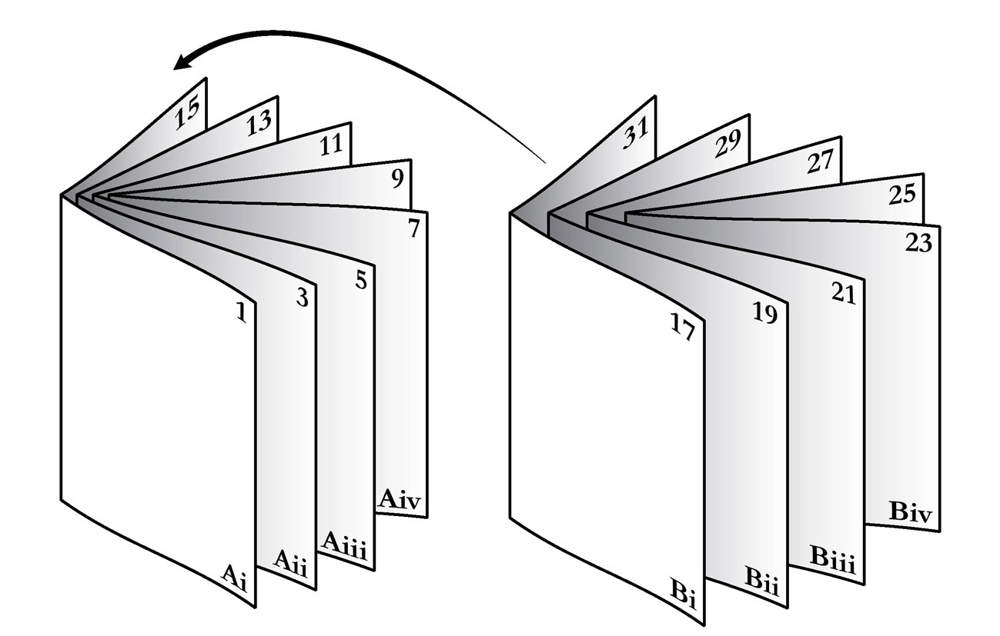
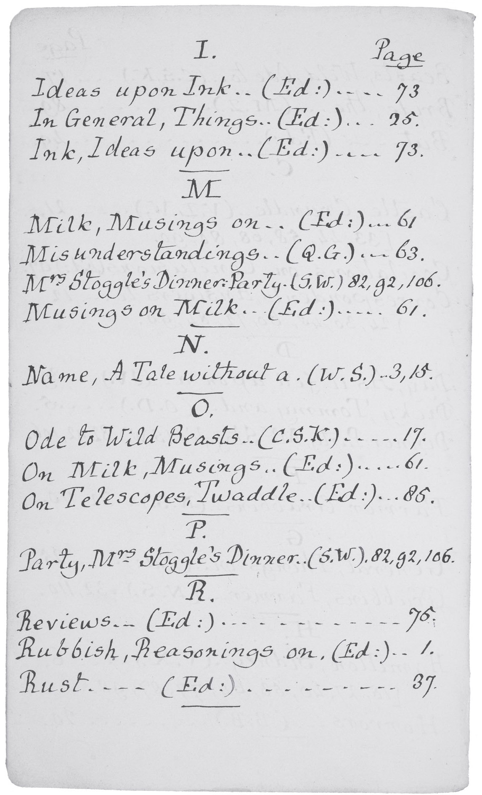

图表列表引言秩序要点论字母排列索引的诞生布道与教学没有它我们会怎样？页码的奇迹地图还是领土索引受审 “别让该死的保守党人为我的历史编索引” 在书页后的争论虚构作品的索引命名从来都是一门困难的艺术通往所有知识的钥匙通用索引卢德米拉与洛塔莉亚搜索时代的索引尾声阅读档案
[318] [319] [320] [321] [322] [323] [324] [325] [326] [327] [328] [329] [330] [331] [332] [333] [334] [335] [336] [337] [338] [339] [340]
丹尼斯·邓肯是一位作家、翻译家、伦敦大学学院英语讲师，也是皇家历史学会会士。他出版了多部学术著作，包括《书籍部件》和《乌力波与现代思想》，以及米歇尔·福柯、鲍里斯·维昂和阿尔弗雷德·雅里的译作。他的文章曾发表在《卫报》、《泰晤士报文学增刊》和《伦敦书评》上，近期文章涉及马拉美与水壶、詹姆斯·乔伊斯与色情作品，以及Times New Roman字体的历史。
献给米娅和莫莉
[1.] 独立艺术家展览目录，纽约，1917年4月。（弗里克艺术参考图书馆提供）
[2.] 公元前14世纪泥板，显示乌加里特字母表。（robertharding/Alamy Stock Photo）
[3.] 公元2世纪纸莎草纸残片。（经大英图书馆/Bridgeman Images许可）
[4.] 欧里庇得斯雕像，公元2世纪。（卢浮宫，巴黎，法国/Bridgeman Images）
[5.] 约翰·哈特《正字法》索引的开篇页。（牛津大学博德利图书馆。Douce H 92, ff. R4v-S1r）
[6.] 约翰·哈特《正字法》索引的序言段落。（牛津大学博德利图书馆。Douce H 92, f. R4r）
[7.] 罗伯特·格罗斯泰斯特向人群布道，出自13世纪其《爱之城堡》抄本。（兰贝斯宫图书馆提供。MS 522, f. 1r）
[8.] 圣谢尔的休在圣尼科洛修道院壁画中的书桌前。（Alamy）
[9.] 马可福音注释的章节标题，12世纪晚期。（经大英图书馆/Bridgeman Images许可。Royal MS 4 B V, f. 2r）
[10.] 唱诗者彼得《亚伯区分集》细节。（牛津大学博德利图书馆。MS. Bodl. 820, f. 1r）
[11.] 罗伯特·格罗斯泰斯特《区分表》的开篇。（里昂市立图书馆。MS 414, f. 17r）
[12.] 罗伯特·格罗斯泰斯特《区分表》细节。（里昂市立图书馆。MS 414, f. 19v）
[13.] 罗伯特·格罗斯泰斯特的《上帝之城》抄本。（牛津大学博德利图书馆。MS. Bodl. 198, f. 31v）
[14.] 维尔纳·罗勒文克《圣母玛利亚献堂布道》中的页码，1470年。（牛津大学博德利图书馆。Inc. e. G3.1470.1, f. 1r）
[15.] 中世纪的”断链”。（经剑桥大学圣约翰学院院长和研究员许可。MS A.12, f. 219r）
[16.] 彼得·舍费尔印刷厂书目，美因茨，约1470年。（慕尼黑，巴伐利亚州立图书馆）
[17.] (a–c). 书籍装订的折页示意图。
[18.] 诺曼·梅勒收藏的威廉·F·巴克利《市长的毁灭》。（斯蒂芬·米尔克摄影。德克萨斯大学奥斯汀分校哈里·兰瑟姆中心提供。经克里斯托弗·巴克利许可）
[19.] 彼得·弗拉林《演说》多媒体表格的第一页。（牛津大学博德利图书馆。Wood 800 (3) p. 10）
[20.] 出版商对詹姆斯·豪厄尔《王权序言》缺少索引的非道歉声明。（牛津大学博德利图书馆。AA 109 Art. p. 219）
[21.] 《博伊尔对本特利》扉页。（作者收藏）
[22.] 查尔斯·博伊尔（1674–1731）和理查德·本特利（1662–1742）。（World History Archive/Alamy Stock Photo）
[23.] 威廉·金的”本特利博士简述，以索引方式”。（作者收藏）
[24.] 威廉·布罗姆利（1663–1732）和约瑟夫·艾迪生（1672–1719）。（ART Collection/Alamy Stock Photo）
[25.] 劳伦斯·埃查德（约1670–1730）。（版权所有 © 国家肖像馆，伦敦）
[26.] 道奇森家族手写《教区杂志》的索引。（德克萨斯大学奥斯汀分校哈里·兰瑟姆中心提供）
[27.] 亨利·莫利为亨利·麦肯齐《感情之人》编制的”眼泪索引”。（作者收藏）
[28.] 《克拉丽莎》索引的索引。（经大英图书馆/Bridgeman Images许可）
[29.] 约翰逊《英语词典》扉页。（Album/Alamy Stock Photo）
[30.] 约翰·芬顿为索引学会设计的徽章。（作者收藏）
[31.] 辛辛那提公共图书馆，1870–1953年。（辛辛那提博物馆中心/Getty Images摄影）
[32.] 圣雅克索引(Concordance)草稿页细节。（马扎林图书馆，MS 105, f. 1r）
[33.] 《约翰·德莱顿诗歌词汇索引》首页。（经大英图书馆/Bridgeman Images许可）
[34.] 《索引者》杂志中MACREX程序的广告。（经许可方通过PLSclear和大英图书馆/Bridgeman Images授权转载）
[35.] 亚历杭德罗·塞萨尔科的《索引》。（吉尔·帕廷顿摄影）
[36.] 用于编制索引的盲印。（作者摄影，来自福尔杰莎士比亚图书馆藏品。H1938）
[37.] 托马斯·杨《英格兰的祸害，或醉酒的描述》中一份未完成的要点列表。（作者摄影，来自福尔杰莎士比亚图书馆藏品。STC 26117）
[38.] “按页面形状分类的信封索引”。（版权所有 © 2013 Jen Bervin。经新方向出版公司许可转载。）
“就我而言，我敬仰索引发明者……那位在文学领域默默耕耘的无名劳动者，是他首次揭示了书籍的神经和动脉。”
艾萨克·迪斯雷利，《文学杂录》
很难想象在使用书籍时——撰写论文、讲座、报告、布道——如果无法快速轻松地找到所需内容会是什么样子：也就是说，没有一个好索引带来的便利。当然，这种便利不仅限于以写作为生的人。它延伸到其他学科，渗透到日常生活中，一些最早的索引出现在法律法规、医学文献、食谱中。这种不起眼的书末索引是那些极为成功、深度融入我们日常实践以至于常常变得隐形的发明之一。但是，像任何技术一样，索引有其历史，在近800年的时间里，它与一种特定的书籍形式——抄本(codex)——密切交织：即在书脊处折叠装订在一起的页面。然而现在，它已进入数字时代，成为支撑我们在线阅读的关键技术。毕竟，第一个网页就是一个主题索引。至于搜索引擎，我们互联网导航的出发港，谷歌工程师马特·卡茨解释说：“首先要理解的是，当你进行谷歌搜索时，你实际上并不是在搜索网络。你是在搜索谷歌的网络索引。”今天，索引组织着我们的生活，本书将追溯它从13世纪欧洲的修道院和大学到21世纪硅谷玻璃钢结构总部的奇特路径。
索引的历史实际上是关于时间、知识以及两者之间关系的故事。这是我们加速需要快速获取信息的故事，也是书籍内容需要成为可分割、离散、可提取的知识单元的平行需求的故事。这就是信息科学(information science)，而索引是该学科架构的基本要素。但索引的演变也为我们提供了一部微观的阅读史。它与大学的兴起和印刷术的到来、启蒙时代的语文学(philology)和打孔卡计算、页码和话题标签(hashtag)的出现紧密相连。它不仅仅是一种数据结构。即使在今天，面对人工智能的入侵，书籍索引仍主要是有血有肉的索引编制者的工作，这些专业人士的职责是在作者和读者之间进行调解。作为人类劳动的产物，索引产生了人类后果，将异教徒从火刑柱上拯救出来，使政客无缘高位。它们自然也吸引了对书籍有特殊兴趣的人，我们的文学索引编制者名单将包括刘易斯·卡罗尔、弗吉尼亚·伍尔夫、亚历山大·蒲柏和弗拉基米尔·纳博科夫。从历史上看，编制索引既不是最光鲜也不是最赚钱的职业。我们可能会想到托马斯·麦考利的哀叹，塞缪尔·约翰逊这位他那个时代最杰出的作家，却整日被”饥饿的小册子作者和索引编制者”包围。如果他知道的话，约翰逊至少可以安慰自己，在这群索引编制者中，他也会被其他时代最杰出的作家包围，而且，尽管不为人知，他们所修补的技术将成为下一个千年黎明时阅读体验的核心。
我们所说的索引是什么意思？从最广义上讲，它是一种作为省时工具而采用的系统，告诉我们在哪里寻找东西。这个名称暗示了一种空间关系，某种地图：这里的某物会指向——会指示(indicate)——那里的某物。这张地图不必存在于现实世界中；它存在于我们的头脑中就足够了。罗伯特·科利森在上世纪中叶写道，每当我们组织周围的世界以便知道在哪里找到东西时，我们实际上就是在编制索引。他提供了一对插图，如果它们穿着厚底鞋出现，就再1950年代不过了：
当一位家庭主妇在厨房里为每样东西安排单独的位置时，她实际上是在创建一个活的索引，因为不仅她自己，她的全家人都会逐渐习惯她创建的系统，并能够自己找到东西……一个男人会养成习惯，总是把零钱放在一个口袋里，钥匙放在另一个口袋里，烟盒放在第三个口袋里——这是一种基本的索引习惯，当他匆忙赶往车站时检查是否记得带季票时，这种习惯对他很有帮助。
事实上，抛开油嘴滑舌不谈，Collison 在这里提出了一个重要观点。厨房的映射不仅适用于家庭主妇，也适用于”她的所有家人”：它存在于多个人的头脑中。如果有人把它写下来会怎样：“面粉：右边顶部的橱柜；勺子：冰箱旁边的抽屉”，等等？那么我们就会有一个可以立即使用的系统，即使是不熟悉厨房的人也能随时使用。现在我们更接近我们所认为的索引了，它不仅仅存在于头脑中；而是一种告诉我们东西在哪里的列表或表格。我们大概期望有一些缩写。与领土一样大的地图是荒谬的；索引也是如此。图书馆目录——正如我们将在第1章中看到的，图书馆目录在信息科学中发挥了重要作用——会将书籍浓缩为其显著细节：标题、作者、类型。同样，书后索引会将其源作品提炼成关键词集合：名称、地点、概念。因此是抽象：减少材料，总结它，以创造新的和独立的东西。索引不是事物本身的副本。
还有什么？正如 Collison 所说，我们大多数人都可以在脑海中记住厨房的布局。如果你必须把它写下来，你的厨房清单会有多长？也许不是难以管理的。但是更长的清单呢？你房子里的所有物品？图书馆里的所有书籍？当列表接近一定长度时，它就变得笨拙：搜索列表并不比搜索书架本身更方便。我们需要的是排列。索引需要以用户能够识别的方式排序，使其易于导航。这就是索引和目录分道扬镳的地方。
塞缪尔·约翰逊的《词典》相当无益地将 index（索引）定义为”书籍的目录”，从表面上看，两者确实有很多共同点。两者都是带有定位符的标签列表，即页码（但正如我们将看到的，页码也有其自己的历史，其他类型的定位符——例如圣经章节——早于它）。两者都指向主文本中的位置或部分，在中世纪晚期，两者甚至使用相同的名称——register（登记册）、table（表格）、rubric（标题）——如果不仔细检查就无法区分。当乔叟笔下的骑士干脆拒绝推测他故事中的一个角色死后会发生什么时——“I nam no divynistre: / ‘Of soules’ find I nought in this registre”（换句话说，“我没有特殊的洞察力：我的登记册中没有’灵魂’的条目”）——很难确切知道他心中想的是哪种类型的列表。尽管如此，这两者是完全不同的书籍部分——跨越主文本的书挡，一个在前，一个在后——各有其自己的功能和历史。
即使没有定位符，目录也提供了作品结构的概览：它遵循文本的顺序，揭示其架构。我们可以浏览一个表格并合理地推测整体论点是什么。因此，在某种程度上，目录是平台独立的。即使在以一系列卷轴形式存在的作品中，它也提供了粗略的导航——事实上，它的历史可以追溯到古代，在抄本(codex)出现之前。我们知道至少有四位拉丁作家和一位希腊作家在古典时期为他们的作品附上了目录。例如，这里是伟大的罗马博物学家老普林尼，将他的巨著《博物志》献给提图斯皇帝：
由于我有责任为公共利益考虑您的时间要求，我在这封信中附上了各卷的目录，并采取了非常谨慎的预防措施，以防止您不得不阅读它们。通过这些方式，您将确保其他人也不需要通读它们，而只需查找他们各自想要的特定要点，并知道在哪里找到它。
或者，换句话说，“因为您如此忙碌和重要，我知道您无法阅读整本书。因此，我附上了一个方便的表格，以便您可以浏览所提供的内容并选择您感兴趣的章节。”
像《自然史》这样的长篇著作会分散在许多卷轴上，甚至可能有几十卷。要找到作品的某个部分，首先需要找到正确的卷轴，然后将它放在桌上，小心地展开到所需的章节。只要最终确实找到了所需的章节，这个过程并非难以想象的繁琐。毕竟，章节是足够大的文本划分单位，值得付出这番努力。但让我们暂时允许自己进行一个不合时宜的幻想：让我们想象一下，除了目录之外，普林尼还为他的作品提供了一个新装置，一项从一千年后的另一个时代传来的创新，一种普林尼在不完全知道原因的情况下决定称之为”索引”的工具。让我们想象一下，某个深夜，提图斯想要看看《自然史》对他的一位前任皇帝尼禄有何评价，尼禄是提图斯童年挚友的杀害者。（在现代网络用语中，我们对这种深夜阅读有一个名称：末日刷屏(doomscrolling)。）在烛光下，我们的皇帝读者展开了普林尼的索引。《自然史》中有六处提到尼禄：第八卷中有三处，第十卷中有一处，第十一卷中还有几处。提图斯把它们都记下来，在找到包含第八卷的卷轴后，花了很长时间才找到第一处提及，那是对尼禄下令对马克西穆斯竞技场进行的一次小规模建筑改造的顺带提及。又是一阵疯狂的卷动和展开，但第二处引用与手头的主题关系更加微弱。它涉及一只忠诚的狗，因主人在尼禄统治下被处决而悲痛地嚎叫。提图斯叹了口气。到现在他已经感到沮丧了。他推断，劳动与回报的平衡，花在滚动上的时间与花在阅读上的时间，并不是一个有利的比例。他查看了第三个定位符，但几分钟后，他所了解到的只是他的前任曾经花费400万塞斯特斯购买羊毛床罩。皇帝允许自己短暂地微笑了一下，然后不满意地退休睡觉了。不难看出为什么索引是抄本(codex)时代的发明，而不是卷轴时代的产物。它是一种真正的随机访问技术，因此它依赖于一种可以在中间或末尾像在开头一样轻松打开的书籍形式。抄本是索引首次变得有意义的媒介。
此外，与目录不同，没有定位符的索引就像没有轮子的自行车一样无用。它不能让我们大致估计在哪里打开书，也不能向我们呈现论点的摘要。这是因为索引的主要机制是任意性(arbitrariness)。它的主要创新在于切断了作品结构与表格结构之间的关系。索引的排序是面向读者的，而不是面向文本的：如果你知道自己在寻找什么，字母表提供了一个通用的、独立于文本的系统来查找它。（我们甚至可以说大多数索引具有双重任意性，因为最常见的定位符——页码——与作品或其主题没有内在关系，只与其媒介，即书籍有关。）
因此，虽然偶尔会出现一些目录，但这是一本关于索引的书，关于将书籍分解为其组成部分、人物、主题，甚至单个词汇的字母表；一种技术——一种附加组件——旨在加快某种阅读模式，学者们称之为”摘录阅读(extract reading)“，适用于像提图斯皇帝那样时间紧迫、无法从头开始阅读的人。
至于复数形式的棘手问题——我们应该使用英语化的indexes还是拉丁化的indices——伟大的维多利亚时代书目学家亨利·惠特利在他的著作《什么是索引？》(1878)中指出，莎士比亚的《特洛伊罗斯与克瑞西达》中使用的词是indexes。惠特利认为，如果英语化的形式对莎士比亚来说足够好，那么对我们来说也应该足够好，本书将在这一点上遵循他的做法。Indices是给数学家和经济学家用的；indexes是你在书后面找到的东西。
当我第一次开始在大学教授英国文学时，一堂课通常是这样开始的：
我：请大家翻到《达洛维夫人》的第一百二十八页。
学生A：沃兹沃斯版是第几页？
学生B：企鹅版是第几页？
学生C（举起一本书：世纪中叶；精装；无护封）：我不知道我的是什么版本——这是我妈妈的。是哪一章？
大约一分钟后，通过章节和段落定位，我们都准备好分析同一段落，然后在每节课中再重复几次这个过程。然而，大约七年前，我注意到开始发生一些不同的事情。我仍然会要求每个人查看小说中的特定摘录；我仍然会（更多是抱着希望而非期待）给出指定版本的页码参考；仍然会有一片手举起来。但这次问题会有所不同：“这段话是以什么开头的？”现在许多学生在数字设备上阅读——在Kindle上、在iPad上，有时在手机上——这些设备不使用页码，但配备了搜索功能。从历史上看，一种特殊类型的索引，称为concordance（词语索引），会按字母顺序列出给定文本中的每个单词——比如莎士比亚的作品或圣经——以及它们出现的所有位置。在我的课堂上，我开始注意到词语索引的功能如何被无限扩展。数字化意味着搜索特定单词或短语的能力不再局限于单个作品；现在它成为了电子阅读器软件平台的一部分。无论你在读什么，如果你知道要找什么，总是可以按Ctrl+F：“文明的胜利之一，彼得·沃尔什想。”
与此同时，搜索引擎的无处不在引发了一种普遍的焦虑，即搜索已经成为一种心态，一种正在取代旧模式的阅读和学习方式，并带来了一系列灾难性的弊端。我们被告知，它正在改变我们的大脑，缩短我们的注意力持续时间，侵蚀我们的记忆能力。在文学领域，小说家威尔·塞尔夫宣称严肃小说已死：我们不再有耐心阅读它。这是注意力分散的时代，而这都是搜索引擎的错。几年前，《大西洋月刊》上一篇有影响力的文章提出了这样一个问题：“谷歌让我们变蠢了吗？”并给出了强烈的肯定答案。
但如果我们从长远来看，这不过是一种旧病的最新爆发。索引的历史充满了这样的恐惧——没有人会再正确阅读了，摘录式阅读将取代与书籍更长时间的接触，我们会提出新问题，进行新类型的学术研究，忘记精读的旧方法，变得可悲地、无可救药地注意力不集中——而这一切都是因为那个可恶的工具，书籍索引。在复辟时期，贬义词index-raker（索引搜刮者）被创造出来，用来形容那些用不必要的引文填充作品的作家，而在欧洲大陆，伽利略抱怨那些安乐椅哲学家，“为了获得自然效应的知识，不去船上、弩炮或大炮那里，而是退回到他们的书房，浏览索引或目录，看看亚里士多德是否说过什么”。书籍索引：自十七世纪以来扼杀实验好奇心。
然而，四个世纪后，天并没有塌下来。索引延续了下来，但与它并存的还有读者、学者、发明家。我们阅读的方式（应该说我们阅读的方式，因为每个人每天都以许多不同的模式阅读：小说、报纸、菜单、路标都需要我们不同类型的注意力）可能与二十年前不同。但那时我们的阅读方式也与弗吉尼亚·伍尔夫那一代人的方式不同，或者与十八世纪的一个家庭不同，或者与印刷机刚出现时不同。阅读没有柏拉图式的理想（而且，对于柏拉图来说，正如我们将发现的，它远非理想）。我们认为正常的做法一直是对复杂历史环境的回应，社会和技术环境的每一次变化都会对”阅读”的含义产生进化效应。不作为读者进化——希望作为一个社会，我们仍然习惯性地以与十一世纪修道院居民相同的深刻专注来阅读，他们与社会隔绝，拥有半打书籍的图书馆——就像抱怨蝴蝶不够美丽一样荒谬。它之所以是现在这样，是因为它已经完美地适应了它的环境。
这本书索引的历史，将不仅仅是简单地叙述这个看似无害的文本技术的连续改进。它将展示索引如何回应阅读生态系统中的其他变化——小说的兴起、咖啡馆期刊的兴起、科学期刊的兴起——以及读者和阅读在这些时刻如何改变。它还将展示索引如何经常为那些投身于先前阅读模式的人的焦虑承担责任。它将描绘两种类型索引的相对命运，即词语索引（也称为concordance）和主题索引，前者始终忠实于它所服务的文本，后者在作品和将要阅读它的读者群体之间平衡其忠诚度。两者都出现在中世纪的同一时刻，主题索引的地位稳步上升，以至于到十九世纪中叶，坎贝尔勋爵可以自豪地宣称曾试图通过法律使新书必须包含索引。相比之下，concordance在上个千年的大部分时间里仍然是一种专业工具，直到现代计算机出现后才突然崭露头角。但是，尽管我们最近依赖数字搜索工具、搜索栏和Ctrl+F，我希望这本书能够表明，在传统的书后主题索引中仍然有生命——确切地说：生命——由真实存在的索引编制者编制。考虑到这一点，在我们正式开始之前，两个例子将说明我一直试图阐明的区别。
1543年3月，亨利八世的宗教当局突袭了约翰·马贝克的家，他是温莎圣乔治教堂的唱诗班成员。马贝克被指控抄写了法国神学家约翰·加尔文的一篇宗教论文。这样做违反了最近的一项反异端法。惩罚是火刑。对马贝克家的搜查发现了进一步可疑活动的证据，手写的纸张证明了一项巨大而不寻常的文学事业。马贝克一直在为英文圣经编制concordance。他大约完成了一半。就在五年前，英文圣经还是违禁品，其翻译者被送上火刑柱。马贝克的concordance看起来很可疑，正是那种未经授权的阅读使圣经翻译成为如此有争议的问题。被禁的论文是他最初的罪行，但现在这个concordance，正如马贝克所说，“不是最小的事情之一……加重了我麻烦的原因”。他被带到马夏尔西监狱。他很可能会被处决。
在马夏尔西监狱，马贝克接受了审讯。当局知道温莎有一个加尔文派教派，并将马贝克视为一个小角色，一个在压力下可能会牵连他人的人。对马贝克来说，这是一个为自己开脱的机会。关于加尔文派论文，禁止它的法令在1539年才颁布，也就是四年前。但是，马贝克抗议说，他是在那之前抄写的。一个简单的辩护。concordance带来了更严重的问题。虽然虔诚信教且勤奋好学，但马贝克也是一个自学者。他没有深入学习拉丁语，但学到了足够的知识来浏览拉丁语concordance，从中掠夺定位符——每个词的实例——然后在英文圣经中查找这些内容，从而构建他的英文concordance。对马贝克的审讯者来说，他能够在两种语言之间工作而不精通两者似乎是不可思议的。当然，像这样的神学项目不可能由一个业余爱好者独自完成，虽然虔诚但未受过训练。当然，马贝克只是抄写员，接受他人的指示，是一个更广泛派系的下属。当然，concordance中一定有某种编码的意图，某种异端的术语选择或重新翻译，而不是马贝克声称的天真的、程序性的转换。
审讯的记录可能是从马贝克那里第一手获得的，出现在约翰·福克斯的《殉道史》（1570年）中。这里的指控者是温彻斯特主教斯蒂芬·加德纳：
你在出版你的书时有什么帮手？
说实话，大人，他说，没有。
没有，主教说，怎么可能？没有帮助你不可能做到这一点。
真的，大人，他说，我不知道你在哪个方面这样认为，但无论如何，我不会否认我是在没有任何人帮助的情况下完成的，只有上帝的帮助。
询问以这种方式继续，其他人也加入了攻击：
然后索尔兹伯里主教说，你在出版这本书时得到了谁的帮助？
真的，大人，他说，根本没有帮助。
你怎么能，主教说，发明这样一本书，或者在没有指导者的情况下知道concordance是什么意思。
在怀疑之中也有一种奇特的钦佩。当索尔兹伯里主教拿出一些可疑concordance的纸张时，另一位审讯者检查了它们并评论说：“这个人比我们的许多神父都更有意义地忙碌着。”
现在马贝克打出了他的王牌。他请在场的主教们给他设置一个挑战。众所周知,这部索引只完成到字母L,马贝克就被逮捕了,他的文稿也被没收。因此,如果审讯官们从字母表后面选择一系列词汇,让马贝克独自在狱中为这些词汇编写条目,他就能证明自己完全有能力独立完成这项工作。审讯团接受了这个提议。马贝克得到了一份需要索引的术语清单,以及一本英文圣经、一本拉丁文索引和书写材料。到第二天,这项任务就胜利完成了。
马贝克获得了赦免,但他的索引草稿被销毁了。尽管如此,他清白无辜且毫不气馁,重新开始了工作。在被捕七年后,他终于能够毫无争议地将这部作品付印出版。然而,马贝克在序言中表达了谨慎的态度。他声明自己使用了”最被认可的译本”,这样就不会有异端教义通过这种方式混入。此外,他宣称自己”没有在至圣的圣经中改动或添加任何词语”。没有添加、改动或重新翻译。马贝克又活了四十年,作为一名管风琴师和作曲家,他的生命得以保全,因为他的索引只是、严格地是:一份完整的词汇及其出处列表,没有任何解释,因此也就没有异端。
相比之下,让我们简要看一下十九世纪晚期一本历史书的后几页。这部作品出自J·霍勒斯·朗德之手,书名是《封建英格兰》。朗德研究的大部分内容旨在纠正他认为爱德华·奥古斯都·弗里曼所犯的学术错误,后者是牛津大学近代史钦定讲座教授(Regius Professor)。弗里曼成为朗德的眼中钉,朗德认为他应该为中世纪研究中的一个重大错误转向负责。然而,在这600页的篇幅中,这种敌意是分散的。毕竟,封建英格兰,而非爱德华·弗里曼,才是这本书的主要主题。但在索引中,却毫不留情:
弗里曼教授:不熟悉坎特伯雷调查委员会4;忽视北安普敦郡税收名册149;混淆税收调查149;他的轻蔑批评150、337、385、434、454;当他自己犯错时151;他对征服者的指控152、573;关于休·德昂维尔默159;关于赫里沃德160-4;他的”确定”历史323、433;他的”无疑”历史162、476;他的”事实”436;关于赫明斯的特许状集169;关于沃特斯先生190;关于封建保有制的引入227-31、260、267-72、301、306;关于骑士采邑234;关于拉努尔夫·弗兰巴德228;关于《末日审判书》的证据229-31;低估封建影响247、536-8;关于免役税268;忽视伍斯特救济金308;受词语和名称影响317、338;关于爱德华统治下的诺曼人318及以下;他的偏见319、394-7;关于理查德城堡320及以下;混淆个人323-4、386、473;他的假设323;关于阿尔弗雷德这个名字327;关于郡长索罗尔德328-9;关于黑斯廷斯战役332及以下;他的迂腐334-9;他的”栅栏”340及以下、354、370、372、387、391、401;误解他的拉丁文343、436;他对韦斯的使用344-7、348、352、355、375;关于马姆斯伯里的威廉346、410-14、440;他隐瞒的词语347、393;关于贝叶挂毯348-51;想象事实352、370、387、432;他所谓的准确性353、354、384、436-7、440、446、448;关于盾墙的观点正确354-8;他的猜测359、362、366、375、378-9、380、387、433-6、456、462;他关于哈罗德失败的理论360、380-1;他混乱的观点364-5、403、439、446、448;他的戏剧化倾向365-6;回避困难373、454;他对权威的处理376-7、449-51;关于阿尔克的解围384;误解战术381-3、387;关于沃尔特·吉法德385-6;他的失败388;他的特殊弱点388、391;他精彩的叙述389、393;他荷马史诗般的力量391;关于哈罗德和他的旗帜403-4;关于韦斯404-6、409;关于雷根巴尔德425;关于拉尔克伯爵428;关于威廉·马莱特430;关于征服者的伯爵领地439;他在《末日审判书》上的错误和混乱151、425、436-7、438、445-8、463;关于”公民联盟”433-5;他疯狂的梦想438;他对埃克塞特的特殊兴趣431;关于传说441;关于蒂埃里451、458;他的方法454-5;关于利索瓦460;关于斯蒂甘德461;关于沃尔特·蒂雷尔476-7;关于圣休的行动[1197]528;关于温彻斯特会议535-8;扭曲封建主义537;关于国王的宫廷538;关于理查德更换印章540;批评他的工作的必要性,xi.、353。
人们很难想象比这更全面或更具毁灭性的攻击,然而又很难不被它逗乐——被它的无情、它的强迫性强度所逗乐。很难看到它的讽刺引号——“他的’确定’历史……他的’无疑’历史……他的’事实’”——而不想象朗德在说话,大声朗读索引,声音中带着激烈的讽刺。这是主题索引(subject index)最极端的形式,与索引(concordance)相距甚远。马贝克的方法一丝不苟地保持中立,而朗德的方法则恰恰相反,完全是个性化的,完全是解释性的。马贝克的索引是全面的,而朗德的索引是片面的。可以公平地说,约翰·马贝克能保住性命,正是因为索引和主题索引之间的区别。
但 Round 的索引是一个奇物，一个极端的异类。好的主题索引虽然不可避免地带有编纂者的个性——他们的洞察和决策——但要低调得多。就像表演一样，如果普通观众开始注意到表演背后的运作机制，这通常不是一个好兆头。理想的索引能够预见一本书将如何被阅读，如何被使用，并安静地、专业地为这些目的提供一张地图。我希望从这个故事中呈现的部分内容，将是对谦逊的主题索引的辩护，它正受到索引词汇表(concordance)的数字化身——搜索栏的攻击。事实上，索引词汇表和主题索引几乎在同一时刻诞生，甚至可能是同一年。它们已经陪伴我们近八个世纪了。两者至今仍然至关重要。
“（弯腰）如果你精通字母，看看这本泥书，多么奇妙的符号（请弯腰），在这个字母表中！”
詹姆斯·乔伊斯，《芬尼根的守灵夜》
1977年夏天，文学杂志《香蕉》刊登了一篇由英国科幻作家 J. G. 巴拉德创作的短篇小说，题为《索引》。故事以一段简短的编者按开始：
下面印刷的文本是一个人未出版且可能被压制的自传的索引，这个人很可能是二十世纪最杰出的人物之一……被关押在一个未指明的政府机构中，他大概在生命的最后几年写下了自传，而这个索引是唯一幸存的片段。
故事的其余部分——亨利·罗兹·汉密尔顿的兴衰——以字母索引的形式呈现，读者必须仅使用关键词、简短的副标题以及页码提供的时间顺序感来拼凑出一个叙事。这种间接的叙事方式提供了大量委婉表达的机会。例如，我们只能从以下非连续的条目中猜测汉密尔顿的真实血统：
阿维尼翁，HRH 的出生地，9–13。
乔治五世，秘密访问查茨沃斯，3，4–6；传闻与亚历山大·汉密尔顿夫人有染，7；压制宫廷公报，9。
汉密尔顿，亚历山大，英国驻马赛领事……HRH 出生后抑郁，6；意外召回伦敦，12；首次神经衰弱，16；调往青岛，43。
进一步的条目显示汉密尔顿是二十世纪最杰出的男性之一：
诺曼底登陆日，HRH 在朱诺海滩登陆，223；获得勋章，242。
汉密尔顿，玛瑟琳（原名玛瑟琳·雷诺），抛弃实业家丈夫，177；陪同 HRH 前往吴哥，189；与 HRH 结婚，191。
海明威，欧内斯特……在《老人与海》中描绘 HRH，453。
仁川，韩国，HRH 与麦克阿瑟将军观察登陆，348。
耶稣基督，马尔罗将 HRH 与之相比，476。
诺贝尔奖，HRH 被提名，220，267，342，375，459，611。
与此同时，与政治家和宗教人物相关的条目模式——最初的友谊随后是谴责——暗示了故事最清晰的情节线，关于汉密尔顿征服世界的狂妄自大：
丘吉尔，温斯顿，与 HRH 交谈，221；在契克斯与 HRH 会面，235；由 HRH 进行脊椎穿刺，247；在雅尔塔与 HRH 会面，298；“铁幕”演讲，密苏里州富尔顿，由 HRH 建议，312；在下议院辩论中攻击 HRH，367。
达赖喇嘛，接见 HRH，321；支持 HRH 与毛泽东的倡议，325；拒绝接见 HRH，381。
甘地，圣雄，HRH 在狱中探访，251；与 HRH 讨论《薄伽梵歌》，253；由 HRH 清洗腰布，254；谴责 HRH，256。
保罗六世，教皇，赞扬完美之光运动(Perfect Light Movement)，462；接见 HRH，464；被 HRH 攻击，471；谴责 HRH 的弥赛亚式自负，487；批评 HRH 建立的阿维尼翁对立教廷，498；将 HRH 逐出教会，533。
为了讲述汉密尔顿的垮台故事，巴拉德通过将事件按顺序集中在字母表的最后几个字母周围来加快行动节奏。HRH 成立了一个邪教组织，完美之光运动，宣称他的神性并占领了联合国大会，呼吁对美国和苏联发动世界大战；他被逮捕并监禁，但随后失踪，大法官对他的真实身份提出质疑。最后一个条目涉及神秘的索引编纂者本人：“齐林斯基，布罗尼斯瓦夫，向 HRH 建议撰写自传，742；受委托准备索引，748；警告压制威胁，752；失踪，761”。
巴拉德在《索引》中的构思相当出色。然而，在一个关键层面上，《索引》并没有真正理解索引，也许没有任何可读的叙事真正能做到。巴拉德知道我们会从头到尾阅读他的索引——从 A 到 Z——因此他将故事的时间顺序（尽管松散地）与字母表的顺序（索引的主要排序系统）挂钩。字母表前面的关键词讲述了 HRH 的早年；他的狂妄在 T 到 V 之间变得病态；他的报应在 W 和 Y 中讲述。两个离散的排序系统，字母顺序和时间顺序，在这里实际上基本一致：索引的形式和内容大致对齐。这根本不是索引的本质。
如果我们要理解索引，就需要深入探究它的史前史，以了解字母顺序这一奇特而神奇的事物的真实面貌：我们认为它理所当然，但它几乎是在2000年前凭空出现的；我们每天都在使用它，但像罗马帝国这样庞大的文明却可以在其行政机构中完全忽视它。带着这段奇特的空白期的新鲜记忆，让我们不从希腊或罗马开始，而是从纽约开始，不从古代开始，而是从更接近我们自己的时代开始。
1917年4月10日，在列克星敦大道和第46街的中央大宫殿，独立艺术家协会开启了其首届年度展览的大门。该展览以法国的独立沙龙为蓝本——后者本身是对法国学院派僵化传统主义的回应——纽约的独立展邀请所有人投稿作品，没有评选委员会，也没有奖项。其指导者是马塞尔·杜尚，他在五年前曾在巴黎独立沙龙展出（并引发争议地撤下）了他的《下楼梯的裸女，第2号》。
在布展方面，纽约展览引入了一项其欧洲前身所没有的创新——正如杜尚的朋友亨利-皮埃尔·罗歇所说，这是一种”在任何展览中首次尝试”的方法：作品将按照艺术家姓氏的字母顺序展示。展览目录阐明了这种方法的理由：
所有展品按字母顺序排列，不考虑风格或媒介，这样做是为了使每件展品摆脱纯粹个人判断的控制，而这种个人判断不可避免地是任何分组系统的基础。
负责布展的比阿特丽斯·伍德描述了一个略显混乱的过程，在展览开幕前一天，画作不按顺序到达，需要被重新调整到正确的位置：
试图正确记住字母表四百次的混乱！在我们遇到施密特们之前还算简单——总共大约有八个。但我们刚决定它们属于一个地方，就有人把它们放到另一个地方，有一个小时，每次我们移动一幅画，它就变成了施密特。我叹着气把沉重的画框沿着地板拖来拖去。
一个按字母顺序排列的展览。不难理解其中的逻辑：每个参展者都有权利购买（“支付象征性费用”）一个展览空间，而不会被展览组织者评判——提升、分组或埋没。字母表是一个伟大的平等器：它的排序不暗示任何东西。但观众呢？作为展览的潜在参观者，我们呢？策展呢？某种内在组织——按风格、主题、尺寸——会使观展体验更连贯，从而让浏览数百件作品的观众更满意，这个想法呢？
一百年后，公平地说，按字母顺序排列的展览并没有真正流行起来。为什么没有？这个想法现在给我们什么感觉？懒惰？故意古怪？也许——这是我自己的直觉反应——有趣但天真，这种方法过于轻易地忽视了一个事实：艺术品的集合会有其线索，会有一些成员彼此赋予意义的群组；敏感的安排可以在大于单个单元的层面上揭示关于集合的一些东西。毕竟，这就是为什么画廊需要策展人。
如果这些说法有道理，那么它可能会让我们理解为什么字母顺序在中世纪早期虽然并非未知，但极为罕见。正如中世纪历史学家玛丽和理查德·劳斯所说，“中世纪不喜欢字母顺序，认为它是理性的对立面。”我们对一个布展任意、外包给无关排序的展览感到的那种反感，中世纪学者在考虑他们书中思想的组织方式时也有同样的感受：
上帝创造了一个和谐的宇宙，其各部分彼此相连；学者的责任是辨别这些理性的联系——等级的、年代的、相似与差异的等等——并在他们的写作结构中反映这些联系。字母顺序意味着放弃这一责任。
劳斯夫妇认为可能还有更深层的焦虑在起作用，选择退出对内在秩序的追求意味着暗示这种秩序并不真正存在：“故意采用字母顺序等于默认承认，每个使用作品的人都可以按照个人顺序重新排列它，不同于他人，也不同于作者本人。”
对我们今天来说，虽然我们可能不会对按字母顺序排列的艺术展感到热情，但这并不意味着我们不会在其他场合愉快地使用字母顺序。作为学童，每天早上我们的名字会从按字母顺序排列的点名册中被读出；当我们长大后，我们会毫无顾虑地滚动浏览手机上的联系人列表。还有什么比这更方便的呢？当我们看到纪念碑上按字母顺序列出的死者名单时，我们当然不会担心他们的牺牲会因为按字母顺序纪念而被贬低。我们几乎不假思索地知道如何使用以字母顺序作为唯一组织系统的表格（如旧式住宅电话簿），或者它与另一个专门的或特定语境的分类系统协同工作的表格（如旧式黄页，其中条目首先按行业分组，然后在这些行业内按字母顺序排列）。这是一个我们完全熟悉的系统，一个如此根深蒂固的东西，一个我们很早就掌握的东西，以至于它可能看起来不言自明。你能记得第一次被教导如何在字典中查找东西吗？我不能；我不确定是否是那样发生的，我是否只是自己弄明白的。然而，不知何故，我们都必须学会那一课，一个并不总是被认为是直观的课程。
1604年，罗伯特·考德里(Robert Cawdrey)出版了通常被认为是第一本英语词典的书。与当时的许多书籍一样，考德里作品的完整标题，如它出现在第一页上的那样，今天可能会让我们觉得异常冗长和详细：
一本按字母顺序排列的表格，包含并教授常用英语难词的正确书写和理解，这些词借自希伯来语、希腊语、拉丁语或法语等。通过简单的英语词汇进行解释，为女士、贵妇或任何其他不熟练的人的利益和帮助而收集。借此他们可以更容易和更好地理解他们在圣经、布道或其他地方听到或读到的许多英语难词，并且也能够恰当地使用这些词。
这里有很多需要理解的内容，尤其是那个不讨人喜欢的短语，“女士、贵妇或任何其他不熟练的人”。但至少我们可以了解考德里意图的要点：这是一本旨在提供外来词定义的书，这些词在英语中使用但”借自希伯来语、希腊语、拉丁语或法语等”。它是为那些没有受过这些语言教育的读者准备的，以便他们在英语书籍中遇到这些词时能够理解它们。尽管大多数学者现在称考德里的作品为《按字母顺序排列的表格》(Table Alphabeticall)，但这样缩写标题有一个相当奇怪的效果，即告诉我们这本书是如何排列的，但没有告诉我们它包含什么。
鉴于这部作品首先宣称自己是一个按字母顺序排列的表格，在开篇页面看到这个冗长的关于如何使用这本书的解释时，我们会感到相当惊讶：
如果你渴望（温和的读者）正确而迅速地理解并从这个表格和类似的表格中获益，那么你必须学习字母表，也就是说，完全不看书地记住字母的顺序，以及每个字母的位置：例如(b)靠近开头，(n)大约在中间，(t)靠近结尾。现在，如果你想要查找的单词以(a)开头，那么在这个表格的开头查找，但如果以(v)开头，则在结尾附近查找。再者，如果你的单词以(ca)开头，在字母(c)的开头查找，但如果以(cu)开头，则在该字母的结尾附近查找。其余的都是如此。
我们在这里看到的是关于如何使用按字母顺序排列的列表的一课，它回到了第一原则：首先，温和的读者，你必须学习字母表的顺序——真正地学习它——这样你就可以”不看书”地回忆起它。看到考德里想象他的读者是多么”不熟练”，这是相当令人震惊的！他正在详细说明现代读者会认为理所当然的事情：字母表和书之间会有一种空间关系，这样以字母表前面的字母开头的条目可以在书的前面找到。更重要的是，这种按字母顺序的排列是嵌套的(nested)，也就是说，capable会出现在culpable之前，因为这两个词都以c开头，但a在u之前，依此类推。
事实上，考德里的按字母顺序排列在1604年并不是一个新发明。他的使用指南也不是，类似的，尽管稍微不那么居高临下的说明集被作为伦巴第的帕皮亚斯(Papias the Lombard)（约1050年）和乔瓦尼·巴尔比(Giovanni Balbi)（1286年）的拉丁语词典的前言。然而，所有这些都表明，按字母顺序排列并不是直观的。采用我们拼写单词所用的字母序列，并将该序列用于完全不同的事物——图书馆中的书籍；展览中的图片；你所在地区的水管工——需要一个非凡的想象力飞跃。这是一个跳入任意性(arbitrariness)的飞跃，抛开被排列材料的内在品质，从内容转向形式，从意义转向拼写。
字母表中字母的排序在被用于行政管理之前已经存在了很长时间。在叙利亚北部发现的泥板显示，乌加里特城使用的字母表中字母的顺序在公元前第二个千年中期就已经确立。8 这些泥板是字母表，也就是简单地按顺序排列的字母行，可能是作为学习读写的辅助工具，就像今天的英国和美国儿童通过唱”一闪一闪小星星”的曲调来学习字母表一样。
乌加里特文是一种楔形文字，其字母是通过将楔形芦苇压入湿泥中形成的。然而，它的声音排序在另一个相关的字母表中得到了体现，即腓尼基人的字母表，它使用了我们更熟悉的线性字母风格。这种相同的排序一直延续到希伯来语、希腊语，最终到拉丁字母表。
在希伯来语中，已知最早的字母表是在以色列中部拉吉什发现的铭文。大约在公元前9世纪初刻在石灰岩楼梯上，它在一幅看起来相当凶猛的狮子画旁边显示了字母表的前五个字母。9 与乌加里特字母表一样，这很可能是学习者的作品。在挖掘后立即在伦敦的一次讲座上宣布这一发现时，考古学家查尔斯·英格提出，这是”一个学童炫耀他的知识，写下相当于ABCDE的内容，直到他到达台阶顶部”。10 在公元前9世纪，字母顺序似乎仍然只是一种记忆辅助工具。
然而，几个世纪后，字母顺序开始被用于一些完全令人惊讶的事情。希伯来圣经的部分内容，包括箴言31:10-31以及诗篇25、34、37、111、112、119和145，都是以字母离合诗(acrostic)的形式写成的，也就是说，字母表的顺序决定了每节经文的第一个字母。最值得注意的是耶利米哀歌，其中五章中有四章遵循这种安排，每章由二十二节组成，第一节以字母aleph开头，第二节beth，第三节gimmel，依此类推直到tav，希伯来字母表的第二十二个也是最后一个字母。（[第3章]有六十六节，将这种约束增加了三倍：aleph、aleph、aleph、beth、beth、beth，等等。）因此，字母的顺序被用作一种诗歌脚手架，字母表——就像现代诗歌中的韵律或格律一样——决定了诗人可以做什么。
有时人们倾向于轻视离合诗，以及字谜、避字文(lipogram)（避免使用某些字母）和其他类型的语言约束，认为它们本质上是异想天开的，是某种低于严肃诗人的矫揉造作。约瑟夫·艾迪生在18世纪初就体现了这一观点，他怒斥离合诗是”最彻头彻尾无可争议的笨蛋……冒充优雅作家”的方式。11 然而，耶利米哀歌是希伯来圣经中最凄凉的部分之一。写于公元前6世纪耶路撒冷被毁之后，它们构成了对这座城市命运的持续绝望呼号：“这城何竟独坐，好像寡妇！她本来满有人民，现在何竟如此！”对其离合诗形式吹毛求疵就像哀叹莎士比亚用五音步格律限制自己一样荒谬，或者想知道如果乔叟没有用韵律约束自己，《坎特伯雷故事集》会好多少。更好的做法是惊叹于那种能够将字母表的顺序视为不仅仅是学童辅助工具的头脑，那种能够拾起它并将其作为驾驭流放的汹涌痛苦的方式进行实验的头脑，一种文学创造力的催化剂。
然而，我们仍然没有到达字母顺序被用作查找辅助工具的时刻，它的特殊属性——任何学过aleph beth gimmel或alpha beta gamma的人都能够将这个刻度中的位置转换为其他地方的位置，一个列表或一本书或一个书架——还没有被利用。为此，我们需要从耶利米哀歌的恐怖快进三个世纪，并从耶路撒冷向西行进300英里。
公元前323年亚历山大大帝的去世引发了一系列内战，他所建立的帝国在继承者之间被瓜分。埃及落入亚历山大的一位将军托勒密一世·索特的控制之下，他开创了一个王朝，这个王朝一直持续到近300年后克利奥帕特拉被罗马人击败。托勒密的首都是新建立的亚历山大城，大约在公元前三世纪初，他在这里建造了一座机构，那个时代最伟大的学者们将在此生活、学习和教学。它有点像现代大学——这不是大学的发展对我们的故事证明至关重要的最后一次——它将献给缪斯女神，因此得名Mouseion，或拉丁语Musaeum，这给了我们现代词汇museum（博物馆）。它的核心将是古代世界最大的图书馆，亚历山大图书馆。这座图书馆在托勒密的继任者托勒密二世统治期间蓬勃发展，保守估计它收藏了4万卷卷轴（其他资料将这个数字定为50万）。如此规模的藏书需要整理才能发挥作用。一个名叫卡利马科斯的人，凭借字母表的二十四个字母，将这座庞大的图书馆驯服。
今天，卡利马科斯最为人所知的是他的诗歌。他是写给同为诗人的哈利卡纳苏斯的赫拉克利特的挽歌的作者，这首诗的威廉·约翰逊·科里译本经常被收入选集：“他们告诉我，赫拉克利特，他们告诉我你死了。”作为短诗形式——赞美诗、挽歌、警句诗——的倡导者，据说他创造了警句mega biblion, mega kakos（“大书，大恶”）来表达他对史诗的不屑。然而，我们关注的不是他作为诗人的工作，而是作为学者的工作，在这方面，卡利马科斯负责编写了一部非常大的书，《表册》(Pínakes)，据说长达120卷纸莎草卷轴。许多世纪以来，人们认为卡利马科斯是在担任bibliophylax或图书馆馆长期间编写《表册》的。然而，在上世纪初，在俄克喜林库斯的废料堆中发现了一块纸莎草碎片，似乎按顺序列出了首席图书馆馆长。卡利马科斯的名字不在上面。相反，上面有他以前的一个学生的名字，罗德岛的阿波罗尼乌斯，一个与卡利马科斯有过激烈文学争执的人，一个——巧合与否——写史诗的人。
卡利马科斯可能被排除在首席图书馆馆长的职位之外，但在编纂《表册》时，正是他为保存图书馆的记忆做出了最大贡献。Pínakes简单地意味着”表册”，如书写板或”书板”，卡利马科斯作品的全称是《各个学习领域的杰出人物及其著作表册》。这是一份收藏在大图书馆中所有作品的目录。为了有用，这些表册需要以这样一种方式组织，即查阅它们的读者可以在成千上万的条目中找到他们要找的东西。虽然《表册》本身没有任何内容留存下来，但我们可以从后来的古典作家在其他作品中对它的二十几处零散引用中了解它的编排方式，这些作家曾见过它的副本。从这些引用中我们可以推断，这部作品首先按体裁组织：修辞学、法律、史诗、悲剧等。我们知道，这些类别中的最后一个——包罗万象的”杂项”组——有细分，包括deipna和plakuntopoiika，即宴会和糕点制作，正如公元二世纪末瑙克拉提斯的阿特纳乌斯所写：“我知道卡利马科斯在他的《杂项论文表册》中记录了埃吉穆斯、赫格西普斯和梅特罗比乌斯以及法埃斯图斯关于糕点制作艺术的论文。”关于这个列表有一些重要的事情需要注意。除了揭示希腊人对他们的蛋糕有多认真之外，它还告诉我们，在他的每个类别中，卡利马科斯根据作者的名字按字母顺序排列了作者。提供了这种两层排序——按体裁和按名字的字母顺序——以便读者可以找到作者后，卡利马科斯继续提供进一步的信息。有传记数据：例如父亲的名字、出生地、绰号（对于有常见名字的作者很有帮助）、职业、是否曾师从著名教师；然后是书目数据：作者作品的列表，以及它们的incipits或开头词（因为这一时期的作品不一定有标题），以及作品的行数长度。最后这个细节在印刷术出现之前很重要，因为它可以让图书馆员确定他们是否拥有相关作品的完整副本，也意味着书商可以估算制作副本的成本。
有一个强有力的论点认为，卡利马科斯目录的标题指的是可能悬挂在存放卷轴的箱子上方的书板——本质上是书架标记，表明那里有什么。如果这是真的，那么”pínakes”很好地表达了关于未来索引如何工作的一些重要内容：参考和所指之间的空间关系。这里的某物定位那里的某物：目录中的标题指向书架上的对应物。
关于卷轴存储方式的简要说明：在古代图书馆中，悬挂在书架上方的标签是定位所需内容的一种方法，但希腊人还有另一种方法，可以识别单个卷轴。（请记住，护封、印刷书脊，甚至扉页——我们用来快速识别特定书籍的方法——都是相对较新的产物，不过几个世纪的历史，而且都从根本上依赖于抄本(codex)，即我们今天所知的书籍形式，具有可翻动的书页，装订在书脊处。）为了在不展开卷轴的情况下识别它，会将一小块羊皮纸标签——本质上是一个名称标签——粘贴到卷轴上，使其突出显示，展示作品的作者和标题。它被称为sittybos，或更常见的sillybos（我们的单词syllabus（教学大纲）就源于此，我们用它来描述课程的内容，就像sillybos表示卷轴的内容一样）。
当罗马伟大的政治家和演说家西塞罗决定整理他的私人图书馆时，需要完成的工作之一就是将这些标签固定到每个卷轴上。他写信给他的朋友阿提库斯：
如果你能来拜访我们，那将是令人愉快的。你会发现提拉尼奥在整理我的书籍方面做得非常出色。剩下的书比我预期的要好得多。如果你能派两个图书馆职员来帮助提拉尼奥进行粘贴和其他操作，我将不胜感激，并告诉他们带一些羊皮纸来做标签，我相信你们希腊人称之为sittybae。
因为阿提库斯是希腊人，西塞罗使用了希腊术语sittybae来指代卷轴标签。然而，在他的下一封信中，西塞罗表示对图书馆员所做的工作感到非常满意。他在这里描绘的整洁书架为整个房子带来生机的画面相当美妙，但让我们注意西塞罗用来指代标签的词。这次他没有切换到希腊语：
现在提拉尼奥已经整理好了我的书籍，我的房子似乎焕发了生机。你的狄奥尼修斯和梅诺菲卢斯在这方面创造了奇迹。那些书架非常优雅，现在标签[indices]使书卷焕然一新。
就是这样：对罗马人来说，index意味着标签，卷轴的名称标签。这些不是我们现代意义上的索引(index)。还不完全是。但我们正在接近：指示内容；帮助我们在浩瀚的图书馆中找到我们要找的东西。与此同时，我们可能会争论拉丁语indices还是英语化的indexes是英语中正确的复数形式，但至少历史没有选择希腊语：sillyboi。
回顾亚历山大图书馆，不能确定字母顺序组织原则是卡利马科斯或他在缪斯神庙的同事们的发明。然而，鉴于缺乏更早的证据，以及前所未有规模的信息积累所带来的巨大需求，用劳埃德·戴利的谨慎措辞来说，这似乎是”一个合理且有吸引力的假设”。图书馆的浩瀚——古希腊的大数据(Big Data)——需要一次重大的技术转变：从字母表到字母顺序列表，从知道字母顺序到使用它。字母顺序的使用代表了一次巨大的智力飞跃：拒绝被组织材料的内在特征，转而采用现成的、任意的东西。回报是一个通用的系统，一个依赖于任何有文化的人都已经知道的信息的系统，可以应用于任何事物，将其分解成更易于管理的块。在最宽松的情况下，当排序仅应用于首字母时，希腊字母表提供了二十四个独立的桶来划分总数，显著提高了信息的可搜索性。（这不仅适用于列表等离散信息。缪斯神庙的另一项创新是将荷马史诗《伊利亚特》和《奥德赛》划分为我们今天阅读的二十四卷。一部稍晚的作品指出这个数字很重要：这些诗歌被划分为”字母表的字母数量，不是由诗人本人，而是由与阿里斯塔克斯相关的语法学家”完成的。阿里斯塔克斯在卡利马科斯之后约一个世纪担任图书馆馆长。）
在希腊世界，字母顺序的使用超越了学术领域及其书目，进入了市政管理、宗教仪式和市场交易。在科斯岛发现的一根八角形石柱，可追溯到公元前三世纪晚期，列出了阿波罗和赫拉克勒斯崇拜的成员，并附有说明，要求名单应”按照从阿尔法开始的字母顺序”排列。20 在希腊大陆的阿克赖菲亚，两块可追溯到二世纪初的石碑列出了数十种鱼类的名称及其价格。这些鱼类按字母顺序排列。21 在奥克西林库斯废料堆中发现的古希腊税吏账目显示，纳税人按姓名字母顺序分组。22 与此同时，在罗马发现、现藏于卢浮宫的剧作家欧里庇得斯雕像，描绘了这位剧作家坐在他的剧作字母顺序列表前。
相比之下，古罗马虽然熟悉字母排序，但对此并不十分推崇。它在一些学术著作中被使用，但不像希腊世界那样热衷。一种贬义的感觉常常伴随着它——这是一种在找不到更好的排列方式时不得不采用的顺序。以普林尼为例。在他庞大的《自然史》中关于宝石的章节即将结束时，他宣布了剩余项目的排列方式：“我现在已经讨论了主要的宝石，按照它们的颜色进行分类，接下来将按字母顺序描述其余的宝石。”23 字母顺序可以用于剩余物品、残渣，既然重要的项目已经得到了更恰当的分类。此外，字母顺序并没有像在希腊语世界那样从学术界溢出到行政管理领域。在像罗马帝国这样庞大且高度组织化的社会中，人们可能会认为字母顺序是不可或缺的。然而，事实并非如此。24
拉丁语中字母顺序的首次出现不是在学术著作中，而是在一部粗俗的喜剧中。普劳图斯的《驴的喜剧》创作于公元前二世纪初左右，讲述了一位老人德迈涅图斯试图从妻子那里骗取足够的钱来赎买某位妓女的自由，以便她能嫁给他的儿子。在剧情高潮时，德迈涅图斯的妻子阿尔特莫娜冲进妓院，发现父子俩都在与那位女士寻欢作乐。阿尔特莫娜愤怒地喊道：“这就解释了为什么他每天都要去赴宴。他说他要去阿尔基德穆斯、凯雷亚、凯雷斯特拉图斯、克利尼亚、克雷梅斯、克拉提努斯、迪尼亚斯、德摩斯梯尼那里。”25 当然，字母顺序在这里给我们带来的是一个关于缩略的笑话：阿尔特莫娜的名单中有八个不在场证明，德迈涅图斯对妻子撒了八次谎，声称要和朋友们共进晚餐，而我们才到D字母。观众可以自行推算罪行的规模。拉丁语中没有更早的例子，但我们必须假设观众对这一原则足够熟悉才能理解这个笑话。后来，在维吉尔《埃涅阿斯纪》第七卷中，当意大利的战士们集结起来将新到的特洛伊人赶出他们的海岸时，当地酋长们被描述的顺序是一个熟悉的顺序：阿文提努斯、卡提卢斯、科拉斯、凯库卢斯……26
顺便说一句，我们可以注意到有一个小而奇特的文学类型——我们可以称之为字母文学——从《耶利米哀歌》开始，经过普劳图斯和维吉尔，一直延续到现代作品，如巴拉德的《索引》或沃尔特·阿比什的《字母非洲》。然而，这个类别中并非所有内容都如表面所示。在阿加莎·克里斯蒂的《ABC谋杀案》中，在安多弗的爱丽丝·阿舍、贝克斯希尔海滩上的贝蒂·巴纳德以及在丘斯顿家中的卡迈克尔·克拉克被杀之后，警方赶往唐卡斯特以防止下一起犯罪。然而，在这里，受害者是一位名叫乔治·厄尔斯菲尔德的理发师：系列被打破了。不仅如此，正如波洛推断的那样，凶手不是主要嫌疑人亚历山大·波拿巴·卡斯特——A.B.C.先生——而是第三位受害者的兄弟富兰克林·克拉克，他唯一的动机是贪婪，他策划了字母谋杀案作为陷害另一个人的方式。
回到古罗马时代，罗马人可能并未真正接受字母顺序，但对于某一类工作来说，它的实用性使其得以延续。在语法学家的著作中，在词汇表、词典和解释语言运作的论文中，字母顺序——至少是按首字母排序——在整个古典时期及之后都得以保留。也就是说，当主题是语言本身，当词语被视为词语本身时——例如在以特定方式变格的名词表中，或在某些类型文学作品中读者可能遇到的缩写中——字母顺序列表在公元第一个千年中随处可见。字母顺序被用于Photius的《词典》(九世纪)、Suda——十世纪关于古典世界的伟大百科全书——以及前面提到的Papias词典，该词典通过将排序嵌套到每个词条的第三个字母来提高排序精度。在英格兰，早在九世纪就可以找到按字母顺序列出术语的盎格鲁-撒克逊词汇表。因此，如果说当第一个伟大的书籍索引在十三世纪中叶出现时，其排列方式是闻所未闻的，这未免有些夸张；更准确地说，这是对某种已经沉寂了一千年的东西的复兴。
但如果索引要按字母顺序列出其术语，仍然存在一个问题：使用哪种字母表？图5显示了十六世纪中期一本书索引的开篇页面，到那时读者已经对这一特征相当熟悉了。忽略那些花体字和无意义的词语，只看排序——a、e、i——很明显这里有字母顺序，但这显然是一种独特的顺序。为什么从元音开始？辅音的顺序是什么？那些不熟悉的字母是什么？
这本书名为《正字法，包含书写或描绘人类声音形象的正确顺序和理由，最接近自然的生命》，作者是约翰·哈特(John Hart)。哈特的《正字法》呼吁进行拼写改革，使书写与发音保持一致。由于哈特致力于转录十六世纪人们的说话方式，他的书成为现代”莎士比亚原音重现”运动的关键文本。恰如其分的是，哈特似乎在《爱的徒劳》中找到了回响——尽管不是很同情的回响——当可笑的霍洛弗尼斯(Holofernes)抱怨人们应该完全按照拼写来发音时：
这些正字法的折磨者，说’dout’时不带b，而他应该说’doubt’；说’det’，而他应该发音’debt’——d、e、b、t，而不是d、e、t：他把calf叫做’cauf’；half叫做’hauf’；neighbour称为’nebor’；neigh缩写为’ne’。这是可憎的(abhominable)——他本应该说可憎的(abominable)。(第五幕，第一场)
相比之下，哈特希望我们按照说话的方式来书写，为了说明他的意思，他的小书包含了对英语口语的分析，确立了人们实际使用的声音。当然，其中许多声音已经由罗马字母表中的字母形式表示，但哈特指出有些字母是多余的：再见了j、w、y、c和q。更重要的是，哈特发现有些声音不能再分成更小的单位，但还没有自己的字母。因此，需要为sh和th这样的声音发明一些额外的字符(包括浊音，如then中的，和清音，如thin中的)。
为了表明他是认真的，哈特书的最后三分之一完全用他的简化正字法书写。这是一个巧妙的技巧：如果读者想读完这本书，他们就必须接触这种书写系统，从而(希望)发现它并不像看起来那么令人困惑。在索引方面，哈特包含了关于如何排列他的新字母表的说明(图6)。
这段练习以提醒读者结束，后面的索引将按照新原则排列。这种字母顺序不是读者在学校学到的。哈特声明该表格是按照他的新正字法规则”放置和设置”的。换句话说，这是一个新拼写原生者(niu-speling nạtiv)，诞生于新体制之下。在这方面，哈特为自己省去了一些艰苦的努力。事后在两种排序——两种字母表——之间切换可能是一个棘手的过程。
弗拉基米尔·纳博科夫1962年的作品《微暗的火》(Pale Fire)是一部伪装成诗歌的小说，或者更确切地说，是一部伪装成评注版的小说，其核心诗歌被编辑装置所包围：引言、注释、索引。诗人是约翰·谢德，最近去世，是阿巴拉契亚小镇新怀镇沃德史密斯学院的长期教员；编辑是他的同事和邻居查尔斯·金波特，最近从大西洋彼岸来到这里；小说围绕两人之间的文学关系展开，金波特做了编辑不该做的事：盖过了作者的风头，把聚光灯抢到自己身上。在越来越疯狂、刻薄和自恋的尾注中，金波特最终抛开谢德的诗歌，讲述自己作为流亡君主的疯狂背景故事——他是被废黜并驱逐出祖国曾布拉的查尔斯大帝。
这份索引据称由金波特编纂，保持了他尖刻、抱怨的语气。学术对手在金波特本人的冗长条目中被傲慢地冷落——“他对H教授的蔑视(不在索引中)，377……他与E的最终决裂(不在索引中)，894……对C教授(不在索引中)的大学教科书中的趣闻笑得浑身发抖，929”——而谢德的妻子西比尔，实际上在诗中占有重要地位，却被嫉妒地用一句生硬的话打发：“谢德，西比尔，S的妻子，处处可见”。笼罩在这一切之上的是纳博科夫本人的存在，因此像”马塞尔，普鲁斯特《追忆似水年华》(À la recherche du temps perdu)中那个挑剔、令人不快、并非总是可信的中心人物，被所有人宠爱，181，691”这样的尖刻、过度详细的条目，在措辞上纯粹是金波特式的，同时也是对《微暗的火》自身那个挑剔、令人不快、并非总是可信的中心人物的元小说式讽刺。
《微暗的火》以一个最终的、不完整的索引条目结束：“曾布拉，一个遥远的北方之地”。在小说出版那年接受的一次采访中，纳博科夫扩展了这个结局的含义：“没有人注意到我的评注者在完成这本书的索引之前自杀了。最后一个条目没有编号引用。”曾布拉没有定位符。它是无法定位的，既是虚无之地，是妄想心灵的幻想，也是无处不在的，是金波特——以及纳博科夫——失去的祖国俄罗斯的理想化替代品。这是一个毁灭性的辛酸结局，让我们措手不及，与之前的烟火、疯狂和尴尬喜剧形成鲜明对比。但这种转变虽然突然，却非常不引人注目。索引形式让纳博科夫隐藏了他的手法，掩饰了正在进行的情感操纵。字母顺序声称自己是无辜的：只是因为任意性，因为曾布拉的Z排在所有其他字母之后，才把我们带到这一点，一个没有结束的条目，思考着流亡的渴望和疯狂。
当然，这一切都不是任意的，而是某种障眼法，与巴拉德的手法相同：将叙事需求——情节、情感回报——与字母表的站点对齐。但如果在确定小说应该以这个特定音符结束之后，曾布拉并不在索引的末尾呢？是纳博科夫的遗孀薇拉首次将《微暗的火》翻译成俄语。因此，是薇拉首先遇到了一个棘手的问题：西里尔字母表的顺序与罗马字母表不同。在俄语中，字母З(相当于Z)是三十三个字母中的第九个。考虑到纳博科夫——以及薇拉——自己被迫移民的历史，《微暗的火》的俄语翻译，特别是其最后那难以承受的怀旧时刻，是极其辛酸的。然而，由于两种字母表的不同顺序，这个巧思根本行不通。那个遥远的北方之地应该归档在前面某处。要让《微暗的火》在俄语中以同样的方式结束，薇拉必须找到一种方法，把曾布拉及其失落的含义与一个以Я开头的词联系起来，Я是西里尔字母表的最后一个字母。
在《微暗的火》核心诗歌的第三章中，谢德思考着死后的即刻状态，特别是”当你变成鬼魂时如何不惊慌”。有一联发现他在思考”如何在黑暗中定位，喘息着，/美丽的大地，碧玉的球体”(第557-558行)，换句话说，如何找到通往美丽之地或宝石球体的路。在金波特疯狂的脚注中，这是”这一章中最可爱的对句”——我们推测，他想的不是天堂，而是他失去的祖国。因此，当薇拉将”碧玉的球体”(orbicle of jasp)翻译为ячейка яшмы(碧玉的格子)时，她就有了所需的材料。薇拉的翻译以不完整的索引条目结束：
ЯЧЕЙКА яшмы, Зембля, далекая северная страна
[碧玉的球体，曾布拉，一个遥远的北方之地]
这是一个优雅的解决方案。它打破了规则，引入了一个额外的元素，但通过这样做，它允许译者重复纳博科夫的原始技巧，在新的字母表中操纵顺序，让作者再次拥有最终发言权。但是，确保小说的情感轨迹保持不变所需的艺术性和狡猾应该提醒我们，索引并不是一种适合叙事的形式。它很难被打破。它的承诺不是对作者，而是对读者，以及对字母表的任意顺序。
“但在你从学校逃到修道院之后，你变得像一个无知的人，一个鄙视文字的人，既不阅读也不教学。”
阿什比的亚历山大，《论布道的技巧方法》
“Ky bien pense bien poet dire。” 这句话恰恰实践了它所宣扬的内容：很难将它翻译成英语而不破坏其节奏，以及它所包含的思想的简洁和清晰。也许可以译为：善思者善言。这样就可以了。这是长诗《爱之城堡》的开篇第一行，诗中基督教的救赎理念被赋予了宫廷式的改造，十字架受难被解释为关于王子和公主的寓言，用优雅押韵的盎格鲁-诺曼语对句讲述。它写于十三世纪上半叶，诗人是罗伯特·格罗斯泰斯特。我们可以在兰贝斯宫现存的一份手稿中看到他，该手稿附有这首诗的插图。他就在那里，坐在左边，伸出长长的食指，这是讲故事者的经典姿态。也许正是这首诗，他正在向脚下的听众朗诵。他们看起来确实全神贯注。女人们紧握着心口，一个男人惊讶地举起手（或者他可能有问题要问）。右边的听众深情地向上凝视，与格罗斯泰斯特四目相对。只有那只大鹈鹕，蹲在树上，能打破这种联系，它是糟糕听众的象征，傲慢地、坚决地盯着舞台外。但她正在逐渐被抹去，她的颜色逐渐褪去，原来的红色和镀金边框从下面责备性地重新显现，手稿对不专心的罪行施以缓慢的惩罚。
善思者善言。一句简洁的格言。对于任何开始担任讲师或布道者的人来说，这句话都可以作为座右铭。事实上，它可能是格罗斯泰斯特本人的完美墓志铭，他是英国中世纪伟大的博学者之一，在他的时代既是讲师又是布道者，既是牛津大学校长又是林肯主教（因此插图中有主教冠和权杖）。当然也是一位诗人，但同时也是政治家、数学家和宗教改革者。他从希腊语翻译亚里士多德，是第一个论证彩虹由光折射引起的人，并将宇宙的诞生想象为一个膨胀的光球，将科学和圣经融合成一种大爆炸理论，仍然为上帝留下了用”要有光”来启动一切的空间。因此，格罗斯泰斯特应该设计——应该需要设计——一种方法来对他阅读的广泛内容施加秩序，也许就不足为奇了。格罗斯泰斯特的伟大表格——或称索引表——通过对他遇到的概念进行分类，将混沌变为秩序，无论是在教父著作还是异教著作中，将相似的思想放在一起，并存储它们的位置以供将来参考。一个百科全书式的头脑需要一个百科全书式的索引来为其提供结构。
那么，需求是发明之母。但将格罗斯泰斯特视为一个脱离时代、与文化隔绝的人是错误的。产生索引表的需求并非格罗斯泰斯特独有；相反，它是在他所处的领域中逐渐清晰起来的一种需求的版本。到十三世纪，制作索引的工具——抄本和字母顺序——早已可用。将它们结合在一起的火花将来自两种善言形式：教学和布道。由于两个新机构的出现，这两者在中世纪晚期都变得更加重要：大学和托钵修会，即修士——多明我会和方济各会——他们在更广泛的人群中生活和布道。在这些机构中，对新的、更有效的阅读方式——使用书籍的方式——的需求日益增长，以推动它们各自有序言语的载体：讲座和布道。我们即将见证索引的诞生，或者更确切地说是索引的多次诞生，同一理念的两个版本，同时出现，一个在牛津，一个在巴黎。综合来看，两者都可以告诉我们一些关于当下二十一世纪索引的信息，即搜索时代。它们共同建立了我们思考索引的坐标轴：词汇与概念；索引与主题索引；具体与普遍。
格罗斯泰斯特自然代表着普世性。他宏大的《表格》(Tabula)试图将整个知识体系——教父们的著作，如奥古斯丁、杰罗姆、伊西多尔，以及更古老的非基督教传统，如亚里士多德、托勒密、波伊提乌——浓缩成一个单一的资源，一个概念不分派别、随意出现的地方。这就是我们现在所说的主题索引，一个思想的索引，因此它能够灵活处理同义词，即使文本没有明确命名某个概念，也能识别出来。因此，这也是一个主观索引，是特定读者的作品，以特定方式思考和解析他们的阅读。概念是难以捉摸的东西。当我们说一个文本关于某事时，我们做出了选择；比如说，诺亚方舟的故事是关于宽恕、愤怒还是雨。相比之下，另一种索引——另一种搜索方式——更为直接。它的术语就是被分析文本的词语：如果文本使用了某个特定的词，那么这个词就会出现在索引中。这种索引不带主观性，几乎没有解释的余地——一个词要么存在，要么不存在。在格罗斯泰斯特的《表格》之外，这种索引——词语索引，或称对照索引(concordance)——将是我们在本章见证的第二个诞生。让我们来认识第二位创造者，圣谢尔的休。
在意大利特雷维索的圣尼科洛修道院，威尼斯以北几英里处，会议厅上层墙壁上的壁画以一系列肖像的形式呈现。每幅画都描绘了一个身穿多明我会白袍和黑色披风的男子——黑衣修士——每个人都坐在书桌前，正在阅读或写作。这些是多明我会的杰出人物。整体而言，这幅壁画是该修会第一个世纪左右的名人堂(该修会成立于1216年；壁画由托马索·达·莫德纳于1352年绘制)。它强调了多明我会对圣经研究和学术的承诺，没有哪幅肖像比圣谢尔的休的形象更能传达这一点。他坐在那里，手持墨水瓶和羽毛笔，脚边放着三本厚重的书卷，另一本在视线高度打开供参考。他的红帽流苏——表明休作为红衣主教身份的标志——悬垂着，在他的身体和书页之间晃动，像两个恼人的东西。他眉头紧锁，表情严肃。他在写作，但带着一种奇特的专注。左手食指伸出，在页面上标记一个位置，保持一个思路，而手腕则搁在第二张羊皮纸上，上面有更多的笔记。这是一种不流畅、不丰富的写作行为，不是强烈情感的自发流露；相反，它是耐心的、分析性的，作者从多个来源综合思想。仿佛这一切还不足以让我们理解这个信息，画面中还包含了另一个永恒的智力努力象征。托马索笔下的休肖像是已知最早的戴眼镜男子形象。
事实上，这最后一个细节是个错误，是时代错误。休去世的时间比这项发明早了几十年：两个放大镜通过手柄上的铆钉绑在一起。但它告诉我们托马索想让我们了解休的什么：阅读和写作对于我们应该如何看待他至关重要。在他关于彩虹的论文中，还有谁能比罗伯特·格罗斯泰斯特——休的同时代人，另一位在有生之年无法戴上眼镜的读者——更能模糊地瞥见新兴的光学折射科学可能开启的可能性：
光学的这一部分，如果被充分理解，向我们展示了一种方法，我们可以使非常远距离的物体看起来非常近，以及近距离的大物体看起来非常小，而远处的小物体我们可以看得像我们想要的那样大，因此我们有可能在难以置信的距离阅读最小的字母，或者数沙子、谷物、草，或任何其他如此微小的东西。
但这里的休不是在数沙子、谷物或草。铆钉眼镜告诉我们，他是一个文字工作者。
作为一名作家，休的作品将围绕圣经画出一个狭窄的轨道。他将创作一套纪念碑式的圣经注释，这些注释将持续到近代早期，以及一本巨大的”校正本”(correctorium)——列出不同版本圣经的变体——但这本不会流传下来。在格罗斯泰斯特那种离心式智力冲动之外，休的写作提供了不同的东西：耐心、专注。让我们把他视为格罗斯泰斯特极繁主义旁边的细密画家。让我们想象休，不是拿着一张写字纸，而是面前摆着一本圣经。但让我们仍然想象那副眼镜，不可能地穿越时间倒流，夹在休的鼻子上，使他能够像筛沙子、谷物或草一样筛选这本圣经的文字。因为休将是第一个为圣经制作对照索引的人，将这本书分解并重新排列成其词语的字母索引。
那么，这就是我们的主角，两位助产士将在大约1230年前后同时、独立地将索引带到这个世界上。但到目前为止，我们还没有背景，也没有推动我们走向结局的情节。罗伯特、休：他们的动机是什么？如果相隔数百英里的两个人要在同一时间偶然发现索引，那么索引的理念必定存在于空气之中。背景是什么，需求是什么？先例是什么？让我们暂时让两位主角在后台等待，等待他们的登场，而我们停下来思考一下书籍的版面设计，它们呈现文本的方式。
想象一本书。一本平装书，一本小说。现在想象它的某一页，在书的中间；不是章节的开头或结尾，只是中间的某个地方。在你的脑海中，这一页看起来是什么样子？一个宽大的单栏文本，周围是空白？两边是否对齐形成笔直的边缘？也许空白会对文本块进行一些侵入：当段落结束而没有到达边距时，从右侧咬进来一口；当下一段开始时，从左侧啃进来一小口。页码——在哪里？右上角，还是在正文下方居中？这就差不多是全部了：现代散文的标准页面。
但这绝不是唯一的标准。想象一种不同类型的书：这次是一本参考书——也许是百科全书，或者双语词典：你会用来查找东西的那种书，但不太可能从头到尾阅读。现在书被用作许多离散信息片段的容器，而不是单一的连续叙述，页面布局会发生什么变化？文本现在是多栏的吗？也许它被大量缩写，单词被简化为斜体的小块，n. 代表名词，d. 代表去世。也许它点缀着交叉引用，加粗，（括号）。词条是如何标记的？不同的字体还是更大的字母？或者也许是边距中的某些东西，一个项目符号或一个 • ☞ 指示符(manicule)，那个蟒蛇式的指向手指，告诉我们这是一个新条目、一个新信息单元的开始？在文本块上方可能会有一个页眉(running head)，告诉我们可以在这一页上找到什么，或者我们在字母表中走了多远。
所有这些特征都与我们的故事有关。毕竟，索引并不是单独到来的，而是在十三世纪初前后几十年内蜂拥而至的整个阅读工具家族中最年轻的成员。它们都有一个共同点：它们都旨在简化阅读过程，为我们使用书籍的方式带来新的效率。因此，要理解为什么这个闯入者家族会突然一起涌入页面，我们需要理解对速度的需求。
“蒙福的主，你使所有圣经都为我们的学习而写成；求你赐予我们，使我们能够以这样的方式聆听它们，阅读、标记、学习，并在内心消化它们。”我们暂时向前跳跃了几个世纪，正好赶上听到坎特伯雷大主教告诉我们要慢下来。这些话构成了被称为短祷文(collects)的简短祷告之一的开头，由托马斯·克兰默(Thomas Cranmer)收录在《公祷书》(1549年)中，旨在作为圣餐仪式的一部分诵读。聆听、阅读、标记、学习并在内心消化：这就是我们应该如何接受圣经。在大多数情况下，这一连串建议中的术语可以从字面上理解。今天的读者可能不像克兰默时代的会众那样习惯于标记——在书中写字，但聆听、阅读、学习：这些都是简单明了、不足为奇的。人们还能期望以什么其他方式来理解圣经呢？但在内心消化带来了一些更难、更具启发性的东西。克兰默当然不会期望信徒吃掉他们的书。那么这个隐喻意味着什么？当然是滋养——圣经提供精神食粮，就像食物为我们提供身体营养一样。圣奥古斯丁在给一个修女团体写信时也提出了同样的类比，“不要只让你的嘴巴进食，也要让你的耳朵饮用上帝的话语”。但克兰默的隐喻肯定意味着更多的东西，我们可以称之为反刍，这个词本身的意义最初与消化有关，但已经被隐喻性地扩展为表示一种心理过程：思考、考虑。
倾听、阅读、标记、学习并内化消化。一个详细而具体的计划。毕竟，我们通常是如何阅读的？在上班路上的公交站之间匆匆翻几页；在午休时间匆匆浏览，同时试图忽略手机的提示音和铃声；在一天结束时，在睡意袭来之前匆匆读上几页。我们大多数时候是见缝插针地阅读。我们在间隙中阅读，试图将工作、家庭——生活——塞进一天中狭窄的时间段里。但倾听、阅读、标记、学习并内化消化：这些词语中隐含着耐心、缓慢的理念，一种时间充裕的感觉，或者说阅读——至少是灵性阅读——是一种超越我们通常紧张的时间经济的活动。这是对一种古老模式的呼唤。如果我们将工作和家庭从等式中剔除，如果没有通勤，几乎没有其他娱乐，如果我们将图书馆精简到只剩必需品（圣经；也许还有几本神学著作），如果阅读是我们唯一的责任，不仅是现在，而是终生，我们会如何阅读？克兰默，讽刺的是，考虑到刚刚发生的修道院镇压，正在要求我们阅读，或者倾听课程，就好像我们生活在修道院时间的规律、永恒的节奏中一样。
修道院将阅读置于日常生活的中心。在半夜起床祈祷后，本笃会规则规定修士们应该投入两个小时的阅读，之后他们可以回去睡觉，“或者如果有人可能想要阅读，让他自己阅读，以不打扰其他人的方式”。在用餐时间，一位修士将被指定向其他人朗读，其他人必须保持绝对安静，“以便听不到任何窃窃私语，除了朗读者的声音之外没有任何声音”。阅读——和倾听——具有绝对的优先权。修女院的情况也是如此，圣凯撒里乌斯规定在清晨留出两个小时用于阅读，并指定一名朗读者在用餐时和修女们日常编织时成为唯一可听到的声音。如果哪位姐妹发现自己昏昏欲睡，那就有麻烦了：“如果有人昏昏欲睡，她应该被命令站立，而其他人坐着，这样她就可以驱散睡意的沉重。”注意力是被强制执行的。经文不应该成为背景噪音，不应该像安静地放在房间角落的收音机。在修道院传统中，阅读就是冥想，不是学习的手段，而是目的本身，在一生有序的奉献、虔诚的秩序中无休止地重复。
虽然中世纪的修道院读者可能在内心消化经文，但他们可以说是张着嘴吃饭的。冥想式阅读不仅仅调动眼睛这一种感官。正如历史学家让·勒克莱尔（Jean Leclercq），他本人也是一位本笃会修士，所说的那样，“在中世纪，人们通常通过用嘴唇说话来阅读，至少是低声说话，因此听到眼睛看到的短语”。阅读涉及对文本图像的敏感性，因为手指在页面上移动，对词语在嘴唇上低语时留下的肌肉记忆的敏感性，对大声低语的词语声音的敏感性。回顾他在四世纪末第一次遇到米兰主教安布罗斯（Ambrose）的情景，奥古斯丁记得注意到安布罗斯阅读的奇特方式：“他的眼睛会扫过书页，他的心会审视其含义——然而他的声音和舌头保持沉默。”这——默读——不正常，奥古斯丁想知道是什么促使安布罗斯采用这样的做法。（是为了保护他的声音吗？还是一种避免对他正在阅读的文本进行不必要讨论的方式？）十世纪的戈尔兹的约翰（John of Gorze）则不同，据说他不断地研读诗篇，发出柔和的嗡嗡声”in morem apis”：像蜜蜂一样。正是约翰这种嗡嗡作响的沉浸式、感官参与，而不是安布罗斯的沉默，成为中世纪修道院阅读的典范。
但读者不会永远像蜜蜂一样。在约翰嗡嗡作响的一个世纪后，教皇格里高利七世的集权改革要求更加专业化的神职人员。教会官员现在应该是训练有素的管理人员，不仅精通经文，还要精通会计和法律原则。1079年的教皇法令命令大教堂应该建立学校来培训神父，虽然这些学校主要在单一教师的控制下运作，学生愿意长途跋涉去跟随有声望的大师学习，但有时需求会超过供应。在少数几个中心——博洛尼亚、巴黎、牛津、剑桥——学生和教师开始将自己组织成本质上是行会的组织，他们将其称为universitas scholarium或universitas magistrorum et scholarium。大学诞生了。
虽然修道院教学的重点是安静的沉思，但在学校和大学里，学生们正在接受宗教或世俗行政职业的培训，新的教学方法开始占据主导地位。辩论、引用权威、朗读评论（一种现在有着熟悉名称的形式：讲座(lecture)）：经院学习将倾向于外部展示而非内在启示，倾向于智力敏捷性而非无休止的冥想。大学读者需要页面上的新工具，需要在散文块中有效找到文本片段——一个词、一个短语——的新方法。
与此同时，在十二世纪，日益增长的无根城市人口，以及异端教派的威胁，使教会确信需要重新强调布道。一种新的宗教修会模式应运而生：托钵修会。方济各会和多明我会修士生活贫困（mendicant 源自 mendicans：乞讨），他们不是修道士而是修士——来自 freres：兄弟——不是隔离在偏远的修道院中，而是在更广泛的人群中工作，传福音，布道，不是用拉丁语，而是用人们的日常语言。对交流、说服——对布道——的重新关注，需要与大学中实践的文本敏捷性相匹配。同样快速、有序的思考圣经的方式：善思者善言。传道者和教师：如果书籍本身要满足这些新读者的需求，就必须改进。它的页面需要重新设计，用颜色编码，布满标记和分隔符，旨在高效地提供信息——碎片化、标记化。新工具，首先是 distinctio（区分），然后是索引，将被设计出来，为这些敏捷、苛刻的读者提供的不是路径，而是某种即时的、非线性的东西——虫洞——穿越圣经。
然而，首先，文本需要被分割。普林尼的目录之所以有效，是因为《自然史》分为三十七卷。方便的是，圣经当然也是类似的结构。它由旧约和新约的各卷书组成，一些中世纪的交叉引用仅使用这些。引文旁边的边注”以西结说”，告诉读者该段落来自以西结书。但如果有人真的想查找这个呢？以西结书绝不是一本短书。记住我们关于提图斯皇帝因搜索无效而沮丧退休的幻想。如果十三世纪的传道者和教师不想经历类似的挫折，他们将需要一种比简单的”以西结说”更接近所需目的地的方法。比书卷更细粒度的东西，一个可以在整个学术界共享的系统。
[图9] 显示了一页手稿，取自马可福音的注释，制作于十二世纪最后二十五年，现藏于大英图书馆。图像显示了第一页，在注释本身开始之前。仅仅通过观察它——左边距向下延伸的罗马数字，每个数字旁边的短（ish）段落，它出现在书的前面这一事实——应该可以猜出这是什么。顶行用红色字体介绍这一页为 capitula——章节——马可福音的章节。现在人们可能称之为目录。
像现代目录一样，它被分解成若干部分，每个部分都从新行开始排列，红色和蓝色墨水交替的大写首字母通过将视线吸引到每个新部分的开头来帮助眼睛。还有一个段落标记——¶，现代文字处理软件中仍在使用的段落标记——用红色绘制，表示在单个条目内发生的中断。该目录将马可福音分解为章节，总结其事件并在左边距用红色数字编号。
然而，任何试图将这些章节映射到二十一世纪圣经上的人很快就会发现它们并不完全匹配。首先，只有十四章，而不是我们今天在马可福音中找到的十六章。每章包含的情节也与现代划分不太一致。例如，[第3章] 的条目写道：
- 门徒掐麦穗；他医治枯手的人；拣选十二使徒；论别西卜，鬼王。
在现代圣经中，马可福音第3章确实包含了枯手之人的故事、使徒的委任以及耶稣谈论别西卜的内容。然而，它不包含的是门徒摘谷物的场景。那发生在[第2章]的结尾。这份十二世纪的注释是在圣经分章之前制作的，当时圣经划分为短文本单元还没有成为广泛共享的惯例。在大学教学、教会法培训、引用和辩论的新背景下，很容易看出一个标准系统，某种普遍的东西，是多么迫切需要。
这项任务落到了英国神职人员斯蒂芬·兰顿身上。兰顿后来成为坎特伯雷大主教，在与国王的争执中发挥了重要作用，这些争执最终导致了大宪章的诞生；然而，在世纪之初，他是巴黎的一名教师。他的分章工作不晚于1204年完成，是在那里进行的，也许是应大学的要求。随着学生完成学业并返回各自的国家，兰顿的系统传遍了整个大陆。二十年后，当巴黎的 scriptoria（抄写室）——抄写作坊——即当时的出版社——开始将其纳入他们大量生产的圣经中时，其普遍性得到了进一步保证。
经文的划分还需要再等几个世纪，直到1550年代早期罗伯特·埃斯蒂安(Robert Estienne)的印刷版本才出现，但兰顿(Langton)的章节划分——也就是我们今天仍在使用的章节——提供了一个快速、准确的参考系统。它们节省了课堂时间，也让我们第一次看到了休(Hugh)在将圣经拆解为单个词汇时所使用的定位符。兰顿的章节将构成两种排序系统之间映射的基础，即圣经顺序与字母索引之间的映射。我们很快会对此进行更多讨论。不过现在，是时候考虑另一页内容了，并介绍distinctiones这一体裁，它是索引的前身。
在十二世纪后半叶的一次教会会议上，与会代表们聆听了伦敦主教吉尔伯特·福利奥特(Gilbert Foliot)的布道。福利奥特以一个类比开场：基督就像一块石头。为了阐明这一点，福利奥特列举了一系列圣经中的石头，从诗篇118篇（“匠人所弃的石头已成了房角的头块石头”）到雅各用作枕头的石头（创世记28:10-22），再到在尼布甲尼撒梦中击碎假神的石头（但以理书2:34-35）。在每个阶段，福利奥特都会停顿，引申这些不同实例的隐喻含义，用每一个来为他的开场类比投射新的光芒，通过从各种角度审视来丰富它。坐在会众中的学者康沃尔的彼得(Peter of Cornwall)全神贯注地观看，对福利奥特修辞的耀眼流动感到敬畏，它如此灵活地在圣经中流畅、轻松地跳跃。多年后，彼得回忆起这次经历，记录下他对这场布道如何”从起点出发又返回同一起点，来回穿梭”的记忆。福利奥特的演说光彩夺目、博学多识，“用词句之花装饰，并由大量权威文献支撑”。但彼得意识到，其优雅的关键在于组织方式：“整个布道通过某些distinctiones而变化多端。”
福利奥特的布道基于distinctio的原则，即选取一个主题——这里是石头——并对其进行解剖，将其展开为各种不同的含义，就像词典条目会列出附加在单个词上的多重含义一样。同样像词典定义一样，这些distinctiones可以被收集在一起，编纂成一大卷。distinctio合集可以储存大量这些单独的圣经分析，通常有数百条，作为布道的资料来源或思想的宝库。然而，与词典条目不同的是，单个distinctio并不打算做到详尽无遗。它的工作不是定义一个词；相反，在其对多重含义的安排中，它提供了一种易于记忆的格式，一系列阶段性标记，本质上是一篇微型布道。正如玛丽·卡拉瑟斯(Mary Carruthers)所说：
为了布道而将内容划分为distinctiones，与其说是一种客观分类的手段，不如说是一种轻松混合和融合各种内容的方法，并能够知道你在作品中的位置。一个简单、严格的排序方案对于演说实践至关重要，因为它提示了”路径”……它使演说者能够扩展一个观点，进行离题，并进行各种即兴的修辞旁白。
每个distinctio都是一个记忆辅助工具(aide-mémoire)，一个关于特定主题的井然有序、简明扼要的提示卡。
不同的合集采用不同的方式在页面上呈现其分析。彼得·康托尔(Peter the Chanter)的Distinctiones中使用的图解呈现方式——这是该体裁最早的例子之一——也许最清晰地说明了单个distinctio实际上是如何工作的。彼得的合集包含大约600个条目，按字母顺序从Abel到Zelus排列，将每个主题展开为一种原始的树状图。以主题Abyssus（意为深度）为例（[图10]）。这里用红色标注的标题词引出五条波浪线，每条线通向该术语可能被理解的一个不同含义——上帝公义的深度，或人心的深度——随后是提取这一特定含义的圣经片段：“他把深渊[abyssos]积蓄在仓库里”（诗篇33:7），“深渊[abyssus]与深渊[abyssum]响应”（诗篇42:7），等等。不难想象这作为像福利奥特那样的布道辅助工具：一个视觉辅助，比一段文字更容易记忆。它提供了基础的保障，即脚手架——秩序、博学——但为即兴发挥留出了空间，让布道者可以选择或放弃特定元素，从中衍生出他们自己优雅的口头表演。
当康沃尔的彼得听到福利奥特的演讲时，他深受启发，开始编纂自己庞大的distinctiones（区分集）作为传教士的辅助工具。彼得的Pantheologus（全神学）长达约一百万字，今天看来可能令人生畏，但如果认为最早的使用者也会这样想就错了。约瑟夫·戈林指出，虽然现代学者从历史角度研究中世纪手稿时可能会从头到尾阅读，但”大多数distinctio集似乎并非为连续阅读而设计”。这无疑是正确的，但distinctiones还隐含地表达了关于阅读的更深层含义：它们期望我们也以摘录形式阅读其他书籍。与修道院阅读训练的刻意单调——用一生时间耐心地反复研读圣经——截然不同，每个distinctio都会引导使用者对源材料进行一系列有针对性的突袭——《诗篇》中的一句话；也许是某部福音书中的一个意象；《创世记》中的一个时刻。每个distinctio都在圣经上投射出不同的形状——一片独特的雪花——它自己独特的阅读模式。
因此，distinctio集证明了一种可以被视为索引式(indexical)的阅读类型。正如我们在引言中看到的，目录尊重并反映即将出现的书籍顺序。它说，如果你从头到尾阅读，这就是你将遇到的内容以及遇到的时间。另一方面，索引对有序阅读没有任何说明。事实上，如果我们想从索引重建一本书的顺序，我们需要一个电子表格和极大的耐心，整个过程可能比直接从头到尾读这本书花费的时间还要长。distinctio同样提供的不是书籍的地图，而是创造性阅读时刻的思维导图(mindmap)。它既不系统也不按时间顺序，而是联想式的，由一个单词或概念引发，不可预测地向多个方向发散。我们正在接近现代书籍索引的概念。如果我们拿彼得·尚特尔关于Abyssus的distinctio，去掉引文，用告诉我们在哪里查找它们的定位符替换，会发生什么？distinctio仍然服务于与索引标题词不同的目的。它专注于术语的含义而非实例，是阐明而非列举。然而，在格罗斯泰斯特这样的实验主义者手中，distinctio集提供了一种可以被重新利用、升级改造成新事物的格式。
于是我们终于迎来了主角罗伯特和休的登场。格罗斯泰斯特的出身既卑微又模糊。他大约在1175年出生于萨福克，可能出身于佃农家庭。这是一个卑微的开端，即使在他一生的服务和成就之后仍会被人诟病——作为林肯主教，他的下属会公开抱怨这样出身低微的人被任命在他们之上。但格罗斯泰斯特的背景细节——对他的同辈如此重要——现在已经失传。甚至不清楚格罗斯泰斯特是姓氏还是在罗伯特的能力显现后被冠以的绰号。Grosse tête：大脑袋。在十七世纪，教会历史学家托马斯·富勒声称格罗斯泰斯特”因其脑袋之大而得姓，有巨大的储存空间来接收，以及大量的脑力来填充它”。无论如何，罗伯特的巨大智力很早就被认可了。在获得一些学校教育后，也许得到了当地贵族的支持，年轻的罗伯特进入赫里福德主教的服务，带着历史学家威尔士的杰拉尔德的推荐信到达：
我知道他将在各种业务和法律决策以及提供治疗以恢复和保持您的健康方面为您提供巨大支持，因为他在这两个学习分支中都有可靠的技能，这在当今是最受重视的。此外，他在人文学科(liberal arts)方面有坚实的基础和广泛的阅读，他以最高的行为标准来装点这些。
即使在这里，我们对年轻格罗斯泰斯特最早的真实一瞥中，他的”广泛阅读”，他学识的百科全书式性质——商业、法律、医学、人文学科——已经是吸引赞助人注意的特质。
格罗斯泰斯特将服务于两位主教：赫里福德和林肯。也许他还会在牛津学习；也许他会在巴黎教书。与他的青年时期一样，他的中年岁月必须透过模糊的镜子来观察，证据粗略、不可靠。我们确切知道的一件事是他开始写作。科学著作：《论历法》、《论行星运动》、对亚里士多德《后分析篇》的评注。当我们最终确定他的位置时，已是1220年代末，罗伯特现在五十多岁，在牛津向学者和市民布道，并在新建立的方济各会修道院讲学。也是在这里，格罗斯泰斯特正在编纂他的Tabula distinctionum（区分表），这是对一生无限阅读的详细、甚至生动的主题索引。
格罗斯泰斯特的索引现在仅存一份不完整的副本，这份手稿保存在法国东南部里昂的市立图书馆中。一行红色墨水的标题写着：“林肯主教罗伯特大师的表格，由亚当·马什修士协助完成。”在标题下方，一列符号——点、曲线、几何图形、小插图、太阳、花朵——向下延伸，然后继续以三列的形式延续了另外四页。每个符号都对应一个概念：永恒、想象、真理……这些是格罗斯泰斯特索引的主题或科目。与彼得·尚特按字母顺序排列的distinctiones不同，格罗斯泰斯特的Tabula是按概念排列的。这些主题共有440个，被分为九个顶级类别，更广泛的主题如心智、被造之物、圣经。因此，以格罗斯泰斯特的第一个类别上帝为例，它被细分为三十六个主题：上帝存在、上帝是什么、上帝的统一性、上帝的三位一体等等。
Tabula的第一部分只是主题及其指定符号的列表。本质上，这是一把钥匙，一种记住每个小符号代表什么的方法。这些符号设计得简单但独特，是一种格罗斯泰斯特在阅读时可以在书页边缘快速记下的速记符号。每当某个特定主题出现时，他就可以在旁边划上相关的符号以便日后参考。有时它们与主题有明确的关系——圣三位一体是一个三角形；想象是一朵花——但考虑到这个系统涵盖数百个主题，不可避免地有些符号看起来是任意的。S·哈里森·汤姆森是第一位真正关注格罗斯泰斯特索引的现代学者，他简洁地总结了这些符号的多样性：“希腊和罗马字母表中的所有字母都被使用了，还有数学符号、组合的常规符号、黄道十二宫符号的变体，以及额外的点、笔画和曲线。”在格罗斯泰斯特的图书馆里，每本书都会装饰着这种图画式的注释，成千上万的符号沿着页边向下延伸，就像表情符号流一样。
但这还不是索引，只是它的序言。在五页的符号及其含义列表之后，Tabula回到起点，准备正式开始。现在每个主题将按顺序再次出现。然而这一次，每个主题不再仅仅是列表中的一项，而是展开为自己的数据集。每个主题下方是一系列引用，即定位符(locators)，首先是《圣经》段落，然后是教父著作，最后在右侧单独的一栏中是异教或阿拉伯作家的著作。一个标题词和一系列定位符。格罗斯泰斯特的Tabula不仅仅是一本书的索引；它是一个多本书的索引，一个主题索引，其雄心是要像其创造者的思想一样百科全书式。
检查第一个条目——an deus sit（上帝存在）——将让我们了解这个表格是如何运作的。很自然地，条目以主题和格罗斯泰斯特为其设计的符号开始，然后转向定位符列表。展开缩写后如下（其中ł表示liber，即书）：
an deus sit
ge· 1· a·
augustinus contra aduersarios legis et prophetarum· ł·1· De trinitate ·12· De libero· arbitrio· ł’·1· De uera religione· epistola· 38· De ciuitate· dei ł·8· 10· 11· gregorius dialogi ł·4 ·27· Ieronimus· 13· damascenus· sentenciarum ·ł·1· c· 3· 41· anselmus prosologion· c· 2· 3· monologion·
[右边空白处] aritstoteles methaphisice ł·1·
这一切的意思是，如果读者想了解更多关于上帝存在这一命题的内容，他们可以从查看《创世记》第一章的开头开始（即”ge. 1. a”）。在这里，他们当然会找到”起初，上帝创造天地”，提醒他们任何被创造的事物，都必须有一个先于它存在的创造者。然后Tabula引导读者查阅奥古斯丁的各种著作——例如《上帝之城》(De Civitate Dei)的第8、10和11卷——或格列高利的《对话录》，或杰罗姆，或大马士革的约翰，或安瑟伦。对于那些准备探索非基督教思想的读者，Tabula建议查阅亚里士多德《形而上学》(Metaphysics)的第一卷，在那里他们会发现这位哲学家讨论第一因(primary causes)的概念。
今天我们可以试用这个索引，像格罗斯泰斯特那样使用它，这要归功于他拥有的一些书籍至今仍然保存着。因此，在格罗斯泰斯特自己的《上帝之城》副本中查找其中一个引用——这本书现在保存在牛津的博德利图书馆——我可以翻到第8卷，用手指沿着页边向下移动，直到找到该主题的符号（看起来像一条蛇拿着机关枪，或者眯着眼看，像字母ST）。在文本的这一点上，奥古斯丁正在论证上帝的存在不能用物质术语来思考，而最伟大的哲学家们一直都理解这一点。
在我面前摊开格罗斯泰斯特的奥古斯丁著作，笔记本电脑上打开《索引表》(Tabula)的扫描件，我可以轻松地尝试反向操作。同一段边注中出现了另一个符号，看起来像一张三条腿的桌子，标注着同一段文字。它代表主题de videndo deum(《论见神》)，果然，翻到《索引表》中的这个主题，参考文献列表中包含了《上帝之城》(De Civitate Dei)第8卷。同时拥有格罗斯泰斯特的《索引表》和他保存下来的一些书籍，让人既能看到索引如何运作，也能了解他如何编纂索引。一旦书籍用主题符号标注完成，填写索引就只需依次浏览每个符号的边注，记下参考文献即可。
现存的索引并未完成。索引正文中只处理了最初主题列表中的前几百个条目。菲利普·罗斯曼推测，《索引表》只完成了一半就被格罗斯泰斯特的一些学生抄写了，其中几位随后被派往里昂的方济各会修道院讲学，因此手稿出现在那里。也许格罗斯泰斯特打算将《索引表》作为一项永久性的进行中工作，可以在一生中不断扩充，而里昂手稿只是一个快照，定格在抄写时刻，当时格罗斯泰斯特还有几十年的阅读生涯在前方。事实上，正是手稿未包含的那些书籍——我们知道格罗斯泰斯特熟悉的文本——让我们能够为现有副本断代。例如，格罗斯泰斯特众多文学成就之一是从希腊语翻译了亚里士多德的一部作品，即《尼各马可伦理学》(Nicomachean Ethics)。如果他在翻译这部作品时仍在编纂索引,我们会期望在《索引表》的引文中看到对它的某些引用。正是通过这样从我们所知的格罗斯泰斯特作为读者的生平倒推，我们才能将里昂《索引表》断代为约1230年。
目前尚不清楚格罗斯泰斯特是否打算让他的索引供自己和核心圈子以外的人使用。可以确定的是，《索引表》的最终形式远不止是为时间紧迫的传教士提供的一套速记笔记。相反，它是一件严肃学术研究的工具。使用者需要手头有原始文本；需要时间查找参考文献；需要自己决定如何解释一个主题被使用的各种含义。此外，格罗斯泰斯特的索引过于全面，无法作为便捷的布道辅助工具。每个主题都有数十个实例，格罗斯泰斯特的范围远比我们之前见过的distinctiones(区分集)更加宏大。涵盖圣经、教父著作和古典哲学，更不用说阿维森纳和安萨里等伊斯兰思想家，这部包罗万象的《索引表》是十三世纪的搜索引擎，羊皮纸上的谷歌，或者说是一个发散透镜，将其主题在整个已知文献中爆炸式展开。但当格罗斯泰斯特在牛津方济各会士中填写他的边注时，海峡对岸的索引即将再次诞生。一种不同的模式，与格罗斯泰斯特的《索引表》一样详尽——甚至更甚——但它以前所未有的专注力将注意力集中在单一文本上。1230年，一位新院长将接管巴黎的多明我会修道院。休登场了，那种会戴眼镜的人。
如果你曾去过巴黎并参观过先贤祠(Panthéon)——左岸那座巨大的圆顶陵墓，法兰西共和国的英雄们长眠于此——你很可能站在台阶脚下，欣赏过沿苏弗洛街(Rue Soufflot)向西望向埃菲尔铁塔的景色。这个区域现在建筑密集，交通喧嚣，道路两侧高大的奥斯曼式街区投下阴影，底层是商业店铺：一家眼镜店、一家房地产中介、几家咖啡馆，拥挤的桌子延伸到人行道上。因此很难想象，如果你800年前站在同一地点，你会正好在圣雅克多明我会修道院(Dominican friary of St Jacques)的南墙外。圣雅克街(Rue Saint-Jacques)如今向北延伸至索邦大学，其名称提示着我们过去，但几乎没有其他东西能让我们想起曾经赋予这个繁忙都市地点特色的宁静——回廊、礼拜堂、花园。然而在十三世纪，在圣雅克修道院的图书馆里，修士们正在一项非凡的项目上精心工作。
时间是1230年，这座修道院和多明我会(Dominican Order)本身一样，刚刚建立不到十年。新任院长雨果——现在我们称他为休，他的名字被历史英语化了——是一位三十岁的知识分子。他在现在的法国东南部长大，圣谢尔镇，具有讽刺意味的是，这里距离里昂仅几英里之遥，而格罗斯泰斯特的《表格》(Tabula)最终将在里昂安息。然而到1230年，休已经在巴黎度过了他人生的一半以上时光，他十四岁时来到这里学习，然后在大学任教。他在修道院只会待五年。他的才华已经引起了教皇的注意；外交生涯在前方等待着他。但是，当他在圣雅克修道院期间，休将监督一个宏大的项目，这个项目持久而深远的影响最终将使他后来更负盛名的工作黯然失色。因为正是在圣雅克修道院，在休的领导下，第一部圣经词语索引(concordance)将被编纂完成。
修士们分工合作。他们每人负责一个字母或字母的一部分，写出所有以该字母开头的单词，以及该单词的所有出现实例。他们用草稿形式书写，由多人执笔，留有空白和插入内容。这些稿件稍后会被整理在一起，排序，然后誊写整齐。这样的任务需要许多人手；需要监督和计划。完成后，圣雅克索引——拉丁文圣经的逐词索引——将识别超过10,000个词条并按字母顺序列出。它将从感叹词A, a, a(通常翻译为啊！或哎呀)开始，以Zorobabel(或Zerubbabel，公元六世纪犹大省长)结束。除了名字和感叹词，索引还将包括圣经的日常语言——普通名词、动词、形容词——对于每个词条，它将列出其出现的每一个实例，给出它出现的书卷、章节和章节部分。圣雅克的修士们采用了兰顿的章节划分法，但用另一项创新加以补充，旨在增加更细的粒度(granularity)。每一章被平均分为七个部分，标记为a到g。章节开头附近的单词可以给予子定位符a；中间的单词用d；结尾的用g。“起初”：创世记1a。“耶稣哭了”：约翰福音11d。
以第一个条目为例，索引给我们提供了以下数据行：
A, a, a. Je.i.c. xiiii.d. eze.iiii.f Joel.i.f.
展开缩写，这是在告诉读者，检索词A, a, a出现在耶利米书1的位置c(即章节中间之前)，以及耶利米书14d、以西结书4f和约珥书1f。查找这些引用，果然会找到：
耶利米书1:6 我就说：哎呀，主耶和华啊，我不知怎样说，因为我是年幼的。
耶利米书14:13 我就说：哎呀，主耶和华啊！那些先知常对他们说：你们必不看见刀剑，也不遭遇饥荒；耶和华要在这地方赐你们长久的平安。
以西结书4:14 我说：哎呀，主耶和华啊，我素来未曾被玷污，从幼年到如今没有吃过自死的，或被野兽撕裂的，那可憎的肉也未曾入我的口。
约珥书1:15 哀哉！耶和华的日子临近了。这日来到，好像毁灭从全能者来到。
因此，那紧凑的半行文本包含了引导读者找到所需段落的一切信息，而字母顺序排列意味着任何检索词都可以在几秒钟内定位。圣雅克索引的另一个非凡特点是它的尺寸。尽管它包含了大量的参考信息，但由于大量使用缩写和页面上的五栏格式，它可以制作成一本小册子。牛津博德利图书馆的一个副本，大约是索引卡或市场上较厚智能手机的大小(稍短一点，略宽一些)。令人惊叹的是，这本小小的手写书包含了圣经中每个单词的位置信息。
然而，如果便携性是一个优势，它也带来了一个重大缺陷。如果我们从第一页取另一个词条，我们可以了解这个问题。以下是词条abire(离开)的前几个条目：
Abire, Gen. xiiii.d. xviii.e.g. xxi.c. xxii.b. xxiii.a. xxv.b.g xxvii.a. xxx.c. xxxi.b.c xxxv.f. xxxvi.a. xliiii.c.d
仅在创世记中就有十二个单独的引用。完整的列表跨越几栏，有数百个条目。在这种情况下——而且这种情况并不少见——索引实际上对定位读者可能要找的段落没什么用处，因为仍然需要做的工作量——所有那些翻页和在那些宽泛的章节划分中定位词条——仍然是不切实际的。
索引的承诺——作为一种能够带来新型阅读方式的工具——依赖于它能让读者在合理的时间范围内定位到某个段落。当读者面对的是一个未经分类、长达数十条目的列表时，索引就无法履行其作为查找辅助工具的基本功能。公平地说，如果圣雅克修道院的修士们犯了索引编制的大忌之一，那是因为他们实际上刚刚发明了这种形式。其他索引编制者就没有这个借口了。未经结构化的长串定位符仍然太常见，就像伊恩·克尔为纽曼枢机主教所写传记的索引中这个令人震惊的条目：
Wiseman, Nicholas 69, 118–19, 129, 133–4, 135, 158, 182–3, 187, 192, 198, 213, 225, 232, 234, 317–18, 321, 325, 328, 330, 331–2, 339, 341, 342, 345, 352, 360, 372–4, 382, 400, 405, 418, 419, 420, 424–7, 435–6, 437, 446–7, 463, 464, 466–8, 469, 470, 471, 472, 474–5, 476–7, 486–9, 499, 506, 507, 512, 515–17, 521, 526, 535, 540, 565, 567, 568, 569–72, 574, 597, 598, 608, 662, 694, 709.
伯纳德·莱文在《泰晤士报》上对这个索引表示不满，他怒斥道：“浪费空间在这种愚蠢的东西上有什么意义？它能起到什么可想象的作用？出版商怎么敢在’索引’这个崇高而有意义的标题下印刷它？”公平地说，出版纽曼传记的乔纳森·凯普出版社在下一版中大幅改进了索引；公平地说，多明我会修士们很快就开始制作第二版索引。
新的索引后来被称为《英格兰索引》(Concordantiae Anglicanae)或英文索引，因为它是由英国修士理查德·斯塔文斯比、约翰·达灵顿和名字很有趣的休·克罗伊登在圣雅克修道院编纂的。英文索引的创新之处在于为每个引用添加了一段上下文引文——我们现在称之为关键词上下文索引(keyword-in-context)或KWIC索引，就像谷歌图书的”片段视图”中看到的那种。以下是博德利图书馆收藏的英文索引片段中regnum（王国）的前几个条目：
Regnum
Gen. x.c. fuit autem principium .R. eius Babilon et arach
[创世记 10:10：他国的起头是巴比伦和亚拉]；
xx.e. quid peccavimus in te quia induxisti super me et super .R. meum peccatum grande
[创世记 20:9：我们在什么事上得罪了你，你竟使我和我的国陷在大罪里？]；
xxxvi.g. cumque et hic obiisset successit in .R. balaam filius achobor
[创世记 36:38：他死后，亚割波的儿子巴勒哈南接续他作王]；
xli.e. uno tantum .R. solio te precedam
[创世记 41:40：只在王位上我比你大]。
有了新的索引，除了被告知书卷、章节和章节部分外，用户还可以一眼看到它出现的句子。
然而，英文索引并非没有缺点，其中最主要的是，由于有如此多的上下文引文，这本书现在膨胀到了庞大的多卷本规模。在第一版索引中可能只占半栏的条目现在要占四五行。对于一些最常见的词——比如上帝或罪——即使不为每个定位符添加句子，它们已经占了好几页，将其放大后，这本书的庞大规模就足以影响其实用性。因此，在世纪末之前，圣雅克修道院编纂了第三版，保留了片段视图，但将其缩减为三四个词，这种格式在接下来的几个世纪中成为了标准。因此，索引的故事是一个金发姑娘的故事：一本书太小，另一本太大，第三种格式终于恰到好处。
随着索引的成功，索引以一种不朽的形式进入了主流。为了了解它的规模，它所呈现的范式转变(paradigm shift)，我们可以回想一下彼得·尚特尔为Abyssus所做的distinctio，其中列出了该术语的五个不同圣经实例。索引给了我们五十多个。而一本distinctio合集可能有几百个条目，索引则包含数千个。我们可能会怀疑这种容量是否真的是一个优势，至少对于以前可能使用过distinctiones的传教士来说是这样。尽管如此，到十四世纪初，distinctio合集已经过时，而牛津大学的神学硕士托马斯·沃利斯可以这样赞扬字母索引：
这种讲道方式，即通过权威文献的集束，是非常容易的，因为很容易获得权威文献，因为《圣经》的索引已经制作完成……按字母顺序排列，因此可以很容易地找到权威文献。
此外，在第一版圣雅克索引问世后的几年内，人们开始尝试索引形式。现在保存在法国北部特鲁瓦市立图书馆的两本选集(florilegia)——从教父或古代作者作品中摘录的书籍——都有详尽、清晰且易于使用的字母索引。它们由威廉·蒙塔古编纂，他于1246年去世，使它们成为圣雅克索引的近代同时代作品。
Montague的索引本质上是一种词语索引(concordance)，尽管它们适用的作品远比《圣经》短得多。它们是单个词汇的高度详细的使用地图。然而，其他抄写员正在尝试索引形式的不同变体，将distinctio合集的部分方法——不追求全面性，而是挑选出一些关键主题——与词语索引的简单定位符相结合。被称为牛津林肯学院MS 79的手稿是一部名为Moralia super Evangelia或《福音书道德论》作品的四份现存副本之一，被认为是我们的老朋友罗伯特·格罗斯泰斯特的作品。林肯学院手稿——可能可以追溯到13世纪第二个25年——的特别之处在于它不是一个，而是两个索引。（事实上，有些奇怪的是，它有四个：前面两个，后面还有同样的两个，由不同的人抄写。）第一个是非字母顺序的，尽管它的关键词被松散地分组在一起，主题相似的条目彼此靠近。排序原则似乎是一个隐形的distinctio列表，一个去掉了标题词、波浪线和条目之间分隔的合集，因此一连串的罪恶——愤怒、不和、仇恨、诽谤、说坏话、谋杀、撒谎——现在无缝地流入一组美德——仁慈、耐心、宁静。紧接着——在同一页上以同样的笔迹——是一个更加细致的字母顺序索引，其重点不太关注抽象概念，而更多关注物质世界。
到了世纪中叶，字母顺序的主题索引已经出现。如果像E. J. Dobson推测的那样，格罗斯泰斯特的《道德论》在写作时就已经考虑到了索引，那么不久之后，读者就开始为那些没有这样规划的书籍添加自己的索引。在这里，也许我们认识到与这些中世纪读者的共同之处。我知道我有：在我课堂上使用的书籍中，几乎所有书籍都有一个页码列表——重要场景、有用的引文、精读段落——当我准备课程时用铅笔潦草地写在封面内页上。提取、导航、使用索引找到我们需要的词语：这是一种与大学本身一样古老的阅读方式。
“关于章节的章节就说到这里，我认为这是我整部作品中最好的章节。”
劳伦斯·斯特恩，《项狄传》
我在牛津的博德利图书馆，桌上摊开着一本小型印刷书。这是一篇布道文的文本，1470年在科隆由一位名叫阿诺德·特霍尔嫩的人的印刷厂印刷。这本书不比平装书大，文本本身很短，只有12页——24页——长。但坐在图书馆里，书摆在我面前，翻开第一页，我想这是我所经历过的最强烈的档案崇高感(archival sublime)，那种难以置信的感觉——如此重要的东西，如此具有概念性意义的东西，竟然就在我的桌子上，与我自己的日常用品——笔记本电脑、笔记本、铅笔——放在一起。我竟然被允许拿起它、握住它、翻动它的书页，就好像它是我在火车站买的一本小说，这感觉令人惊讶。为什么它不在玻璃下，被封存起来，贴上标签并展出，让成群的学童可以看但不能碰？这种感觉有一个名字：司汤达综合症(Stendhal Syndrome)，以法国小说家命名，他在访问佛罗伦萨时，描述了自己在如此接近文艺复兴大师墓地时所经历的心悸。我感觉自己快要哭了。
这篇布道文是由科隆卡尔特修道院的修士维尔纳·罗勒文克撰写的。罗勒文克后来因撰写《时间束》（Fasciculus temporum）或《日期小册》而闻名，这是一部从创世第一天到当下最前沿的世界历史，在本例中，罗勒文克告诉我们，1481年5月3日，奥斯曼帝国皇帝穆罕默德二世因其对基督教的邪恶行径而下了地狱。但当罗勒文克撰写这篇短篇布道文以在圣母玛利亚献堂节（11月21日）上宣讲时，这部冗长而复杂的《时间束》仍在创作中。然而，说实话，让这本书对我来说特别的，既不是罗勒文克，也不是他的布道。而是别的东西，关于这本书本身的东西，就在右边页边距，中间位置：一个单独的大写字母J。墨水略有渗透，印记稍微过重，使得这个字母有点模糊，没有正文文本块中哥特式字体的细节和清晰度。尽管如此，我更喜欢这个模糊的J。我宁愿它是这样——让我们称之为有个性——而不是它左边正文中那个J（晶莹剔透，完美的印记），那个J是Joachim这个名字的开头。我们页边距上的J与Joachim无关；它们像这样并排出现纯属巧合。事实上，我们的J根本不是一个J。它在那里作为一个数字——1——宣告这是书的第一页。我们的J是第一个印刷页码。它将彻底改变我们使用书籍的方式。在这样做的过程中，它将变得如此平常，以至于几乎从视野中消失，在每一页的边缘隐藏在众目睽睽之下。
索引是两个排序系统的工具，是其条目的字母顺序和页面的顺序之间的转换表。第一个意味着我们可以快速浏览到我们需要的标题词；第二个意味着，有了我们的定位符，我们可以轻松移动到它所指示的段落。第1章追溯了字母顺序的故事，在本章中，我们将研究定位符——页码、数字位置，甚至章节本身——它们以或多或少的精确度提供了我们通过索引进入作品的着陆坐标。
等一下！看看页码。该死！从第32页你又回到了第17页！你以为是作者的文体巧妙之处，只不过是印刷工的错误：他们把同样的页面插入了两次。这个错误发生在装订卷册时：一本书由16页的印张组成……当所有印张装订在一起时，可能会发生两个相同的印张最终出现在同一本书中的情况。
装订时的一次意外，同一叠页面被插入了两次。这是开启伊塔洛·卡尔维诺后现代小说《如果在冬夜，一个旅人》中令人眼花缭乱的叙事堆积的故障。从这里开始，事情迅速失控。其他书籍的页面出现了，侦探惊悚片的片段、意大利式西部片、契诃夫式自然主义、博尔赫斯式幻想……这是一部由复合中断构成的小说，一部反对秩序的小说。但在卡尔维诺的设定中，混乱源于书籍本身的形式，即手抄本。如果它没有正确构建，如果生产过程中出了问题怎么办？正如卡尔维诺所说，这是”时不时会发生的那种意外”。我们都遇到过印刷错误。也许我们遇到过其他错误，页面油墨过重或过淡，或者字体未对齐、歪斜。毕竟，一本书只是另一件大批量生产的技术产品。
大多数时候，当我们谈论书籍、文学时，我们心中并没有特定的形式。关注我们的不是实际的书籍、物质对象，而是抽象的文本——词语、情节、人物。你的副本或我的副本，第一版或廉价重印本，精装本、平装本或数字下载，都无关紧要：简最终还是嫁给了罗切斯特先生。但是，读者，不存在非物质的文本。无论它如何实例化——无论它采取什么物理形式——我们都需要知道它有效，它传递给我们的词语是正确的顺序。卡尔维诺的小说所做的是提醒我们书籍本身，通过移除它来突出其物理顺序——我们认为理所当然的东西。
当然，页码并不是贯穿书面作品的唯一序列。在我们历史的早期，我们看到亚历山大图书馆的文学评论家如何将荷马的《伊利亚特》和《奥德赛》分成24卷——希腊字母表中的字母数量——以及圣雅克修士如何使用圣经的章节来编制他们的索引。这些是有意义的划分，对其文本敏感。它们试图在视角转换、主题改变或场景需要调整时分解动作。作为读者，我们仍然每天使用这样的划分——章节、部分——来定位自己在作品中的位置或衡量我们的阅读。然而，现代索引很少会效仿。简要看一下章节就能说明原因。
当我们阅读现代作品时——也就是说，比《奥德赛》或《圣经》稍微晚近一些的作品——我们通常会假设作者已经应用了自己的分章方式，章节划分是在写作时就计划好的，是一个意图单元。但情况可能并非总是如此：盖斯凯尔夫人会将她的小说以连续手稿的形式匆忙提交，将其分解为连载形式的工作留给她的编辑——可能是狄更斯。但公平地说，大多数作家确实会对这个问题进行一些思考。以亨利·菲尔丁为例，他1742年的小说《约瑟夫·安德鲁斯》分为四卷，其中第二卷以一整章的篇幅论述了作者为什么要将作品分成卷和章。菲尔丁将这种叙事的分割描述为类似于行业秘密，是小说家行会的神秘艺术，他将向未入门的读者揭示这一秘密。菲尔丁指出，章节间隔为漫长的旅程提供了驿站：“我们章节之间的这些小空间可以被看作是一个旅馆或休息处，读者可以在那里停下来喝一杯。”他接着说，许多读者每天的阅读速度不超过一章。因此，长度应该设定为读者在一次阅读中能够阅读的最小单元。通过说服读者在规定的时刻暂停，而不是在文本中随意停顿，章节划分”通过防止折页来避免破坏书籍的美感”。
菲尔丁在这里可能是半开玩笑的，但这个观点感觉是对的：总的来说，章节是基于我们作为读者的可用性的单元。不同的书籍、不同的体裁对此有不同的校准：睡前故事准时的半小时片段；惊悚小说或海滩读物短小而令人上瘾的片段。但应该清楚的是，章节主要是为了便于阅读，而不是便于搜索。作为索引定位器，它们缺乏精细度。我们在一次阅读中读到的文本量仍然是一个相当大的草垛，在其中寻找单个短语或细节的针。“作者通常应该分割一本书，就像屠夫应该分割他的肉一样，”菲尔丁夸张地说，“因为这样的帮助对读者和切肉者都有很大的帮助。”然而，索引编制者只能自己想办法了。
因此，在十三世纪结束之前,中世纪的索引编制者已经开始转向另一种类型的定位器，一种具有高度精细度的定位器，并且无论作者或编辑是否事先将作品分成章节，它都可以在任何作品中使用。然而，这种新的定位器将与文本建立新的关系。它不尊重思想的流动，相反，它会无情地冷漠，倾向于在中途拼接句子——甚至是单词。它的忠诚不是对故事或论证，而是对实体书籍。在接下来的章节中，或者也许我们应该说在接下来的页面中，我们将有理由思考我们的书籍是如何制作的，它们的物质性。什么是页、叶、印张、位置？它们的编号如何出错，在十四世纪或二十一世纪变得不可靠？
另一个图书馆，另一本旧书。现在是十二月中旬，傍晚时分。外面很冷，天很黑，冬雨拍打着窗户。但我很舒适，安逸，满足，正在寻找文字。这是剑桥大学圣约翰学院的图书馆。学生们已经放假回家了，这里除了我和图书管理员之外没有其他人，他给我带来了一盏灯、一个阅读架和一份手稿：圣约翰学院手稿A.12。它包含一部名为《编年史》的作品，由来自英格兰北部柴郡的一位名叫拉努尔夫·希格登的修道士在十四世纪中叶撰写。希格登的《编年史》是一本历史书，像罗勒文克的《小册子》一样，它的范围至少可以说是雄心勃勃的。正如它的第一位英语翻译者所说，它的跨度是”从世界的起源到我们的时代”。为此，希格登将古典、圣经和中世纪历史编织在一起，将它们全部融合成一个叙事，从地球分为三大洲（亚洲、欧洲和非洲）开始，到爱德华三世加冕结束。它立即获得了巨大的成功，成为中世纪的畅销书。今天仍有一百多份包含该作品的手稿保存下来，而且无法知道在随后的几个世纪中有多少手稿已经丢失或被毁。
那么文本就说到这里，但书本身呢？我面前的这本书制作于1386年，比希格登的原作晚了几十年。它有200多页，呈小麦黄色，边缘变成油腻的黑色，上面布满了制作它的动物皮肤的斑点。它们有中世纪手稿特有的霉甜皮革气味。像熏香，略带刺鼻。这种气味会粘在你的手指上，渗入你的衣服。羊皮纸很厚，略微卷曲，当我翻页时，纸张会发出很大的沙沙声。然而，底部的角落已经被磨薄了，有时几乎透明，这是因为经常翻阅。这是一本被反复翻阅的手稿，在进入学院之前已经有过几位主人。约翰·迪伊——伊丽莎白女王的顾问、数学家、占星家和魔法师——在第一页上签了名。但当迪伊拿到它时，这份手稿已经有近200年的历史了。最古老的签名不在第一页，而在最后一页。在最后一段下面，用较大的字母写着一段版权页(colophon)，这是抄写员的简短注释：“这就是结尾。写这本书的人，约翰·卢顿是他的名字，愿他永远蒙福。”卢顿刚刚手工写完了世界历史，耐心地从另一个副本逐字抄写。难怪他想要祝福自己。但实际上，卢顿的工作还没有完全结束。版权页并不是这份手稿的最后一个词。像任何好的历史书一样，《编年史》(Polychronicon)附有一个全面的索引，可能最初是由希格登本人编制的。果然，在签名之后，卢顿开始了新的一栏，又开始抄写。
像许多早期索引一样，这个索引前面有一段解释性的段落，是给中世纪读者的使用指南。我把书放在面前，试着用一下。“首先，注意右上角的页码；这些代表每个书写页的编号。”也许有点重复，但我明白了。接下来呢？“然后随意查阅表格。”换句话说，找到你要查找的任何内容的条目。接下来：
例如，“亚历山大摧毁了提尔城，除了斯特拉托的家族 72.2.3”。这个数字72表示表格中的标题可以在右上角写有72的页上找到。在这个数字72之后还有数字2和3，表示亚历山大和斯特拉托的事情在第二栏和第三栏中讨论。
嗯……有点啰嗦，但我想我明白了。让我试试看。我翻到标记为72的页……这很奇怪。亚历山大在这里根本找不到，无论是在第二栏还是这一页的其他任何地方，正反面都没有。相反，这里是塞琉古的故事，他是亚历山大的继任者之一。此时在叙述中，亚历山大似乎已经死了。显然，故事已经继续了。我向后翻，倒着浏览亚历山大的去世和他后期的战役，翻着页，直到最后，果然，我找到了他如何摧毁提尔城的故事。它在第66页的背面。发生了什么？为什么使用指南不起作用？这本书怎么会有一个损坏的索引？
答案是索引几乎肯定是有效的——或者说它曾经有效——只是不适用于这本特定的书。600年前，当卢顿手工抄写《编年史》时，他面前会有同一作品的另一个副本作为他的范本(exemplar)。但抄写员通常不会注意他们书写的页码——毕竟，他们可能是从大开本的书抄到小开本的书，或者反过来。圣约翰学院的这本书大约是我笔记本电脑的大小——一本中等大小的书。如果卢顿抄写的那本书稍微小一点，那么范本[第72页]上的文字完全有可能最终出现在副本的[第66页]上。当然，对于索引定位符(locator)来说，这是至关重要的。但可怜的老约翰·卢顿似乎不熟悉书籍索引的技术。他只是照原样抄写了数字。一个完美的副本。只是不是一个完美的索引。
快速查看索引本身就证实了这一点。介绍性段落完好无损，但在主表中，每一个定位符都被擦除了：字面意思是被后来的读者用锋利的刀子从羊皮纸上刮掉了，这位读者对所有损坏的链接感到沮丧。可以看到这种情况发生的地方，因为页面表层被刮掉后，皮肤的颜色稍微浅了一点。在上面，或者有时在旁边，用红色墨水和中世纪晚期的笔迹（尽管与卢顿的明显不同）写着一系列新的定位符——这些确实有效。显然，这个索引很早就被认为是无用的。这简直不行。读者，即使是中世纪的读者，也想能够在他们的历史书中查找东西。页码——或者严格来说，是页码：只有页面的一面被标记——以牺牲可移植性为代价带来了粒度(granularity)：每次重新抄写时都必须重新起草索引。但损坏索引的问题是一个特定的中世纪问题，是手稿时代的问题。在十五世纪中叶——尽管对卢顿来说为时已晚——它会一下子消失。
恩埃亚·西尔维奥·皮科洛米尼的一生可谓波澜壮阔。在生命的尽头,他不再是恩埃亚,而是成为了教皇庇护二世;在此过程中,他曾担任教皇驻英格兰大使的特使、维也纳神圣罗马帝国皇帝的桂冠诗人,并育有两个孩子——一个在斯特拉斯堡,一个在苏格兰——尽管两人都未能活到成年。后来,作为教皇,他说服了瓦拉几亚的王子,也就是弗拉德·德古拉——又称穿刺公弗拉德——与奥斯曼苏丹开战,弗拉德以其标志性的残暴方式发起了这场战争:将苏丹使者的头巾钉在他们的头上。如果这些还不够的话,在他的著作中,皮科洛米尼还充当了——在近600年的时间跨度之后——我们现存最早的见证者,见证了一件比他所参与的战争和十字军东征更具世界震撼意义的事情。
时值1455年春天,皮科洛米尼距离五十岁还有几个月,他仍处于其陡峭的晚期教会职业生涯的起步阶段。他已被任命为家乡锡耶纳的主教,但他居住在维也纳,在腓特烈三世的宫廷中。3月12日,他坐下来给他的导师胡安·卡瓦哈尔枢机主教写信。在一些开场白之后,他接续了上一封信中的话题,一个他已经传递给老友的传闻,显然引起了枢机主教的注意。皮科洛米尼开玩笑说:“从您派来的信使比飞马还快这一事实,我可以想象阁下多么渴望知道事情的进展!”消息是,一位”了不起的人”在法兰克福的贸易博览会上宣扬一项新发明:一种无需手工抄写即可批量生产圣经的方法。这个人,当然就是约翰内斯·古腾堡。而之前皮科洛米尼只能传递八卦,今天他告诉枢机主教,他已经亲眼看到了古腾堡印刷机的产出:“关于在法兰克福见到的那位了不起的人的传闻完全属实。我没有看到完整的圣经,只看到了各卷书的一些印张。字体极其工整清晰,一点也不难辨认。阁下无需费力就能阅读,实际上不需要眼镜。”皮科洛米尼承诺会尝试为朋友弄到一本,但随即发出警告:“但我担心那不可能……因为据说甚至在书籍完成之前就已经有买家排队了。”古腾堡圣经——印刷机的第一个重要产品——仅凭预订就已售罄。
尽管古腾堡的发明(或者更确切地说是一系列发明:金属活字——微小、独立、可重复使用——以及铸造它们的方法;可以涂抹在整版活字上而不会像钢笔墨水那样流走的油性墨水;能够在整个页面上均匀分布压力的印刷机)最初是他家乡美因茨的商业秘密,但很快,不可避免地,它会传遍欧洲。1462年,美因茨在一场激烈的冲突中被洗劫,许多市民逃离该地区。难民中包括训练有素的印刷工,不久之后,印刷作坊在乌尔姆、巴塞尔、威尼斯、罗马如雨后春笋般涌现。大约在1473年,一位名叫威廉·卡克斯顿的英国商人访问科隆时看到了那里的印刷机。他推断,这项发明可能正好能解决他在一些业余活动中遇到的问题。多年来,卡克斯顿一直住在布鲁日,在那里他与勃艮第公爵夫人约克的玛格丽特的圈子关系密切。最近,他将一首关于特洛伊传说的流行诗歌翻译成英语,他的译本在玛格丽特宫廷的英语使用者中很受欢迎。但这首诗很长,为每个想要它的人抄写一份是一项艰巨的任务。卡克斯顿写道:“我的笔磨损了,我的手疲倦且不稳定,我的眼睛因过度盯着白纸而昏花,我的勇气不再像以前那样倾向于和准备好劳作。”通过建立印刷厂,卡克斯顿将能够快速印出足够的副本来满足需求,而不会使眼睛疲劳或扭伤手腕。(更确切地说,他会雇用训练有素的排字工人整天排列微小的活字,以及印刷工人不知疲倦地操作沉重的机器。)
卡克斯顿的《特洛伊历史汇编》将成为第一本英语印刷书籍。在文本末尾的注释中，卡克斯顿声称印刷”在一天内开始，也在一天内完成”。这显然是夸大其词，是一种创业式的过度宣传，但这一点仍然至关重要：批量生产书籍所需的时间已被大幅缩短。古腾堡的发明开启了印刷时代，开启了文学作品的大规模生产。卡克斯顿宣扬印刷机的速度，但还有一个未被记录的特性——也许是一种副作用，其持久的重要性在卡克斯顿写作时尚未完全显现。大规模生产带来了统一性。在一次印刷中，作品的每一本都不仅具有相同的文本，还具有相同的版式、相同的页码。读者不再需要章节划分就能彼此分享准确的引用。只要他们看的是同一版本，就可以使用实体书本身。“最后一页，正面，中间位置：声称他在一天内印完了整本书。”就是这样。现在我们在同一页上了。
在这个例子中，当所引用的内容在最后一页时，这一切都很好，这是一个容易描述的位置。但如果所需的段落深埋在长达数百页的文本中间呢？比如说，亚历山大在提尔，大约在世界历史的三分之一处？古腾堡的发明可能为页面带来了稳定性；但正是十五年后科隆一篇晦涩布道中那些模糊的边缘数字，指明了如何利用这种统一性的方法，为不同的读者提供共享的定位器。页码已成为通用的引用单位，是过去500年中几乎所有书籍索引的第二个基本要素——与字母顺序并列。看看你手中这本书的任何尾注引用——实际上是任何书——它总是会引导读者到一个特定的编号页面，那个最初边缘J的某个后代。
除非……如果你在电子阅读器上阅读这本书，带有百分比条和”本章剩余时间”消息（这个指标可能是菲尔丁梦想出来的）呢？因为屏幕文本是”可重排的”——因为读者可以扩大或缩小边距，缩小或放大字体，将其换成宽松的Palatino字体或节省空间的Times字体——页面这个长期可靠的东西又出轨了。或者换句话说，屏幕不是页面。为了方便起见，为了格式之间的连续性，电子书可能会在其中编码页码，以便读者——无论他们的屏幕设置如何——仍然可以导航到印刷版的参考点。但这绝不是必然的。电子书同样可能把我们带回约翰·卢顿的世界，在那里亚历山大在你的设备上比在我的设备上早六屏到达提尔。
然而，在搜索栏后面，电子阅读器仍然保留着存储在其中的每本书的索引（实际上是一个词汇索引）。输入一个搜索词，设备会列出它出现的每一次；点击其中一个实例，设备会带你到该词出现的段落。如果不是通过页码，这些位置是如何标记的？在电子阅读器上，位置稳定性不是来自物理设备，而是来自购买电子书时下载的文件。像印刷书一样，文件提供了跨版本的可移植性：你的设备或我的设备，大字体或小字体，如果我们下载相同的文件，我们可以用相同的方式划分它来共享位置。在Kindle上，首选的定位器是loc#，这是一种基于150字节编号单位的划分。像页码一样，这是一种盲目的拼接，不关注所说的内容，不关注思想的流动，不关注适当的停顿。loc#不关心其150字节中的任何一个代表什么，无论它们是作者文本的字母还是告诉电子阅读器某段应以斜体或缩进或超链接显示的标记指令。这是一个粗糙的算法，但它构成了一个高度精细的定位器系统，可以将搜索词精确定位到比推文更短的区域。
然而，尽管文件位置很准确，但它们仍然远未被社会接受。例如，《芝加哥格式手册》对它们持冷淡态度，建议在引用电子书时，文本划分——章节或编号段落：非任意的、格式中立的——更可取。可移植性胜过精细度。如果绝对必须引用电子书定位器，手册建议同时包含特定位置和总位置数——“3023中的loc 444”——这样其他格式的读者可以至少粗略地计算出引用在作品中出现的位置。
五个半世纪前，情况并没有太大不同。实际上，编号页的普及速度并不像我们预期的那么快。在那个原始J之后的几十年里，印刷页码仍然很少见。到十五世纪末，它仍然只出现在大约百分之十的印刷书籍中。要理解为什么会这样，让我们看看一对文件，仔细检查它们，思考它们是如何制作的，以及它们是如何使用的。它们来自同一年，都印刷于1470年。第二份自然是阿诺德·特霍尔嫩印刷的罗勒文克《布道》。对于第一份，我们必须回到美因茨，回到印刷机的摇篮，回到一个从一开始就在那里的人。
我们现在身处彼得·舍费尔的印刷厂。舍费尔曾是古腾堡的第一任工头，后来两人关系破裂。如今舍费尔已经成为一名成功的独立印刷商，今天印刷机上印制的是一份销售清单——单面印刷的单页纸，用于宣传他的商品。这份清单将由四处奔波的推销员使用，他们带着舍费尔的书籍走遍全国，向学生、神职人员和其他有文化的读者推销。抵达一个新城镇后，推销员会在潜在买家可能看到的地方留下这些传单的副本，并附上联系方式。我们不知道这份清单印了多少份；今天只有一份幸存下来，它在19世纪末被发现时，已经作为另一本书封面的衬垫材料存在了四个世纪。现在它保存在慕尼黑的巴伐利亚州立图书馆。这是已知最早的印刷书目。
实际上，虽然通常这样描述，但称这张纸为印刷书目是对其实际运作方式的简化。事实上，这份书目要更复杂一些，更具混合性。在纸张顶部，一段用华丽哥特体印刷的文字指示任何想要购买所列书籍的人”前往下面写明的住所”；在底部，用褪色的棕色墨水手写着一个地址。Venditor librorum reperibilis est in hospicio dicto zum willden mann：“书商可以在名为野人的旅馆找到。”这是一份印刷与手写相互作用的文档。它具有表格的机制，即”在此插入地址”。它同时利用了印刷的可复制性和手写的灵活性。今天在纽伦堡的野人旅馆，明天在慕尼黑的修道院住所：同一张纸，同一份广告传单，都能完成任务，只要推销员带上多份副本以及墨水和羽毛笔。这份书目提醒我们，当我们谈论”印刷时代”时，我们是在做一个方便的概括；即使到现在，手稿从未真正消失；而且在古腾堡革命之后的几十年里，手写与印刷之间的关系是复杂的。关于这一点很快会有更多讨论，但首先让我们检查一下舍费尔清单上的项目。
这二十本列出的书籍自然而然地以”一本印在羊皮纸上的精美圣经”开头，然后列举了一系列宗教、法律和人文主义经典：诗篇和经文、西塞罗和薄伽丘。大多数项目只占一行，仅列出作品名称和作者。但第五个标题，圣奥古斯丁的《论基督教教义》，附带了一点额外的销售说辞：“配有一个值得注意的索引，对传教士非常有用。”换句话说，对于舍费尔和他的推销员来说，这本书的索引被认为是一个主要卖点，一个不容忽视的细节。毕竟，这是印刷书籍中第一个此类索引。
但事实上，舍费尔并没有将他的索引作为新奇事物来推销。传单没有提到这是首创。毕竟，它本身就是一个非常好的索引，既全面——一个七页的索引对应一部只有二十九页的作品——又精密，包含副标题、交叉引用和同一复杂短语的多个入口点。这本书的序言，潜在买家在决定购买前可能会查看的内容，再次宣扬”经过精心编制的广泛字母索引”，并补充说仅此一项就值得要价，因为它使书的其余部分更容易使用。
因此，无论是在他的销售传单中还是在作品本身中，舍费尔都想引起人们对索引的注意，是因为它的质量和实用性，而不是因为它的原创性。手稿索引，有时是全面而精密的索引，已经存在了几个世纪，而且像印刷早期的许多其他事物一样，舍费尔的意图不是要与过去明显决裂，而恰恰相反：让印刷机上生产的书籍尽可能看起来像手稿，这样读者几乎注意不到差异。更便宜，但同样好可能是印刷业在最初几十年的谨慎座右铭。字体被设计成类似手写字母的形式，而花哨的首字母和红色墨水的点缀则在印刷后添加，使页面看起来像是在费力的抄写传统中制作的。舍费尔的圣经，他销售清单上的主打产品，甚至印在羊皮纸上。对于其定位符(locators)，舍费尔的奥古斯丁索引使用编号段落——文本的划分，而不是书籍的划分。这个索引没有什么激进之处，没有什么是一个世纪前不能制作的。当印刷索引首次出现时，它是从手稿传统直接引进的，优雅而完整，试图不看起来像印刷品，刻意忽视印刷页面的新可能性。
当舍费尔忙于他的书单，像使用复印机一样使用他的印刷机为他的推销员印制传单时，在北方一百英里处，阿诺德·特霍尔嫩正在科隆的印刷厂里。罗勒文克的《布道集》(Sermo)正在印刷机上，第一页校样，墨迹还未干，刚刚被夹在横跨房间的绳子上。穿着围裙的特霍尔嫩站在它面前，检查着纸张，用放大镜浏览着闪亮的字母。他的手停住了。他俯身，眯着眼睛。他低头看了看，然后转向他的工头，摇了摇头。字母J印得模糊了。
为什么会这样？如果我们仔细观察《布道集》的第一页——忽略那个手工添加的红色旋涡状首字母——我们会注意到页面上几乎所有的文本都适合放入一个矩形文本块中。只有字母J位于外面。当需要锁定字模以防止它们在印刷过程中洒落到地板上时，页面元素越少越好。单个矩形是完美的。任何其他东西，任何异常值或附加物，都会带来额外的工作层，并增加出错或不一致的可能性。这一个小小的J很麻烦，很棘手。它需要单独锁定，可能会被挤压离开底座，比其他字母高出几分之一英寸，或者沾上额外的墨迹。
那么，让我们想象一下特霍尔嫩看着他的页面，快速思考。他推断，墨水有点过多，但稍作调整应该就能解决。松开字模，轻敲一下，然后再次锁定，再试一次印刷。(博德利图书馆的J可能模糊，但柏林国家图书馆有一本《布道集》的副本，其J字整洁、清晰，印刷完美。)他告诉工人们，这个过程可能有点碰运气，但至少数字是清晰可辨的。这不是世界末日。然而，转身离开时，他进行了一次无声的计算。额外的努力值得吗？谁会使用这些数字？它们会有助于销售这本为次要节日准备的薄薄的布道集吗？
索引代表着增值，是书商可以融入他们推销话术的东西，“单凭这一点就值这个价”；相比之下，可怜的页码还没有证明它值得印刷商的麻烦。事实上，许多早期印刷商都敏锐地意识到印刷页面为索引带来的可能性。他们只是不认为页码是前进的方向，因为已经有另一个标记可以潜在地完成这项工作。例如，《英格兰编年史》(Chronicles of England)，又一本巨大的历史书，大约在1486年在圣奥尔本斯印刷。与圣约翰学院的《编年史》(Polychronicon)一样，它的索引附有一段简短的说明：
这里开始一个关于这些编年史的简短表格。你必须明白，每一页下面都标有A. on. ij. iij. & iiij，依此类推到viij，所有字母。无论你在这个表格中发现什么简写，你都会在相同的字母中找到完整的内容。
如果你读到这里并认为这些听起来不像普通的数字——大写字母A是什么意思？“所有字母”是什么意思？——你是完全正确的。这些不是页码；它们是折标记(signature marks)——装订工用来避免卡尔维诺《如果在冬夜，一个旅人》(If on a Winter’s Night)中触发情节的那种排序灾难的代码。
它们是这样工作的。想象一份报纸。一份短的，十六页长。现在想象在中间打开它，中间跨页。这些页面——第8页和第9页——当然是同一张纸的两半，沿中心折叠。如果我们把这张纸拿出来翻过来，我们会在背面找到第7页和第10页。
事实上，我们整份报纸只由四张纸叠在一起组成，每张纸中间都有折痕。作为读者，我们希望我们的页面从1到16按顺序编号。但组装报纸的人只需要确保这四张纸——我们称它们为i到iv——按正确的顺序堆叠。然而，纸张编号和页码之间的关系并不简单：
| 纸张 | 页码 |
|---|---|
| i | 1, 2, 15, 16 |
| ii | 3, 4, 13, 14 |
| iii | 5, 6, 11, 12 |
| iv | 7, 8, 9, 10 |
为了防止我们的报纸散开，我们可以像杂志或漫画一样沿着中心折痕用订书钉把纸张订在一起，或者像小册子或诗集一样沿着折痕缝合它们。一本书——至少是一本精装书——由一系列这样的缝合折页组成，也称为折标(signatures)。书越长，需要的折标就越多。如果我们把第一个折标称为A，然后是B，然后是C，依此类推，我们可以用一个标记标记每张纸，指示它的折标及其在其中的位置：
| 折标 | 页码 |
|---|---|
| Ai | 1, 2, 15, 16 |
| Aii | 3, 4, 13, 14 |
| Aiii | 5, 6, 11, 12 |
| Aiv | 7, 8, 9, 10 |
| Bi | 17, 18, 31, 32 |
| Bii | 19, 20, 29, 30 |
| Biii | 21, 22, 27, 28 |
| Biv | 23, 24, 25, 26 |
| Ci | 33, 34, 47, 48 |
| Cii | 35, 36, 45, 46 |
| Ciii | 37, 38, 43, 44 |
| Civ | 39, 40, 41, 42 |
| … |

在卡尔维诺的小说中，装订工并没有在B标记后接上C，而是插入了另一叠B页。“看看页码。该死！从[第32页]你又回到了[第17页]！”
那么，回到《英格兰编年史》，圣奥尔本斯的印刷商所做的相当巧妙。他的目录既不依据章节也不依据编号段落，而是利用书籍本身，搭载在他无论如何都需要提供的标记上，以防止标记被随意装订。这是个巧妙的想法，但有一个问题。回想我们那份十六页的报纸，由于纸张从中间对折，我们实际上只需要在一半的页上标记。把这些按正确顺序排列，另一半也会按正确顺序排列，因为它们是由同样的纸张组成的。因此，通常当书籍以每次八页的方式装订时，印刷商只在前四页上标记。当人们翻页时，在底部角落会看到a1、a2、a3、a4、空白、空白、空白、空白、b1、b2、b3、b4、空白、空白、空白、空白、c1等等。这意味着圣奥尔本斯的印刷商并没有完全找到一个轻松的解决方案来制作他的目录；他实际上特意——即使只是一点点——提供了挂钩来悬挂他目录的定位符。
其他印刷商就没有这么认真了。1482年在伦敦出版的一本名为《新保有权》的法律教科书也包含了一个以标记为索引的目录。然而，这里的印刷商遵循了只在每叠的前半部分标记页的常规做法。这意味着目录中有一半的条目指向书中实际上没有标记的地方。想了解关于串通的法律？它在b viii页。只需找到b iv，然后从那里数四页……这可能看起来像是懒惰到了无用的地步，一个半心半意的耸肩，对一个本可以有用的装置——如果它做得恰当的话。但这进一步提醒我们，印刷书籍在这个阶段仍然一只脚踏在手抄本的世界里。读者似乎愿意弥补这个缺陷，自己完成页码标注。大英图书馆藏有一本《新保有权》，其中标记是手写的，但只在目录引用的页上。即使是那个时代最伟大的印刷商阿尔杜斯·马努提乌斯也不介意对读者提出这种要求。他1497年的《希腊语词典》包含了大量索引，但没有使用它所需的页码。相反，一条注释只是指示读者”在每页的角落用数字标记这本书。“换句话说：自己动手。十六世纪初的索引仍处于混合区域，介于手抄本和印刷品之间。但在《新保有权》和阿尔丁词典之间，已经从半存在的标记转变为不存在的页码。
尽管索引已经存在了几个世纪，印刷页码将极大地推动它们的普及。在古腾堡之后的一个世纪里，它们将出现在各种作品中：如我们所见的宗教、历史和法律作品，还有医学书籍和数学书籍、故事书和歌曲集。在卢多维科·阿里奥斯托的伟大史诗《疯狂的奥兰多》(1516)中有一个可爱的细节，当英国骑士阿斯托尔福——在许多章节之前，他从一位慷慨的仙女那里得到了一本咒语书——发现自己在一座魔法城堡中。阿斯托尔福毫不慌张，知道该怎么做：
他拿起他的书，在目录中查找，
如何解除这个地方的魔法。
他立即在索引中查找，
关于由这种奇异幻觉构建的宫殿。(22.14-15)
到阿里奥斯托的时代，即使是仙女的书也配有详尽的索引（尽管这个伊丽莎白时代晚期的译本省略了这个细节，但它是以页码为索引的）。
随着索引使用的传播，它们的复杂程度也在提高，以至于到十六世纪中叶，巴塞尔的西奥多·茨温格和苏黎世的康拉德·格斯纳等人制作的高端索引达到了至今无人超越的详细程度。格斯纳赞扬索引对学术的重要性，将其与印刷机联系起来，将其排在仅次于古腾堡的奇妙发明：
现在人们普遍接受，必须编制详尽且严格按字母顺序排列的索引，特别是对于大型复杂的卷册，它们对学者来说是最大的便利，仅次于用活字印刷书籍这一真正神圣的发明……确实，在我看来，生命如此短暂，对于那些从事各种研究的人来说，书籍索引应该被视为绝对必要的。
然而，格斯纳也会对如何使用这些工具发出警告。在一段奇特的文字中，他暗示使用索引有正确和错误的方式：
由于一些人的粗心大意，他们只依赖索引……而不按适当的顺序和方法阅读作者的完整文本，这些书籍的质量绝不会因此受损，因为事物的卓越性和实用性绝不会因为被无知或不诚实的人误用而减少或受到指责。
书籍索引的声誉已经被那些”无知或不诚实的人”玷污，他们用索引代替正文。Gessner很快将责任从索引本身转移开；正如我们将在下一章——在接下来的页面或位置中看到的那样，其他人不会如此宽容。
“我不能保证我们的索引如此精确，以至于没有一个名字逃过我们的查询。”
Thomas Fuller，《巴勒斯坦的毗斯迦山景》
1965年11月2日，纽约人前往投票站选举新市长。这是一场势均力敌的竞选，共和党候选人John Lindsay以45%对41%的优势领先于民主党对手Abraham Beame。远远落后于第三位的是另一位候选人William F. Buckley, Jr，一位保守派知识分子和《国家评论》的编辑。Buckley一直是市长竞选中的黑马。早在6月，当他宣布参选决定时，《纽约时报》就讽刺地嘲笑了Buckley对自己的看法与公众看法之间的鸿沟：
他认为纽约是一座需要从危机中拯救的城市，并以他一贯的谦逊态度认为自己就是那个能做到这一点的人。至于纽约是否也准备好接受Buckley先生则是另一回事。民众要求他成为候选人的呼声一直雷鸣般地缺席。
然而，Buckley的强硬保守主义开始对选举产生影响，将选票拉向右翼，这最终对Lindsay有利。与此同时，Buckley的演说——崇高而机智，这种融合不久之后，并在本世纪余下的时间里，将使他成为《火线》时事节目的主持人——吸引了大众的想象力。尽管只获得了14%的选票，他在选举中发挥了激励作用，并贡献了一些最精彩的台词，包括他著名的即兴回答，当被问到如果他赢了会做什么时：“要求重新计票。”在这次公众关注之后，Buckley在接下来的冬天走上了选举失败后有时间的政治家们久经考验的道路，这并不令人惊讶：他写了一本关于它的书。
Buckley的《市长的解构》于次年10月出版。它的一个小争执——在许多重大争执中——在脚注中展开，涉及Buckley的朋友兼公共知识分子对手Norman Mailer。（用Mailer的话说，这是”一段艰难的友谊”。）Buckley指责Mailer拒绝允许他在书中引用他们的通信，“也许是因为他后悔对我说的一句客套话”，这一讽刺既说明了他们的友谊，也说明了他们的敌意。鉴于两人对是否应该在Buckley的书中公开他们的私人通信存在分歧，当书出版时，Mailer应该收到一本赠书是再合适不过的了。在书的后面，在[第339页]，在索引条目——“Mailer, Norman, 259, 320”——旁边，Buckley用红色圆珠笔潦草地写了一条个人信息：“嗨！”
这是个好笑话：Buckley知道Mailer收到这本书后做的第一件事就是翻到后面，翻到索引，查找所有提到他自己的地方。这是对他朋友自恋的眨眼示意，是两人争吵不休、暴躁友谊中的又一次挖苦。这是我们可以微笑的事情——对Mailer对自己的迷恋——如果我们脑海中闪过一个内疚的念头，即我们可能曾经一两次在过去Google过自己——这难道不是同一回事吗？——我们肯定可以迅速压制这个想法，说服自己，不，这完全是不同的事情。也许你以前听过这个故事。这是我告诉人们我正在写这本书时最常听到的轶事。而且它恰好是真的。这本书及其手写注释与Mailer图书馆的其他藏书一起存放在德克萨斯州奥斯汀的Harry Ransom中心。
但每当我听到这个故事时，我总觉得它不仅仅是表面看起来那么简单。这个恶作剧是如何展开的？想象一下它可能是怎么发生的，这很有趣。也许是在一个鸡尾酒会上，曼哈顿上城区，一间奢华的公寓里挤满了巴克利和梅勒各自圈子里的名流：电视界、政界、文学界。两人见到对方都不感到意外。巴克利把书递给梅勒，认真而坚忍——“谢谢你，朋友，在这艰难的一年里对我的支持”——梅勒邋遢而粗鲁地接过书，翻来覆去，甚至没有抬头看，贪婪地、急切地翻到索引，翻到那个笑点。巴克利指着，坏笑着，一根瘦骨嶙峋的手指悬停在他几小时前写下的题词上。不，让我们说是几分钟前。让我们想象那是他做的最后一件事，在走进派对之前，他靠在门框上，对自己窃笑，书平衡在膝盖上。梅勒抬起头，困惑地张着嘴：“这是什么？”“你太容易预测了，诺姆！”巴克利拖着长音说。将军。现在房间陷入沉默，在笑声像破浪般涌起之前的一次吸气，一曲由粗野音乐、嚎叫、嘘声和嘲笑组成的现代主义交响乐，手指指着，一圈狂喜的幸灾乐祸的人群围住了他们倒下的偶像。梅勒——流着汗，萎缩着，羞辱着，被阉割着——把书扔到地上，因为搜索自己、在读书之前先看索引的罪行而感到羞耻……
但等等！事情根本不是这样发生的。如果是的话我们会知道的：1966年的梅勒大嘲弄，那一年的文学轰动事件。更有可能的是，梅勒独自一人在早晨的邮件中收到了这本书。J·迈克尔·伦农，这位承担了为这位年迈作家的藏书编目这一艰巨任务的人，回忆说梅勒过去每天大约会收到六本书。也许他就在那里翻到了索引，站在邮箱旁，穿着睡袍和拖鞋；或者也许这本书未经检查，在他的桌子上放了几天、几周，甚至永远。事实上，这并不重要。巴克利这个把戏的美妙之处在于，我们永远无法知道梅勒是否查找了自己；我们只是觉得他可能查了。实际上没有人看到梅勒打开书，但一旦题词写下，这个轶事就有可能是真的。这是一个从巴克利写下题词的那一刻就成功的笑话，一个在设置的瞬间就触发的陷阱。但即使梅勒确实先查了索引，那又怎样？这对冤家曾就这本书的内容争吵过，梅勒说：“你不能印我的信。”首先看看你的明确指示是被遵守了还是被违抗了，这难道不是一件合理的事情吗？毕竟，从头到尾读一本书需要投入数小时，这是我们必须腾出时间来做的事；借助一个好的索引，查找一个参考只需要几秒钟。
而这，对我来说，就是这个故事的关键。当然，把一个完美的笑话过度思考而毁掉它是一件可怕的事情。毕竟，这只是一个关于两个讨厌的人试图互相占上风的故事。但对我来说，这也是一个关于一种奇特的双重思想的故事——一种关于我们阅读方式的认知失调，从头到尾读一本书和在书中查找某些内容所需的相对时间，以及这两种行为之间存在的等级关系。难道我们不应该在读书之前翻到索引吗？那样做不行吗？1532年，那个时代最伟大的学者，鹿特丹的伊拉斯谟——一位巴克利和梅勒只能梦想达到的规模的公共知识分子——以索引的形式写了一整本书，在序言中打趣说他必须这样写，因为现在”许多人只读它们”。这是一段可爱的讽刺，是康拉德·格斯纳十年后更加哀怨的担忧的一个巧妙版本，即索引正在”被无知或不诚实的人滥用”。印刷索引才刚刚开始发挥作用，警报就已经响起，说索引正在取代书籍，人们不再正确地阅读了，从后面开始阅读有些下流、可耻——有些梅勒式。这种焦虑将在十八世纪初达到狂热的顶点——这将是下一章的主题——也许我们今天正在感受它的数字化身：谷歌让我们变笨了吗？但真的有人只读索引吗，还是伊拉斯谟和格斯纳在夸大其词，这是一种精明的末日预言，相比之下暗示性地吹嘘他们自己的学术严谨？
请控方的第一位证人出庭：1511年在威尼斯出版的罗马历史学家卢修斯·弗洛鲁斯的一个版本。在作品的后面有一个冗长的按字母顺序排列的索引，以那个时期精美的宽字体每页两栏的方式排列。在索引的顶部有一首短诗：
亲爱的读者，请阅读下表，
很快在它的指引下，你将把整部作品记在心中。
写下的第一个数字是章节，然后是书，
第三个数字给出段落。
这段文字在原文中的表达远比我的翻译优雅得多，是我们之前见过的那些操作指南段落的一个独特而有格调的版本。最后几行解释了正在使用的定位符，因为正如我们所见，页码尚未占据主导地位，对开页、书帖标记、章节、段落仍然是常见的选项。但我们在这里最感兴趣的，当然不是定位符，而是前两行中的说明。阅读索引——或者更确切地说，阅读整个索引：彻底阅读它（拉丁文是 perlege——通读——而不仅仅是 lege）。这是一个引人注目的建议：我们不习惯真正阅读索引。我们使用它们，参考它们，浏览它们，为了眼前的需要而掠夺它们——这就是为什么它们按字母顺序排列。但这里提出的不是这样。通读索引，很快你就会在脑海中掌握整部作品。我不认为这首诗真的是在鼓励人们阅读索引而不是书本——先读索引然后不再费心读其余部分——但它关于所提供的完整性的主张是很有启发性的。如果索引就是这样被构想的——包含整部作品——那么我们肯定很容易想象格斯纳和伊拉斯谟所谴责的那种时间紧迫的学者，那种只读索引的人。人生苦短。正如《项狄传》所说，“时间流逝太快”。如果一本书中的所有内容在索引中都能更简洁地表达，那么阅读这本书有什么意义呢？
另一位控方证人：1565年冬天，来自安特卫普的杰出律师彼得·弗拉林受邀在鲁汶大学发表演讲。12月14日，弗拉林在寒冷中站了两个小时，严厉谴责新教是”屠夫、叛徒、疯子和邪恶的教会掠夺者”的异端。这场演讲大获成功，并迅速付梓。五个月内，它就有了拉丁文原版和英文译本，《反对我们时代新教徒非法叛乱的演说》(An Oration Against the Unlawfull Insurrections of the Protestantes of our Time)，在安特卫普印刷，准备运往英吉利海峡对岸。后者的印刷商显然希望获得尽可能广泛的读者群，因为这本书配有一个奇特的索引，标题如下：“本书目录不按字母或数字顺序排列，而是通过明确的图像呈现给基督教读者的眼睛和视线，也呈现给不识字的人”。这里有很多值得解读的内容，但最引人注目的细节无疑是一个目录可能对”不识字的人”有用的想法。接下来是一系列木刻插图，展示正文关键部分：一座教会被纵火；一个人在公开处决中被掏出内脏；大学四合院里的书籍火堆。这些插图实际上是目录的标题词。每幅插图下方都有一个定位符，引导读者找到弗拉林讨论所描绘的特定暴行的段落。因此这是一个视觉索引，因此不可能”按字母顺序”排列。

然而，除了图像和定位符之外，每个条目还有一个额外的元素。每个条目都配有一首短诗，总结场景，将其浓缩成一首粗糙的四行诗。例如，第一个条目包含一幅木刻画，画中一群穿着紧身上衣的人挥舞着剑在街道上横冲直撞。从其中一人的嘴里冒出一个词，“EVANGELIE”，即”福音”。图像下方的定位符将读者引向一段文字，弗拉林在其中谴责新教徒宣扬和平却实践暴力的虚伪。特别是，他描述了”一群绝望而邪恶的人，手持闪亮的裸剑在巴黎街头像疯子一样跑来跑去，高喊’福音，福音’“。弗拉林的文本——毕竟是一篇演说——是一篇毫不含糊的煽动性文章。但当在索引中，这个场景被强行塞进一首押韵的小品时，它变得更加奇怪：
本小册子中要审视的第一个注释和故事，
福音派信徒在巴黎街头如此狂暴地奔跑，
嘴里喊着福音，手里握着剑：
我看不出这两者如何能很好地并存。
像这样的诗句流传至今，其语气现在很难把握。最后一行——“我看不出”——是轻蔑还是愤怒，是讥讽还是震惊？在索引的打油诗中，嘲笑和恐惧似乎采用了同样的声音，变得难以区分。另一个早期条目处理了弗拉林的指控，即神学家约翰·加尔文与他的女房东（一位前修女）生了一个孩子：
加尔文在他的房间里教了一位修女五年
直到她怀上了福音，肚子里鼓起一个儿子。
这里的诗句是俏皮的，诽谤以一种修辞的津津乐道传递出来，将神圣与世俗并置为平行关系：“怀着福音和怀着儿子而肿胀”。这是那种挤眉弄眼的暗示：加尔文教她的不仅仅是经文。但当表格转向一系列冗长的新教暴行例子时，韵脚仍然停留在同样的模式中。例如，这里有一个非同寻常的故事，讲述一位牧师被迫吃掉自己的生殖器，然后肚子被剖开：
他们又极其残忍地抓住另一位老牧师，
最卑鄙地割下他的器官，
在炭火上烤它们，强迫他吃下，
然后剖开他的肚子，看他如何消化这样的肉食。
吃，肉。我们必须抵制在这里看到与之前相同的狡黠、相同的讽刺。这肯定不符合弗拉林的意图。但这很难——索引已经如此怪异、如此独特，它无法很好地处理语气的变化。两面兼顾，在一页上讽刺，在下一页上可怜，需要一种灵活性，一种表格的压缩形式几乎无法提供的换挡能力。
事实上，《演说》的多媒体表格就是关于两面兼顾的。一方面，对于一组读者来说，它确实是一个功能性索引，一种浏览书籍的方式：你可以从插图中识别一个场景，然后在正文中查找定位符。然而，与此同时，该表格还提供了弗拉林作品的压缩、独立的改编版本，尽管它被转换成了不同的基调，一种小报式的声音，更加狡黠、更加强硬。最后，在第三个层面上，它甚至如承诺的那样，为那些根本不阅读的人服务，以图画小说的形式呈现《演说》，一长串的绞刑、焚烧和肢解游行。对于这些读者——或者更确切地说，观众——该表格本身就是一部作品，在没有原始鲁汶讲座支持的情况下无声地运作。
我们的第三位控方证人，詹姆斯·豪厄尔的《Proedria Basilike》(1664)，根本没有索引。相反，在最后一页的中间单独放置了一条注释，由出版商克里斯托弗·埃克尔斯顿签署：
书商致读者
此处未添加表格或索引的原因是，本作品的每一页都充满了重要的评论，如果将它们汇集在索引中，将会形成一卷与书本身一样大的卷册，从而使后门与建筑物不成比例。
克里斯托弗·埃克尔斯顿
这是一个相当大胆的借口。这里有一种明显的傲慢，一种肯定是故意的轻蔑语气。这是埃克尔斯顿策略的一部分：如果你不打算道歉，那就不要费心听起来像在道歉。但埃克尔斯顿不仅仅是不道歉；更重要的是，他将缺少索引变成了这本书的卖点。本可以什么都不说，在豪厄尔文本的最后一页结束这本书，并希望读者不会太介意：一个句号和一个内疚的沉默。相反，埃克尔斯顿引起了人们对这一遗漏的注意，认为必须如此，这部作品在”重要评论”方面独一无二，以至于选择和压缩的任务将是不可能完成的。那么，豪厄尔的读者就没有方便的小抄了；他们只能从头读到尾。
当然，这纯粹是厚颜无耻。这本书的内容确实没有什么值得注意的，豪厄尔观察的密度没有任何东西会使它独立存在，成为一个类别，与所有那些劣质历史书区分开来，这些书的劣质性通过那个明显的标志——索引——得以显现。尽管如此，这个借口的措辞方式，建筑隐喻以及它明确表达我们认为理所当然的东西的方式，还是有些吸引人——而且相当能说明问题：索引与它所服务的作品之间存在隐含的规模关系。当然有！根据定义，一个必须比另一个小。我们可能会想到阿根廷作家豪尔赫·路易斯·博尔赫斯想象的奇幻制图师：
在那个帝国，制图艺术达到了如此完美的程度，以至于一个省的地图占据了整个城市，帝国的地图占据了整个省。随着时间的推移，那些不合理的地图不再令人满意，制图师协会绘制了一张与帝国大小相同的帝国地图，并与之逐点重合。
笑点在于矛盾修辞：不合理地完美。地图不应该与领土匹配；索引不应该与书一样大。制作一个精确的反映将从根本上误解它们的功能。
对于莎士比亚来说，这种规模差异正是关键所在。在他的《特洛伊罗斯与克瑞西达》中，一部以特洛伊战争为背景的戏剧，提议在阿喀琉斯和赫克托尔之间进行决斗，他们分别是希腊人和特洛伊人的勇士。尽管它仅被定义为运动，年迈的王子内斯托尔推断，这样的比赛将作为更广泛战争进程的风向标：
……因为成功，
虽然是个别的，但会给出一个样本
对整体的好坏；
在这样的索引中，虽然是小刺
对于它们后续的卷册，可以看到
巨大质量的婴儿形象
未来之事的全貌。（第一幕，第三场）
“巨大整体的缩小版”——索引还能是什么呢？但博尔赫斯和埃克莱斯顿如此机智地指出的问题是，如果唯一完美的地图是1:1比例的，那么我们或许应该担心这些”缩小版”的不完美之处。在缩小过程中，某些东西不可避免地会丢失。这重要吗？也许在中世纪教士环境中谈论《圣经》时，这不是问题。索引当然可以帮助加快速度，但那些特定的读者对那个特定文本已经非常熟悉了。可以说，事情不会从缝隙中溜走。但随着索引变得更加普遍，读者首先使用它的可能性也随之增加。索引可能不再是记忆辅助工具，不再是我们已知材料的提醒，而是被用作进入一本书的方式。就像我们现在的大部分阅读都从谷歌搜索结果页面开始一样，索引本身一直包含着成为我们进入一本书的主要入口以及我们对其内容的第一印象的可能性。
这是莎士比亚上述意象所暗示的另一层含义：索引作为先导。正如主文本的卷册”随后”于索引——它们是”未来之事”——阿喀琉斯和赫克托之间的决斗将预示特洛伊战争将如何结束。同样在《哈姆雷特》中，当王子在母亲的密室里与她对质并对她大发雷霆时，她要求知道，“我做了什么，让你敢摇动舌头/如此粗鲁地对我喧嚣？”（第三幕，第四场）。十二行之后，当哈姆雷特冲动、冗长的回答仍然没有切中要点时，王后讽刺地叹息道，“哎呀，什么行为/在索引中如此咆哮和雷鸣？”索引在前，它们既不应该超过也不应该盖过随后的作品。
在这些台词中，格特鲁德可能不仅在思考读者如何使用索引，还在思考书籍的物理排列方式。在许多（尽管绝非全部）十五和十六世纪的印刷书籍中，索引被装订在作品的前面（就像今天的目录仍然如此）。随着时间推移，它将缓慢迁移到今天在书后的位置，这一移动在十八世纪初完成，因此《格拉布街杂志》(Grub Street Journal)在1735年可以沉思道，“一个索引……在我见过的1600年之前印刷的大多数书籍中，都位于我们现在序言所在的位置”。但这一匿名反思夸大了事实。实际上，装订商或他们的客户可以自己决定索引应该放在书的哪一端，因为它们通常与作品的其余部分分开印刷，通常使用印刷商字盒中的其他符号（如星号）进行签名，这些签名不在通常的字母顺序之内（*1, *2, *3等）。然而，事实仍然是，在早期印刷书籍时代，书后索引通常是书前索引。但索引在前的想法作为一种比喻性陈述比作为书目事实更重要，这在莎士比亚的例子中表现得清晰明了：索引是未来之事的缩小版。
这并不一定是坏事。在上一章中，我们看到格斯纳称赞书籍索引是除印刷机之外对学术最伟大的贡献，但随后又承认它可能被那些不再阅读整本书的人滥用。但让我们更仔细地看看格斯纳是如何做出这一转变的：
确实，在我看来，生命如此短暂，对于那些从事各种研究的人来说，书籍索引应该被视为绝对必要的……无论是让人想起以前读过的东西，还是第一次找到新的东西。由于一些人的粗心大意，他们只依赖索引……
当格斯纳考虑使用索引的两种方式时，转变就出现了：在阅读主文本之后和之前。换句话说，作为提醒和作为预示。当然，两者都是有效的。使用索引作为回到我们已经阅读过的书的方式是一种特定的阅读模式，一种使用索引的特定方式；但当然，这不是唯一的方式。当我们写论文、讲座，或者站在书店里想知道这本我们从未读过的书是否会对我们感兴趣的特定主题有用或有趣的内容时，我们翻到索引并预测性地使用它。格斯纳并不是说一种方式好而另一种方式坏。不完全是。只是这种区分似乎追踪了他的思想从”绝对必要”到”一些人的粗心大意”的漂移。不仅格斯纳对此感到焦虑。我们可以在威廉·卡克斯顿(William Caxton)的索引序言——那些使用说明段落——中找到类似的东西，这些书是英格兰最早印刷的书籍之一。
以《圣徒金色传说》(Legenda aurea sanctorum)为例，这是一本在13世纪中期写成的极受欢迎的圣徒传记集，卡克斯顿(Caxton)于1483年首次将其印刷成英文版。卡克斯顿对这部作品的呈现方式颇具创新性，他为其配备了不止一个而是两个目录表。首先是一个按书中出现顺序排列的约200位圣徒的列表，并附有页码。紧接着是另一个目录表，使用完全相同的标题——同一组圣徒——但重新排列，按字母顺序列出。换句话说，卡克斯顿既提供了内容目录，也提供了索引。以下是他对这两个目录的说明：
And to thende eche hystoryy lyf & passyon may be shortely founden I have ordeyned this table folowyng / where & in what leef he shal fynde suche as shal be desyred / and have sette the nombre of every leef in the margyne.
[为了让每个历史、生平和受难故事都能快速找到，我编制了这个目录表，显示在哪一页可以找到你要找的内容，并在页边标注了每页的页码。]
因此，这本书贴心地配备了目录表和页码，以便读者能够快速找到他们想要查找的任何圣徒的历史、生平或受难故事。而”suche as shal be desyred”(所需之物)这个短语令人安心。它似乎涵盖了所有可能性：无论你在找什么，在索引中查找并按照引用查阅即可。卡克斯顿不会公开承认书中可能存在你想查找但索引中未包含的内容，也不会承认索引可能无法充分代表正文。他为什么要这样做呢？“He shal fynde suche as shal be desyred”(他将找到所需之物)：这似乎是一句完全合理的话，只要人们不刻意过度解读。
这里还有另一句完全合理的话，这次是为卡克斯顿版西塞罗著作(1481年)的索引所写的引言：“Here foloweth a remembraunce of thistoryes comprysed and touchyd in this present book entitled Tullius de Senectute, Tully of old age, as in the redying shal more playnly be sayd al a longe.”(以下是本书《论老年》中涉及和提及的历史记录，在阅读中将更清楚地详细说明。)这段话指出，书的正文会比索引条目更”清楚”、更详细地描述事物。当然会这样：地图不是领土本身。如果我们期待其他情况，那就从根本上误解了索引是什么。此外，remembraunce(记录)这个词非常有启发性。我们在前一章可能已经注意到，index(索引)这个术语直到相对较晚才真正明确起来。在英语中，我们听到tables(目录表)、registers(登记册)或rubrics(标题)，但这些术语使用得很模糊，可以互换。有时它们指的是字母索引，有时它们只不过是按照文本顺序排列的章节列表。除了这些术语，我们还可以加上许多其他术语，它们都在中世纪晚期用来指代我们现在所知的索引：repertorium、breviatura、directorium。在16世纪的英语中，它有时被称为pye；在奥帕瓦的马丁(Martin of Opava)的拉丁文中，它是margarita。然而，它们都令人沮丧地不够精确——它们可能指字母索引，也可能指内容目录——但即使在这样杂乱的术语中，remembraunce作为一个绝妙的异类脱颖而出。在语义上与tabula或register完全不同，它不描述形式本身，而是描述其正确用法：一个纪念物，一个明显面向过去的东西。它暗示你应该已经读过这本书，目录表不是初次阅读的捷径。
卡克斯顿印刷版的《编年史》(Polychronicon，1482年)包含了另一个关于如何使用目录表的警告：“And folowynge this my prohemye [i.e. Prologue] I shal set a table shortly towchyd of the moost parte of this book.”(在我的序言之后，我将设置一个简要涉及本书大部分内容的目录表。)“the moost parte”(大部分)这个短语并不能完全让人放心，不是吗？它与”he shal fynde such as shal be desired”(他将找到所需之物)的理念发出了截然不同的声音。这是一种承认，或者说是一种警告：目录表中的条目不仅必然比正文更简短——不那么清楚——这里似乎还暗示着，就目录表而言，书中的某些部分是未标注的领域。也许这看起来像是过度解读，一种偏执型的文学批评，在实际上并不存在疑虑或告诫的地方看到了它们。但几年后，在卡克斯顿版的拉丁谚语作家加图(Cato，1484年)的著作中，这一点被明确指出。目录表以以下注释结尾：
And over and above these that be conteyned in this sayd table is many a notable commaundement / lernynge and counceylle moche prouffitable whiche is not sette in the sayd regystre or rubrysshe.
[除了这个目录表中包含的内容之外，还有许多值得注意的诫命、学问和有益的建议，这些都没有列在所述登记册或标题中]
一个立即承认自己不足的目录表？这相当精彩——它听起来如此现代，就像教授在研究技能入门培训中教给学生的那种东西：索引可以是一个很好的省力工具，但永远不要把地图误认为是领土本身。这里有一种审慎，这些使用说明中的勤勉为索引的辩护方提供了有力的论据。卡克斯顿的目录表附带了预防性警告，一个概述何时以及如何正确使用它们的建议标签：回顾性地且谨慎地使用。如果不良读者仍然滥用它们，那么责任在于那些读者。索引不认罪。
我们发现自己又回到了最早用英语印刷的书籍，而关于索引的焦虑——它的使用和滥用；过度依赖的危险——已经显而易见。我们已经展望了我们自己的时代，触及了与21世纪对谷歌影响我们深度阅读能力的担忧的相似之处。现在，让我们通过回顾同样担忧的最早版本来结束这个充满焦虑的章节。柏拉图的《斐德罗篇》是苏格拉底和他的年轻朋友斐德罗之间的对话，他们在雅典城墙外漫步，然后在一棵梧桐树下休息。（这对人似乎不仅仅是朋友——开场的对话充满了调情和你斗篷下藏着什么的暗示。）像柏拉图的许多作品一样，《斐德罗篇》包含了对公元前四世纪雅典文学界的一些讽刺性攻击。当苏格拉底第一次遇到斐德罗时，后者刚从伟大的演说家吕西亚斯那里度过了一个上午，听他就爱的主题发表演讲。苏格拉底请他的朋友在他们走路时向他复述这篇演讲，斐德罗震惊地回答：“我亲爱的苏格拉底，你在说什么？你认为我这个普通人，能够以配得上吕西亚斯的方式，凭记忆讲述他——我们这个时代最聪明的作家——在闲暇时创作并花了很长时间完成的东西吗？”苏格拉底取笑斐德罗——我打赌你要求听了两遍，然后借了手稿以便记住它——事实证明，这正是发生的事情。斐德罗从他的斗篷下拿出吕西亚斯的书面演讲稿，两人在树荫下坐下，以便斐德罗可以朗读它。朗读结束时，苏格拉底深受感动。他宣称这次朗读”不可思议”，而他自己”完全被征服了”。但产生如此情感反应的不是吕西亚斯的话语；而是斐德罗对它们的表演：“这是因为你，斐德罗，因为当我看着你时，我看到你在阅读时对演讲感到高兴。所以，认为你在这些事情上比我懂得更多，我跟随你的脚步，加入了你神圣的狂喜。”
到目前为止，这个场景当然是关于爱的——吕西亚斯关于爱的本质的高调演说，以及苏格拉底和斐德罗之间戏谑、玩笑般的爱。但它也巧妙地涉及了说话和写作：斐德罗无法记住吕西亚斯演讲的失望；享受表演和享受其背后的手稿之间的区别。通过这些几乎是偶然的叙事细节，我们被温和地引入了这样一个想法：言语有某种东西——比如说，一种存在感——而写作缺乏这种东西。这是一个在对话的大部分时间里悄悄酝酿的主题，但在接近尾声时，苏格拉底在《斐德罗篇》最著名的段落之一中直接解决了这个问题。在这里，苏格拉底讲述了一个关于发明之神透特(Theuth)的埃及神话。苏格拉底说，我们要感谢透特发明了算术、几何、天文学、跳棋和骰子。然而，他所有创造中最伟大的是写作。有一天，透特把他的发明拿给众神之王塔穆斯(Thamus)看，希望被允许与埃及人民分享它们。塔穆斯依次检查它们，赞扬一些，扔掉其他的。当他看到写作时，透特插话解释：“这项发明……将使埃及人更聪明，并将改善他们的记忆力；因为这是我发现的记忆和智慧的灵丹妙药。”但塔穆斯并不感兴趣，他的回应是尖刻的：
最聪明的透特，一个人有能力创造艺术，但判断它们对使用者的有用性或有害性的能力属于另一个人；现在你，作为文字之父，被你的感情引导，赋予它们与它们真正拥有的力量相反的力量。因为这项发明将在那些学会使用它的人的头脑中产生健忘，因为他们不会练习他们的记忆力。他们对写作的信任，由不属于他们自己的外部字符产生，将阻碍他们使用自己内在的记忆力。你发明的不是记忆的灵丹妙药，而是提醒的灵丹妙药；你给你的学生提供的是智慧的外表，而不是真正的智慧，因为他们会在没有指导的情况下阅读许多东西，因此似乎知道许多东西，而实际上他们大多是无知的，难以相处，因为他们不是智慧的，而只是看起来智慧。
对苏格拉底来说，这个神话说明了写作是言语的穷亲戚。即使是精心制作的演讲，如吕西亚斯的演讲，一旦被写下来就变成了死语言：“每一个词，一旦被写下来，就会被传来传去，在那些理解的人和那些对它不感兴趣的人之间，它不知道该对谁说话或不该对谁说话；当受到虐待或不公正地辱骂时，它总是需要它的父亲来帮助它；因为它没有保护或帮助自己的力量”。此外，在透特神话中，写作被指控导致我们养成坏习惯，使我们健忘，因为我们不再锻炼我们的注意力。人们听而不学，被写作提供的便利所麻痹，另一个机会的可能性，以后阅读的机会。（记住这种批评如何呼应斐德罗无法记住吕西亚斯演讲的叙事细节，以及他借用手稿的做法。）没有现实的智慧表演：我们中任何一个书架上有还没来得及阅读的书的人可能会承认苏格拉底在这里有道理。但难以相处？这是一个低级的打击。
我举出《斐德罗篇》的例子，并非为了嘲笑它，而仅仅因为它是我们对信息技术的怀疑和焦虑的原初文本。这些恐惧与书写本身一样古老，而且它们显然并不幼稚——人们很难期望有比苏格拉底更杰出的同伴了。然而，尽管我们或许能够理解这一论证的逻辑，但今天我们当中有谁会觉得，就学习和智慧而言，事情在书写发明之后就走下坡路了呢？阅读特乌斯的故事时，我们肯定会发现自己内心有一种抗拒，一种无法接受其对书写价值的怀疑态度。也许我们感觉到，学习这一概念本身是可以适应的，会随着其时代的技术而演变；曾经看似是一种削弱、对理想的背叛的东西，可能会被视为必不可少的，本身就是一种理想；学术研究并非永恒不变的，而是变动和偶然的，我们作为学者所提出的问题与我们手头的工具有很大关系。
对于印刷术最初两个世纪中的图书索引，评判者仍然分为两派：一派像苏格拉底那样，以惋惜的恼怒看待这项迅速扩展的技术；另一派则像斐德罗那样，非常乐意利用它。我们还没有讲完反对者的故事。在下一章中，我们将看到事态达到高潮，“索引学术”的观念在十七世纪晚期的咖啡馆中遭到嘲讽。但除此之外，我们还将看到这些才子们失败了，因为他们对图书索引的讥讽只是巩固了它作为启蒙运动新学术不可或缺部分的地位。
“我添加了一个滑稽的索引，纯粹是为了向（傻瓜们）表明我是在开玩笑。”
威廉·申斯通，《女校长》
这是一件奇怪的事情，我们在过去二十年里发展出的有效互联网搜索技能。在搜索引擎的早期，我们并不那么擅长找到我们要找的东西。一个1990年代末的网站在其编码中引入了自然语言处理(natural language processing)，其理念是用户会难以摆脱日常生活的语法。人们可以简单地按照说话的方式输入：“请问您能告诉我蒙古的首都是什么吗？”这个网站叫做AskJeeves，这样我们就可以把它想象成无所不知的绅士贴身男仆，而我们则是笨拙的在线伍斯特。然而，二十年后，我们已经抛弃了日常语法。在搜索方面，我们已经学会了自己穿衣服（比喻意义上）。我们已经学会用更少像我们彼此交谈的方式、更接近驱动搜索引擎本身的数据库的合成语言来表达自己。如今，即使是我母亲也只是输入”蒙古 首都”。“简洁是智慧的灵魂，”《哈姆雷特》中的波洛涅斯说道——讽刺的是，他本人是个无可救药的话痨。我们都已经了解到，这也是良好搜索的本质。对于索引编纂者来说，这一发现并不值得大书特书。他们已经知道这一点好几个世纪了。
鉴于简洁的索引条目与完美打磨的警句(bon mot)之间的这种形式上的相似性，文学才子们发现索引是展示其机智的便利工具，只是时间问题。无论是对糟糕诗歌的半开玩笑的释义（“朱斯伯里小姐，用填充猫头鹰欺骗时间，151”），对失势政客的尖锐讽刺（“艾特肯，乔纳森：欣赏冒险者，59；入狱，60”），还是对同事的刻薄抨击（“彼得学院：高桌谈话不太愉快，46；变态者的主要来源，113”），索引都提供了一个大小恰好的角落来部署谨慎的讥讽。
对于一种似乎在颂扬索引形式可能性的东西来说，索引机智的起源恰恰在于我们在上一章中看到的那种焦虑，即对索引滥用潜力的焦虑，对它是否真的是一项有用的发明的焦虑，或者仅仅是某种东西——就像柏拉图《斐德罗篇》中的书写那样——通过其便利性，悄悄地使其使用者技能退化。那么，我们将在十八世纪初这种焦虑加剧时继续讨论这个话题，当时像乔纳森·斯威夫特（《格列佛游记》的作者）这样的才子对古代和现代阅读习惯的差异有这样的看法：
我们与古人之间的整个事物进程因此完全改变了；现代人明智地意识到了这一点，我们这个时代已经发现了一种更短、更谨慎的方法来成为学者和才子，而无需阅读或思考的疲劳。目前使用书籍最完善的方式有两种：第一种，像某些人对待贵族那样对待书籍，准确地学习它们的标题，然后吹嘘自己与它们的熟识。第二种，这确实是更精选、更深刻、更优雅的方法，就是彻底洞察索引，整本书就像鱼被尾巴控制和转动一样，由索引来支配和转动。
人们不再读书了，他抱怨道。最糟糕的违规者会滔滔不绝地列举他们从未翻阅过的书名；最好的读者也只不过阅读索引，从中获得论点的大致印象。这是斯威夫特津津乐道的主题，他在同年的另一部作品中再次提到这一点，谴责那些假装拥有他们并未真正获得的学识的懒惰读者：“这些人假装通过浏览索引来理解一本书，就像一个旅行者只看过厕所就试图描述一座宫殿一样。”宫殿与厕所：如果我们在上一章中欣赏了克里斯托弗·埃克莱斯顿的建筑隐喻——建筑物及其后门——那么斯威夫特的隐喻更具讽刺意味。与此同时，那个时代最尖刻的才子亚历山大·蒲柏也以一副精妙的对句加入了这场论战：“索引学习不会让学生面色苍白/却只是抓住了科学之鳗的尾巴。”对于蒲柏和其他人来说，学生应该面色苍白。知识应该来之不易。阅读的努力、投入的时间——深夜点燃蜡烛直到烧尽——是成为学者不可或缺的一部分。
我们是如何走到这一步的？这些才子、这些伟大的文学人物，他们的攻击目标是谁？这与有趣的索引有什么关系？在本章中，我们将探讨三场争论——或者说文学论战——它们发生在1698年至1718年的二十年间，每一场都发生在索引中。由于本章围绕这三场较量展开，看起来有点像拳击俱乐部的比赛卡，我们将在每场比赛之间暂停，留出一些时间作为中场休息。
然而，在我们回到十七世纪末之前，让我们从更接近我们时代的事物开始。如今，当我们阅读一本主流非虚构类书籍——比如历史书或传记——它几乎肯定会附带索引。如果出版商称职，很有可能这个索引是由专业人士编制的，很可能是某个行业组织的成员，如美国索引学会(American Society for Indexing)、荷兰索引者网络(Nederlands Indexers Netwerk)、澳大利亚和新西兰索引学会(Australia and New Zealand Society of Indexers)、加拿大索引学会(Indexing Society of Canada)等等。其中最古老的是索引学会(Society of Indexers)，于1957年在英国成立。学会成立后不久，收到了首相哈罗德·麦克米伦的一封信，祝愿他们成功，并分享了他最喜欢的几个关于索引的轶事。这似乎是一件非同寻常的事情——一位国家元首竟然抽出时间来向这个新成立的、说实话相当小众的组织致敬；他竟然能够列举出他最喜欢的索引清单；当他说”但我必须克制继续引用的诱惑……“时，他甚至听起来很可信。然而，我们应该记住，麦克米伦的血液中流淌着出版业的基因。他的祖父丹尼尔创立了以家族姓氏命名的出版社——至今仍在蓬勃发展——哈罗德在议会生涯前后都在那里工作了多年。
在麦克米伦的索引故事中，引起我注意的是最后一个，事实上也是唯一一个关于政治的故事。在这里，麦克米伦——一位保守党人——回忆起（“带着所有应有的遗憾”）听说”麦考利据说下达的指示：‘别让该死的保守党人为我的《历史》编索引！’“这里的麦考利是托马斯·巴宾顿·麦考利，十九世纪的辉格党政治家和历史学家，他在1840年代开始创作他最著名的作品《英格兰史》(The History of England)，并在1859年去世时仍在撰写第五卷。也许这是临终场景——他对出版商的最后低语指示：”别让该死的保守党人为我的《历史》编索引。“麦考利所指的，当然是一个不择手段的索引编制者可以从根本上改变文本重点的想法。而这其中隐含的是对人们如何阅读历史书的真正理解——尤其是像麦考利这样的五卷本巨著：大多数情况下，他们从后面开始阅读，通过索引跳入，查阅他们需要的部分。如果是这样的话，那么一个流氓或党派索引编制者的行为就很重要。麦考利非常清楚的是一个特定时刻，大约在他写《英格兰史》之前一个半世纪，流氓索引——被武器化以对抗其主要文本的索引——已经成为一种时尚。
在十八世纪初，英国政治大致分为两个派系：托利党和辉格党。他们争论的核心是关于君主制角色的激烈分歧，以及斯图亚特王室血统的地位问题——这是一个天主教王朝，在1688年的光荣革命中被废黜。两派之间的公开冲突主要通过政治小册子这一媒介进行，这是一种激烈的论战方式，小册子作者总是尖酸刻薄，经常匿名发表，有时还会模仿敌人的口吻，让他们显得狂热、愚钝或两者兼而有之。在这种狂热的出版环境中，出现了讽刺索引(mock index)。某一派系人物的书会被另一派系的人编制索引，索引条目旨在嘲讽正文，突出其平庸或浮夸之处，对外国人或天主教徒的同情，有时甚至只是其糟糕的语法。麦考利可能曾对这类索引大发雷霆，担心即使在十九世纪中叶，他自己也可能成为受害者，但他也不得不承认它们的天才之处。在他自己的藏书中——现保存于牛津博德利图书馆——他收藏了一部1698年的讽刺作品，其高潮部分是一个极具嘲讽性的索引。这部作品署名查尔斯·博伊尔，题为《本特利博士关于法拉里斯书信的论文考察》，在其后环衬页上，麦考利用铅笔潦草地批注道：“从某种意义上说，这是一部杰作。”为了理解麦考利为何认为这部讽刺作品是杰作——以及他为何要加上”从某种意义上说”这一限定——让我们来看看第一回合：博伊尔对阵本特利。
1695年，一位名叫查尔斯·博伊尔的年轻贵族出版了一部古希腊文本的新版本。博伊尔曾是牛津基督堂学院的学生，该学院具有坚定的保皇派政治立场。半个世纪前的内战期间，它曾是查理一世的宫廷所在地，虽然十七世纪下半叶有许多年轻贵族就读于该学院，但据说博伊尔是三十年来唯一真正完成学位的人。在导师的鼓励下，博伊尔的《法拉里斯书信集》旨在展示学院和这位明星学生的成就。
《书信集》据称是公元前五世纪西西里岛阿格里真托的暴君统治者法拉里斯所写信件的合集。然而，关于其真实性存在一些疑问，博伊尔的版本促使国王图书馆馆长理查德·本特利发表了他的《关于法拉里斯书信的论文》，其中断言这些信件只可能是在法拉里斯死后几个世纪才写成的。本特利的整个职业生涯虽然卓越而杰出，但也充满了无数激烈的争吵。他是那种可能并不完全喜欢战斗，但在性格上无法缓和语气以避免冲突的人物，他的才华没有掺杂任何令人安慰的亲和力，四处树敌，到处得罪人。
他对博伊尔《书信集》的回应也是如此。由于《书信集》并非完全是博伊尔自己的作品——人们普遍且正确地传言他得到了基督堂学院导师们的大量帮助——因此学院集体回应本特利的批评也就不足为奇了。首先发表文章的是安东尼·奥尔索普，当时还是该学院的学生，他在自己编辑的《伊索寓言》序言中瞄准了本特利，描述他为”某个理查德·本特利，一个在翻阅词典方面足够勤奋的人”。这是一个奇怪而隐晦的侮辱，但从前面的章节我们大概能嗅出其中的意味。这关乎的是真正的阅读与摘录式阅读，熟悉文学文本与仅仅熟悉工具书的区别。这是对本特利工作方法的攻击，将他描绘成一个苦工或机器人，只擅长查找资料。这将为基督堂学院随后对本特利的群起而攻之定下基调。
我们需要理解为什么奥尔索普用这个关于词典的讽刺来惩罚本特利质疑书信真实性的行为。然而，首先让我们看看威廉·坦普尔为其真实性所做的论证，因为它说明了正在划定的一些战线：
我认识几位学者（或通常以批评家之名被视为学者），他们不认为这些书信是真迹……但我认为，一个对绘画缺乏鉴赏力的人，无法辨认出这是原作；如此多样的激情，如此丰富的生活和统治的行为与片段，如此自由的思想，如此大胆的表达，对朋友如此慷慨，对敌人如此蔑视，对学者如此尊重，对善良如此推崇，对生活如此了解，对死亡如此轻蔑，伴随着如此激烈的天性和残酷的复仇——这些特质只能由拥有它们的人来表现。8
从逻辑上讲，证明某事物的虚假性比证明其真实性更容易。只需在文档中找到一个缺陷就能证明它是伪造的，而证明它不是伪造的则总是基于假设、概率平衡以及迄今为止缺乏相反证据。然而，以现代标准来看，Temple(坦普尔)的论证，如果可以这样说的话，在其高调的模糊性上显得非同寻常。本质上，Temple的论点是威严的品质无法模仿；因此，既然Phalaris(法拉里斯)书信充分具备这种品质，它们只能是这位威严暴君本人的作品。
Bentley(本特利)构建反对论证的方式截然不同。首先，他从各种古典历史学家的记载中进行三角验证，确定了Phalaris统治的时期。这使他能够识别书信中的时代错误(anachronisms)，例如从Phintia(芬提亚)公民那里借钱。由于我们从古希腊历史学家Diodorus(狄奥多罗斯)那里得知Phintia建立于公元前280年左右，这意味着Phalaris会”从一个在它被命名或建立之前近300年的城市借钱”。[9] 在其他地方，Bentley抓住了Phalaris送给他的医生十对”Thericlean杯”的提及。他再次推断这一定是伪造者的疏漏，因为Thericles(塞里克勒斯)——首次设计这种特殊类型杯子的科林斯陶工——生活在Phalaris之后一个多世纪。在论证这一点的过程中，Bentley引用了古典和中世纪时期的多部词源学(etymological)著作来证实这些杯子是以其发明者命名的，并引用了二世纪语法学家Athenæus(阿特纳乌斯)关于Thericles生活年代的记载。
所有这些，更不用说Bentley习惯性地在英语、拉丁语和希腊语之间随意切换，使得阅读令人筋疲力尽：压缩、高度技术性且依赖于细微的细节。Bentley的敌人嘲笑他是学究(pedant)并不令人意外。与Temple对书信的缓冲式辩护相比，Bentleian修辞中没有任何崇高之处，没有华丽的措辞或雷鸣般的演说；相反，Bentley的风格极其技术化，仍然充满古典引文，但每一个引用都在更大的论证中发挥着取证作用。很容易理解为什么Alsop(阿尔索普)将Bentley描绘成拿着词典的人——单个词汇及其历史是他证据方法的关键要素。Temple是个夸夸其谈的人，而Bentley则是个吹毛求疵的人。
虽然Alsop对Bentley的挖苦不过是一句讥讽，用拉丁文写成并埋藏在序言中，但Christ Church(基督堂)派系的下一次攻击却是完全不同的规模。《本特利博士关于法拉里斯书信和伊索寓言的论文之检验》——更为人所知的是《博伊尔反对本特利》——是一本针对国王图书馆馆长的长篇人格暗杀之作。虽然标题页上署名为Boyle(博伊尔)，但其创作实际上是Christ Church一群人的共同努力：Boyle本人、他的导师Francis Atterbury(弗朗西斯·阿特伯里)以及近期的学生William Freind(威廉·弗林德)和William King(威廉·金)。[10]
《博伊尔反对本特利》以一些熟悉的”世风日下”修辞开篇，讲述”学问”在现代编辑和注释者手中即将灭亡。序言还重复了Alsop的论调，即Bentley的批评来自词典，但将这一观察推进得更远，明确指出这是一种完全无效的学术模式：“因此，我不必为[法拉里斯书信的]声誉辩护，以对抗本特利博士或任何其他人的攻击，这些人借助闲暇和词典(Lexicons)，在这一点上自封为批评家”。换句话说，任何有词典和足够时间的人都能找到关于伟大文学的论据，但这些论据将是可鄙的——本质上毫无价值——因此无需理会它们。这是一个极其大胆的声明，但为了防止我们对Boyle及其同伙是否当真有任何怀疑，这一主张在整部作品中被大量重复。例如，“本特利博士的附录[即《论文》]具有学问的所有浮华和表象，却没有实质”。Bentley被指控仅仅使用了索引和词典：“本特利博士我认为应该为他的材料挖掘得更深，并查阅原始作者”。最后，一对相当精彩的新造词总结了这种情况：Bentley被指控采用纯粹中介形式的学术研究，是一个”二手批评家”，而他依赖参考工具的工作方法被斥为”字母表式学问”。但词典当然不是字母表式学问的唯一场所，索引也受到了抨击，Boyle（或此时代他发声的任何一位朋友）说：“我认为索引搜寻词汇和短语，仅次于字谜和藏头诗，是一个人能从事的最低级的消遣”。
然而，尽管《博伊尔对本特利》充满了尖刻的讽刺，但它最显著的特点还是其机智。其中一个章节由威廉·金撰写，模仿了本特利对法拉里斯书信的原始批评，暗示如果遥远未来的批评家偶然读到本特利的《论文》（“我完全不认为他们会读到”），他们会看到其冗长而技术性的写作风格，并得出结论：这不可能是英国人写的，而一定是后来冒名顶替者的作品。同样是金为这本书提供了最巧妙的喜剧元素：一个索引。
这个四页的表格插在书的后面，标题为”本特利博士简述，以索引方式呈现”，果然，它的每个标题词都与本特利低劣品格的某个方面有关。用户可以找到需要了解的重要事项，例如：
他极度的愚钝，第74、106、119、135、136、137、241页
他的迂腐，从第93页到99页，144、216页
他向外国人的申诉，第13、14、15页
他对从未见过的书籍的熟悉，第76、98、115、232页
这是一次绝妙的双重攻击。金的索引的一大乐趣在于这些位置是真实的。如果我们按照”他收集的驴谚语，第220页”的引用，我们确实会发现自己来到了一个页面，那里指责本特利在他的《论文》中两次引用了同一个关于驴的谚语。因此，“本特利博士简述”的表面笑话是，一个时间紧迫的读者可能真的需要查看本特利某个特定糟糕方面的细节，并对提供的功能性索引感到高兴。同时还有一个隐蔽的攻击，嘲笑”二手批评家”，依赖索引，总是与文学本身隔着一层。
《博伊尔对本特利》取得了相当大的成功。基督教会派系没有针对本特利论证的细节——这些论证既严密又晦涩——而是针对本特利本人，制作了一部机智且易懂的谩骂作品，使本特利成为酒馆和咖啡馆中的笑柄。甚至有传言说，如果本特利敢于回应，还会有更多类似的内容，一位咖啡馆的诙谐者提供了这样一句令人难忘的挑衅话：“让博士尽快拿出他的答复吧，他们已经准备好了；据我所知……他们已经在尿里泡好了鞭子等着他”。这个隐喻来自骑马，以及将马鞭浸泡在尿液中以保持其柔韧性的做法。尽管《博伊尔对本特利》令人讨厌，但它是一部极具娱乐性的读物，这是本特利的《论文》本身永远无法做到的。麦考利认为它是一部杰作，尽管只是在其自己的方式上：在团队攻击更有价值的对手这一有限领域内。他后来扩展了这一观点，称其为”任何人在一个他完全无知的问题的错误一方所写的最好的书”，这是对博伊尔团队的机智和他们作为古典学者能力的巧妙双刃评价。
但《博伊尔对本特利》产生了一个奇特的副作用。金的杰作——设计一个模拟索引来嘲笑索引学术——只是激发了他的胃口。模拟索引是一种具有各种潜力的形式。它可以再次被动员起来，针对不同的目标。然而，有一个问题。如果模拟索引不再是一个反身性的笑话，一个关于索引的笑话——反对它们的笑话——那么它就开始朝相反的方向发挥作用，推广索引，使其变得无害，展示其优势。在下一回合之前，是时候进行我们的第一次插曲了。
随着《博伊尔对本特利》的出现，讽刺索引的概念被释放到了世界上。在它出现后的两年里，金又创作了三部讽刺作品，其中两部带有恶搞索引，而另一部《死者对话》仍然纠缠于法拉里斯争议，其中有一个名叫本蒂沃利奥的角色，他像阅读文学作品一样阅读字典。即使金离开了法拉里斯，他也带着喜剧索引。在《伦敦之旅》中，讽刺的对象是马丁·李斯特的《巴黎之旅》（1699年），这是一部游记，金认为它对法国人过于同情。虽然李斯特的书没有索引，但金的模仿作品包含了一个。在这里，索引的幽默不是对作者的人身攻击，而是基于异想天开。字母列表中的条目包括”蘑菇”、“裸体雕像受到赞扬”和”气泵中的小猫”，这表明了被索引文本的愚蠢，以及它所模仿文本的荒谬。
第二年，金将这种方法改进为一种几乎逐字呈现被讽刺材料的格式。这次的目标是《哲学汇刊》(Philosophical Transactions)，皇家学会的期刊。该学会成立于1660年，其期刊在五年后问世。《汇刊》不仅仅记录学会在伦敦总部由知名成员发表的论文和实验，还会发表来自全国各地业余科学家的通信。1700年，编辑是汉斯·斯隆(Hans Sloane)，金对斯隆的风格以及他作为编辑似乎毫不质疑地收录的材料感到愤怒。在匿名出版的《汇刊编纂者》(The Transactioneer)序言中，金抱怨道：
所有在英格兰或海外阅读他的《汇刊》的人都在抱怨，他写的主题通常如此荒谬和低劣：他对这些主题的处理如此空洞；文风如此混乱和难以理解，显然他不仅缺乏任何有用的知识，甚至连基本的语法都不懂。
金决定讽刺这本期刊的最佳方式就是直接引用它：其内在的荒谬性将不言自明。他声称斯隆的缺陷”从他发表的每一行都如此明显，以至于他自己的话将是我所说内容的最佳证明，我在引用它们时非常谨慎，我敢说他无法证明自己曾被误读”。但在索引中，这些选择性引用被总结为一个短语，一个嘲讽性的概要，通过顽皮地照亮原文潜在的荒谬性来刺破其浮夸。这是金从《伦敦之旅》发展而来的方法，《汇刊编纂者》的索引是一个充满刻意愚蠢的奇迹。例如，这里有一段关于鸦片罂粟效果的文字，逐字引用自几年前发表在《哲学汇刊》上的一篇文章。作者报告了一位康沃尔药剂师查尔斯·沃思(Charles Worth)，他”用上述罂粟做了一个馅饼”：
吃了上述罂粟馅饼后，趁热吃时，他立即陷入一种谵妄状态，使他幻想他看到的大部分东西都是黄金，他要了一个便壶，是一个白色陶制的，在排便后；他把它打碎，让旁观者保存碎片，因为它们都是黄金……但这些并非黄角罂粟(Papaver Corniculatum)的全部效果。因为，男仆和女仆也吃了同样的馅饼，脱光了衣服，彼此对着跳了很长时间……去市场的女主人回家后说，怎么回事？这里在干什么？女仆转过屁股对着她，用力排便，说女主人，这是给你的黄金。
信息过多？金显然这么认为。《汇刊编纂者》的索引以绝妙的方式总结了我们需要知道的一切：“查尔斯·沃思(Charles Worth)，他的男仆和女仆，都愉快地拉了屎。第39页。”其他条目包括：
雷先生(Mr. Ray)对假阳具的定义。第11页。
一个中国掏耳勺。第15页
过度掏耳，危险。同上
人死后不能吞咽。第28页
贝壳不是硬壳。第31页
利斯特博士被海豚咬伤，以及他的手指如何因此生病。第48页
那个像袋子一样的头。第56页
拉肥皂的猪。第66页
拉火的牛。第67页
金的索引邀请我们像他一样阅读《哲学汇刊》，顽固地关注材料本身，故意忽视其观察中可能隐含的任何科学价值。
因此，在三部独立的作品中，金一直在磨练一种讽刺方法，即使用索引将作者自己的话反过来对付他们——一个机智的索引编制者可以引起人们对原本看似无害的文本中的荒谬性或不一致性的注意。这是一种其他人很快就会开始模仿的手法。是时候进行我们的第二回合了。
下一波模拟索引的最初触发因素是1705年10月的下议院议长选举。现任议长是罗伯特·哈利(Robert Harley)，挑战者中包括托利党人威廉·布罗姆利(William Bromley)，他也是基督堂学院的校友。
1691年，二十多岁的布罗姆利像当时许多年轻贵族一样，进行了大旅行(Grand Tour)，访问了法国和意大利。回国后，他也像之前的许多贵族一样，撰写并出版了他的旅行记录。在一篇略带防御性的序言中，年轻的布罗姆利承认出版旅行报告已经成为陈词滥调。当然，布罗姆利还是继续出版了，尽管他采取了匿名出版的预防措施，这样他就不会被指责通过这种不原创的行为来出名。扉页谦虚地告诉我们，作者只是”一位有身份的人”(A Person of Quality)。
然而，大约十三年后，这种匿名性已不足以让布罗姆利的《游记》逃脱政治对手的关注。10月22日，选举前三天——时机把握得极为精准：刚好足够让流言传播，但又不至于过时——布罗姆利游记的第二版出现了。在首次出版十多年后，布罗姆利的《游记》再次印刷，尽管布罗姆利并未授权这次重印。扉页上无害地宣布了这个版本与1692年文本之间的唯一变化：“第二版。附加主要内容索引表”。
继金在《交易者》中的做法之后，《大游记评论》第二版完全保留了布罗姆利的原文。然而，索引的添加却将注意力引向了文本中任何可能让布罗姆利显得不佳的方面。例如，当布罗姆利听起来迂腐或困惑时，索引会指出这一点：“查塔姆，位于何处及如何定位，即，在罗切斯特桥的另一侧，尽管通常被报道为在这一侧，第1页。”当他陈述显而易见的事实时，索引会为读者指出：“那不勒斯是那不勒斯王国的首都，第195页。”天主教倾向的时刻几乎不可能逃脱索引编制者的谴责：“作者亲吻了教皇的拖鞋，并得到了他的祝福，尽管已知是新教徒……第149页。”但当布罗姆利只是平庸或愚蠢时，索引表最有趣，比如当他被发现在思考加尔达湖中的鱼时，索引给出了一个一本正经的概述：“卡皮奥尼是加尔达湖中的一种鱼，根据鱼和名称的相似性，作者非常怀疑它们是否与我们的鲤鱼相同，第50页。”
当布罗姆利输掉选举时，他非常愤怒，认为讽刺性索引编制者对他的羞辱是导致他失败的关键因素。在他自己副本的扉页上的手写笔记中，他讽刺地抨击他的政治对手：
这个版本的游记是辉格党人善意和礼貌的典范，我有理由相信是内阁中的某人（非常擅长这种诽谤），为了出版”主要内容索引表等”来羞辱我，而英格兰教会的绅士们原本打算让我成为下议院议长……这是一个非常恶意的行为；我的话语和意思在几处被明显歪曲；即使它们不恰当，任何观察琐碎或不相关，也应该考虑到我做这些记录时非常年轻。
布罗姆利怀疑这个阴谋来自内阁内部是正确的。重印及其索引是由即将卸任的议长罗伯特·哈利安排的，他在家中保存了一批这本令人不快的书，并高兴地分发给任何来访者。
正如布罗姆利的旁注所示，对他《游记》的攻击让托利党人感到刺痛，同时也为讽刺性攻击政治敌人的出版物提供了新的模式。因此，对于约瑟夫·艾迪生这位著名的辉格党人来说，他自己的游记计划在议长投票后仅几周出版，时机可谓糟糕透顶。艾迪生当时作为作家和政治家都在崭露头角，1705年他是一名副国务卿。因此，当那年11月他的《意大利若干地区评论》出版时，这为托利党讽刺作家提供了一个无法忽视的机会，让他们对其施加与布罗姆利遭受的同样的缺陷索引。因此，除了作为艾迪生书籍一部分出版的完全合理的字母索引外，还有两个标题几乎相同的讽刺性索引表作为独立小册子匆忙推出，以及次年的豪华版——将两者合并。
第一个版本不是简单地让艾迪生的话语自证其罪，而是在每个条目后用斜体添加讽刺性评论，因同义反复而批评艾迪生（“野生植物在卡西斯周围自然生长。（哪里不是呢？）。1”），因语法错误（“Same用作形容词关系词，没有任何先行词。送他回学校。20，21”），天主教同情（“教皇通常是有学问和美德的人。参见教皇制观点。180”），或者只是因为平庸（“作者还没有看到意大利任何值得注意的花园。无所谓。59”）。
第二个版本坚持金的《交易者》模式，将所有的精辟和讽刺都放在索引条目本身中。示例条目包括：“颜色不在凿子的表达范围内。330，”和”当火灾发生时，水非常有用。443。“索引编制者甚至设法为对布罗姆利对鲤鱼的兴趣的攻击进行反击，暗示艾迪生也有类似的平庸：”塞尼斯山湖盛产鳟鱼，445。“与第一本小册子不同，这本包含了序言，首先指出另一位讽刺作家已经抢先嘲讽了艾迪生，然后利用这一事实讽刺性地推断这部作品一定是精彩而明智的：”我并不惊讶地发现许多人在为如此庞大和取之不尽的知识宝库编制摘要和索引。“然而，序言继续对一个老敌人进行了攻击：
我很高兴这张表格在一两件事上没有与其他内容冲突，我的劳动成果也将对学术界有所裨益。它确实不像某些荷兰词典和词汇表那样厚重，但我并不绝望它能找到一席之地（作为一本索引），放在最博学、最负盛名、最仁慈的本特利博士的图书馆里。它在他下一次论战中将大有用处；因为尽管其中没有一个字提到法拉里斯的书信，但它将像他在那篇优雅精致的论文中引用的许多书籍一样，适用于那个或任何其他论题。
重新点燃与本特利的旧仇，再次指责他是索引鉴赏家，暗示他的论文充斥着无关的引文：这是一本带有威廉·金鲜明印记的索引。
威廉·金于1712年圣诞节去世，距离他五十岁生日还差一年。他的同时代人认为他是一个被浪费的天才——一个才华横溢的人，如果他不是”如此沉迷于滑稽的方式，以至于忽视了自己的正事，变得非常贫困，最终以一种可鄙的方式死去”，他本可以成为一位严肃的诗人或成功的法官。据说他在基督堂学院的八年里读了22,000本书（这一说法后来被约翰逊博士通过几次快速计算证明只能是一个夸大其词的说法）。然而，他的晚年却是醉酒和破产。当乔纳森·斯威夫特设法为他找到一份期刊编辑的工作时——条件是他必须”勤奋和清醒”——金在这个职位上只坚持了两个月。
然而，他作为一个恶作剧索引编制者的创新，尽管可能很滑稽，却比他活得更久。在金去世的前一年，诗人兼剧作家约翰·盖伊在一部题为《才智的现状》的作品中提到了他。盖伊观察到金的事业已经陷入困境。盖伊推断，他的幽默天赋虽然巨大，但过于单一，因此”城里人很快就厌倦了他的作品”。尽管如此，盖伊显然吸收了金的一些方法。他的长诗《牧羊人的一周》(1714)附有一个异想天开的索引——“本作者提到的名字、植物、花卉、水果、鸟类、野兽、昆虫和其他重要事物的字母顺序目录”——通过混合人和物来获得一些喜剧效果：“金翅雀，6，21；生姜，49；鹅，6，25，45；克罗伊登的吉莉安，42”。但盖伊的第二个诗歌索引，与模拟史诗诗歌《琐事，或伦敦街头行走的艺术》(1716)一起出版，显示他已经向大师学习。
《琐事》本身是一部用押韵对句写成的辉煌的城市喜剧，在某种程度上，它和布罗姆利或艾迪生的大旅行一样是一部游记。然而，它所涵盖的地形是十八世纪初的伦敦，作为在城市中漫步时可能遇到的各种人物的指南。与此同时，它的索引的功能很像金的《交易者》表格，幽默来自索引条目对场景的令人惊讶的诠释。举个例子，这里有一段关于足球的文字，给我们呈现的不是美丽的比赛，而是一些狂野和肮脏的东西，任何头脑正常的人都想避免（在这个场景旁边印刷的边注简单地说”足球的危险”）：
在考文特花园著名的神殿矗立之处，
那里夸耀着琼斯不朽之手的作品；
圆柱，以朴素的壮丽，呈现，
优雅的门廊沿着广场延伸：
我常在这里弯转我的路线，当瞧！从远处
我看到足球战争的狂怒：
学徒离开他的店铺，加入人群，
不断增加的人群追逐着飞行的比赛。
因此，当你在雪地上滚动球时，
聚集的球体随着每一圈而增大；
但我该往哪里跑？人群逼近，
球现在掠过街道，现在高高飞起；
灵巧的玻璃工有力地回击，
叮当作响的窗框在棚屋上发出声音。
那么，场景是年轻人，学徒们，从他们的店铺跑出来，在考文特花园的雪地街道上踢球。它以其中一个人——一个玻璃工——把球踢得如此之高，以至于打碎了街上一所房子上层的推拉窗而结束。那么索引如何表现这个小插曲呢？用一个完全不动声色、看似几乎无关的条目：“玻璃工，他在足球方面的技巧，第36页”。一个奇怪的具体关注点：为什么不把条目放在学徒下面呢？为什么说他技术娴熟，而他是打碎窗户的人？也许这是另一个讽刺性的索引，就像那些针对早期游记写的索引一样。然而，我认为不是。这里发生的事情要微妙得多。这里的机智不是讽刺，而是暗示。毕竟，是谁打碎了窗户？玻璃工。多么方便。会不会是他故意这样做来获得工作？如果是这样，他必须是一个技术娴熟的足球运动员……而这正是索引告诉我们的。当我们阅读诗歌的正文时，看似巧合的事情，一旦索引告诉我们他在足球方面技术娴熟，就变得更加精心策划了。打碎窗户是一种确保为自己和他的主人创造工作的方法。索引包含隐藏的信息——它掌握着诗歌部分讽刺的关键。
与此同时，《琐事》索引中还有另一种喜剧效果，它不依赖于主诗本身，而是索引自身固有的，超越了金的创新。这是一种并置的幽默，索引创造了自己的微型叙事。与当时许多索引一样，字母顺序仅适用于标题词的首字母；之后，条目按它们在诗中出现的顺序排列。这给了盖伊一些余地来安排索引中哪些条目彼此相邻。因此，我们在C部分看到了这样的混合：
圣诞节，普遍慈善的季节，同上。
马车，拥有马车的人不慈善，第42页
慈善，步行者最常实践，同上。
– 明智地施予之处，同上。
– 不可延迟，同上。
轿子，它们的危险，第46页
马车，伴随着不幸事故，同上。
– 被步行者鄙视，第49页
– 由花花公子和皮条客拥有，第50页
一个关于马车乘客不慈善的叙事浮现出来，以马车遭遇事故和最可能拥有马车的人这两个笑点结束。同样，几乎构成整个B部分的人物类型列表证明了编制索引时的某种设计：
经纪人拥有马车，第8页
书商，精通天气，第11页
理发师，应避开谁，第23页
面包师，对谁有害，同上。
屠夫应避开，第24页
恶霸，他的傲慢应被纠正，第25页
经纪人，他通常在哪里走动，第31页
这里的条目在句法上具有一致性，某种诗意正在发生：一系列商人和对每个人的幽默评价。尽管它们在作品中并不相邻，但它们属于一起。
盖伊的索引也有其明显有趣的单个条目：“奶酪不被作者喜爱”、“驴子，它们的傲慢”，或”鼻子，它的用途”。尽管它温和地嘲笑了各种城市刻板印象——狡猾的玻璃工、好斗的马车夫和应避开的屠夫——整个表演似乎已经摆脱了之前索引机智所特有的恶毒和怨恨。我们的第三场也是最后一场较量并非如此——这是最苦涩的一场。
到目前为止，本章中的索引实际上都是文学表演。它们是以索引为形式的笑话。因此，关于索引的创作者以及他们所讽刺的人，有很多可说的。这些都是著名人物——如果你愿意的话，可以说是名人——来自文学或政治界，或来自贵族阶层。我们甚至能够看到他们的肖像，因为这些人是那种会让人为他们画肖像的人。我们最后一场较量中的索引则相当不同。它仍然是十八世纪初托利党与辉格党政治斗争的一部分，但这次它是一个真实的索引，由一位专业索引编制者编制——一位拮据、勤奋的文学产业成员，既不是贵族也不是著名作家。
他的名字叫约翰·奥尔德米克森，虽然我们没有他长什么样的图像，但我们确实有亚历山大·蒲柏的一幅尖刻的文字肖像，蒲柏描绘奥尔德米克森”以赤裸的威严”将自己投入舰队沟的露天下水道。作为辉格党事业的忠实宣传者，蒲柏将他描述为”受雇的恶毒党派作家”，这一挖苦使他听起来既唯利是图又极端，如果这种事情可能的话。尽管如此，奥尔德米克森的出版商认为他作为索引编制者不如作为作者本人那么狂热。因此，1717年末，出版商小雅各布·汤森雇用奥尔德米克森为一部具有强烈托利党倾向的作品编制索引：劳伦斯·埃查德的三卷本《英格兰史》。
与拮据且在德文郡默默无闻的奥尔德米克森不同，埃查德是一位非常典型的建制派人物。他是斯托的副主教，而且，再次与奥尔德米克森不同，我们有一幅肖像可以展示他的样子。不仅如此，我们还有幸存的信件，在其中我们可以听到埃查德相当虚荣地建议改进所述肖像。这幅图像是为埃查德的《历史》1720年再版时的卷首插图制作的，这里是一封给出版商的信：
附上的画像在面部和假发上回应得非常好，只是有些人认为前额的最高和中间部分需要假发稍微遮盖一点。但我不能说我持这种意见。我确实认为手部和版画的一些下部仍需要完善。
这一请求是优雅命令的大师级表现，从假发向下移动到手部，同时从愉快的满意调整到批评的最初迹象——“有些人认为……”——然后最终到达问题的关键：肖像需要修改。哈哈，不，但真的。这是习惯于随心所欲的人的语气。
另一方面，奥尔德米克森并不是这样的外交高手。他实际上只有两种模式——抱怨和咆哮——他的信件特点就是在这两者之间摇摆。这是他在为埃查德的《历史》索引协商报酬时的情况，并将其与他为另一位出版商做的另一份索引工作进行比较（怀特·肯尼特的《完整历史》，由威廉·尼科尔森出版）：
这工作量非常大，如果我要价12基尼也不算多……我为肯尼特3卷本做索引，尼科尔森付了我35英镑，我确信这份工作按比例更好，我为此辛苦工作了3周。低于10英镑我肯定不接…… 请把我要的书和埃查德的第三卷给我，让我也做那个索引……下周你就能收到另一份，做得很好。现在送来的这份我花了很大功夫，完全值12英镑，因为它只是我为肯尼特那个吝啬鬼尼科尔森做的工作的三分之一。
这是一段疯狂的讨价还价。读起来就像在听电话交谈的一方，可能是在谈卖车的事。但这当然是一封信：没有人打断奥尔德米克森，他从要价12基尼，转到10英镑，然后是12英镑，抨击”吝啬的”尼科尔森，还质疑自己上一份索引做得有多好。显然不是一个圆滑的操作者。但事实证明，奥尔德米克森还是有几招的。
1729年，在埃查德的《历史》首次发售十年后，一本匿名小册子出现了，愤怒地揭露了该作品的索引。这本小册子名为《索引编写者》，在其标题页上，它对那位”辉格党历史学家”（全部愤怒的大写字母）大发雷霆，指责他带着”偏见”和”不诚实”歪曲了伟大的副主教。第二页让我们更清楚地了解奥尔德米克森做了什么，以及18世纪初出版食物链中专业索引编制者是如何被看待的：
告知读者可能不无裨益，当副主教埃查德完成他的《英格兰史》第三卷时，编制索引的苦差事留给了一个被认为不太不适合从事如此低级工作的人，即给该卷提供一个按字母顺序排列的摘要：没有人怀疑这样受雇的人会如此完全不知羞耻地歪曲作者的意思，而这种滥用必定如此容易被发现，他的不公正也会暴露在公众面前；但事实是，此人强烈倾向于为派系服务，对真相毫不在意，这促使他编制了一个在许多地方与历史相悖的索引，读者会惊讶地发现，历史给出一种说法，而索引给出另一种说法。这种不公正的做法是以下文章的主题。
读到这里，很难不对奥尔德米克森产生一些同情。“不太不适合从事如此低级工作”——这句话肯定让我们感到愤怒。至少对现代读者来说，这段话是自我挫败的：它让我们对这位卑微的索引编制者找到了破坏其所谓上级的方法感到某种快意：一条翻身的虫子。无论他做了什么，我们都想站在可怜、笨拙的奥尔德米克森一边，反对虚荣、油嘴滑舌的副主教及其支持者。
那么，奥尔德米克森实际上是如何破坏他的作者的呢？事实上，奥尔德米克森的方法与威廉·金的《交易者》并无太大不同。他利用索引条目的形式——其简洁性、其生动性——作为对正文的讽刺性对比。例如，这是埃查德讲述理查德·内尔索普的故事，他被牵涉进刺杀查理二世的黑麦屋阴谋(Rye House plot)：
[内尔索普和他的同谋]从纽盖特监狱被带到王座法庭；在那里被问到，“鉴于他们因密谋杀害国王查理二世的叛国罪而被缺席判决定罪，为什么不应对他们执行死刑；”他们无话可说，无法为自己辩护，法庭做出裁决，他们两人都应在接下来的星期五被处决，于是他们就在那时被绞死了。
埃查德要表达的观点是，内尔索普犯有叛国罪，因此被绞死。然而，奥尔德米克森的索引是这样写的：“内尔索普，理查德，一位律师，在詹姆斯国王时期未经审判就被绞死”。重点的转移再明显不过了。对奥尔德米克森来说，令人愤慨的是这些人被剥夺了正当审判。他们被问是否有什么要说的以减轻罪责，但他们没有——但这很难构成正当程序(due process)。这让小册子作者大为光火：“我在这里不是指责索引编写者说了明确虚假的话，而是指责他隐瞒了他们未经审判就被绞死的真正原因，即他们因缺席而被定罪，因此根据法律丧失了所有审判的权利和资格。”
奥尔德米克森狡猾的另一个例子涉及1685年詹姆斯二世和王后生下一个男婴。在经历了一系列流产后，似乎詹姆斯不会生出男性继承人。对国内许多人来说，这被视为并非坏事，因为詹姆斯和他的王后是天主教徒，而詹姆斯的侄子——如果没有直接继承人，他将继承王位——是新教徒。因此，在辉格党派系中，出现了一个方便但牵强的阴谋论，即这个婴儿实际上不是玛丽的，因此不是合法继承人。他们说，这个婴儿是另一个男婴，被藏在暖床器——一种早期现代热水瓶——里偷偷带进她的床上，这样王室夫妇就可以把他当作自己的孩子抚养，以延续天主教王朝。
Echard 是这样报道这个谣言的：“至于暖床炉的事，有人回应说……要把一个新生儿连同胎盘一起塞进暖床炉那么狭小的空间里而不让他窒息，这是不可能的。”[35] 而这本书的索引是这样指向这段文字的：“暖床炉，对詹姆斯国王的王后非常有用”。Oldmixon 不仅与 Echard 的立场完全相反，而且还带着讽刺的意味。Echard 的读者们勃然大怒。这位小册子作者愤怒地写道：
这个家伙在这里嘲笑一位崇高地位的女士，同时嘲弄他的作者；尽管这个恶毒的作家不尊重王权，但人们会认为，作为一个雇工，他至少应该对付钱给他的人表示一些尊重：他的主人……远非可笑，当我们考虑到暖床炉通常直径约7英寸或7.5英寸，而新生儿的长度约16英寸时。[36]
这是职业和个人指控的沸腾混合物。Oldmixon 对他所编索引的文本不忠实，他对王室不敬，滥用了他作为”雇工”的身份。在所有这些愤怒之后，那些非常精确的细节——暖床炉和婴儿的平均尺寸——有些无意中的滑稽，这种突降(bathos)来自于从愤怒到受伤的学究气的语气转变。之前我们看到 Echard 对一幅让他额头显得太大的肖像表现得温文尔雅、指挥若定，而在这里我们看到至少他的支持者会因为一个索引而失去冷静。
在生命的尽头，Oldmixon 写下了毁灭性的、令人沮丧的《出版界回忆录》(Memoirs of the Press)，记录了他在出版界的挣扎以及作为当时政治斗争中的步兵的经历。回顾 Echard 事件，他仍然不悔改。他推理说，那本历史书极端偏颇，充满了”大胆而虚假的指控”——以至于它”不能不让我胸中始终燃烧着那种热情，我一直对辉格党(Whig)事业、自由和改革宗教怀有这种热情”。[37] Oldmixon 身上有一些相当令人满意的东西——这位受压迫的索引编制者，没有像 William King 那样的才华或炫耀，而是像勒卡雷(Le Carré)小说中那些低调的间谍一样深入卧底工作，悄悄地为他的政敌的书籍加上激进的解读。当 Macaulay 撰写他自己的《英格兰史》时，他雷鸣般地说：“别让该死的托利党人给我的《历史》编索引！”他心中想的肯定是 Oldmixon。因此，Oldmixon 再次在 Macmillan 给索引编制者协会的信中回响。Oldmixon 通过一位辉格党历史学家和一位托利党首相传到我们这里，但这些政治立场已经淡化到无关紧要。武器化的索引——基督教会学院(Christ Church)的高派托利党人和高派教会人士的发明——已经成为公共财产，任何人、任何一方都可以使用它。
我们进入十八世纪已经几年了，索引既成为了蔑视的对象，也成为了表达这种蔑视的工具。这里有一个悖论，一种张力，最终将以有利于索引的方式打破。回到 Pope 那句轻蔑的对句——“索引学习不让学生脸色苍白 / 却抓住了科学之鳗的尾巴”——其含义无疑是明确的。鳗鱼是滑溜的、难以捉摸的。试图抓住它的尾巴不是值得推荐的做法。相反，这是对肤浅学问的警告，是 Pope 另一句名言的重申：“一知半解是危险的事情”。然而到了1751年，一本几何教科书可以在其序言中以对索引学习的有用性的赞美开篇。它毫不羞愧地、矛盾地引用了 Pope 的讥讽，不是作为嘲笑而是作为赞同来重复它：
人们正确地观察到，当今时代以其对论文或索引学习的依恋而著称；这是一种简明而容易的方式，可以在科学上获得适度的技能，让许多人满意，而无需研究体系和检查其基本原理的麻烦。不朽的 Pope 用这些话美妙地描述了这样一种倾向：“现在索引学习不让学生脸色苍白，却抓住了科学之鳗的尾巴”。[38]
在这个镜像世界里，抓住鳗鱼的尾巴似乎是一种完全合理的处理鳗鱼的方式。反对索引学习的战斗已经失败了，以至于 Pope 的隐喻可以被重新利用，赋予新的、积极的解读。对于索引来说，十八世纪将是一个实验的时代。随着启蒙时代(Age of Enlightenment)走向成熟，索引不仅会出现在教科书和历史书中，还会出现在散文、诗歌、戏剧和小说中，甚至像 Pope 和约翰逊博士(Dr Johnson)这样的人物——他们在别处对索引学习吹毛求疵、抱怨不已——也会被发现在玩弄这种形式，并测试其边界。
“我认为给虚构作品编索引会是一个糟糕的主意。”
珍妮特·温特森(Jeanette Winterson)
某天早晨，我走进一家公共咖啡馆，想翻阅最新的小册子，碰巧我拿起的第一本是一篇布道文。于是”一令纸的冒险”这个奇妙而怪异的故事开始了。我刚拿起这篇布道文，它的纸页就开始沙沙作响，“一个低沉却清晰的声音从纸页间传出”。这本小册子在说话，而它要说的内容与印在上面的文字毫无关系。是纸张，而非文本，想要开口讲述它漫长而悲惨的人生故事。故事始于一把亚麻籽。种子生长、被收割，然后纺成亚麻布，亚麻布又被织成手帕，成为一个臭名昭著的浪荡子的财产，他用它在妓院里擦拭不可言说的东西。手帕随后被丢弃并回收成纸张，一些是低档纸——用于卷烟和杂货店包装——一些是优质纸。但优质纸的命运并不比廉价纸好多少。它被一个花花公子买去，用来给情妇写情书，给朋友写糟糕的诗歌。然而，他的情妇用这封信擦屁股，而他那些纨绔子弟朋友则用诗歌在夜里把头发卷成卷。两种情况下，纸张最终都被冲进了马桶。其他部分被用作报纸——然后被重新用作死猫的裹尸布、风筝的尾巴、擦锅上油脂的抹布、啤酒杯的临时杯垫……只有一小块幸运的碎片——变成印刷布道文的那一块——幸存下来讲述整个肮脏的故事。
既滑稽又宿命，既虔诚又淫秽，“一令纸的冒险”是十八世纪中叶蓬勃发展的狂野而富有创造力的”物叙事”(It Narrative)体裁的完美范例——其他作品包括”一张钞票的冒险”、“一件黑外套的冒险”和”一位女士拖鞋和鞋子的历史与冒险”。会说话的物品，在不同主人、不同社会阶层之间流转的物品，为编织流浪汉式的、可能带有讽刺意味的故事提供了理想的基础。但它也能照亮日常生活的细枝末节。就”一令纸的冒险”而言，这个故事让我们注意到我们对待阅读材料的方式所做的区分。
你还买报纸吗？每天买？周末买？或者你可能在公交车或地铁上拿起一份免费广告报，在旅途中浏览，然后把它留在座位上给下一位读者。与其他印刷品相比，我们如何对待这些短命之物？我可以轻松买到一本小说——二手的或便宜版本——价格低于我的周末报纸，但我对两者的对待方式通常截然不同。我会在早餐桌上读报纸，用沾着黄油的手指翻页，把它当作杯垫，所以上面满是污渍和茶渍。我可能会撕下一页，或保留一个版面给朋友看，但很快——最多几天——整份报纸就会皱巴巴、脏兮兮地进入回收箱。俗话说”今天的新闻是明天包炸鱼薯条的纸”。小说就不一样了——即使是便宜的小说。如果它不是永久留在我的书架上，它会在某个时候去慈善商店。我是个折页角的人（我承认），我可能会用铅笔在页边做些笔记，但这本书会免于报纸几乎被仪式性地遭受的那些虐待。
但并非每种期刊都像报纸那样一次性。有些占据着一个中间位置，不完全珍贵——不像一本书——但也不完全是一次性的。瞥一眼任何大学讲师的办公室，你会看到一些书架专门用来放学术期刊——一码又一码相同的书脊，多年来收集的。这些出版物中的大多数现在已经将档案迁移到网上——人们只需点击几下鼠标就能访问它们的整个过刊目录。但旧期刊很难扔掉。拥有它们并将它们展示出来，是专业知识表演的一部分。它们象征着学术社群的成员身份，更不用说随时间耐心积累的学识，它们还让人回想起数字化之前的需求：为了能够利用同行的集体智慧、取下来查阅，需要将其实体存在于房间里。同样，像《今日历史》(History Today)和《纽约书评》(New York Review of Books)这样的杂志每年冬天都会热销活页夹和书套，用来存放前一年的期刊。这些商品在告诉我们一些事情：这些报刊有些东西是读者想要保留的，想要放在身边的；仅仅因为它是期刊并不总是意味着它是短命的。
十八世纪的许多期刊都属于这种中间地带，其中最典型的莫过于《旁观者》(Spectator)。该刊创办于1711年——与现代同名杂志没有直接关系——《旁观者》是一份廉价的日报，只有一张纸，刊登关于文学、哲学或作者感兴趣的任何话题的简短文章。其编辑是理查德·斯蒂尔和约瑟夫·艾迪生(我们在上一章中见过他，他的意大利游记被讽刺性的索引编制者糟蹋了)，尽管它只运行了几年，但非常受欢迎。《旁观者》最初印刷555份；到第十期时，这个数字已经膨胀到3000份。然而，这只是真实读者数量的一小部分。编辑们声称每份报纸有二十个读者，并认为即使这也是”保守的估计”。《旁观者》是为新兴公共领域设计的报纸，是在”俱乐部和集会、茶桌上和咖啡馆里”阅读的谈资。这是一份供人阅读和传阅的报纸。
而且，《旁观者》只是一长串类似报纸中最知名的一份。《闲谈者》(Tatler)、《自由思想者》(Free-Thinker)、《审查者》(Examiner)、《卫报》(Guardian)、《直言者》(Plain Dealer)、《飞报》(Flying Post)——这些报纸能够利用识字率上升、咖啡馆文化兴起、以前严格的印刷法律放松以及有足够闲暇时间阅读的中产阶级不断增长这一完美风暴。十八世纪正在成为学者们现在所说的印刷饱和时代。“饱和”(saturation)这个词有一些有趣的含义。当然，它意味着过剩——太多东西要读——但也意味着别的东西：太多东西无法掌握，印刷品的一种新的一次性特征(disposability)。我们那可怜的、被滥用的一令纸生不逢时。翻阅大英图书馆保存的《旁观者》原件，人们确实能看到咖啡馆使用的痕迹。你不会在古腾堡圣经中发现这样的污渍。然而这些文章却是英语中最优秀的：机智优雅，学识渊博。如果你买这份报纸是为了自我提升，你很可能想要再次阅读它。
因此，这些新闻报纸几乎立即以书籍形式再版。这些版本在其宽幅原版出版后几个月内出现，预见到那种想要《旁观者》全套的读者会如何使用它：不仅仅是作为一张纸——一个想法——在喝咖啡时娱乐几分钟，而是作为一个可以反复查阅的思想档案。例如，本杰明·富兰克林描述了他小时候偶然发现《旁观者》合订本，“一遍又一遍”地阅读它，从中做笔记并试图在自己的写作中模仿其风格。从咖啡桌到书架的转变意味着一种不同的阅读模式，一种参考、重用、找到思想、短语、意象并将其再次带入光明的模式。如果《旁观者》要成为一本书，它就需要一个索引。
《旁观者》早期卷册的索引，以及其姐妹刊物《闲谈者》的索引，本身就是一种乐趣，充满了与它们所服务的文章相同的广泛而慷慨的机智。一个世纪后翻阅这些索引时，利·亨特将它们比作”从酒窖里拿出勃艮第酒的快活家伙”，给我们”品尝[这些报纸]幽默的精华”。确实，谁不想在读到”教堂里的傻笑者，受到谴责,158”或”咧嘴笑：咧嘴笑奖,137”或”葡萄酒，不适合每个能吞咽的人饮用,140”这样诱人的条目后想要品尝更多呢。与此同时，《闲谈者》为我们提供了”常青，安东尼，他为女士们收集的无花果叶,100”，或”爱敌人，不是天生的,20”，或”机器，现代自由思想者就是这样的,130”。在别处，两个条目连在一起，无视字母顺序的限制：
愚钝的家伙，谁,43
自然地把他们的头转向政治或诗歌，同上
这些索引既无用又引人注目。在 d 字母下列出的”无趣之人”(Dull Fellows)真的是一个有用的标题词吗？当然不是。但它吸引了我们的注意力，让我们想要了解更多。这既是一种表演，也是一种快速参考。每个条目都是它所指向文章的小广告，是我们将在那里找到的机智的样本。《闲谈者》(Tatler)和《旁观者》(Spectator)的索引与我们在上一章看到的讽刺索引属于同一时期，但与威廉·金(William King)的作品不同，它们没有任何残酷或尖刻之处。相反，它们古怪、荒诞、轻松。“让任何人读一读它们，”利·亨特(Leigh Hunt)宣称，“然后如果他还能说索引是枯燥的东西，那就说吧。”索引在十八世纪早期的期刊中安了家，适应了它们的风格和语调。此外，它标志着这些为日常咖啡馆报纸匆忙创作的文章提升到了更持久的东西，提升到了一种意味着价值、甚至可能是地位的格式。在十八世纪第二个十年的中期，索引准备好为其他体裁提供同样的光彩，为史诗、戏剧、以及新兴的小说形式。然而，我们知道这个故事是如何结束的。在二十一世纪，小说没有索引。戏剧也没有。诗集按首行索引，而不是按主题索引。那么，为什么小说索引是一个短暂的现象？为什么它没有延续下来？为了对这个问题有所了解，让我们简要地转向十九世纪晚期的两位文学人物，他们都在那个特定实验的余烬熄灭很久之后仍在为小说编制索引。这些后来者能告诉我们关于想象作品索引问题的什么信息？
“这是一场光荣的胜利，不是吗？”在《爱丽丝镜中奇遇记》(Through the Looking-Glass)中，白骑士(White Knight)用这些话向爱丽丝介绍自己。他刚刚从她的俘获者红骑士(Red Knight)手中救出了她，然而这是一个奇怪的介绍，因为这场胜利绝不光荣。两个骑士用棍棒互相击打——他们用手臂而不是手握着棍棒，像潘趣和朱迪(Punch and Judy)木偶一样——一次又一次地从马上摔下来，无一例外地头着地，然后重新上马，挥舞着又失去平衡。在最后一次双重冲刺中，两个骑士一起摔了下来，他们握手，红骑士退出了战场。白骑士的胜利，当然，但光荣并不是浮现在脑海中的词。在爱丽丝故事中，词语往往是滑溜溜的、有问题的东西；它们不会把我们引向我们期望的地方。
当爱丽丝与她的救援者一起走时，他以他那善良、古怪的方式，展现出自己是一个相当全面的人：一个发明家——便携式蜂箱；马用防鲨鱼脚镯——并且在从马上摔下来方面有丰富的经验。他也有点像游吟诗人，在两人分别之前，白骑士坚持要给爱丽丝唱一首歌，他这样介绍：
“这首歌的名字叫做’黑线鳕的眼睛’(Haddocks’ Eyes)。”
“哦，那就是这首歌的名字，是吗？”爱丽丝说，试图表现出感兴趣的样子。
“不，你不明白，”骑士说，看起来有点恼火。“那是这个名字被叫做的。这个名字真正是’年迈年迈的老人’(The Aged Aged Man)。”
“那么我应该说’那就是这首歌被叫做的’？”爱丽丝纠正自己。
“不，你不应该：那是完全不同的事情！这首歌被叫做’方式和手段’(Ways and Means)：但那只是它被叫做的，你知道！”
“那么，这首歌到底是什么？”爱丽丝说，她此时已经完全困惑了。
“我正要说到那个，”骑士说。“这首歌真正是’坐在门上’(A-sitting On A Gate)：而且曲调是我自己发明的。”
迂腐而令人困惑，荒诞但严格符合逻辑，骑士关于名字称呼的论述是你在爱丽丝故事中能找到的卡罗尔式机智的最好提炼。它玩弄事物是什么和我们如何称呼它们之间的差异。我们可以尽力让两者一致，找到恰当的词(le mot juste)，但命名始终是一门困难的艺术。
在一个对这类问题——命名的事务；主观性和准确性之间的游戏——如此敏锐感兴趣的作家身上，索引实践应该具有特别的吸引力，这不应该令人惊讶。事实上，卡罗尔从童年时期就一直在编制索引——并玩弄索引。在北约克郡克罗夫特教区(Croft Rectory)的家中，十几岁的查尔斯·道奇森(Charles Dodgson)——笔名”刘易斯·卡罗尔”(Lewis Carroll)(又是玩弄名字)还有一段时间——为了娱乐他的兄弟姐妹，制作了一本手写期刊《教区杂志》(Rectory Magazine)，“是教区居民的联合才能所能产生的最佳故事、诗歌、散文、图片等的汇编”。在德克萨斯州哈里·兰塞姆中心(Harry Ransom Centre)的档案中，这本杂志保存了下来，当卡罗尔十八岁时，它被整齐地抄写到一本新笔记本中，其标题页自豪地宣称这是”第五版，经过仔细修订和改进”。在那里，在后面，是一个整洁的五页索引，展示了一种令人愉快的发达的异想天开感。索引中有”一般，事物在，25”(General, Things in, 25)的条目，更不用说”在一般，事物，25”(In General, Things, 25)和”事物在一般，25”(Things in General, 25)。“斯托格尔夫人的晚宴”(Mrs Stoggle’s Dinner Party)的故事在杂志的三期中连载，以混乱的形式出现为”斯托格尔，夫人，晚宴，82, 92, 106”(Stoggles, Mrs, Dinner Party, 82, 92, 106)。索引语法的巴洛克节奏似乎激发了年轻作家的某种东西——某种迷恋或娱乐。

这种迷恋将贯穿卡罗尔的一生。1889年，在爱丽丝系列图书取得非凡成功的几十年后，他出版了最后一部小说《西尔维和布鲁诺》。这部小说遭遇了评论界的失败。小说在维多利亚时代的英格兰和一个名为仙境的领域之间不安地游移，将社会戏剧与卡罗尔式的典型特征混合在一起，如无意义诗歌和逻辑游戏。它也是对死亡、童年纯真和基督教信仰的一种略显伤感的思考——一种典型的十九世纪晚期的混合体。更重要的是，《西尔维和布鲁诺》是最罕见的作品：一部带有索引的小说。
正如我们所预料的，《西尔维和布鲁诺》索引中的条目坚定地倾向于异想天开。“床，永远不去的理由，II.141”和”鸡蛋，如何购买，II.196”；“幸福，过度的，如何节制，I.159”和”清醒，极度的，不便之处，I.140”。这里有着与《教区杂志》相同的乐趣，相同的混乱语法的喜剧效果。可以说，卡罗尔正在重复他四十年前私下开的一个玩笑，尽管是以一种明显更加精致的方式重述。像他的许多逻辑学家式的机智一样，卡罗尔的索引通过将日常生活中松散、模糊的规则——在这种情况下是索引语法——推向荒谬来戏仿它们，就像”风景，欣赏，被小人们”中多余的、荒谬迂腐的第二个逗号。
同时，《西尔维和布鲁诺》索引包含了另一种冗余的众多例子，即同一条目以略微不同的表述和不同的标题出现多次：“坠落的房子，生活在一个”，“穿越太空坠落的房子，生活在一个”，“生活在一个坠落的房子里”。这又是一个他一生都在开的玩笑——记得”一般的，事物”，“一般地，事物”，“事物一般地”——但再次感觉卡罗尔似乎是在凭直觉工作，通过愚蠢的媒介，走向某种深刻的人性。这些文字循环让人想起爱丽丝与白骑士的对话，提醒我们确定最佳关键词就像为骑士的歌曲找一个标题，有着整个世界的可能性。索引——更何况是为小说编索引——是一种诠释行为，一项试图预测未来读者可能想要查找什么以及用什么术语的工作。如何选择？为什么一个术语——生活、房子、坠落——比另一个更好？卡罗尔的同时代人，伟大的维多利亚时代索引编制者亨利·惠特利认为，“正是在选择最佳标题词(catchword)这一点上，优秀的索引编制者将显示出他对平庸工作者的优越性。”但通过让选择悬而未决，卡罗尔揭开了这个过程的盖子，向我们展示了他的工作方式。索引是个人的工作，它们是语言的因此也是人类的练习，浸透着与所有语言使用相同的悖论、冗余和主观性。在这里，《西尔维和布鲁诺》与爱丽丝和矮胖子之间的讨论完全一致：
“问题是，”爱丽丝说，“你能否让词语意味着这么多不同的东西。”
“问题是，”矮胖子说，“谁是主人——就这样。”
《西尔维和布鲁诺》索引是纯粹的卡罗尔——在他写作生涯的尾声对开端形成的一个想法的回忆——虽然该小说的后期版本往往省略了它，但这感觉像是编辑上的懈怠。索引不是小说的补充，而是一个尾声，在故事结束之后的最后一剂机智、趣味甚至讽刺，但仍然是同一作品的一部分。
不过，人们可以看到编辑们可能会感到困惑。当然，部分笑点在于索引本应该在那里。在大多数情况下，我们知道规则：非虚构作品有索引（无论如何应该有）；虚构作品没有。因此有了这个笑话，通常归功于约翰·厄普代克，“大多数传记只是带索引的小说”。我们不期望在小说中找到索引，除非小说在假装是另一种类型的作品——例如弗吉尼亚·伍尔夫的模拟传记《奥兰多》，或纳博科夫的模拟诗集《微暗的火》——这在十九世纪就已经像现在一样真实。《西尔维和布鲁诺》索引是一个打破规则者，在模糊虚构与非虚构之间的界限时向读者眨眼。
更重要的是，虽然这是一个好笑话，但它也是一个糟糕的索引。风景、鸡蛋、床：这些标题实际上对任何认真试图定位特定时刻的读者来说都没有多大用处。如果说有什么的话，它们很好地说明了预测地形特征是多么困难，即对于返回像精心制作的虚构作品这样有质感的东西的读者来说，哪些叙事节点会令人难忘。应该如何为故事编索引？当然是按名字和地点。那么事物，故事的物质世界呢：《奥赛罗》中的手帕，《尤利西斯》中斯威尼肥皂条的”甜柠檬蜡”？或者思想，因为文学无疑是文化思考发生的地方？那么情感呢？
在《西尔维与布鲁诺》出版前几年，另一部小说中出现了一个索引，这次索引位于书的前面而非后面，并且不是由小说作者编制，而是由编辑编制的。这部小说是亨利·麦肯齐的《感伤的人》，最初出版于一个多世纪前的1775年，编辑是伦敦大学学院的英国文学教授亨利·莫利。莫利受委托为一套名为”卡塞尔国家图书馆”的丛书撰写导言，该丛书重印经典作品供广大读者阅读。卡塞尔丛书平装本售价三便士，精装本六便士，开本为袖珍型，印在最薄的纸上，封底和扉页上挤满了广告：婴儿食品、蛋奶粉、赖特煤焦油香皂。它们的外观和手感与我们现在可能购买的任何小说都截然不同，这种不寻常的外观告诉我们一些关于其目标市场的重要信息。卡塞尔图书馆的目标读者是渴望文化但买不起精装版的人：儿童、自学者，以及在十年前教育法案之后出现的新一代读者。莫利的导言简短——必须简短，因为卡塞尔在四年内每周都会推出丛书中的一本新书——但内容翔实生动，常常带有讽刺意味，迅速将每部作品置于其历史背景中。
在《感伤的人》这个案例中，莫利忍不住对18世纪晚期小说的情感失控表现出维多利亚时代的高傲蔑视。为了展示麦肯齐的故事有多么感伤，莫利编制了一个”眼泪索引”：一份带有定位符的清单，记录了每次角色哭泣的时刻。每个条目都包含一个简短的标签，说明哭泣是如何被描述的，从平常的（“没有一只眼睛不湿润，第53页”）到古典的（“眼泪，如同西瑟拉的腰带，第26页”），从克制的（“只落下一滴泪，仅此而已，第131页”）到放纵的（“眼泪不受控制地流淌，第187页”），从极简的（“一滴泪落下，第165页”）到华丽的（“她眼中含泪，病人在泪水萌芽时吻去了它，透过自己朦胧的双眼微笑，第176页”）。作为一种表演，它有点像金的《关于本特利博士的简短记述》与奥斯卡·王尔德关于《老古玩店》的俏皮话的结合，“一个人必须有一颗石头般的心才能在读到小内尔之死时不笑出来。”
“眼泪索引”是一次非常令人满意的批判，一个时代对另一个时代的风俗进行了猛烈抨击。但它的运作方式也很直白，关于它如何作为索引发挥作用。“眼泪索引”是对特定类型——感伤小说——的拆解，但实际上，它并不是情感的索引。它的标准不是情感，而是情感的物理痕迹：真实的眼泪。表格顶部的注释甚至规定：“哽咽等不计算在内”。这是索引式的饮酒游戏，规则很明确：那种压抑的抽泣或坚忍地用揉成一团的手帕擦鼻子的动作不会被计入。即便如此，“眼泪索引”仍然设法在不到200页的小说中定位了46个完全崩溃大哭的时刻。
但他们为什么哭得这么多？在这里，“索引”无话可说。莫利没有尝试对情感进行分类，也没有分析麦肯齐笔下的角色崩溃的各种原因。这样做将是一项更棘手的工作，充满了文学批评的所有复杂性：模糊性、主观性、抽象类别的滑动性。它有可能将索引带入一个领域，在那里它的精确性变得模糊，它的有用性——其标题词的可靠性——因选择它们时所需的大量解释而变钝。当索引从”所指内容”转向”所暗示内容”时，它就会陷入困境。但小说不同于非虚构作品，它抵制被解剖成离散的信息块。莫利在19世纪晚期非常精明，除了最简单的草图之外，不会尝试任何更多的东西。像卡罗尔一样，他能够戏谑地利用不为小说编制索引的既定传统，从简单的编制索引行为中汲取顽皮的能量，无论索引多么荒谬或无用。一层讽刺的面纱覆盖着这些姿态。没有什么利害关系：它们是成功的，尽管——甚至因为——它们是糟糕的索引。当我们回到18世纪，发现那个时代最伟大的文学人物认真尝试他们的后继者只是开玩笑尝试的事情时，让我们记住，当涉及到小说时，索引成功的衡量标准可能在于复杂性、全面性、严谨性等理想之外的某个地方——所有这些都是卡罗尔和莫利遗漏的东西。
正如阿迪森和斯蒂尔的《旁观者》索引正在编纂之际，该报的一位偶尔撰稿人正着手进行一项更为严肃的索引实验。单页报纸代表着印刷品最通俗、最随意的形式，设计用于在读者之间传阅，而在亚历山大·蒲柏的《伊利亚特》中，我们看到译者在光谱的另一端工作，利用读者对在印刷品泛滥时代脱颖而出的书籍的渴望，他们渴望拥有高地位版本的高地位文学作品。正如我们之前所见，《旁观者》索引最成功之处，不在于作为文章的真正入口，而在于作为其品质——风格和轻盈——的广告。在蒲柏《伊利亚特》的众多索引中，我们将看到类似的情况，真正的意义不在于表格的最终实用性，而在于它们所创造的效果——声望、奢华和丰富。
蒲柏对荷马史诗的翻译从1715年到1720年分六期年度连载出版。这种商业上开创性的出版方式使出版商能够通过前一卷的销售收入为每一卷融资，从而降低前期成本。与此同时，蒲柏本人将获得每期750册豪华版，并提前一个月销售，然后出版商才将自己的廉价版推向市场。这项事业将为蒲柏赚取一笔财富，使他能够在特威克纳姆建造帕拉第奥式别墅，在那里度过余生。
当蒲柏的译本问世时，理查德·本特利仍在几乎无意中挑起争端，对其缺乏对原文的忠实度吹毛求疵：“这是一首漂亮的诗，蒲柏先生；但你不能称它为荷马。”蒲柏将荷马史诗的英雄六音步诗行重新铸造，将它们压缩成奥古斯都时代优雅的押韵对句。诗句和每年出版的庄重节奏都是精心设计的现代精致表演的一部分，书籍本身自然也应如此。蒲柏的合同规定将为其创造新字体，蒲柏的750册将印刷在大开本纸张上，每卷都将有雕刻的页眉页脚装饰和华丽的首字母。这个不惜成本版本的订阅者名单上满是伯爵和公爵、伯爵和子爵。名单之首是卡罗琳公主。
到第二期出版时，这项事业的成功似乎已成定局。蒲柏撰写了一篇讽刺小册子，其中另一位出版商埃德蒙·柯尔哀叹《伊利亚特》正在让他破产，使他无法雇用他通常的劳动力。柯尔从肮脏的住所召集他所有的作家——历史学家、诗人、讽刺作家、批评家等——宣称他们没有得到报酬不是他的错：
啊，先生们！我做了什么？我遭受了什么，只是为了不让世界被剥夺你们的著作？我服用了非自愿的泻药，我被催吐，三次被鞭打，一次被追捕，两次被掷弹兵打破头，两次被扔在毯子里；我被打耳光，被掴脸；我被吓唬、被抽水、被踢、被诽谤、被拉屎。——我希望，先生们，你们都确信，林托特先生的这位作者（即蒲柏）除了通过毒害我来饿死你们之外，别无他意。我们需要商讨最好和最快的复仇方法。
他们集思广益如何打倒蒲柏，每个人都提出适合自己技能的建议——历史学家将写一部恶毒的传记；诗人将以品达颂歌的形式进行攻击。只有索引编制者无能为力：“但索引编制者说，没有什么比给他的荷马编索引更好的了。”
这篇讽刺作品的更广泛信息很直接：蒲柏得意洋洋，正在向他过去交锋过的出版商炫耀。但关于索引编制者的那句话是一个奇怪的小时刻——难以解释。它出现在一段充满肮脏、粪便幽默和狡猾的个人挖苦的段落末尾，但它并没有胜利地为表演加冕，反而感觉像是一个失败的笑点，不是以轰动而是以呜咽结束了讽刺杂烩。如果说有什么的话，它似乎代表了蒲柏的一丝焦虑，意识到在一个每一个细节都宏大的版本中——一部可能让作者终身受益的作品——仍有一个问题有待解决。盖伊的《琐事》在同年是一首带索引的诗，但其效果是滑稽的、模拟英雄的。蒲柏的《伊利亚特》是真实的东西，是所有史诗中最伟大的，没有任何模拟。荷马应该有索引吗？它应该是什么样的？
四年后，随着最后一卷的完成，蒲柏写到了疲惫，以及因时间限制而被迫缩短的工作：“我原本为荷马设计了四种非常费力且不同寻常的索引，但由于时间不足，我被迫只出版了两种；你会认为这个设计很精巧，尽管远未完全实现”。尽管他感到沮丧，但很难想象蒲柏计划中的索引还能比实际出现的更宏大或更全面。这两个索引实际上被细分为大量的表格，几乎以读者能想象到的任何方式对书籍进行切分：人物和事物表；艺术和科学表；“韵律”表，即蒲柏用来模仿所描述动作的不同语言效果（“在描述暴风雨的海面时破碎而混乱，13.1005”，“在表现失望时充满停顿，18.101, 144, 22.378”）；还有寓言表和明喻表，描写性段落表，主要演讲表，以及从焦虑到温柔的情感字母索引。这是一套非凡的索引，完全符合这个版本的宏伟气派。像其他一切一样，这些索引暗示这是一本终身之书，读者会一次又一次地回到它，用它从每一个可以想象的角度来思考西方经典中最伟大的史诗。这些索引将诗歌变成了百科全书，我们可以从中挖掘军事战术——“在哪里安置最差的士兵，4.344”——或古典象征主义；寻求道德教诲或审美愉悦；研究荷马的诗歌效果或蒲柏的。事实上，这可能不是读者最终对待文本的方式。但索引的详尽性和复杂性是这个版本声望实验的重要组成部分。
当蒲柏转而编辑莎士比亚戏剧全集时，新项目自然应该包含一套同样丰富的索引。然而这一次，蒲柏不会那么亲力亲为。他写信给出版商并给出指示：“无论你让谁来做索引，都可以按照我为荷马制定的计划进行，任何有足够判断力来编制这个索引的人，都会发现那是一个充分的指导。”不幸的是，虽然莎士比亚索引与蒲柏的荷马索引一样数量众多、种类繁多，但它们也是混乱的、实现得很差的、内容稀少的。有一个历史人物表和一个单独的虚构人物表，麦克白和李尔在前者中，哈姆雷特在后者中。一个涵盖整个莎士比亚作品集的”风度、激情及其外在表现”索引听起来像是一个极其雄心勃勃的项目，但其实现却令人失望：一个只有三页单栏的列表。如果我们看”骄傲”这个条目，索引将我们引向一个单一的例子：《特洛伊罗斯与克瑞西达》第3幕第7场中的尤利西斯。骄傲有可能在这里收集的三十六部莎士比亚戏剧中的其他地方出现吗？索引表明没有。在莎士比亚作品中哪里能找到嫉妒的好例子？你想到的是《奥赛罗》，也许？错了。蒲柏索引中的唯一位置是《亨利八世》第3幕第5场中的沃尔西。这样的索引有什么用呢？它不会帮助读者找到他们心中想到的特定事件。也许它的作用是为少数几种情感提供典型例子。愤怒？《安东尼与克莉奥佩特拉》中的伊诺巴勃斯（第3幕第10场）。希望？《理查二世》中的王后（第2幕第6场）。这不是一个不合理的想法——一套预先选择的、涵盖全集的经典段落(loci classici)，有点像十八世纪后期开始出现的公开朗读选集。但这并不完全是我们这里所拥有的。在那些情感基本色——希望、嫉妒、愤怒——之间，我们发现了其他条目——“法国江湖医生的架子”、“休·埃文斯爵士的学究气”、“女店主奎克利”——似乎不属于这里。这个表格是一个大杂烩，仓促而无用。“思想或情感索引”也是如此，而”地点描写”表则更糟糕，整个莎士比亚戏剧只产生了十五个条目，从”河岸，开满鲜花的”到”山谷，一个黑暗而忧郁的”。
蒲柏的莎士比亚索引既宏大又糟糕。尽管它们暗示了各种可能性，莎士比亚风度、激情或情感索引的潜在丰富性和复杂性，但结果却是草率的，有时甚至是荒谬的。编纂工作没有考虑这些表格实际上如何使用。最终人们感觉到它们的真正目的只是为了充实卷册，这些索引的存在是作为莎士比亚的纪念碑——一位伟大的作家应该让他们的作品从所有这些不同的角度进行分析——而不是作为读者的辅助工具。但莎士比亚表格也指向了一个更大的问题，一个半世纪后亨利·莫利将小心翼翼地回避的问题：当索引的基本单位是不可分割的事实性片段时，索引总是站在更坚实的基础上：眼泪，而不是激情。荷马索引总体上列出的是稳定的类别——科学、明喻、语言效果——这些领域的术语可以被广泛认同，而莎士比亚表格则将焦点转向内部。思想、情感、风度和激情，这些类别的对象，就像白骑士的歌曲一样，不会总是轻易地与它们的名称相符。
在蒲柏的版本——荷马的诗歌、莎士比亚的戏剧——出版的时期，另一种文学形式开始在英语中出现。小说这种新的长篇媒介既适合表现史诗的事件和细节，也适合表现戏剧的内心世界。在丹尼尔·笛福的《鲁滨逊漂流记》(1719)和斯威夫特的《格列佛游记》(1726)等早期成功作品之后，1740年代的出版轰动是一位名叫塞缪尔·理查森的印刷商。他的三部伟大小说《帕梅拉》(1740)、《克拉丽莎》(1748)和《查尔斯·格兰迪森》(1753)采用了书信体格式——假装是一组被发现并准备出版的私人信件——来叙述同名主人公的苦难经历。这三部作品都销量巨大，但就《克拉丽莎》而言，这部杰作不仅极其成功，而且极其庞大。它首次出版时，篇幅接近一百万字，分为七卷；然而在三年内，理查森推出了扩充版，又增加了数百页内容。它仍然是早期小说形式的里程碑，也是英国文学本科生在课前努力完成阅读任务时的重负。它的部分吸引力，至少对十八世纪中期的读者来说，在于从女主人公在邪恶浪子洛夫莱斯手中遭受苦难却始终保持清白的方式中获得的道德教诲感。就像一本应对艰难时期的布道集，这是一部读者会反复阅读的小说——尽管可能不是完整阅读。那么，在如此庞大的作品中，他们应该如何找到想要的段落呢？
1751年3月9日，就在《克拉丽莎》扩充版即将出版前不久，理查森收到了约翰逊博士的一封信，敦促他不要担心把一部庞大的小说变得更加庞大，“因为虽然故事很长，但每封信都很短”。但约翰逊的信以一个建议结尾：
我希望你能添加一个索引(index rerum)，这样当读者回忆起任何事件时，他可以轻松找到它，而目前他做不到这一点，除非他知道它在哪一卷中讲述；因为《克拉丽莎》不是一部急切阅读后就永远搁置的作品；而是会被忙碌者、年长者和好学者偶尔查阅；因此我恳请这个版本，我想后世将以此为准，不要缺少任何能够方便使用的东西。
不是一次性阅读后就永远搁置的小说：约翰逊恰好点出了我们在本章中看到的持久性和回归这一主题。《克拉丽莎》的索引将”方便其使用”。事实上，约翰逊不必担心，因为理查森已经想到了这个主意。在新版序言中，理查森讲述了”一位才华横溢的绅士”(他的邻居，校长所罗门·洛)如何向他呈现了一份《克拉丽莎》“教诲性格言”的表格。理查森对此非常满意，于是亲自着手扩充它，然后将完成的表格收录在小说的最新版本中。
《克拉丽莎》的索引确实是一个非常奇特的东西。长达八十五页，对于这样一部长篇小说来说，篇幅恰如其分。甚至它的标题也具有理查森式的规模：“《克拉丽莎》历史中所包含的道德和教诲性情感、警示、格言、反思和观察的汇编，这些内容被认为具有普遍用途和服务价值，按适当主题分类整理”。条目按一系列类别排列——相关主题的集群，如”责任。服从”、“老鸨。放荡女人”或”机智。才能。交谈”——并按字母顺序出现。就其本身而言，这并没有什么太奇怪的——它更像是蒲柏的莎士比亚作品中”思想或情感索引”的一个更加全面的版本。（事实上如此全面，以至于还有一个补充的索引之索引，给出了每组条目所在的页码。）只有当我们查看条目本身时，我们才发现自己进入了未知领域。这里没有我们从索引标题中所期待的那种简洁、倒装的面包酱-什么-适合-什么的语法。相反，理查森的条目措辞优雅且富有格言性。这些条目不是简短的标签，尽快将我们指向正文，而是读起来像完整成形的格言，随时可以在礼貌的交谈中重复。例如，在”决斗”下，我们找到这样的条目：“无辜者不应与有罪者承担同等风险”；在”逆境”下，“逆境是检验一切优良品质的状态”。这些条目如此精致、如此精心打磨，人们不禁怀疑它们是否真的会让读者回到小说本身，或者索引是否提供了足够的独立的理查森式建议，使得额外的努力变得不必要。索引感觉不像是一个起点，而更像是一个最终目的地，小说本身仅仅充当担保人，像一位杰出的父母谨慎地为他们善于言辞的后代提供支持，让他们自己闯出一片天地。在一个早期的独立版本中，索引甚至完全省略了定位符，理查森附上了一张说明，解释说由于小说有两个不同页码的版本在流通，提供页码会太令人困惑。他补充道：“谦恭地认为，这些情感或格言通常具有如此重要性，值得年轻读者注意，即使它们与《克拉丽莎》的历史没有密切关系——而事实上，它们是有的”。换句话说，亲爱的读者，即使这个索引没有与小说相关联——我向你保证，它是有的——它仍然值得你关注。
尽管他保证该表与小说有”密切关系”，但在这种情况下，不得不在没有页码参考的情况下印刷它，这似乎对理查森很有启发性。在给他的法语译者的一封信中，他开始玩味这样一个想法：索引可能完全与小说脱钩：
我在我提到的情感表上花了很多心思。我的许多朋友希望看到它单独印刷，作为格言、警句等的汇编，他们认为这将对世界有益，独立于历史之外，因为它们与生活和礼仪有关。
“对世界有益”这个短语很能说明问题。它带有索引布道起源的痕迹。在其他地方，可以发现理查森沉思道，《克拉丽莎》不仅仅是一个故事：“对于所有那些浏览它、期待一部轻松小说或短暂浪漫故事的人来说，它可能会被认为是冗长的。”相反，它的目的是”作为教诲的载体”。这个载体能否缩减为一张格言表，并仍然为世界提供同样的服务？
当理查森下一部小说的第一卷开始出现时，约翰逊再次给他写信，建议他出版一本包含所有三部小说的独立索引卷。提出建议后，约翰逊立即收回了它，担心理查森可能会将他有限的精力投入到这样一个项目中，而不是创作第四部小说。事实上，约翰逊的希望和他的担忧都会实现。在接下来的两年里，理查森将致力于为他的三部小说作品编纂一个统一的索引；不会有第四部小说。《帕梅拉、克拉丽莎和查尔斯·格兰迪森爵士历史中所包含的道德和教诲性情感、格言、警示和反思汇编》让理查森付出了不少努力，他会向他的朋友埃克林夫人抱怨这是”一项非常痛苦和艰巨的任务”。尽管如此，他被一种利他的热情所驱使，声称这项工作的进行”更多是为了行善，而不是为了获利”。三部伟大小说的道德索引将是对世界的一项服务。
《文集》的序言重申了这一道德教化的意图。但在几年前，我们看到理查森还在思考一本”独立于故事之外”的格言集——换句话说，一个完全脱离小说本身的索引——是否有用，而现在他更加认可小说本身的作用。他写道，故事能够有效地为道德说教裹上糖衣。它们可以触及那些拒绝传统布道方式的读者，“追随那些逃离讲坛的人到他们的密室；在那里，以轻松的姿态和小说诱人的外表，引诱他们阅读许多劝诫性的布道”。因此，索引的存在是为了提炼理查森小说的主要教化意图。就像《克拉丽莎》的情感表一样，这不是一份角色名单，不是他们的出场和退场记录，而是这三部小说说教主题的索引。正如理查森所说：
因此，为了所有那些渴望在自己和他人的心灵中反复灌输这三部作品所包含的重要格言的人；以及那些希望参考这些卷册来阐释这些格言的人；现在将这本格言和参考文献的总索引以一本袖珍版的形式呈献给公众。
索引中的条目包括”儿童在婴幼儿阶段应如何对待，以培养他们的心智”和”婚姻在晚年以及年龄不平等的情况下”。事实上，主题词的斜体化有些误导。这些条目过于复杂和精确，任何单个词都不足以概括——限定词是复合的：不仅仅是婚姻，甚至不仅仅是晚年婚姻，而是晚年与年轻配偶的婚姻。这些显然是情境，具体的道德困境，理查森的小说可能为读者提供指导，而索引的存在是为了让这种指导能够更有效地传达。
埃克林夫人(Lady Echlin)确实赞赏这里所表达的道德观点，称赞理查森”在那本精选集上投入时间和精力，除了为同胞做好事之外别无他图”。然而，并非理查森所有的朋友都如此热情，理查森抱怨有些人对他感到失望，因为他浪费精力，本可以写第四部小说。他辩解说，这些朋友”声称他们不会读《文集》；但他们看重我出版的三部作品（即小说）更多是为了教益，而非故事本身。——他们是这么说的”。换句话说，他们难道看不出，如果道德提升是目标，那么索引比另一部小说更有价值吗？最后那句怀疑的讽刺，“他们是这么说的”，揭示了此时关于理查森小说作用的紧张关系：它们究竟应该是”纯粹的娱乐”，还是主要作为道德教化的媒介而存在。理查森的索引，引入了非小说写作模式的结构，试图缩小虚构与非虚构之间的距离，淡化故事，使小说仅仅成为另一种论文形式。但在他朋友们不令人信服的保证和他们拒绝阅读《文集》中，我们可以看到小说正在摆脱单纯说教的拉力。
到了十九世纪初，理查森的《文集》，在被注意到的地方，都遭到嘲笑，被视为荒谬的自我放纵。艾萨克·迪斯雷利(Isaac D’Israeli)将其收录在他的《文学奇闻》中，谴责它是”强烈的文学虚荣”的标志，批评那些格言式的条目本质上是陈腐的，而首先为自己的小说编制索引这一行为本身就是自恋的。他提出，“文学史上没有记录过比这更奇特的例子，即作者在重新审视自己的作品时所感受到的自我陶醉”。又过了一百年，即使在莫利(Morley)的讽刺或卡罗尔(Carroll)的戏谑掩护下，带索引的小说才敢再次出现。
但约翰逊博士呢？他最初怂恿理查森沉浸在自我陶醉中。至少，他很好地利用了《文集》。本章开头的白骑士(White Knight)提供了一个教科书式的例子，说明定义这件事有多么棘手。对于编纂《英语词典》的约翰逊来说，诀窍在于借助他人的权威。他在《词典》序言中写道，“所有困难的解决和所有缺陷的弥补，都必须在附加于每个词的各种含义的例句中寻找”。只有通过例句——展示特定词在语境中使用的引文——才能梳理出一个词不同用法之间的微妙区别。而且不是随便什么引文都行。约翰逊的扉页宣布：“英语词典，其中词汇从其词源推导而来，并通过最优秀作家的例句在其不同含义上加以阐释”。
但在为他的引用示例选择”最佳作家”时，约翰逊决定给自己施加一个限制：不应包括在世作者。其理由本质上是为了避免在文学同行中产生任何尴尬：“这样我就不会被偏袒所误导，我的同时代人也没有理由抱怨”。然而，在理查森的情况下，博士准备打破自己的规则。Quaggy、bumpkinly、rakish、chuffily：在每种情况下，《词典》都求助于《克拉丽莎》来澄清。总共，这部小说为约翰逊提供了不少于九十六个例子。Craver、devilkin、domesticate、brindle。没有其他小说能与之相比。然而，超过四分之三的时间——在九十六个实例中有七十八个——约翰逊谨慎地引用的不是《克拉丽莎》本身，而是它的索引表。让我们以 romping 为例。《词典》将动词 to romp 定义为”粗鲁地、喧闹地、粗暴地玩耍”，并用一句引文来支持这一点，它将其归于《克拉丽莎》：“男人在嬉闹中大大地放肆”。但《克拉丽莎》中并没有这样的句子。相反，它包含了洛夫莱斯在第五卷开头为自己辩护的话：“我对她所做的一切，本来会被看作只是一场恶作剧，一场嬉闹，十分之九的女性会因此一笑了之。”只有当这段话被注释，在理查森奇特的道德索引中变成一条公理时，它才或多或少地采用了《词典》所归于它的形式：“男人在嬉闹中采取的自由行为大大地放肆，并被一笑了之”。即使对于像约翰逊这样公开的崇拜者来说，《克拉丽莎》也是一部过于冗长的作品，无法在其中寻找特定的词汇。相反，索引就完全够用了。
如今，在考虑一个词或一个主题时，转向《牛津英语词典》并找到其最早的用法，这在学术界是司空见惯的。通过在定义中附加说明性引文，约翰逊将词典变成了索引学者的卓越资源——正如罗宾·瓦伦扎所说的”索引学习的神化”(apotheosis of index-learning)。那么，知道约翰逊自己也不排斥一点索引搜寻，这很有趣。人们可以想象伊拉斯谟的幽灵狡黠地挑起眉毛。然而，在我们过于自满之前，约翰逊有一个警告。鲍斯韦尔的《约翰逊传》记录了博士与文学评论家塞缪尔·巴德科克之间的一次对话，两人开始抱怨另一位作家。巴德科克接着讲述：
我称他为索引学者；但[约翰逊]不愿意承认他甚至有这种功绩。他说，“他从那些本身就是借用者的人那里借用，并不知道他采用的错误已经被其他人回答过了”。
从借用者那里借用意味着完全错过了辩论。似乎任何人都可能偶尔依赖一点索引学习；但将其发展到第二层次是一件危险的事情。
“这就像书后面的索引——为我们索引的每个网页上看到的每个词都有一个条目。当我们索引一个网页时，我们将其添加到它包含的所有词的条目中。”
谷歌，“搜索如何工作”
“请在我的索引中查找她，医生，”福尔摩斯喃喃道，没有睁开眼睛。多年来，他采用了一种将所有关于人和事的段落归档的系统，因此很难说出一个他不能立即提供信息的主题或人物。在这种情况下，我发现她的传记夹在一位希伯来拉比和一位写过深海鱼类专著的参谋指挥官之间。
这一年是1891年，故事是《波希米亚丑闻》，福尔摩斯正在寻找的人，夹在拉比和业余海洋生物学家之间的，是艾琳·阿德勒，歌剧演员、女冒险家，也是现在站在福尔摩斯客厅里的那个人的情人，威廉·戈特赖希·西吉斯蒙德·冯·奥姆斯坦，卡塞尔-费尔斯坦大公和波希米亚世袭国王。这个故事将发现福尔摩斯被阿德勒智胜并受到教训。正如华生所说，“被一个女人的智慧击败了”。然而，故事开始时，福尔摩斯冷静地控制着局面，坐在他的扶手椅上，甚至不屑于睁开眼睛，即使是为了一位大公。
毫不奇怪，夏洛克·福尔摩斯应该是一位索引编制者。毕竟，他的绝活，他的超能力，就是他百科全书般的学识，世界的奥秘：一个人形谷歌，或者一本会走路的《笔记与疑问》。但那将是荒谬的。此外，从第一次冒险《血字的研究》开始，我们就被告知，在华生的评价中，福尔摩斯的常识极其有限：“文学知识——无；哲学——无；天文学——无；政治——薄弱……”所以偶尔柯南·道尔会让我们瞥见幕后，看看那个让福尔摩斯拥有全面记忆的系统。时不时我们会看到他修剪和维护他的索引，“整理和索引他最近的一些材料”，或者”闷闷不乐地坐在火炉一侧，交叉索引他的犯罪记录”。这自然是一个字母系统，每个字母都有一本”大索引卷”。当他想查一些东西，比如吸血鬼，他通常懒得自己起身：“伸长手臂，华生，看看V条目怎么说。”顺便说一句，作为一句对话，这难道不是人物塑造的小杰作吗？这对搭档关系的不对称性被友好的俚语抹平了：伸长手臂。华生，这个跑腿的，会从书架上取下书，但他不会是看V条目说什么的人；当然，福尔摩斯会阅读，把书平衡在膝盖上，“缓慢而深情地凝视着旧案件的记录，混合着一生积累的信息”：
“格洛里亚·斯科特号航行”，他读道。“那是一桩糟糕的事。我记得你做了记录，华生，尽管我无法祝贺你的结果。维克多·林奇，伪造者。毒蜥蜴或毒蜥。非凡的案件！维多利亚，马戏团美女。范德比尔特和保险箱窃贼。毒蛇。维戈，哈默史密斯奇迹。”
“好老的索引，”他低声说。“你无法超越它。”这个索引——他的索引，包罗万象——是他精通一切的源泉。
福尔摩斯的字母卷代表了不受约束的索引，不局限于单一作品，而是向外看，记录任何可能值得注意的东西。这绝不是一个新想法；罗伯特·格罗斯泰斯特在六个半世纪前就在实践类似的东西。然而，在维多利亚时期，它以一种新的强度被采用。协调的，资源密集的：通用索引正在变得工业化。仔细观察福尔摩斯的索引，有一些迷人的、不可避免的自制感。维克多·林奇，毒蜥蜴，马戏团美女维多利亚：这是一个杂乱的标题集合：零散的，片段的。像格罗斯泰斯特的《索引表》一样，福尔摩斯的索引汇集了一个单一的、尽管非凡的人物的收集阅读和经验——索引作为个人历史。但福尔摩斯，以他的方式，代表了最后一种类型。在《波西米亚丑闻》首次出现在《海滨杂志》后不久，福尔摩斯自己就会被索引，成为年度《期刊索引》中的一个重复条目，该索引搜索全年的报纸、杂志和期刊，记录每一篇文章。即使是福尔摩斯或格罗斯泰斯特的努力，与这种规模的事业相比也显得微不足道，任何有权访问订阅图书馆的人都可以使用。但如何实现这样的事情？那将是一个三烟斗问题。
当我们将十九世纪及其之前的几十年描述为工业时代时，我们是什么意思？一种新的生产方式，当然：新材料，铸铁和钢铁；蒸汽动力的利用和制造过程的机械化；工厂中劳动力重组为专业和低级任务。但也许，还有一种新的规模概念：工程项目——布鲁内尔的铁路，巴泽尔盖特的下水道系统——今天仍然被视为那个时代信心和雄心的例子。将任何书籍索引与这些成就并列，肯定会暴露出无可救药的缺乏自我意识，缺乏分寸感。但在1865年，这正是牧师兼出版商雅克-保罗·米涅所做的。公平地说，米涅的成就确实是非凡的，而且——像那些大规模工程项目一样——涉及监督整支工人大军。他的《拉丁教父文集》出版于1841年至1855年间，提供了教父著作的全面收藏。主要文本填满了217卷，从三世纪的特土良开始，经过圣奥古斯丁、比德和数百位其他人，直到十三世纪初的教皇英诺森三世结束。它至今仍是许多这些著作的标准来源。但米涅知道，这样一个百科全书式的收藏带来了一个大数据问题。他指出，读者会对《教父文集》的庞大感到恐惧。“谁能探测这个深渊？”他想象他们会问。“谁能有时间研究所有这些教父，并以任何方式阅读他们的著作？”解决方案当然是使作品可导航：《教父文集》需要一个索引。但米涅，出版界的伊桑巴德·金德姆·布鲁内尔，知道它需要是一个大规模的索引。
在编纂《教父文集》时，米涅的目标是降低成本，使这些卷册价格低廉易得。它印刷在低质量的纸张上，在可能的情况下，米涅选择重印每部作品现有的最佳文本，而不是委托编纂新版本。然而，在索引方面，米涅并未吝啬。《教父文集》的索引——或者说索引们——占据了这套巨著的最后四卷，即第218至221卷。这四大册充满了庞大的表格系列，总共231个，其中包括一个冗长的索引之索引。前217卷中的材料按作者、标题、原产国、世纪、等级（首先是教皇，然后是红衣主教、大主教等）、体裁（教学作品、圣经诠释、道德哲学、教会法）进行分类；有一个巨大的主题索引，以中等详细程度处理大量主题，还有一系列单独的索引，以细致入微的方式处理某些主题——死亡、天堂、地狱。
这四卷索引甚至配有自己的冗长序言，米涅在其中发出了适当宏大的声音。他首先描述了索引的制作过程，让自己激动起来。这段文字无疑意在唤起劳动工业化的景象，但也让人想起圣雅克修道院的修士们编纂最初的圣经索引引得(concordance)。米涅描述”五十多人为索引工作了十多年，每人每年只得到1000法郎的微薄报酬”。对于处境艰难的索引编制者来说，这可能是微薄的报酬，但对于出版商来说，这当然都加起来了，米涅吹嘘总额达到”超过五十万法郎，甚至还不包括所有印刷成本”。他现在正在加速，用这些数字让自己进入一种狂喜状态，思考着他的成就：
在这一切之后，我们难道没有权利呐喊：赫拉克勒斯的十二项任务与我们的二百三十一个索引相比算什么！所有其他文学事业算什么！十八和十九世纪的百科全书算什么！任何其他印刷作品算什么！儿戏，其中最伟大的也不及我们的成就。我们可以毫不畏惧地说，从未有任何大型出版物为订阅者的便利做到如此程度……我们的《教父文集》已被像葡萄在榨汁机中一样榨取，以至于连最微小的一滴珍贵汁液都不被允许逃脱。
这是一个美妙的意象——索引编制过程如同榨酒机，从饱满成熟的文本中提取”珍贵液体”。但米涅还没有完成。如果创建索引像酿酒，那么使用索引更像是踏上一段旅程：
我们的索引开辟了道路；它们夷平了山脉，拉直了最曲折的小径……在我们索引的帮助下，这个广阔的主题变小了；距离缩短了，第一卷和最后一卷汇聚在一起……多么节省时间！超过铁路，甚至超过气球，这就是电力！
这就是索引作为现代性本身，缩短时间，使巨大的距离变小。夷平和拉直的意象直接来自铁路：这可能是布鲁内尔在说话。但这还不够，米涅最后的修辞华彩——在这个比较中被低估的是索引而不是铁路——是辉煌的。米涅的索引不仅节省时间，它们以闪电般的瞬时性消除了时间，如同电力一般。我们已经进入了一个时代，可以闪念般地想到我们自己二十一世纪的电子搜索。
然而，今天我们真的会对《教父文集》的索引感到敬畏吗？从一个半世纪的距离来看，米涅的夸张当然有一种魅力。它令人愉快——生动、优雅——但很难完全认真对待。首先，浏览一部占满整个书架的作品永远不会感觉像电力一样，无论索引有多好。这有点像十三世纪英语索引引得的问题：它如此详细，以至于使包含它的实体书使用起来很笨重。此外，《教父文集》的晦涩程度在这些年间呈指数级增长。我们仍在使用维多利亚时代人留给我们的铁路线——更不用说下水道了——但教父们已经退却到米涅无法想象的程度。即使通过某种奇迹（这将是恰当的），《教父文集》的索引使找到想要的东西像在平板电脑上点击屏幕一样容易，它们今天肯定会让我们觉得如此特殊、如此小众，以至于不过是古雅而已。至少对我们大多数人来说，它们已经失去了规模的奇迹。但是，一些不那么专业、应用更广泛、更现代的东西会是什么样子呢？一个具有《教父文集》细致入微的焦点但涵盖更广泛领域的索引，或者涵盖每个领域：一个通用索引(universal index)？
1877年10月2日，图书馆界齐聚伦敦。来自全球140个重要藏书机构的代表参加了第二届图书馆员大会。第一届会议于前一年在费城举行，但由于距离遥远，欧洲图书馆的代表寥寥无几。这一次，意大利、法国、丹麦、比利时和澳大利亚都派出了代表团——有些代表国家图书馆，有些代表私人图书馆；希腊和德国政府派出了特别代表；来自美国17个图书馆的馆长——其中包括哈佛大学、韦尔斯利学院和布朗大学等著名学府——跨越大西洋前来参会；当然，英国的参会人数最多。与会者包括大英博物馆、牛津和剑桥大学及其下属学院图书馆的负责人，以及索尔兹伯里、圣保罗、坎特伯雷、埃克塞特等大教堂图书馆的负责人；还有各学术团体的代表：外科医学院、统计学会、亚洲学会和历史学会、圣经考古学会、电报工程师学会、奎克特显微镜俱乐部。最重要的是，1850年《公共图书馆法》颁布后，全国各地新建的免费市政图书馆也派出了代表——从普利茅斯到邓迪，从南希尔兹到桑德兰，遍布利物浦、曼彻斯特、博尔顿、布拉德福德、利兹等工业地带——这些图书馆为所有求知者提供书籍和知识。在芬斯伯里广场伦敦学会的宏伟门廊内，就在新建的摩尔门街车站后面，约216名与会者齐聚一堂，讨论如何最好地保存和传播委托给他们保管的世界书面知识中令人振奋的那部分。
这次活动登上了当天早上的《泰晤士报》——他们的记者对一位美国代表展示的旋转书架特别感兴趣：“对于任何布置自己图书馆的学生来说，这都是一个有吸引力的装置。”（这种热情只是部分错位：今天在每家书店都能找到旋转书架，尽管在学生宿舍里不那么常见。）除了这类硬件展示，为期四天的会议还讨论了对于一个持久、顺畅运行的图书馆——实际上是知识的存续——至关重要的所有事项，但非专业人士并不总是将这些主题列为最引人入胜的话题：编目方法、耐用的装订、如何选择书籍进行采购或处置。然而，在第二天晚上，有人就一个更引人注目的主题发表了论文。演讲者是牛津联盟协会前图书馆员J·阿什顿·克罗斯，讲座题为”主题通用索引”(Universal Index of Subjects)。在讲座中，克罗斯提出了一个庞大的国际项目，为每个知识分支建立一个宏大的、互联的索引。为了避免这听起来过于不切实际，克罗斯提醒听众，这样一个索引的工作实际上已经在进行：每当学生为自己使用而索引一本教科书时，这项工作就在发生。但这种努力正在被浪费、丢失或重复，因为没有系统来收集和发布结果：“数百名图书馆员和学生现在……一遍又一遍地索引完全相同的书籍。”此外，在许多领域，有价值的通用索引已经以零散的方式提供：
许多杂项主题的文献……如印刷、速记、国际象棋、葡萄酒、烟草、垂钓、吉普赛人、俚语、山脉、气旋、地震和火山、戏剧、浪漫主义、催眠术、达尔文主义、魔鬼、来世学说，都已经通过个人努力进行了索引。
克罗斯断言，现在需要的是一个有组织的推动——不同的图书馆拥有自己的专业领域，索引该领域的主要著作，并汇总到一个交换中心，将这些无数的子索引连接在一起，同时成立一个国际委员会来监督应该在哪里投入新的努力。这需要资金。在克罗斯结束论文后的讨论中，伦敦图书馆馆长为”给这个项目泼冷水”而道歉，但他宣称自己”对使用无偿劳动的计划没有太大信心”。克罗斯回应说，当然，没有人希望图书馆员无偿工作，但图书馆之间的分工可能会释放出目前因无意中重复彼此目录而浪费的时间。
无论财务安排如何，克罗斯的想法激发了人们的想象力。当文学期刊《雅典娜神殿》(Athenaeum)在接下来的一周报道这次会议时，克罗斯的建议受到了最多关注。资金问题肯定可以解决；毕竟，其他价值不那么明显的项目——这是对巴勒斯坦探险基金的讽刺——都得到了资助：
找到劳动者，或者找到能够支付一支称职的劳动者队伍多年工作的资金，这件事就可以完成。如果能为执行像探索巴勒斯坦这样远离大多数人事务的任务找到资金，那么很快就应该为建立像知识通用索引(Universal Index of Knowledge)这样强大的教育工具筹集资金。
Cross的演讲以一个挑战形式的预言结束：“本次会议应该讨论的问题不是是否要制作通用索引(Universal Index)，而是如何以最佳方式制作它。”通用索引符合时代精神。现在的问题是如何实现它。
想象一个挑战：你的任务是构建一个蒸汽朋克搜索引擎，一种威利狼式的盒装互联网。“教”它的最佳方式是什么，如何预先加载它需要的所有信息才能发挥作用？你是否(a)决定机器应该精通的所有知识领域？首先是主要领域——比如说，科学、文学、艺术——然后是它们的细分：气象学、法国诗歌、古典雕塑……如果你愿意，可以继续划分成越来越窄的专业领域。毕竟，你在这个阶段划分得多细致，将决定引擎的响应有多复杂——多详细、多恰当。一旦你绘制出主题图，就可以为每个领域确定核心文本——关键著作、最受尊敬的教科书——编制一份能够描绘该领域代表性图景的书目。这些书将被输入你的装置（前面有一个矩形插槽，通向后面旋转的传送带）。请仔细选择：你的机器知道的一切，它将来给用户的每一个答案，都在此刻固定下来，由这个蓝图、这个供其电子自我提升的巨大教学大纲决定。或者你是否(b)教引擎阅读报纸，不仅为它订阅日报，还订阅专业期刊：《新科学家》、《经济学人》、《泰晤士报文学增刊》……？然后就让它自行其是，假设经过足够长时间的浸泡，你的机器人自学者将变得足够专业，能够回答用户可能提出的任何问题？
每种方法都有其优势。自上而下的方法提供控制，有机会固定每个领域，确保它得到适当的——权威的、全面的——覆盖：这些是答案，由专家团队在一开始就确定。但这是一个静态系统——不灵活且按学科划分。相比之下，第二种方法是动态的和跨学科的，是一种分层的知识版本，随时间积累且开放式的。但没有外部代理来确保机器了解任何给定学科的基础知识。计划是，信息一开始会分散，像雨开始落下时人行道上最初的几个灰色斑点一样未成星座；如果继续下雨，最终这些点会连接起来，整块石板都会湿透：覆盖范围将变得普遍。但这需要多长时间？
图书馆员会议三周后，在圣詹姆斯广场的伦敦图书馆举行了一次会议。广告已刊登在文学出版物上，任何有兴趣应对Cross挑战的人都被鼓励参加。那天晚上，在图书馆员会议后仅三周，索引协会(Index Society)成立了。其秘书将是Henry B. Wheatley，会员资格——需经协会委员会批准——每年一几尼。
协会的徽章由印刷商和雕刻师John Fenton设计，描绘了”一名学生在索引路标处寻找信息，路标指向科学、文学和艺术三条道路”。这里有许多值得注意的地方。首先是古老的物理隐喻——路标，索引字面上指引方向。将学习视为旅程的想法很丰富，这个图像在视觉上与Migne关于好索引的力量能够削平山峰、拉直道路的狂想曲相呼应。然后是衔尾蛇(ouroboros)——咬住自己尾巴的蛇——一个奇特的炼金术细节，在协会对图像的描述中未被提及。在其最早的化身中，刻在埃及墓穴的墙上，圆形的蛇代表围绕有序世界的无形混乱，也许它在这里扮演同样的角色：索引之外只有混沌。最后，令人感动的是，旅行者是一名学生的细节。不得不说，在我们迄今为止的叙述中，学生们经历了艰难时期，他们一直被怀疑可能懒惰，不愿意”正确地”阅读，懒散地追逐科学这条难以捉摸的鳗鱼。现在，这位热切的、穿着长袜的学生被描绘成专注地站在他探索的起点。在索引协会中，他将不会遭到蔑视，而是得到上一代杰出学者的同情和帮助。
协会成立一周后，《雅典娜神庙》上的一则公告描述了其目标如下：
为缺乏索引的知名书籍编制索引，以及形成主题索引……协会将同时着手制作通用文献总索引(General Index of Universal Literature)，该索引在编制期间应可供会员在办公室查阅。将启动索引图书馆(Library of Indexes)，并将包括任何有助于形成通往所有知识的综合钥匙的内容。
Cross的通用索引从一开始就被编入学会章程，在”所有知识的综合钥匙”这一短语中找到了一种极其大胆——或者说不祥地狂妄自大——的表达。难道没有人想到五年前出版的《米德尔马契》，以及卡索邦牧师对他那永远无法完成的《所有神话学的钥匙》的注定失败的痴迷吗？但这份公告也显示，学会的创始人从一开始就将这一核心任务分解为三个层级的等级体系。最直接、最可实现的目标将涉及简单的书籍索引。要列出一份缺少索引的”标准著作”清单。历史、传记、纹章学经典、考古学、古物研究；摩尔的《谢里丹传》、密尔的《政治经济学原理》、迪斯雷利的《查理一世传》……希望会员们能从清单中认领项目，承担为这些著作编制索引的任务，并将他们的工作送回学会出版。第二项任务是利用这些新材料以及其他现有索引，制作”主题索引”，即通用索引的微型版本，限定于单一学科——人类学、天文学、植物学等——将知识的宇宙分解为不同类别，就像大学书店里的书架一样。当然，最后阶段将是整合之前的所有内容，并将其汇入单一通用索引的全知浩瀚之中。
新学会的事务进展迅速。早期的兴趣令人鼓舞。一个月内，七十名会员缴纳了他们的一几尼会费。到他们在梅费尔皇家亚洲学会举行第一次年度大会时，个人会员已达170人，还有少量图书馆和学术团体。几笔大额捐款几乎使学会可支配的资金翻了一番。针对委员会认为重要的几本书的索引工作已经开始，而学会的第一份出版物——惠特利的《什么是索引？》——已经印刷出版。（最初匆忙出版导致了一个重大疏漏：《什么是索引？》本身没有索引。幸运的是，到第一次年度大会时，这个问题已经得到纠正。）当学会的早期成就在会议开幕致辞中被一一列举时，从会议记录中可以感受到一种乐观和使命感。随着学会的名誉领袖卡那封伯爵起身发表主席演讲，这种感觉即将因一种崇高感而更加强烈。
卡那封的演讲是崇高的，是文学性的，既引用了圣经意象，也借用了宣读演讲的亚洲学会的东方主义环境。但它以一种奇特的格式流传下来，不是卡那封创作时的样子，而是由现场记录员报告的版本，全是过去时和间接引语，压平了铿锵的演说，将其挤压进证人陈述的句法中。演讲开始得很谦逊：“【主席的演讲】是一场生动的演讲，充满了宝贵的建议。他认为从文学角度来看，这是一次重要的会议。他们【即学会】必须开辟道路，但他确信，一旦公众理解了他们所追求的目标，就足以证明其有用性。”到目前为止，还很平淡。我们可以从报道中听到卡那封的声音，它听起来不过是一位中层实业家在怀疑的董事会面前为一个失败的小玩意辩护。但卡那封只是在清嗓子，正在酝酿更宏大的东西。很快演讲变得更加华丽：
知识的领域是非常广阔的。就像伊甸园一样，善恶知识树生长在其范围内；树上的果实众多且各异——有些长在顶部，有些长在树枝上，有些靠近地面，有些很容易获得，有些很难获得；每个学生都知道，仅仅让知识在视线范围内是不够的，还必须让它触手可及。重要的是，人们拥有的知识应该是可获取的、分类的、归档的——实际上，随时可用的。
将知识树的最高果实带到触手可及的地方？如果我们记得伊甸园中因其可获取的果实而导致的结局，这个比喻就有些问题了。但这棵树仍然是学会项目的一个引人注目的隐喻。当可获取的转向分类的和归档的时，我们是否对卡那封的措辞感到有些不安？当我们从知识树——高大而古老——跌入现代官僚主义的世界时，是否有一种突降的感觉？也许卡那封自己也注意到了这一点。至少，他似乎认识到他最好的意象在哪里，在讲述了学会的成立故事及其早期成功之后，他以回归自然作为结尾，这甚至让勤勉的记录员直接报告了伯爵的话：
我可以冒昧地希望，我们今晚成立的——我可以说是种植的——这个年轻的学会，将像一棵幼苗一样，传播、生长、繁荣，并在此后，像东方的榕树一样，垂下新的树干，长出新的枝条，直到它形成一片树林和一片真正的森林，枝繁叶茂，硕果累累，在其庇护下，所有国家、各行各业的文学人士都可以聚集在一起，相互交流信息和提供帮助。
这是一幅丰富而复杂的画面，具有配得上米涅的宏伟气度。它暗示了学会最伟大目标的普遍性，但也表明这一宏伟项目只能通过许多分支的繁荣才能实现。它赋予学会一种慷慨的感觉，一种以包容全人类的精神工作的感觉，将其成员的工作转化为一个田园诗般的、世界性的兄弟情谊的行动：某种高尚的、永恒的东西，一种回归伊甸园的状态。
不幸的是，尽管表面上充满活力，这个初创的学会已经开始达不到卡那封的理想。通用索引项目——没有它，卡那封的话不过是华而不实的空话——已被悄悄搁置，并将一直如此。按照学会的推理，问题在于空间，缺乏一个固定的办公室来存储和整理构成通用索引这个巨大大脑的所有卡片。当六年后终于找到场所时，这一举措已经太晚了：学会已经在衰落。尽管核心成员勤奋而充满活力，但它未能激发公众对其工作的更广泛兴趣。已完成的索引因缺乏资金而被推迟出版，而那些付梓的索引在文学媒体上反响平平。会员人数早已停滞不前。1887年，在首次出现十年后，学会实际上结束了它的存在。惠特利在十五年后回顾其消亡时，会思考是否正是其普遍性的方面使其难以为继：“（学会的）缺乏持久成功可能是由于其目标过于宽泛。那些对某一类索引感兴趣的人对主题完全不同的索引几乎不关心。”很有可能，但惠特利的下一个想法似乎更接近要害：“我担心公众对制作索引的兴趣（这是相当大的）并没有达到愿意为这些索引付费的程度。”
至于通往所有知识的钥匙，惠特利保持乐观：
有些人认为这是不可能的，试图准备它是浪费时间。持这种观点的人对字母表的简单性和实用性没有足够的信心。每个人都有某种笔记和参考资料，如果不加整理就毫无用处，但如果按字母顺序排序就会变得有价值。通用索引的目的正是如此，任何东西，无论多么不相关，都可以放在那里，许多原本会丢失的东西将在那里找到归宿。索引始终在增长，从不假装完整，它将对所有人有用，查阅者肯定会找到值得他们花时间的东西，即使不是他们可能需要的全部。
讽刺的是，惠特利在这里描述的资源——一个单一的、按字母顺序排列的索引，“始终在增长但从不假装完整”——已经存在了。它在克罗斯发出号召的那次会议上就被讨论过，其第一版在五年后出现，当时学会还在四处寻找办公场所。而它是由一名大二本科生设计的，目的是帮助他的同学写论文。
在图书馆员会议上聆听克罗斯讲座的代表中有威廉·普尔。克罗斯从牛津乘火车前来参加——不到一小时的路程——而普尔则从更远的地方赶来。作为美国最杰出的图书馆员之一，普尔是芝加哥公共图书馆的馆长，该馆是在六年前芝加哥大火之后建立的。在此之前，他曾监管波士顿雅典娜神庙的私人图书馆、安纳波利斯海军学院的图书馆以及马萨诸塞州牛顿和北安普顿的公共图书馆。最重要的是，他管理过辛辛那提公共图书馆，使其藏书增长了300%，并主持搬迁到位于维恩街的新址，那是一座精美而不真实的建筑，有四层楼高的书架、令人眩晕的螺旋楼梯和像达利笔下大象腿一样纤细的凹槽铸铁柱。
会议期间为普尔安排了一次参观。访问大英博物馆图书馆，即今天大英图书馆的前身，其藏书规模仅次于法国国家图书馆。在首席图书馆员的陪同下，普尔进行了导览参观。现在，在巨大的圆顶阅览室里，他的目光落在一本小书上，“它的书页因不断翻阅而变色并几乎磨破”。距离他上次看到这本书已经二十年了。这部作品是他自己的：《评论和其他期刊中所涉主题的字母索引》。这本在他还是学生时出版的《字母索引》已经以缩影形式包含了他现在正在策划的项目，也就是他此次前往伦敦要揭示的项目。
威廉·弗雷德里克·普尔并非出身富裕家庭。他的父亲是马萨诸塞州塞勒姆的一名羊毛商人，普尔是个天资聪颖且勤奋的孩子，在当地学校就读，通过在家自学拉丁语来提升自己。他的母亲注意到他的天赋，决定让普尔上大学。然而，从经济角度来看，这超出了家庭的即时承受能力。完成学业后，普尔做了三年教师，攒钱并为大学教育做准备。21岁时，他进入耶鲁大学，但由于缺乏资金，第一年后被迫辍学。普尔回去教书，又攒了三年钱，才在二十多岁时重返校园。这次他找到了一份工作来支持自己完成学业，成为大学一个社团”团结兄弟会”的助理图书管理员。
在那个年代，学生的论文题目会在学院礼拜堂宣布，每次宣布时，作为图书管理员的普尔都会被同学们的请求淹没，他们请他推荐阅读材料——供他们查阅的资料来源、权威文献和参考资料。普尔开始张贴清单——每次宣布新论文题目时，他都会准备好关于最新主题的现成书目——这些清单既包括书籍，也包括学术期刊上的文章。对于后者——文章而非书籍——普尔意识到，如果不是他的介入，这些文章可能会被同学们忽视：“我注意到，图书馆藏有的成套标准期刊并未被使用，尽管它们在处理每天徒劳询问的主题方面内容丰富。”除了这位可怜的助理图书管理员，谁有时间浏览数百卷期刊文献，碰运气地寻找有用的东西呢？作为一个尽职尽责的公共服务者，普尔的回应是自己承担这项繁重的工作。一年时间里，他翻阅了兄弟会藏书中560卷最重要的期刊。来自本国的最新评论和研究——《纽约评论》、《美国实用知识文库》——以及来自大西洋彼岸的——《布莱克伍德杂志》、《爱丁堡评论》、《都柏林大学评论》。政治、历史、文学批评：普尔浏览了每一篇文章、每一期刊物，记下它们涉及的主题，并将整体整理成一份手写清单，一份154页长的主题索引，按字母顺序从”阿卜杜勒-卡德尔回忆录”一直排到”瑞士改革家茨温利”。
不用说，普尔的索引和他的阅读清单一样，在同学中大获成功。以至于不久之后，索引的纸张因过度使用而破损，普尔决定将这份文件印刷出来。虽然《字母索引》只包含团结兄弟会相对有限的藏书中能找到的期刊，但它吸引了远超耶鲁的关注。印刷量为500册，但普尔记录道：“这项工作的准备工作一经宣布，来自国外的订单就超过了整个版次。”这位学生图书管理员找到了整个学术界都在呼唤的资源。
但为什么期刊索引会如此抢手，在大西洋两岸都受到追捧呢？对普尔来说，答案在于严肃期刊的兴起，他将其追溯到1802年《爱丁堡评论》的创立。他写道，自那时起，
世界上最优秀的作家和最伟大的政治家，以前会写一本书或小册子，现在则为主要评论或杂志撰写文章，并在月底前在欧洲各国、美洲、印度、澳大利亚和新西兰被阅读。文学、宗教、政治、社会科学、政治经济学以及人类进步的许多其他领域的每一个问题，都在当前期刊中找到最新和最新鲜的解读。没有人能够彻底研究这些问题中的任何一个，而不了解期刊过去和现在对它们的评论。
对于19世纪中叶的严肃学者来说，学术期刊是各个领域辩论的主要论坛和话语的前沿。但如何回溯性地挖掘它们呢？期刊文献的巨大智力储备未被开发，因为正如普尔继续说的那样，“它们的内容无法获取，因为缺少通往分散在数百卷书页中的主题迷宫的线索”。为期刊编制索引，就创建了一张迷宫地图，一个当代学习的交换机。难怪普尔的项目——在他还是本科生时利用业余时间完成的——会吸引如此热烈的追随者。五年后出版了第二版，在范围和粒度上都扩展了索引——期刊数量翻倍，条目数量增加六倍——并超越了兄弟会藏书的限制。
但是，处于学科前沿的期刊文献的问题在于，它永远处于运动之中——知识的进步按照定义总是会超越自身。普尔的第二版《索引》已将其参考文献更新至1852年1月，但新材料的洪流仍在无情地涌动。普尔发现自己几乎每天都会收到更新索引版本的请求，但随着他作为图书馆员的技能开始得到认可，他加速发展的职业生涯让他几乎没有时间处理这个实际上一直是副业的项目。他试图招募一位继任者——用他的话说，“具备所需的热情、经验和持久力的人”——但没有这样的人出现。与此同时，那些读者已经习惯使用普尔《索引》的图书馆被迫制作自己的补充材料，多次重复彼此的工作——并使他们的开支成倍增加。
因此，在1876年，也就是《索引》第二版发行近四分之一个世纪后，美国图书馆协会(American Library Association)成立了一个特别委员会来解决这个问题。大家一致认为，想象一个新索引可以像普尔最初接受挑战时那样由个人完成，这太不现实了。在这几十年间，期刊文献只会变得更加丰富。此外，也没有资金来支付专职索引编制者。相反，这个通用主题索引(general subject index)将是一项协作工作(collaborative effort)，由尽可能多的图书馆参与完成。普尔仍将监督这个项目。他将起草一份要包含的主要出版物清单，以及一套关于如何准备子索引的规则。参与的图书馆将被分配一个或多个期刊进行处理，并将完成的索引送回进行整理。当普尔在1877年参加伦敦会议时，他是为了扩大这项事业，争取大西洋彼岸图书馆的支持。提案的副本，包括普尔的规则和他的期刊清单，已经印刷并带了过来，准备在代表们之间传阅。但当克罗斯发表关于通用索引(Universal Index)的论文时，随后的讨论成为普尔口头概述该计划的完美场合。克罗斯的反应很热烈，热切地倡导采用普尔的方案，并表示这正是他自己所提议内容的一部分。英国图书馆承诺支持，并被正式分配了要处理的出版物。
普尔《索引》的新版于1882年出版，补充版每五年出版一次，直到1908年。作为一个协作项目，这项工作取得了巨大成功。正如普尔所说：
五十个组织和目标各不相同的图书馆——国家、州、股份、订阅、大学和免费公共机构——分散在这个广阔的国家，从旧金山到波士顿，以及远在大洋彼岸的英格兰和苏格兰，竟然能够携手合作，为一个共同的目标和谐工作，每个机构都充分受益于所有其他机构的工作，这是书目学(bibliography)和文学史上前所未有的事件。
作为十九世纪知识和关注点的通用主题索引，普尔的《索引》从最初那个破旧的手写版本走了很长的路。这是一部不朽的作品。它分析了232种期刊，将每一期细分到单篇文章的内容。它涵盖了从狄更斯的《家常话》到《基托圣经文学杂志》，从《美国科学杂志》到《英国妇女家庭杂志》的所有内容。双栏排版，近1500页长，它是一块信息的砖块。可以查阅技术主题——发电机或轧机摩擦离合器——以及历史主题，从伊特鲁里亚珠宝到南海泡沫事件；有整整一栏关于埃德加·爱伦·坡的条目，五页关于莎士比亚的内容；人们可以立即找到关于纸牌作弊或伪造钞票、海盗行为或沙丁鱼、鸦片、负鼠、视错觉的信息。用手指滑过其中一栏，会让人想起夏洛克·福尔摩斯自制索引中那种狂野、诱人的杂乱无章：范德比尔特和保险箱窃贼。毒蛇。维戈，哈默史密斯的奇迹……
然而，也存在一些缺陷。某些关键期刊——其中包括《雅典娜神庙》、《文学公报》和《经济学人》——没有被收录，这要归咎于在伦敦会议上被争取的图书馆员们。在英国人中，对该项目的热情并没有转化为执行的活力。虽然美国图书馆及时返回了他们的子索引，但分配给英国人的25种期刊中只有8种及时编制了索引，得以收录在1882年版中。在该作品的引言中，普尔半心半意地试图为这种大陆差异找借口，尖刻地总结道：“也许英格兰的气候和社会习俗不如美国那样有利于夜间工作。”（愤世嫉俗者可能会将此翻译为：“也许你们这些寒冷小岛上的人都是酒鬼。”）尽管如此，1882年的《索引》确实朝着我们现在认为理所当然的搜索引擎的全面性迈出了一步。它的方法专注于期刊，必然是有限的，但如果期刊——除了一些不幸的英国例外——讨论过它，《普尔索引》就会收录它。
普尔一直活到1894年，足以监督《索引》的前两个增补版。这些增补版会一直持续到1907年，到那时《索引》已经有了各种变体和模仿者，将其模式延续到二十世纪。在伦敦，W. T. 斯特德从1891年到1903年制作的年度《期刊索引》比普尔的范围更广——涵盖约300种期刊——但只编目前一年的内容，而《读者期刊文献指南》至今仍在运行，自1901年以来为美国出版物提供同样的功能。二十世纪的黎明可能还没有实现米涅的即时信息愿景，即电子索引(electric index)，但这个勤奋的时代在将全部知识像葡萄在榨汁机中一样压榨到其精华的目标上已经走了很长的路。在普尔《索引》每一版的扉页上都出现同样的题词，这是普尔在耶鲁大学做困顿学生时他的拉丁语教授给他的：‘Qui scit ubi sit scientia habenti est proximus’：’知道知识在哪里的人就接近拥有它。’这或许是那个时代超级英雄的完美座右铭，坐在自己精心培育的知识之树的枝叶下，但太傲慢而不愿亲自采摘低处的果实。伸长手臂，华生，做个好人。
“我们在信息中失去的知识在哪里？”
T. S. 艾略特，《岩石的合唱》
在卡尔维诺《如果在冬夜，一个旅人》的故障百出、自我意识的叙事中——那部关于工厂失误和装订错误的小说——有一个关于西拉斯·弗兰纳里的故事，他是一位小说家，迷恋上了他美丽的、理想化的读者卢德米拉。一天，弗兰纳里迎来的访客不是卢德米拉，而是她的双胞胎姐妹洛塔莉亚。这给陷入爱河的弗兰纳里带来了问题。卢德米拉是《如果在冬夜，一个旅人》无可争议的女主角，她通过一系列果实般的有机隐喻来思考创作过程——例如，作者是一株南瓜藤，膨胀出他作品的成熟多汁的南瓜——而弗兰纳里对她的植物之爱自然地生长。但卢德米拉丰满之处，她的双胞胎姐妹却尖锐，洛塔莉亚消费文学的方式似乎使作者与读者之间关系的情色意味短路了。弗兰纳里将写作视为某种诱惑或针对读者的宫廷式奉献行为，而洛塔莉亚对这种示好免疫。这是因为她不阅读书籍，她分析它们。或者说，她把书交给机器为她”阅读”，这会生成一个输出，告诉她所有她需要知道的东西。当弗兰纳里问洛塔莉亚是否读过他借给她的小说——他的小说——时，她道歉说她还没有机会：她一直离开她的计算机。
洛塔莉亚继续解释她的方法。一台经过适当编程的计算机可以在几分钟内读完一部小说，并将其反刍为一张包含所有单词的表格，按每个单词出现的频率排序：“我只需要看一眼[这张表]就能对这本书向我的批评研究提出的问题形成一个概念。”最常见的单词——冠词、代词、虚词——不值得她关注。相反，她解释说，“在一部五万到十万字的小说中……我建议你立即观察重复约二十次的单词。”一个例子：
“看这里。出现十九次的单词：血、子弹带、指挥官、做、有、立即、它、生命、看见、哨兵、枪声、蜘蛛、牙齿、一起、你的……
“出现十八次的单词：男孩们、帽子、来、死、吃、足够、傍晚、法国、去、英俊、新、通过、时期、土豆、那些、直到……
“你不是已经清楚地知道它是关于什么的了吗？”洛塔莉亚说。“毫无疑问：这是一部战争小说，全是动作，简洁的写作，带有某种潜在的暴力。叙述完全在表面上。”
对于这部令人眼花缭乱的戏谑小说来说，这个场景比初看起来更难解析。我们知道——我们可以判断，哪怕只是从她与可爱的卢德米拉的对比方式——我们的同情不应该站在洛塔莉亚和她的分析式非阅读一边。然而，卡尔维诺是一位太聪明的作家，不会让我们的抵制毫无冲突。当我们第一次读到洛塔莉亚的例子——计算机的输出：血、子弹带、指挥官——我们肯定发现自己正在形成她预测的判断。当她问”你不是已经清楚地知道它是关于什么的了吗？“时，我们确实知道。当然知道。一部战争小说。动作。表面描写而非情感深度。我们不想赞同洛塔莉亚的方法，但卡尔维诺让我们很难不怀疑她可能发现了什么。如果我们希望保持我们的不赞同，我们需要尝试不同的策略。问题不在于机器——或按字母顺序排列的词表——不能告诉我们关于一本书内容的任何东西；而是这不是阅读的全部体验。我们又回到了早期现代时期的怀疑论者那里，回到了伊拉斯谟和格斯纳抱怨在索引时代学生不再费心阅读书籍，或卡克斯顿警告他的读者不要混淆地图和领土。
《如果在一个冬夜》出现在1970年代末，当时机器生成的索引和词频表正徘徊在文学批评的边缘，而作为专业索引编制者七个世纪以来的工具——纸条，即将消解为数据字节。它反映了其特定的技术语境，体现了对二十世纪晚期计算机侵入文学领域的焦虑。但这些焦虑只是一套更古老忧虑的重复。它们与基督教会的古典学者们对本特利博士及其”字母表学问”的咒骂如出一辙，甚至与苏格拉底警告斐德罗斯说写作会导致注意力不集中和”智慧的表象，而非真正的智慧”如出一辙。我们对阅读机器的不适也是对中介的古老焦虑的一个版本。当代对谷歌算法黑箱的担忧——我们搜索的结果可能在意识形态上并非纯净，可能表现出我们不认同的偏见，提升某些声音，压制其他声音——呼应了十八世纪小册子作者的发现，即约翰·奥尔德米克森在埃查德的托利党历史书的后页中兜售反托利党宣传。当唐纳德·特朗普在推特上说”谷歌和其他公司正在压制保守派的声音……他们在控制我们能看到和不能看到的东西”时，他只是——无意中——将一种古老的偏执拖入了数字领域，这是麦考利”别让该死的托利党人索引我的历史！“的二十一世纪共和党版本。值得注意的是，搜索引擎很快就被证明是清白的。但当我们进入当下，追踪计算机进入索引实践的过程时，似乎一系列古老的疑虑——关于阅读和注意力、努力和便利、直接和中介体验——现在比几个世纪以来更接近表面。我认为，拥有一些历史视角对神经有好处。
这并不是说什么都没有改变。看看我们用来导航数字文档的字符串搜索的底层，你会发现一些与洛塔莉亚的阅读机器不无相似之处，其中基本单位不是概念而是字母。主题索引主导了本书历史的除最早章节外的所有章节；相比之下，我们二十一世纪的搜索时代实际上是自动索引的时代。尽管如此，正如互联网没有扼杀实体书一样，主题索引及其编制者在我们的阅读生活中仍然有角色可扮演。索引专业人员的存在比印刷机早了整整一个世纪——教皇记录显示自1320年代以来就有为编制索引支付的款项——而家用计算机的出现，非但没有为这一行业敲响丧钟，反而带来了实践中的可喜变化。它消除了琐碎的任务，释放了智力资源。但最重要的是，对于一向谦逊的主题索引编制者来说，它开创了一种更加整洁的做事方式。
“如果你昨天来的话，你会看到我的地板上铺满了小纸片，就像那头博学的猪一样。”弗吉尼亚·伍尔夫正在给她的朋友——也是过去三个月里她的情人——维塔·萨克维尔-韦斯特写信。所说的昨天是一个星期天，但伍尔夫仍然在努力工作。她一直在编制索引。十年前，她和丈夫买了一台小型手动印刷机。由弗吉尼亚排版，伦纳德操作机器，伍尔夫夫妇创立了霍加斯出版社(Hogarth Press)，打算出版他们自己和朋友的短篇文学作品。但出版社超出了这对夫妇早期的雄心。它已经发展成为一个大型出版机构，每年出版数十本书。现在，除了他们布卢姆斯伯里圈子的小说和诗歌外，伍尔夫夫妇还在出版非虚构作品——历史、散文、政治、经济学、精神分析方面的著作：读者会期待有索引的那类书。于是在1926年早春的一个周末，弗吉尼亚发现自己被困在自己制造的海洋中，一堆索引纸条的混乱中，每一张都承载着女演员兼社交名媛维奥拉·特里的活泼回忆录《空中楼阁》的一个片段。
伍尔夫将要创建的索引并不出众。它仅限于专有名词，爱德华时代的名流。阿斯奎斯勋爵和夫人在其中,温斯顿·丘吉尔也在。有一个条目——“克里平,霍利·哈维,谋杀案,41,42”——很突出,在如此多的地主贵族中是一个生硬的闯入者。特里本人得到了一连串副标题的对待,以缩影形式讲述了她的人生故事:
特里,维奥拉,离开舞台,11;学习音乐,12;与A.P.订婚,13;去米兰,15;在米兰,18及以下,为里科尔迪唱歌,23;米兰的生活,27及以下;在米兰自己的房子里,53-90;拜访施特劳斯,115及以下;返回英国,138;在英国的夏天,159;返回意大利,181;在英国过圣诞节,224;返回意大利,233;与A.P.的订婚宣布,257;结婚,290。
关于《空中楼阁》索引最有趣的一点是，它为伍尔夫一年后编制的另一个索引提供了模板，这次是为她自己的作品。《奥兰多》，或者用全名《奥兰多：一部传记》，是一部假装成传记的小说——虚构作品伪装成非虚构作品——而包含索引将成为这种”变装”的一部分。尽管她曾嫉妒地威胁维塔——“看看《奥兰多》的索引——在皮平之后看看接下来是什么——滥交到处都是！”——但《奥兰多》索引对主人公放荡的性生活只字未提。相反，它遵循《空中楼阁》的做法，仅限于小说的dramatis personae（剧中人物），一个专有名词索引。同样，子标题或多或少只为作品的主角保留，此时它们绽放成一部简明传记。然而这一次，伍尔夫引入了一个微小的创新——单词and（和）——她在几个子标题的开头使用它，将它们与前一个连接起来，确保《奥兰多》叙事的急促向前推进延续到索引中，形成像”款待才子们，129；和蒲柏先生，132；和内尔，135”这样的连串。
但尽管有这些俏皮的时刻，对伍尔夫来说，编制索引是苦差事这一事实无法回避。1940年，在她去世前一年，我们发现她正在为艺术评论家罗杰·弗莱的传记做最后润色，并在日记中抱怨”工作到眼睛都看不清了，在做索引”。两天后她写道：“我的索引寄出去了——所以那是所有那些苦差事的最后一个句号。”苦差事(drudgery)。我们以前见过这个词——“编制索引的苦差事”，[第5章]中那位匿名小册子作者嘲讽道，希望让约翰·奥德米克森知道自己的位置。但当我们想象伍尔夫在一个周日下午，坐在散落着纸片的地板上时，让我们停下来更仔细地思考索引编制者的辛劳。
在智力上，索引编制者将书的内容原子化，识别其中的人物并在整部作品中追踪他们。她筛选正在讨论的思想，思考为它们贴上最佳标签，考虑一个概念(concept)是否需要分支或细分，或者两个相关主题是否可以合理地归并到一个标题下。当然这是一个挑战，一种专注力的锻炼，一种深度阅读；但按任何定义都不是苦差事。然而在物理层面上，这个过程涉及准备和整理纸张的潮水。排序，在不同顺序之间切换——从页码顺序到字母顺序——以及重新抄写。伍尔夫的”小纸片”方法并无不同——也许只是更混乱一些——与索引协会办公室里满墙的鸽子洞，或者，再往前翻阅我们的历史，与康拉德·格斯纳四个世纪前极其详细的建议：
在很短时间内编制一个井然有序的索引的一种方法如下。无论想在索引中包含什么参考资料，都按它们出现的顺序写下来，不按特定顺序写在一张纸的一面，另一面留空……最后，用剪刀剪下你写的所有内容，将纸片按所需顺序分类，首先分成较大的部分，然后一次又一次地细分，需要多少次就分多少次。有些人在排列之前剪下所有纸片；其他人在剪的时候立即进行初步排序。最后，被剪刀刀片分开的单个纸片被摆放在桌子的不同位置，或者排列到桌子上的小盒子里。如果纸片数量很多，我建议进一步细分，因为这会使它们更容易排序，也不那么混乱……当纸片按所需顺序排列好后，如果需要，你可以立即抄写它们；或者，如果原始书写足够清晰——这更可取——用面粉制成的胶水粘贴它们。
几个世纪以来，关于如何剖析一本书的论点，如何选择标题词(headword)，如何想象读者将如何使用索引，已经写了很多。但正如格斯纳的详细说明提醒我们的，索引编制也是一项物质活动。羊皮纸或纸片（中古英语中的cedules，由此产生了我们现代的单词schedule）；剪切和粘贴；剪刀和胶水。它可能做得不好——太多顶级标题会使纸片难以排列；错误类型的胶水会使纠正排序错误变得困难——但它必须以某种方式完成。完成的索引只能作为早期物理阶段的结果而存在，即草稿被剪切、重新组织和复制。自圣雅克修士们以来一直如此。
在十八世纪初，两位学者在编写多明我会的大型历史时，将注意力转向了圣谢尔的休和他的圣经索引。浏览这部作品早期幸存的副本时，他们遗憾地评论道：
在我们巴黎圣雅克修道院，曾经存在过一卷精美羊皮纸上的书页，但一位粗心的书箱管理员把它们给了装订工用来装订书籍；直到今天，在同一图书馆里仍然可以看到它的一些书页，在一卷手稿的开头和结尾，其中包含克莱尔沃的圣伯纳德的布道，大约在一百五十年前粗略地装订在一起。
换句话说，由于圣雅克图书馆管理员的疏忽，这些早期索引之一被拆散成单独的纸张，用作装订废料——也就是说，这些备用纸张会被压紧并用皮革包裹，形成另一本书的硬封面——在这种情况下，是一本布道集。这是一种常见做法，许多中世纪文本现在以碎片的形式流传下来，仅作为其他作品封面内的填充物得以保存。我们十八世纪的学者对这位图书管理员颇为苛责，称他为imprudens——鲁莽——因为他允许这份索引被交给装订工。然而，公平地说，这个版本的索引从来就不是为了保存下来的。这些纸张——现在保存在巴黎的马扎林图书馆——很脆弱，有折痕，还有胶水留下的污渍，这些胶水本来是用来固定皮革封面的。但它们在其他方面也不完美。有涂改和在第一遍中遗漏的额外条目，现在被挤在文本栏旁边。笔迹从一个条目到下一个条目都在变化，页面上布满空白，预期可能会在以后写入更多材料——更多标题词、更多定位符。这些不是第一份索引副本的页面；它们是草稿的纸张，是在工作仍在准备中时拼凑起来的粗略版本。难怪图书管理员让它们去了装订店。这些只是”笔记草稿”，而羊皮纸——不像纸——不是长在树上的。回收这些纸张只是从现代角度来看才是不谨慎的，因为几个世纪的距离赋予了它们历史意义，而且它们所见证的实验已经被证明是如此令人眩晕地成功，以至于其过程已成为推测的对象。马扎林图书馆的这些页面对我们来说很迷人；然而，对于中世纪的图书管理员来说，它们只是一座已经壮丽建成的建筑的脚手架。
这些被虫蛀的古老碎片提醒我们，在700年里，从圣休到弗吉尼亚·伍尔夫，最终的索引必然是第二个版本。索引编制者按照条目和定位符出现的顺序浏览作品，生成一系列条目和定位符。但这随后必须重新排列——重写或重新打字——按字母顺序排列。智力劳动在索引编制过程中是前置的；苦差事随后而来。
即使按字母顺序排列事物也不像看起来那么简单。人们不禁想知道，卡利马科斯在编制亚历山大图书馆目录时，是否曾思考过逐词(word-by-word)与逐字母(letter-by-letter)字母排序的问题。当索引标题超过一个单词时，就会出现这个问题：比如printing press（印刷机），或New York（纽约），或detective fiction（侦探小说）。我们应该如何处理空格？Oldman, Gary（加里·奥德曼）应该排在Old Possum’s Book of Practical Cats（《老负鼠的实用猫经》）之前还是之后？Newman, Paul（保罗·纽曼）应该排在New York Trilogy（《纽约三部曲》）之前还是之后？在逐字母系统中，单词之间的空格被忽略——演员排在书籍之前，因为oldm排在oldp之前，newm排在newy之前。然而，在逐词字母排序中，这些空格是算数的：单词被单独处理，一次一个，所以Old排在Oldman之前。考虑这个源自本书索引的例子：
逐字母
Newman, Cardinal (John Henry)（纽曼，红衣主教（约翰·亨利））
Newman, Paul（纽曼，保罗）
newspapers and news-sheets（报纸和新闻报）
New Tenures（《新保有权》）
New York Review of Books, The（《纽约书评》）
New York Times, The（《纽约时报》）
New York Trilogy, The (Auster)（《纽约三部曲》（奥斯特））
nitpickers, and windbags（吹毛求疵者和夸夸其谈者）
Notes and Queries（《笔记与疑问》）
Old Curiosity Shop, The (Dickens)（《老古玩店》（狄更斯））
Oldenburg, Henry（奥尔登堡，亨利）
Oldman, Gary（奥德曼，加里）
Oldmixon, John（奥尔德米克森，约翰）
Old Possum’s Book of Practical Cats (Eliot)（《老负鼠的实用猫经》（艾略特））
逐词
New Tenures（《新保有权》）
New York Review of Books, The（《纽约书评》）
New York Times, The（《纽约时报》）
New York Trilogy, The (Auster)（《纽约三部曲》（奥斯特））
Newman, Cardinal (John Henry)（纽曼，红衣主教（约翰·亨利））
Newman, Paul（纽曼，保罗）
newspapers and news-sheets（报纸和新闻报）
nitpickers, and windbags（吹毛求疵者和夸夸其谈者）
Notes and Queries（《笔记与疑问》）
Old Curiosity Shop, The (Dickens)（《老古玩店》（狄更斯））
Old Possum’s Book of Practical Cats (Eliot)（《老负鼠的实用猫经》（艾略特））
Oldenburg, Henry（奥尔登堡，亨利）
Oldman, Gary（奥德曼，加里）
Oldmixon, John（奥尔德米克森，约翰）
这不仅仅是有点令人困惑，不同的出版商会有不同的偏好，甚至可能对某些类型偏好一种系统，对其他类型偏好另一种系统。将卡片索引从逐词字母排序物理地重新排列为逐字母字母排序是一项费力的任务，而且容易出错。它甚至可能涉及将整个索引重写或重新打字成精美副本供出版商使用。如果这些机械的、物质的任务——索引编制的归档方面；复制——能够神奇地自行完成就好了。
这是 Guy Montgomery 的《约翰·德莱顿诗歌作品索引》（1957）的第一页。到历史发展的这个阶段，我们应该对如何阅读它相当熟悉了。凭借其标题词和定位符，以及为节省页面空间而采用的多栏格式，这与圣雅克索引几乎没有什么区别。这里不再是圣经书卷的缩写——Je 代表《耶利米书》，Eze 代表《以西结书》——而是德莱顿作品的简码：AA 代表《押沙龙与阿奇托菲尔》，AE（加上卷号）代表《埃涅阿斯纪》，等等。但如果我们仔细观察这个表格，一些细节可能会让我们觉得不寻常。首先，它看起来太像第一本圣经索引了。回想圣雅克的修士们，在第一本索引问世后的几十年内，他们就发现了少量上下文引文的用处，用几个词来嵌入每个引用。否则用户就被迫在一长串无差别的定位符中盲目搜索，才能找到他们需要的段落。因此，这本德莱顿索引是倒退了一步，没有为任何实例提供上下文。想象一下需要找到德莱顿的某一行诗，并记得它包含 abodes 这个词。想象一下当索引显示这个词有二十七个不同实例时，人们的心情会多么沮丧。很确定它出自《埃涅阿斯纪》？运气不好——它们全都出自《埃涅阿斯纪》！圣雅克修士们首次引入的想法——包含主文本的简短引文，将搜索词置于其出现的短语中——发生了什么？为什么一项服务读者超过半个世纪的创新被抛弃了？还有那种奇特的字体：块状、无衬线，而且——最明显的特征——等宽？这一页不是排版的：这是输出。
德莱顿索引的扉页讲述了一个奇怪的半个故事。这部作品署名为 Montgomery 和他的一位研究生 Lester A. Hubbard。在他们的名字下方，一行较小的字体注明编辑们得到了另外两人的”协助”，Mary Jackman 和 Helen S. Agoa。最后，一行更小的斜体字写着：“Josephine Miles 作序”。但这里的署名是颠倒的。Jackman 和 Agoa 是 Miles 的研究生，而不是 Montgomery 的，而且当她们为这个项目提供协助时，Montgomery 已经去世，Hubbard 也已经撒手不管了。Miles 的参与远远不止写序那么简单。没有她，这本德莱顿索引——最初的电子索引——永远不会问世。
Miles 是一位诗人和文学评论家，1951 年在伯克利的英语系任教，当时她的同事 Montgomery 去世了。在他的办公室里有二十五万张索引卡：德莱顿诗歌的每一个词以及一个定位符——诗歌和行号——标明它出现的位置。这是 Montgomery 一生的心血，装在六十三个鞋盒里。系主任不希望看到如此巨大的努力付诸东流，便找到 Miles，问她是否愿意将这本索引完成并出版。但这些卡片状况糟糕——脆弱、不完整、排列混乱。在与 Montgomery 的鞋盒搏斗了一年之后，Miles 决定尝试一些完全不同的方法。
在伯克利的电气工程系有许多大型 IBM 机器，可以读入一系列打孔卡，并根据给定字段对它们进行排序。不仅如此，存储为卡片上的孔洞或”碎屑”的信息可以以人类可读的形式打印出来。如果 Montgomery 的索引卡可以转换成打孔卡，那么准备索引出版所涉及的一些任务就可以自动化。例如，为了检查数据，可以按诗歌和行号对卡片进行排序并打印出来，在这种情况下，校对只需将输出与诗歌本身进行对照——每个词都应该存在并且顺序正确。一旦进行了任何更正，机器就可以按标题词的字母顺序重新排列卡片，并第二次打印结果以生成最终的索引。所需要的只是创建 240,000 张打孔卡……五年后，德莱顿索引准备就绪。除了如何在经济上将一本书转换成打孔卡这个小问题之外，我们已经进入了 Lotaria 的阅读机器时代，文学可以被切割和重组，以不同的顺序重新呈现，由计算机进行分析。
计算机最初进入索引过程，很难说使任务非物质化了。它只是将一种纸卡换成了另一种。但潜力的差异是巨大的。一旦我们的索引信息——标题词、定位符——可以被机器”读取”，那么它是存储在打孔卡、磁带还是集成电路上就不太重要了。我们开启了无需重写即可重新排序的可能性。索引员的工作已被提炼为其分析本质；繁重的工作——重组和复制——已委托给机器。
但为什么止步于此呢？对于卡尔维诺笔下的洛塔莉亚来说，“阅读”意味着将小说输入计算机并浏览输出结果。索引机器能否做得更多，而不仅仅是简单地洗牌？它能否分析文本并为其选择一组合适的标题词？1963年，一位名叫苏珊·阿坦迪的学生在新泽西州罗格斯大学提交了她的博士论文。阿坦迪的博士研究得到了美国空军的资助。论文题目是《计算机图书索引》。从某种意义上说，军方对阿坦迪项目的兴趣是间接的。阿坦迪的工作是一项更广泛努力的一部分，其根源可以追溯到十九世纪的通用索引项目。问题一如既往，是信息过载：如何管理国际科学界发表的大量研究。掌握研究动态就意味着领先于竞争对手。对科学论文进行索引和摘要是必要但劳动密集型的工作。因此，阿坦迪的目标是”直接从文档的未编辑文本中完成索引工作，从而消除人类的智力劳动”。
她设计的系统依赖于一个预先存在的搜索词词典。机器的工作是浏览给定的文档，寻找列表中的任何单词，并记录出现的位置。因此，它生成的索引会受到预先限制，其标题词是词典中术语的子集。为了有效，这个词典必须相对较小——一个特定主题的专业词汇列表。阿坦迪给出了一个实例，罗格斯大学的IBM 1620机器被输入了一章有机化学著作和一个相应术语词典：溴、氟化钙、氯酸等。在这种情况下，结果令人满意。阿坦迪的程序识别了文档中出现的化学物质，记录了它们的位置，并按字母顺序排列输出。然而，有一个明显的缺点。“唯一的主要限制，”阿坦迪承认，“是……术语必须是已知的才能被索引。”阿坦迪的系统本质上是一个电子识别指南，一个用于挑选出人们已经预期可能找到的东西的工具。“首次出现在原始资料中的术语会被遗漏，”她承认，“因为它们尚未包含在词典中。”
阿坦迪的方法通过包含来工作——给定一个潜在关键词列表，程序分析文档以查看它们包含哪些词。七年后，哈罗德·博尔科着手评估相反的方法。正如博尔科所说，
通过排除进行索引避免了定义好的索引术语这一困难问题，而是试图指定和定义那些不是好的索引术语的词和词类。因此，通过排除过程，所有未被消除的词都被视为好的索引术语。
这一次，程序将被输入一个”功能”词词典——and、but、the、with、this，以及大约500个其他词。博尔科的程序可以”阅读”文档，消除这些术语的所有实例。在这次清洗后留下的任何词都将被视为值得索引的。博尔科承认，结果并不完全令人鼓舞。实际上，黑名单需要非常庞大，剔除整个词类：代词、动词、副词、连词。即便如此，博尔科的程序也只能解析单个词：press和conference，但不能解析press conference；cat和food，但不能解析cat food。“经过数月的努力，”他写道，“我不情愿地得出结论，没有合理的方法仅基于排除原则来准备机器索引。”尽管如此，博尔科不愿将他的实验完全视为徒劳无功。相反，他认为，计算机生成的输出可以作为”机器辅助索引”的起点——换句话说，索引员会先通过博尔科的程序运行他们的书，然后整理和修剪结果。
然而，最终，包含和排除方法产生的都是缩减版的索引。索引的术语直接取自文本：前者中出现的内容都以其在后者中出现的精确形式呈现。相比之下，如果我们考虑真正的主题索引实际上是什么样子，它往往相当不同。“坠落的房子，生活在其中”、“朱斯伯里小姐，用填充猫头鹰欺骗时间”、“曾布拉，一个遥远的北方之地”：我们期望书后索引不仅仅是单词列表。我们期望它们提供背景、解释，识别同一概念以不同形式出现的情况。
迈尔斯、阿坦迪和博尔科试验的方法还有一个更大的缺点，那就是成本。“机器索引，”博尔科写道，“……昂贵，因此不能替代人工索引。”因此，在迈尔斯的德莱顿索引之后的四分之一个世纪里，专业索引员将继续像盖伊·蒙哥马利那样工作。某个年龄段的人仍然能回忆起他们不小心打翻一鞋盒卡片时的绝望——这是笔记本电脑在一天工作结束时崩溃的数字化前等价物——或者他们对家猫的恼怒，猫因嫉妒注意力而跳上桌子，给那里精心排列的卡片堆带来混乱。
然而，在1981年，MACREX问世了。它由夫妻团队希拉里和德鲁西拉·卡尔弗特设计——她是一名索引编制者，他是一名医生和业余程序员——面向新兴的家用计算机市场，MACREX为专业索引编制者提供了几十年前伯克利大学主机为迈尔斯提供的相同功能。安装完成后——通过软盘：此时互联网还要等十年才会出现——用户可以输入单个条目和定位符，将索引卡抽象化，将其转变为数字等价物，即数据库行。MACREX允许索引编制者在屏幕上切换不同的排序方式——按标题词或按定位符——让他们可以看到正在构建的字母表，或者聚焦于书中特定部分的条目。它很快就有了竞争对手——CINDEX（1986年）和SKY Index（1995年）——但所有这些应用都提供类似的功能，处理繁重的工作，保持条目有序。索引程序可以提醒悬空的交叉引用（例如，“参见 orphan”，但没有创建”orphan”条目），或者提醒那些可能需要用副标题分解的、包含一堆未区分定位符的条目。它们可以调整最终输出以匹配出版商的风格指南，并轻松在逐词和逐字母排序之间切换。
计算机进入索引编制过程，极大地节省了时间。现在专业索引编制者就像城市交易员一样，使用两个甚至三个屏幕环绕工作，一个显示待索引的文本，另一个用于索引软件，第三个可能是浏览器，随时准备查看索引编制者不清楚的任何细节。但机器只能加快那些可以加快的任务——排序、排版、错误检查。编制主题索引的工作仍然主要是主观的、人文的工作。这是一项深度阅读的工作，需要理解文本以便最明智地选择其关键要素。专业索引编制者有专业领域——化学、烹饪、法律或文学——他们花时间仔细、专业地从头到尾阅读，这样我们就不必这样做了。（记得普林尼向皇帝描述他的目录：“我在这封信后附上了各卷的目录，并采取了非常谨慎的预防措施，以防止您不得不阅读它们。”）索引编制者在开始之前，会想要了解需要标记的概念，或者需要用副标题分类的概念。他们可能会浏览这本书——完整但快速地阅读——然后在打开软件的情况下正式处理它。或者他们可能会先花一些时间阅读书的引言，注意其章节大纲——如果有的话——以了解需要注意什么。通常，在读完这本书后，索引编制者会回到前几章，现在他们已经获得了整部作品的概念图谱，再次仔细阅读。当我们购买一本非虚构类书籍时，索引的成本已经包含在我们在收银台支付的金额中，我们支付的是索引编制者作为读者的时间。索引软件消除了对卡片和鞋盒、剪刀和木胶的需求，但阅读——为准备索引而进行的耐心、主动的阅读；像卡尔维诺笔下的卢德米拉那样警觉和专注——与伍尔夫、蒲柏或格斯纳时代的任务是一样的。
但洛塔莉亚呢？这难道不是她的章节吗？这难道不是搜索时代、分心时代、强迫性细节检查的时代吗？他还演过什么？她不是死了吗？让我帮你谷歌一下的时代。我们当前的信息文化难道不是由为我们阅读世界的机器定义的吗，正如谷歌的文档所说的”爬取和索引”，以几乎难以想象的规模收集数据并进行排列，以便我们可以在下游获取结果并做人类擅长的事情：浏览、综合、解释。“电子阅读为我提供了频率，我只需要看一眼，”洛塔莉亚说。约瑟芬·迈尔斯在伯克利主机上的工作最有先见之明的地方不是她制作了一个电子索引本身，而是她构建的索引类型是最基本的类型。它的卡片包含文本本身——德莱顿的诗歌——以原子化的形式存储，作为单个词可访问。主题索引——专业制作、符合标准——也许不是我们这个时代的象征。相反，那应该是索引(concordance)。
这种数字化的”可搜索性”——索引可搜索性，即查找和统计特定词汇出现次数的能力——使得文学作品的这一特性意味着洛塔莉亚的批评方法已经成为现实。“远读”(distant reading)使用数据库工程师的算法来查询大量文学作品——比如数百部小说——并在瞬间完成。作为一种方法，它已被使用，例如，马修·乔克斯在”情感分析”(sentiment analysis)中使用——这是莫利”眼泪索引”的大数据版本——绘制积极或消极情感词汇在整部小说中出现的使用情况。这些情感词汇是否与我们认为的小说情节相关——它的危机时刻，它的快乐（或不快乐）结局？当算法在许多许多小说（准确地说是41,383部）中运行时，是否有任何基本的情感模式作为小说原型(archetypes)出现，一个有限数量的叙事弧线？与博伊尔对本特利的攻击一样，远读也不乏批评者。这种类型的字母学习是否产生任何有效的结果？它对情感的解析有多准确？我们如何评估这一点？与此同时，谷歌的nGram应用程序可以告诉我，例如，基于其庞大的历史文本语料库(corpus)，detective（侦探）这个词在1920年代中期有明显的使用高峰，或者unconscious（无意识）在弗洛伊德之后只显示出小幅上升，在整个十九世纪中变得越来越常见。如何处理这些信息？如何解释它，将其转化为叙事？这是文学史学家的工作。但要产生最初的观察，从数字语料库的无限索引中挖掘出来，现在只需要一瞬间的工作。电子阅读为我提供了频率。我只需要瞥一眼。
然而，较旧的分析方法并不容易跳转到数字化。最初为实体书编制的主题索引中包含的耐心解释，在这些书被重新制作为可重排的电子版本时，并不能很好地转换。有时索引在转换过程中被毫不客气地丢弃；有时它们被保留但在一种避开页码的格式中变得无用，它们幽灵般的定位符茫然地凝视着不再可见的地形特征。即使电子书保留了关于其印刷版页面如何划分的信息，导航也很笨拙。在屏幕上浏览一串定位符，使用”转到”功能在索引和文本中的其他位置序列之间来回切换，与用拇指按住一页并物理翻页相比，令人望而却步地费力。由于我们阅读中最近的技术革命，索引的功能已经变得无处不在；然而，主题索引——细心、认真、专业——并没有得到很好的服务。
然而，这不一定是这样。自印刷机发明以来，使用页码作为定位符的索引只能在书籍排版完成且分页固定后才能编制。但数字标记(mark-up)的到来——在电子文档中插入不可见代码的能力——允许”嵌入式索引”(embedded indexing)，这是对上述基于软件的方法的不同看法。顾名思义，嵌入式索引——或者说潜在索引：它实际上还不需要以最终形式生成——作为标签集合”嵌入”在文本本身中——像这样：{XE ‘index, embedded, example of’}——每个标签指示一个关键词和文本中的一个位置。一旦文本以这种方式完全标记，索引就可以通过提取所有标签、为它们分配定位符并将它们按字母顺序排列来自动生成。如果书籍的布局随后发生变化——如果插入了额外的图像、页面分隔符，或者章节在后续被缩减——索引可以简单地重新生成，其定位符会自我刷新以反映新的分页。嵌入式索引开发于1990年代，比其他基于软件的方法更耗费人力，但它允许索引编制者在书籍制作周期的早期阶段开始工作，从作者的Word文档而不是最终的PDF校样开始工作。作为印刷索引的省时工具设计，嵌入式索引仍然为电子书中功能齐全的主题索引开辟了可能性。驱动嵌入式索引的数字标记与超链接(hyperlink)背后的技术相同，超链接是将十亿个离散页面绑定到万维网的导航粘合剂。标记文档的索引编制者已经完成了生成”活动索引”(active index)所需的工作，其中每个定位符都是一个可点击的链接，可以立即调出其目标页面。
然而，在撰写本文时，主动索引(active indexes)并不常见。在一个我们认为可搜索性理所当然的时代，具有讽刺意味的是，索引编制者协会(Society of Indexers)是一个处境艰难的机构。原因是财务方面的。如果数字平台上的读者觉得设备内置的搜索功能已经足够，甚至非常充分，那么出版商就会通过不提供更多功能来节省成本。与此同时，Borko曾经指出，与计算机相关的成本意味着机器生成的索引在除少数情况外都会过于昂贵，而现在情况已经完全相反，自动索引提供了比雇用合格索引编制者便宜得多的替代方案。就像Borko五十年前的自动索引实验一样，现代自动索引生成器在应用基础人工智能来确定哪些术语应该作为重要内容保留之前，会先过滤掉功能词。目前的结果并不令人印象深刻，但考虑到时间和成本的节省，一些出版商会使用这种软件，然后——正如Borko所建议的——手工修饰结果。作为对比，本书末尾有两个索引，第一个使用自动索引生成软件制作，第二个由Paula Clarke Bain编制，（大部分）符合国际标准化组织的ISO 999:1996标准：“索引的内容、组织和呈现指南”。质量和实用性的差异是显著的。
但不仅仅是机器在侵入索引编制的世界。在我们的电子生活中，我们都不仅成为了完美的搜索者，也成为了热情的分类者。想想话题标签(hashtag)。2007年8月23日，一位名叫Chris Messina的网络开发者在新兴社交媒体网络Twitter上发布了一条消息：
你觉得用井号(#)来表示群组怎么样。比如#barcamp [消息]？
在Messina的例子中，一个关于编程会议BarCamp发推文的用户可能会以标签#barcamp开头，然后输入其余的消息。井号(#)——也被称为”pound”——将表明其后的单词是一个标签，用于识别推文的内容，并使潜在感兴趣的人更容易找到它。
几天后在一篇博客文章中，Messina扩展了这个建议。他认为，话题标签可能作为一个”临时的语言路标”，这个短语让人想起索引协会的徽章，上面的路标为寻求知识的人指明方向。至于”临时”，Messina解释说，现有的社交媒体网站已经很好地设置了迎合特殊兴趣群体的功能，只要这些群体是正式定义的。换句话说，如果你想成为一个群组的一部分，你必须通过主动加入来选择加入，这可能需要群组管理员的批准。但是那些更松散、更即时的群组呢？我必须注册才能看到人们现在在说什么，关于测试赛或新闻吗？正如Messina所说，“我更感兴趣的是在Twitter上获得更好的偷听体验。”
从一开始，Messina就将他的建议描述为大众分类法(folksonomic)——也就是说，一个分类法(taxonomy)，一个分类系统，但其术语不是预先确定的。相反，它们是由任何人——由大众(folk)——即时创建的。一个以前从未使用过的话题标签在包含它的消息发送时立即产生。更重要的是，没有更高的权威拥有或控制它。后一个特征经常引发一种特殊的公关失误，即品牌邀请客户在网上为他们背书时。当歌手Susan Boyle的宣传团队决定在话题标签#susanalbumparty下推广她2012年专辑Standing Ovation的发布时，没有注册小组指出这个字母序列可以用不同的方式阅读，也没有机制将Boyle粉丝的支持性消息与更广泛的推特圈的有趣回应分开。同年，麦当劳邀请顾客在话题标签#McDStories下发推文讲述他们关于餐厅的”好消息故事”。现在查看这个话题标签令人不快——从人们在汉堡中发现的恶心东西的故事到对公司可疑的环境和就业记录的谴责。
话题标签的成功，它的无处不在，与它进入一个精通搜索的文化有关。它属于搜索栏的时代，属于一个全球在线社区，在过去的十年中，他们已经成为专业的谷歌搜索者，对他们来说，下一步不仅仅是查找东西，而是对它们进行分类：将新材料——一条推文、一张照片、一个音频文件——链接到现有的标签，或者——认真地或讽刺地——创建一个新标签供其他人采用或拒绝。标签创建者模仿索引编制者，筛选想法，为一个概念选择最佳标题：也许#我们都是主题索引编制者了，但话题标签是一种真正的民主形式，受不可预测的、讽刺的、狂欢节式的惯例支配。以标签创建者的形式，我们耐心的、书卷气的索引编制者获得了一个年轻的兄弟姐妹，一个反复无常的、讽刺的、流利掌握新媒体不断变化的语调的人。
至于谷歌，在2015年10月2日，公司经历了一次重大转型。其创始人之一拉里·佩奇在几个月前的一份声明中解释说，谷歌已经变得臃肿。通过收购和自身发展，公司的业务范围已经包括了地图机构（谷歌地图）、媒体组织（YouTube）和主要操作系统（Android），更不用说大量较小的业务。重组势在必行，需要将这些不同的业务分拆开来。谷歌本身将被精简——它将成为兄弟公司而非母公司，成为新创建的伞形公司的全资子公司。佩奇的简报向投资者保证，这一变化将把干扰降到最低。谷歌的所有股份将自动转换为新控股公司的股份，为了简便起见，股票代码将继续使用GOOGL和GOOG。但这些代码只是为了方便。伞形公司将有一个新名字，更基础的名字，不像谷歌那样像科技学生的内部笑话，但会体现搜索和索引这一公司基石。谷歌将变成Alphabet。
这个名字暗示着普遍性，对于一个涉足各个领域的组织来说，它是阿尔法和欧米伽。它也暗示着秩序，这是信息管理的基本工具，从亚历山大图书馆到硅谷。佩奇在首次公告中明确提到了索引的关联：“我们喜欢Alphabet这个名字，因为它……是我们用谷歌搜索进行索引的核心。”但对我来说，Alphabet也提醒着一个尚未被决定性跨越的鸿沟——恐怖谷——即索引(concordance)和主题索引(subject index)之间的差距，字母匹配与概念识别的差距，休的愿景与格罗斯泰斯特的愿景之间的差距。
公平地说，谷歌本身处于智能搜索技术的前沿。给它输入短语”how to catch a cow fishing”，它会推断出——注意到其他搜索词：catch、fishing——cow在这里可能是其俚语含义之一，一个钓鱼术语，指条纹鲈鱼。鲈鱼钓鱼的结果会被提升；牲畜相关的结果会被降级到外围页面。但我们其他的搜索栏交互——在文字处理器、社交媒体页面、电子阅读器、文件管理器中——很少超越简单的字母对字母匹配。字母表只能带我们走这么远——这就是为什么博尔科的算法令人失望，苏珊大妈的标签灾难性。正如远读不会让细读变得多余（只要我们本能地更喜欢卢德米拉而不是洛塔莉亚），搜索栏在短期内不会取代主题索引。
对此我们应该心存感激。一个好的索引本身就是一种乐趣；但一个好的索引只能是优秀索引编制者的产物。在1978年索引编制者协会的首次国际会议上，艺术史学家威廉·赫克舍尔发表了一篇演讲，赞扬那种可能”以成为想象力之子而自豪”的索引。他接着说，这样的作品”应该让我们能够在床上度过一个平静的夜晚，阅读它，就像我们在读一本好小说一样”。这感觉像是一个过高的要求，也许是一个不恰当的请求，毕竟索引的作用就是打破它所服务的文本的线性流动。然而，看看罗伯特·莱瑟姆为佩皮斯日记编制的索引中的以下条目，就很容易理解赫克舍尔的意思：
BAGWELL, ——, 威廉的妻子：她的美貌，4/222；P计划引诱她，4/222, 266；拜访，4/233–4；发现她有美德，4/234；且端庄，5/163；请求P为丈夫安排职位，5/65–6, 163；P亲吻她，5/287；她变得多情，5/301–2；他爱抚她，5/313；她拜访他，5/316, 339；她在酒馆的抵抗崩溃，5/322；与她的风流韵事：在她家，5/350–1；6/40, 162, 189, 201, 253, 294；7/166, 284, 285；8/39, 95；9/211；海军办公室，6/186；7/351, 380；酒馆，6/20；幽会受挫，9/25, 217；P的情人节礼物，6/35, 226, 294；请求为丈夫晋升，6/39–40；P扭伤了手指，6/40；她从朴茨茅斯回来，7/96；脸上有疮，7/191；从哈里奇回来，9/12, 25；另外，6/158；7/96, 210, 339；8/99；～仆人死于瘟疫，7/166。
这确实是一部压缩叙事和人物塑造的杰作：佩皮斯和巴格韦尔夫妇之间心照不宣的交易的阴谋，佩皮斯性无能的喜剧通过十七个展开的定位符讲述，以挫折告终的风流韵事；佩皮斯滑稽地扭伤的手指和巴格韦尔夫人不祥的疮脸；仆人死于瘟疫的最后细节将整个风流故事的地毯从下面抽走。这是真正出色的索引编制。借用赫克舍尔的另一个短语，它”有自己的生命”。
并非每个主题索引都能或应该以这种方式讲述故事，即使在莱瑟姆的佩皮斯索引中，也不是每个条目都有像巴格韦尔夫人这样的女主角。然而，每个称职的主题索引在某种重要意义上都必须是想象力的产物。一个好的主题索引只能是优秀索引编制者的作品，他们是专业读者，在着手处理作品之前就对相关主题有所了解。专业索引编制者知道，即使某个概念没有明确命名，标记它也可能有所帮助，比如一段关于让-保罗·萨特的文字可能需要在存在主义(existentialism)下添加条目，或者园丁在查找特定植物时可能使用俗名或植物学名称；他们能够区分——即使没有名字——马克思，卡尔、马克思，格劳乔和马克思，理查德；他们知道，由于转喻的缘故，有时对”唐宁街十号”或”唐宁街”的引用属于约翰逊，鲍里斯条目下，有时则不属于。如果试图使用《圣经》索引来定位浪子回头的寓言——那个关于仁慈和宽恕的著名故事——缺乏想象力的索引编制、简单的字符串搜索的局限性就会变得非常明显。这个寓言中并不包含宽恕或仁慈这些词，也没有浪子这个词。阿尔坦迪和博尔科在这里都帮不了我们。
专业索引编制者，博学而警觉，走在我们前面，铲平高山，开辟道路，使我们这些时间紧迫的学生能够在路标前迅速而从容地到达我们需要的段落——引文、数据、知识。在过去的一个世纪里，自1890年代秘书机构出现以来，这些索引编制者越来越多——现在绝大多数——是女性。就像她们之前几代索引编制者一样，这些女性在很大程度上是匿名的，她们的工作没有署名。如果没有别的，我希望这本书可以作为献给这些无名读者墓前的花圈。
展望未来，我们发现书籍，那种老式的纸墨书籍，其页面不可重排，装订在书脊上，在面对其电子后代时已被证明是一种持久的技术。至少在目前，它仍然保持着作为我们智力努力的主导象征的地位，陈列在我们的书架上和伟大大学的校徽上。只要我们在印刷品的海洋中航行，书籍索引——想象力的产物，但与那些大学本身一样古老——将继续作为我们的指南针。
“创作浩瀚的书籍是一种费力且令人贫困的奢侈……更好的做法是假装这些书已经存在，然后提供一份摘要。”
豪尔赫·路易斯·博尔赫斯，《虚构集》
2019年深秋：在鹿特丹维特德维特当代艺术中心的楼上。在白色条形照明下，白色墙壁上挂着白色画框，每个画框都包含一张文本纸，黑字白底。这是一个极简主义，甚至是朴素的展览。参观者正俯身向前，抬起眼镜，眯着眼睛阅读狭窄的小黑字行。这是乌拉圭艺术家亚历杭德罗·塞萨尔科的索引系列。这些作品，就像开启我们第一章的巴拉德故事一样，是虚构书籍的索引。
画廊墙上的索引提供了几种类型的乐趣，它们像一顿饭的不同菜肴一样分阶段呈现。最直接的是，我们可以享受并置的乐趣。就像纳博科夫《微暗的火》索引中的曾布拉一样，这些索引的排列是伪装成任意性的设计。美女与野兽(Belle and Sebastian)紧挨着《存在与时间》，朋克紧挨着普鲁斯特，这些都是谨慎的反叛，微观尺度上的文化平等。或者，稍加努力，我们可以逆着字母顺序阅读，匹配具有相同定位符的条目，通过三角测量概念来描绘它们都统一在其上的假设页面。波萨诺瓦、巧克力、约会、绝望：我们如何在这里解读约会——作为水果还是作为约会——将决定我们如何解读绝望。或者哭泣、结局、脆弱、牵手，都在一个想象的[第2页]上。当去除字母顺序时，它们以什么顺序展开？
然后是索引给我们留下的总体印象。大量二十世纪思想家——仅仅浏览一个画框中的L就会出现拉康、拉克劳、勒·柯布西耶、列斐伏尔、列宁、列维纳斯、卢卡奇、利奥塔……——但也关注情感，有时但并非总是用治疗的语言来表达。一系列条目产生了：
方向：和决定，5-8
纪律，16
披露，52
不连续性，37
位移，20，69
不满，55
门：砰地关上，13，15，20
怀疑，19，23，26-29，31，33，61，72
梦想，17，26
Cesarco的索引追踪他自己的兴趣，以及他随时间消费的文化——书籍、电影、艺术：正如他所说的”我的阅读档案”。但对情感的关注同样具有反思性。Cesarco称他的索引为”一种随时间展开的自画像形式”。那些虚假的定位符，指向不存在文本的页面，可能是伪装，但这并不意味着这些索引最终没有真实的指涉对象。就像基督教会对Richard Bentley的攻击一样，这些索引不是指向一本书，而是指向一种人格，一份通过索引呈现的艺术家简述。因此，一个反复出现的人物自然是弗洛伊德。其中一条目如下：
弗洛伊德，西格蒙德，62；《男性对象选择的特殊类型》，10；论妄想，7；论自我，9；论恋物癖(fetishism)，26；以及身份认同与认同，34；论自恋(narcissism)，29；论性，5，28，73。
很难不将此解读为对Cesarco奇特创作过程的反思，一种将索引恋物化的自传模式，通过标题词、倒装语法、字母顺序来过滤身份——观察、记忆。
我想通过提出Cesarco的索引在这方面并不特殊来结束这段历史。正如每一次翻译都带有译者的痕迹，每一个索引都不可避免地被其编制者所萦绕。我只是在谈论主题索引；索引词汇表——无论是人工还是机器制作——是另一回事。但当J. Horace Round在《封建英格兰》的后页中摧毁他的中世纪研究对手时，他揭示了自己性格的某些方面——他的坚韧不拔，当然，还有迂腐、职业挫折感、持续蔑视的能力。索引中有人格；在索引词汇表或搜索栏中，则没有。
2015年，我在华盛顿特区的福尔杰莎士比亚图书馆担任访问学者度过了那个夏天。我正在查阅他们的目录，寻找在扉页上有索引的早期印刷书籍。早期现代读者如何标记他们的书籍以使其便于参考？在我待在那里的时间里，我看到了成百上千的读者索引，出现在讽刺作品和论战文章、宗教文本和世俗文本中，甚至诗歌书籍和小说中。有些很长、详细、完全按字母顺序排列——大概是先写在草稿纸上，然后整齐地抄写到它们所服务的书中；其他的只不过是几行潦草的文字，一个简短的关键词和页码列表。有时编制者会画一个网格——一个表格，就像我们今天在Microsoft Word中做的那样——以保持条目间距均匀；有时网格线是未上墨的，一种盲压痕会在几页深处留下幽灵般的印记。
然而，尽管它们各不相同，每一个这样的表格都是一次阅读的档案，是对特定书籍的特定回应的记录。从最精致的到最简略的草图，每一个都带有编制者的印记：他们认为什么是重要的，他们期望回顾的细节，为未来访问绘制的地图。其中一个，在一本17世纪早期反对酒精的小册子中的六行表格，简单地写着：“污言秽语，2；通奸，4；愤怒，8；谋杀，13；咒骂；诅咒”。一份罪恶目录，然而它戛然而止，最后两个条目缺少定位符，在书的前四分之一之后什么也没有记录。作为一个索引，它提出的问题多于它回答的问题。它是用来做什么的？编制者期望如何回到这个文本？是为了向某个误入歧途、嗜酒的家庭成员说教，用Young的段落来责骂他们吗？还是我们可以想象我们的匿名编制者从这些罪恶描述中获得某种替代性的快感，为将来与文本的秘密幽会而标记它们的出现？为什么列表如此突然地结束？读者是否失去了兴趣，一旦Young耸人听闻的开头开始转向乏味的圣经例子就把书放在一边了？作为历史学家，我们束手无策，无法超越推测。但这个索引仍然作为一个不可磨灭的见证，证明了一位读者现在无法追溯的意图，就像Cesarco装裱和展示的表格一样，是某人阅读的档案。
这段历史的中点考察了一个视觉的，或者更确切地说是混合媒体的索引：彼得·弗拉林（Peter Frarin）的《演说》（Oration）中作为目录的木刻版画和打油诗。就像弗拉林的文本本身一样，这些图形索引条目充满了暴力，满是死亡、蔑视和残害。让我们以另一种诗歌与图像的混合来结束，但采用不同的、更柔和的基调：轻松、明快、家常，一个庆祝生命——一种生命——而非蔑视它的索引。这本书是《华丽的虚无》（The Gorgeous Nothings），玛尔塔·沃纳（Marta Werner）和珍·伯文（Jen Bervin）编辑的艾米莉·狄金森（Emily Dickinson）的”信封诗”。这些是一批碎片——信封和信封的部分——狄金森在上面创作了简短的诗句。这些诗本身是片段化的，看似短暂的，与其他类型的写作交织在一起，或者未完成，包含了未决定的变体。它们转瞬即逝，印象派风格，常常以破折号中断，句子未完。对于编辑来说，它们构成了一个不寻常的问题。这些信封诗从未准备出版，从未通过作者最终的精美笔迹誊写而稳定下来。它们是草稿吗，就像马扎林图书馆（Mazarine Library）中的索引卡片？草稿，当然，意味着生成：至少是返回、加工、誊清的意图。对于这些诗，我们没有这种意图的证据。那么，应该如何呈现它们，以保留其精致和试探性？沃纳和伯文转录了这些诗，使用一套符号和代码系统来标示文本的特殊之处：书写方向的变化，或被划掉，或分成栏目。但在对页上，在这些转录的对面，编辑们包含了信封本身的全彩图像。这种物理形式，刻在废弃物上，在用过的信封的撕裂角落上，被视为每首诗的一部分，提醒我们这些独特的随笔是多么临时、多么短暂。
诗集的常规做法，当然是提供首行索引。然而，在这里，以这种方式处理这些诗会冲淡它们的物质性，将它们变成纯文本，这正是其余呈现所反对的。因此，《华丽的虚无》更适合伯文的”视觉索引”，实际上是一套索引，以多种方式划分这些诗。有一个按页面形状分类的信封索引，另一个按收件人分类，一个用于文本分栏的，或有铅笔分隔的，用于多方向文本的，或信封对角放置的，一个取消或擦除文本的信封索引，另一个用于变体。就像蒲柏（Pope）的《荷马史诗》索引一样，材料从令人眼花缭乱的各种角度被考察。许多信封出现在几个不同的表格中，但每个索引都明确关注信封——它们的形状、方向、收件人——而不是上面的诗歌。如果你试图找到那首关于头发或蘑菇的诗，那你只能靠自己了。伯文的索引帮不了你。但如果你在寻找对角写在箭头形信封上的诗，那将是A364（“夏天放下她简单的帽子”）。
这是否真的有用，即使对最具视觉思维的人来说，我也不确定。伯文的信封形状类别之一是”无尖箭头”，这可能是这些索引中定位符的好名字。但这似乎没有抓住重点。“视觉索引”是一种顽皮的方式，用来对这些诗真正是什么提出严肃的论点，不仅仅是文本，而是物品。信封诗让我们想起古怪的狄金森，隐居者，但也是不倦的通信者狄金森；这位永远不会离开家的诗人，从紧闭的门后说话，但通过礼物、花朵、信件将自己送入世界。这个索引是一个讽刺的姿态，充满了编纂者的性格，艺术家分类形状，构思一种秩序——一种新的字母表——其中栏目在箭头之前，对角文本在划掉之前。它温暖而机智，对这位最特立独行的诗人既尊重又不盲从，对她独特的家常性保持敏感。无论它是否帮助我们浏览诗歌，伯文的索引仍然加入了塞萨尔科（Cesarco）的艺术品、伍尔夫（Woolf）的小纸片、霍姆斯（Holmes）的巨著，以及从格罗斯泰斯特（Grosseteste）以来每一位索引编制者的纸条、卡片、表格和数据库，每一个都是早期阅读的档案，仍然带着其创造者微弱的、不可磨灭的印记。
1 恰如其分的是，它的主题是万维网（WorldWideWeb）项目。该页面可以在 http://info.cern.ch/hypertext/WWW/TheProject.html 查看。是西蒙·罗伯里（Simon Rowberry）在2014年索引编制者协会会议上观察到该页面是一个索引。
[2] 马特·卡茨（Matt Cutts），“搜索如何工作”，嵌入视频位于 https://www.google.com/intl/en_uk/search/howsearchworks/crawling-indexing/。
3 托马斯·巴宾顿·麦考利（Thomas Babbington Macaulay），《麦考利的塞缪尔·约翰逊传》（Macaulay’s Life of Samuel Johnson），查尔斯·莱恩·汉森（Charles Lane Hanson）编辑（波士顿，马萨诸塞州：Ginn & Company，1903年），第13页。
[4] 罗伯特·L·科利森（Robert L. Collison），《索引与索引编制》（Indexes and Indexing），第4版（伦敦：Ernest Benn，1972年），第12页。
5 参见 Joseph A. Howley, ‘Tables of Contents’, 收录于 Dennis Duncan and Adam Smyth (eds.), Book Parts (Oxford: Oxford University Press, 2019), pp. 65–79 (pp. 68–9).
6 Pliny the Elder, Natural History, trans. by H. Rackham (Cambridge, MA: Harvard University Press, 2014), 1.33.
7 Will Self, ‘The Novel is Dead (This Time It’s for Real)’, Guardian (2 May 2014): https://www.theguardian.com/books/2014/may/02/will-self-novel-deal-literary-fiction.
8 Nicholas Carr, ‘Is Google Making Us Stupid?: What the Internet is Doing to Our Brains’, Atlantic (July/August 2008). Carr 在 The Shallows: How the Internet is Changing the Way We Think, Read and Remember (London: Atlantic, 2011) 一书中对这一论点进行了扩展。
9 Galileo Galilei, Dialogue Concerning the Two Chief World Systems, trans. by Stillman Drake (Berkeley, CA: University of California Press, 1967), p. 185.
10 Campbell 写道：“我认为索引对每本书都如此重要，以至于我提议向议会提交一项法案，剥夺出版无索引书籍的作者的版权特权；此外，还要对他的这一罪行处以罚款。”人们不禁怀疑是否应该完全相信 Campbell 的话。Hansard 没有记录 Campbell 在议会中提及过这样的法案。（如果他确实提过，但没有被记录，那很可能是在 1830 年代末 Thomas Taulford 反复提出的版权法案的背景下）。但实际上，Campbell 的整个大胆主张是在承认过失的背景下发生的。上述引文继续写道：“由于我的印刷商提出的困难，我自己的书迄今为止都没有索引。”如果他的法案得以通过，Campbell 这位最精明的法律头脑，将会违反他自己的立法。John Lord Campbell, The Lives of the Chief Justices of England, 4 vols. (London: John Murray, 1874), III, p. x.
11 John Marbeck, A Concordance, that is to saie, a worke wherein by the ordre of the letters of the A. B. C. ye maie redely finde any worde conteigned in the whole Bible, so often as it is there expressed or mencioned (London, 1550), sig. A3r.
12 John Foxe, Actes and Monuments (London, 1570), p. 1391.
13 关于 Marbeck 审判及其索引引书异端含义的最佳论述，参见 David Cram, ‘John Marbeck’s Concordance to the English Bible’, 收录于 Nicola McLelland and Andrew R. Linn (eds.), Flores grammaticae: Essays in Memory of Vivien Law (Münster: Nodus, 2005), pp. 155–70.
14 J. Horace Round, Feudal England: Historical Studies on the XIth and XIIth Centuries (London: Swann Sonnenschein, 1895).
1 J. G. Ballard, ‘The Index’, Bananas, 8 (1977), pp. 24–5 (p. 24). 该故事也收录于 War Fever (London: Collins, 1990), pp. 171–6 和 Complete Short Stories (London: Flamingo, 2001), pp. 940–45.
2 Henri-Pierre Roché, ‘The Blind Man’, The Blind Man 1 (1917): 3–6 (3).
3 Catalogue of the First Annual Exhibition of The Society of Independent Artists (Incorporated) (New York: Society of Independent Artists, 1917).
4 Beatrice Wood, ‘Work of a Picture Hanger’, The Blind Man 1 (1917): 6 (6).
5 [中世纪不喜欢字母顺序，认为它是理性的对立面。上帝创造了一个和谐的宇宙，各部分相互联系；学者的责任是辨别这些理性关系——等级、年代、相似性和差异性等——并在其著作的结构中反映这些关系。字母顺序意味着放弃这一责任……刻意采用字母顺序等于默认承认，每个作品的使用者可以采用个人的顺序，不同于其他使用者和作者本人的顺序。] Mary A. Rouse and Richard H. Rouse, ‘La Naissance des index’, 收录于 Henri-Jean Martin and Roger Chartier (eds.), Histoire de l’édition française, 4 vols. (Paris: Promodis, 1983), I, pp. 77–85 (p. 80).
6 Robert Cawdrey, A Table Alphabeticall (London: I. Roberts for Edmund Weaver, 1604), sig. A4v.
7 这两处引文均引用并翻译自 Lloyd W. Daly, Contributions to a History of Alphabetization in Antiquity and the Middle Ages (Brussels: Collection Latomus, 1967), pp. 71–3.
8 参见 David Diringer, The Alphabet: A Key to the History of Mankind, 3rd edn, 2 vols. (London: Hutchinson, 1968), I, pp. 169–70.
9 关于该铭文的图示以及更详细的讨论，参见 Olga Tufnell, Lachish III (Tell Ed-Duweir): The Iron Age (London: Oxford University Press, 1953), pp. 118, 357.
10 C. H. Inge, ‘Excavations at Tell Ed-Duweir: The Wellcome Marston Archaeological Research Expedition to the Near East’, Palestine Exploration Quarterly 70.4 (1938): 240–56 (256).
11 Joseph Addison, Spectator 58 (7 May 1711): 1.
12 关于该藏书规模的估计，参见 Rudolf Blum, Kallimachos: The Alexandrian Library and the Origins of Bibliography, trans. by Hans H. Wellisch (Madison, WI: University of Wisconsin Press, 1991), pp. 106–7.
13 该纸莎草文献，编号为 P. Oxy. X 1241，首次发表于 B. P. Grenfell and A. S. Hunt, The Oxyrhynchus Papyri 10 (London, 1914), pp. 99–100.
14 基于奥克西林库斯羊皮纸的论证，即卡利马科斯被排除在图书馆馆长职位之外，并非所有学者都接受。例如，参见 Blum，第 127-33 页，以及 Jackie Murray，《阅后即焚：P. Oxy. X 1241 中所谓的亚历山大图书馆馆长名单》，Aitia 2 (2012)，在线版。
15 Athenaeus，《博学的宴饮者》，S. Douglas Olsen 译，8 卷（剑桥，马萨诸塞州：哈佛大学出版社，2007），VII，第 263 页（xiv 643e）。
16 参见 Blum，Kallimachos，第 152-5 页。
17 Cicero，《致阿提库斯的信》，D. R. Shackleton Bailey 编译（剑桥，马萨诸塞州：哈佛大学出版社，2014），第 78 页（IV.4a）。
18 Daly，Contributions，第 25 页。
19 （伪）普鲁塔克，《论荷马（II）》，收录于《荷马颂歌、荷马伪经、荷马传》，Martin L. West 编译（剑桥，马萨诸塞州：哈佛大学出版社，2003），第 417 页（II.4）。
20 参见 Daly，Contributions，第 18-20 页；William Roger Paton 和 Edward Lee Hicks，《科斯岛铭文》（牛津：克拉伦登出版社，1891），第 236-60 页。
21 Ephraim Lytle，《荒野中的鱼类清单：波奥提亚价格法令的社会与经济史》，Hesperia: The Journal of the American School of Classical Studies at Athens 79.2 (2010): 253-303。
22 现藏于哥伦比亚大学。P. Columbia 1 recto 1a-b。参见 William Linn Westermann 和 Clinton Walker Keyes（编），《来自特阿德尔菲亚的税单和运输收据》（纽约：哥伦比亚大学出版社，1932），第 3-36 页。
23 老普林尼，《自然史》，D. E. Eichholz 译，10 卷（剑桥，马萨诸塞州：哈佛大学出版社，2014）X，XXXVII.53。
24 参见 Daly，Contributions，第 59 页。
25 Plautus，《安菲特律翁、驴的喜剧、金罐、两个巴克西斯、俘虏》，Wolfgang de Melo 译（剑桥，马萨诸塞州：哈佛大学出版社，2014），V.ii.864-6。
26 参见 A. M. Cook，《维吉尔，Aen. VII.7.641 及以下》，Classical Review 33.5/6 (1919): 103-4。
27 语料库词汇表——剑桥，圣体学院手稿 144——可追溯至八世纪或九世纪早期，为数千个术语提供注释，主要是拉丁语，但也有许多古英语。
28 M. Dolbier，《书籍与作者：纳博科夫的李子》，New York Herald Tribune，1962 年 6 月 17 日，书籍版，第 2 页。
29 另一个索引条目——“Botkin, V.，俄裔美国学者”——谨慎地揭示了叙述者妄想的程度。
30 参见 Simon Rowberry，《翻译曾布拉；或者，如何完成《微暗的火》》，The Indexer，2013 年 4 月 31 日：142。
1 Amelia Carolina Sparavigna，《论彩虹，罗伯特·格罗斯泰斯特的光学论文》，International Journal of Sciences 2.9 (2013): 108-13（109）。
2 《公祷书和圣礼施行手册》（伦敦：1549），sig. Biiv。
3 圣奥古斯丁，《书信集》，Wilfrid Parsons 译，5 卷（巴尔的摩，马里兰州：美国天主教大学出版社，1956），V，书信 211，《致奉献贞女修道院》，第 43 页。
4 《圣本笃修道院规则》，Leonard J. Doyle 译（科莱奇维尔，明尼苏达州：礼仪出版社，1948），第 67 页。
5 《阿尔勒的圣凯撒里乌斯修女规则》，Maria McCarthy 译（华盛顿特区：美国天主教大学出版社，1960），第 175 页。
6 [在中世纪，人们通常用嘴唇发音阅读，至少是低声阅读，因此能听到眼睛看到的句子。] Jean Leclercq，《中世纪修道院作家入门》，第 2 版（巴黎：Cerf，1963），第 72 页。
7 圣奥古斯丁，《忏悔录》，Carolyn J. B. Hammond 译，2 卷（剑桥，马萨诸塞州：哈佛大学出版社，2014），I，第 243 页（VI 3.3）。
8 圣阿努尔夫的约翰，《戈尔兹修道院院长约翰传》，Patrologia Latina，137.280D。
9 参见 Hastings Rashdall，《中世纪的欧洲大学》，2 卷（牛津：克拉伦登出版社，1895），I，第 6-7 页。
10 参见 Otto Schmid，《论圣经的各种划分：特别是十三世纪斯蒂芬·兰顿的章节划分》（格拉茨：Leuschner & Lubensky，1892），第 95 页。
11 例如，里昂市立图书馆手稿 340，一部在英格兰制作的圣经，在创世记和箴言的开头都包含一条注释，说明”本书按照坎特伯雷大主教 S[蒂芬]大师的章节划分”（f. 33r）。
12 关于巴黎圣经及其影响的更多信息，参见 Laura Light，《十三世纪与巴黎圣经》，收录于 Richard Marsden 和 E. Ann Matter，《剑桥圣经史新编》，4 卷（剑桥：剑桥大学出版社，2012），II，第 380-91 页。
13 译文来自 R. W. Hunt，《十二世纪晚期的英国学术》，Transactions of the Royal Historical Society 19 (1936): 19-42（第 33-4 页）。
14 将 distinctio 文集仅仅理解为懒惰传教士的预制讲道集，略微低估了这一体裁。Joseph Goering 强调了它们的多样性，指出使用者可能是”传教士、教师、学生和牧师[每个人都可能]找到适合其不同需求的内容”。Goering，《蒙蒂布斯的威廉：学校与牧灵关怀文学》（多伦多：中世纪研究教皇学院，1992），第 264 页。
15 Mary Carruthers，《心理图像、记忆存储与中世纪盛期的写作》，Das Mittelalter 13.1 (2008): 63-79。
16 Goering, William de Montibus, 第264页。
17 Thomas Fuller, The Church History of Britain, from the Birth of Jesus Christ until the Year MDCXLVIII, 6卷本 (牛津: 牛津大学出版社, 1845), 第II卷, 第181页。
18 Giraldus Cambrensis, Opera, 编辑 J. S. Brewer, J. F. Dimock 和 G. F. Warned, 8卷本 (Rolls Series, 1861–91), 第I卷; 翻译见 R. W. Southern, Robert Grosseteste: The Growth of an English Mind in Medieval Europe (牛津: Clarendon, 1986), 第65页。
19 S. Harrison Thomson, ‘Grosseteste’s Topical Concordance of the Bible and the Fathers’, Speculum 9.2 (1934): 139–44 (140)。
20 这一扩展部分取自 Philipp Rosemann 对 Tabula 的精彩版本: Robert Grosseteste, Tabula, 编辑 Philipp Rosemann, Corpus Christianorum: Continuatio Mediaevalis 130 (1995): 233–320 (265)。
21 P. W. Rosemann, ‘Robert Grosseteste’s Tabula’, 收录于 Robert Grosseteste: New Perspectives on His Thought and Scholarship, 编辑 James McEvoy (Turnhout: Brepols, 1995), 第321–55页 (第335–6页)。
22 正如 Rouse 和 Rouse 所展示的，围绕第一批索引编纂的许多细节都基于后来的断言，这些断言在没有证实的情况下流传开来。其中一个细节是圣雅克索引的完成日期，通常给出的是1230年，尽管这几乎肯定太早了。唯一可以确定的是，它在休在圣雅克期间开始编纂(即1235年之前)，并在1247年之前完成，到那时诺曼底的朱米埃日已经制作了一份副本。见 Richard H. Rouse 和 Mary A. Rouse, ‘The Verbal Concordance to the Scriptures’, Archivum Fratrum Praedicatorum 44 (1974): 5–30 (6–8)。
23 牛津，博德利图书馆，MS Canon Pat. lat. 7。
24 Ian Ker, John Henry Newman: A Biography (牛津: Clarendon, 1988), 第762页。
25 Bernard Levin, ‘Don’t Come to Me for a Reference’, The Times, 1989年11月10日, 第16页; 重印为 ‘The Index Finger Points’, Now Read On (伦敦: Jonathan Cape, 1990), 第159页。
26 尽管这三人传统上与英文索引相关联，Rouse 和 Rouse 指出只有理查德可以通过当代文本证据得到验证。Rouse 和 Rouse, ‘Verbal Concordance’, 第13页。
27 牛津，博德利图书馆 MS Lat. misc. b. 18 f.61。翻译来自 Douay-Rheims 版本中的相应段落，因为它特别贴近拉丁文，便于识别关键词。
28 [这种讲道方式，即通过权威引文的汇集，是非常容易的，因为很容易获得权威引文，因为已经制作了圣经索引…按照字母顺序排列，以便可以轻松找到权威引文。] Thomas Waleys, ‘De modo componendi sermones’, 收录于 Thomas Marie Charland, Artes praedicandi: contribution à l’histoire de la rhétorique au moyen âge, Publications de l’Institut d’études médiévales d’Ottawa; 7 (巴黎: Vrin, 1936), 第390页。
29 特鲁瓦，市立图书馆，MSS 186 和 497。
30 Moralia 现存的四份手稿副本中的另一份——牛津，三一学院 MS 50——将该作品归于格罗斯泰斯特。这一归属受到 E. J. Dobson 的质疑，Moralities on the Gospels: A New Source of the ‘Ancrene Wisse’ (牛津: Clarendon, 1975)，但 Richard Rouse 和 Siegfried Wenzel 在评论 Dobson 的书时，令人信服地驳斥了他对文本的重新定年和作者归属的重新认定(Speculum 52.3 (1977): 648–52)。
1 实际上，Rolevinck 的 Fasciculus 第一版于1474年付印，早于穆罕默德去世。然而，后来的版本保持了作品的时效性。关于奥斯曼苏丹的细节可以在1485年由 Erhard Ratdolt 在威尼斯印刷的版本中找到。
2 Daniel Sawyer 指出，一份十五世纪早期的手稿如何通过文本中的注释来引起对其页码的注意，该注释说明页码”已标记…在页面的右侧，边缘的上部”。Sawyer 评论说，“今天没有人会觉得有必要以如此明确的方式强调页码在页面上的确切位置。” Daniel Sawyer, ‘Page Numbers, Signatures, and Catchwords’, 收录于 Dennis Duncan 和 Adam Smyth (编), Book Parts (牛津: 牛津大学出版社, 2019), 第135–49页 (第135页)。
3 见 Nicholas Dames, A Literary History of the Chapter (普林斯顿, 新泽西: 普林斯顿大学出版社, 即将出版)。
4 [首先考虑在右上角书写的页码数字，代表每页的页码。然后查看表格中任何想要的地方，例如。“亚历山大摧毁了提尔，除了斯特拉顿家族 . 72 . 2 . 3”。通过这个数字 . 72 . 表示在书写 . 72 . 的页面上，在上角可以在表格中找到标题。紧接着这个数字 . 72 . 之后还有这样的数字 . 2 . 3 . 通过它暗示在第二栏和第三栏中讨论了亚历山大和斯特拉顿。] 剑桥，圣约翰学院 MS A.12, f. 218r。
5 我感谢剑桥大学图书馆的 James Freeman 博士让我注意到圣约翰学院 MS A.12 中损坏的索引。他在未发表的博士论文中提到了这一点，‘The Manuscript Dissemination and Readership of the “Polychronicon” of Ranulf Higden, c. 1330–c. 1500’ (剑桥大学, 三一学堂, 2013), 第190页。
6 1455年3月12日，恩尼亚·西尔维乌斯·皮科洛米尼致胡安·德·卡瓦哈尔的信，引用并翻译自马丁·戴维斯，《胡安·德·卡瓦哈尔与早期印刷：42行圣经与斯韦恩海姆和潘纳茨的阿奎那》，《图书馆》18.3 (1996): 193–215 (196)。
7 拉乌尔·勒费弗尔，《特洛伊历史汇编》，威廉·卡克斯顿译（布鲁日，约1473年），f. L6r。
8 玛格丽特·M·史密斯，《印刷页码标注：印刷页码的前身？》，《古腾堡年鉴》63 (1988): 54–70。
9 早期印刷代表印刷术摇篮时代的观念，在历史学家用来指代十六世纪之前印刷的任何书籍的术语incunabla（摇篮本）中得以延续。在拉丁语中，这个词的意思是襁褓，因此这些是处于襁褓期的印刷书籍。
10 关于这一说法存在一些争议，因为在舍费尔的文本出版后一年左右，斯特拉斯堡的约翰·门特林印刷所发行了该作品几乎相同的版本，具有相同的序言和相同的索引。由于两本书都没有标注日期，因此无法确定哪个是原版，哪个是盗版。然而，弗雷德·豪斯霍尔德令人信服地支持舍费尔。弗雷德·W·豪斯霍尔德，《第一个盗版者》，《图书馆》，4.24 (1943–4): 30–46。
11 参见汉斯·H·韦利施，《最古老的印刷索引》，《索引员》15.2 (1986): 73–82 (78)。
12 [amplissimam eius tabulam alphabeticam magno cum studio elaboratam … Que quidem tabula et figura, toto ipsius libri precio, digne sunt habende, quia reddunt ipsum, ad sui usum expediciorem.] 圣奥古斯丁，《论讲道艺术》（美因茨，约1464年），sig. 1v。
13 [nota tibi in extremitate libri arithmeticis numeris singulas chartas.] 乔瓦尼·克拉斯顿，《最全希腊语词典，按字母顺序排列并附拉丁语释义》（威尼斯：阿尔杜斯·马努提乌斯，1497年），sig. O4v。我感谢玛丽亚·塔沃尼帮助识别这段文本。玛丽亚·焦亚·塔沃尼，《环绕文本：现代早期的索引》（那不勒斯：利古里，2009年），第28页。
14 参见安·布莱尔，《知识过载：现代之前的学术信息管理》（纽黑文，康涅狄格州：耶鲁大学出版社，2010年），第137–40页。
15 该文本出自格斯纳的《百科全书》（1548年）。译文来自汉斯·H·韦利施，《如何制作索引——16世纪风格：康拉德·格斯纳论索引和目录》，《国际分类》8 (1981): 10–15 (11)。
1 J·迈克尔·伦农，《裸露与阅读》，《泰晤士报文学增刊》，2018年3月7日。
2 [eos plerique solos legunt.] 伊拉斯谟，《对阿尔贝图斯·皮乌斯驳论的最简短注释》（巴塞尔：弗罗本，1532年），sig. m2r。
3 [Perlege, quae sequitur tabulam mi candide lector, / Qua duce mox totum mente tenebis opus. / Primus scriptus habet numerus caput: inde libellum / Accipe: particulam tercia cifra notat.] 《卢修斯·弗洛鲁斯罗马战争四卷》（维也纳，1511年）。我感谢耶鲁大学的凯尔·康劳-刘易斯让我注意到这段文字。
4 彼得·弗拉林，《反对我们时代新教徒非法叛乱的演说》，约翰·福勒译（安特卫普，1567年），sig. Kiiv。
5 詹姆斯·豪厄尔，《王权优先：关于国王优先权的论述》（伦敦，1664年），第219页。
6 在同年晚些时候出版的拉丁文版中，这听起来更糟糕。在这里，书商的注释最终落在一个希腊术语上——‘& hac ratione Posticum effet aedificio ἀσύμμετρον’——以防有人没有察觉到这种傲慢。（詹姆斯·豪厄尔，《王权优先：关于国王优先权的论文》（伦敦，1664年），第359页。）
7 豪尔赫·路易斯·博尔赫斯，《论科学的精确性》，收录于《虚构集》，安德鲁·赫尔利译（伦敦：企鹅出版社，1998年），第325页。
8 《格拉布街杂志》318期（1736年1月29日）。
9 亨利·比林斯利1570年翻译的欧几里得使用指示符号(manicule)作为其前言的页码标记（☞i, ☞ii, ☞iii等），这使得在现代脚注中引用比林斯利序言的特定页面看起来很奇怪！
10 克里斯托弗·马洛——莎士比亚的重要影响者之一，也可能是早期合作者——在他的长诗《希罗与勒安得耳》中也使用了这个意义上的索引形象：“因此，就像书的索引一样，/年轻的勒安得耳的表情就是他内心的写照”（II.129–30）。换句话说，勒安得耳的想法全写在他脸上，但优先性——脸在前面——已经存在了。
11 奥尔加·韦杰斯在她的专著《词典与汇编：词汇研究》（图尔豪特：布雷波尔斯，1991年）中讨论了这种术语的松散性，第100–110页。
12 柏拉图，《欧绪弗洛篇、申辩篇、克里托篇、斐多篇、斐德罗篇》，哈罗德·诺斯·福勒译（马萨诸塞州剑桥：哈佛大学出版社，2014年）。
1 D·B·温德姆·刘易斯和查尔斯·李（编），《填充猫头鹰：拙劣诗歌选集》（伦敦：J·M·登特，1930年），第256页；弗朗西斯·惠恩，《胡言乱语如何征服世界》（伦敦：哈珀，2004年）；休·特雷弗-罗珀，《天主教徒、圣公会教徒和清教徒：17世纪论文集》（伦敦：塞克与沃伯格，1987年），第302页。关于当代书籍中索引幽默的更多例子，宝拉·克拉克·贝恩的索引博客——http://baindex.org——是一个非常有趣的资源。
2 乔纳森·斯威夫特，《木桶的故事》（伦敦，1704年），第138–9页。
3 Jonathan Swift, ‘A Discourse Concerning the Mechanical Operation of the Spirit’, in A Tale of a Tub (London, 1704), pp. 283–325 (p. 315).
4 Alexander Pope, The Dunciad in Four Books (1743), p. 69 (I.279–80).
5 Charles Boyle, Dr Bentley’s Dissertations on the Epistles of Phalaris, Examin’d (London: T. Bennet, 1698) (Oxford, Bodleian Library, Vet. A3 e.1743). 顺便说一句，麦考利是个不折不扣的书籍标注者。在每一页上——无论他是否有话要说——他都会用铅笔沿着页边画一条竖线，以显示他读到了哪里。
6 [‘Richardum quendam Bentleium Virum in volvendis Lexicis satis diligentem’.] Fabularum Aesopicarum Delectus, ed. by Anthony Alsop (Oxford: Sheldonian Theatre, 1698), sig. a4r.
7 有趣的是，OED 将短语 to look something up 的出现时间定在这个时期，给出的第一个实例是1692年。
8 William Temple, ‘An Essay upon the Ancient and Modern Learning’, in Miscellanea, the Second Part. In Four Essays (London: Ri. and Ra. Simpson, 1690), pp. 1–72 (p. 59).
9 Richard Bentley, A Dissertation upon the Epistles of Phalaris, Themistocles, Socrates, Euripides, and Others, and the Fables of Aesop (London: Peter Buck, 1697), p. 16.
10 阿特伯里在给博伊尔的信中提到”设计这本书的布局并写了一半以上”，而半个世纪后，威廉·沃伯顿给出了其他同谋者的名字，他是从蒲柏那里得知的，蒲柏”知道了这个秘密”。(Francis Atterbury, The Epistolary Correspondence, Visitation Charges, Speeches, and Miscellanies, of the Right Reverend Francis Atterbury, D.D., Lord Bishop of Rochester, vol. 2 (London: J. Nichols, 1783), pp. 21–2.) 另外两个同谋者多年后被威廉·沃伯顿揭露。(Letter to Richard Hurd (19 August, 1749), William Warburton, Letters from a Late Eminent Prelate to One of His Friends (London: T. Cadell and W. Davies, 1793), p. 9.)
11 Solomon Whateley, An Answer to a Late Book Written against the Learned and Reverend Dr. Bentley Relating to Some Manuscript Notes on Callimachus, Together with an Examination of Mr. Bennet’s Appendix to the Said Book (London, 1699).
12 Thomas Macaulay, ‘Life and Writings of William Temple’, Edinburgh Review 68 (1838): 113–87 (184).
13 这一说法已经被重复了很多次——从艾萨克·迪斯雷利到《大英百科全书》——我们可以认为它是真的。然而，更早的声称者存在于约瑟夫·霍尔的 Mundus alter et idem (1605)——金肯定读过——以及安尼巴莱·卡罗的 Apologia contra Lodovico Castelvetro (1558)——本特利知道但推测他的折磨者不知道。
14 金的文本是一个伪翻译，不是以他自己的名义出现，而是作为一个叫马丁·索比埃尔的人的作品，这个名字结合了利斯特的名字和塞缪尔·德·索比埃尔的姓氏，后者在 Relation d’un voyage en Angleterre (1664) 中对伦敦的不讨好描绘让他坐了四个月牢。
15 William King, A Journey to London in the Year 1698 after the Ingenuous Method of That Made by Dr. Martin Lyster to Paris in the Same Year, &c. (London: A. Baldwin, 1699).
16 Letter from Henry Oldenburg to René Sluse, 2 April 1669. The Correspondence of Henry Oldenburg, ed. by A. Rupert Hall and Marie Boas Hall, vol. 5 (Madison, WI: University of Wisconsin Press, 1965), pp. 469–70.
17 William King, The Transactioneer, with Some of His Philosophical Fancies: In Two Dialogues (London, 1700), sig. a3r.
18 Ja. Newton, ‘An Account of Some Effects of Papaver Corniculatum Luteum, Etc.’, Philosophical Transactions 20 (1698): 263–4.
19 King, Transactioneer, pp. 39–41.
20 到十九世纪初，布罗姆利的副本已经落入辉格党作家兼校长塞缪尔·帕尔手中。布罗姆利注释的转录来自 Henry G. Bohn, Bibliotheca Parriana: A Catalogue of the Library of the Late Reverend and Learned Samuel Parr, LL.D., Curate of Hatton, Prebendary of St. Paul’s, &c. &c. (London: John Bohn and Joseph Mawman, 1827), pp. 702–3.
21 John Oldmixon, History of England, during the Reigns of King William and Queen Mary, Queen Anne, King George I., Being the Sequel to the Reigns of the Stuarts (London: Thomas Cox, 1735), p. 345.
22 A Table of the Principal Matters Contained in Mr. Addison’s Remarks on Several Parts of Italy, &c in the Years 1701, 1702, 1703 (London, 1705).
23 A Table of All the Accurate Remarks and Surprising Discoveries of the Most Learned and Ingenious Mr. Addison in his Book of Travels thro Several Parts of Italy, &c. (London, 1706).
24 C. E. Doble et al. (eds.), Remarks and Collections of Thomas Hearne, 11 vols. (Oxford: Oxford Historical Society, 1885), IV, p. 45.
25 Samuel Johnson, Lives of the English Poets, 10 vols. (London: J. Nichols, 1779), IV, sig. b1r–v.
26 John Gay, ‘The Present State of Wit, in a Letter to a Friend in the Country’, in John Gay, Poetry and Prose, ed. by V. A. Dearing, 2 vols. (Oxford: Oxford University Press, 1975), II, p. 449.
27 John Gay, The Shepherd’s Week. In Six Pastorals (London: R. Burleigh, 1714), sig. E7v. The Shepherd’s Week 的模板是埃德蒙·斯宾塞的 The Shepheardes Calender (1579)，该书出版时附有”E. K.”(可能是斯宾塞本人)的常带讽刺意味的注释，这为盖伊的副文本游戏提供了许可。
28 约翰·盖伊，《琐事：或伦敦街头漫步的艺术》（伦敦：伯纳德·林托特，1716年），第35-36页。
29 亚历山大·蒲柏，《群愚史诗变体版》（伦敦，1735年），第158-160页（II.271-78）。
30 致老雅各布·汤森的信，1719年12月30日。伦敦，大英图书馆，Add. MS 28275 f. 78。
31 致小雅各布·汤森的信，1717年11月9日。《约翰·奥尔德米克森的书信、生平与作品：早期汉诺威英格兰的政治与职业作家生涯》，帕特·罗杰斯编（兰彼得：埃德温·梅伦出版社，2004年），第48-49页。
32 《索引编写者》（伦敦：J. 威尔福德，1729年），第2页。
33 劳伦斯·埃查德，《英格兰史》，3卷（伦敦：雅各布·汤森，1707-18年）第三卷，第779页。
34 《索引编写者》，第5页。
35 埃查德，《英格兰史》，第三卷，第863-864页。
36 《索引编写者》，第19-20页。
37 约翰·奥尔德米克森，《出版界回忆录，历史与政治，过去三十年，从1710年到1740年》（伦敦：T. 考克斯，1742年），第35页。
38 《数学家，包含关于几何学起源、进展和改进的许多有趣论述》（伦敦：约翰·威尔科克斯，1751年），第iv页。关于这部作品如何颠覆蒲柏意图的原始观察来自罗宾·瓦伦扎，《文学如何成为知识：一个案例研究》，《ELH》76.1（2009年）：215-45。
1 《一令纸的冒险》，《伦敦杂志，或绅士月刊》48.8（1779年8月）：355-8（355）。
2 约瑟夫·艾迪生，《旁观者》10（1711年3月12日）。
3 多图集体，《与印刷品的互动：印刷饱和时代的阅读要素》（芝加哥：芝加哥大学出版社，2018年）。
4 本杰明·富兰克林，《本杰明·富兰克林法学博士的私人生活》（伦敦：J. 帕森斯，1793年），第19页。
5 利·亨特，《论索引》，《指示者》52（1820年10月4日）。
6 亨利·惠特利，《什么是索引？》（伦敦：索引学会，1878年），第42页。
7 这一评论由约翰·霍金斯在约翰逊《蒲柏传》的编辑脚注中记录。在霍金斯的叙述中，蒲柏和本特利在一次晚宴上相遇，蒲柏试图从本特利那里获得对其译作的赞扬，本特利徒劳地试图转移话题，最后尴尬地给出了他的评价。《塞缪尔·约翰逊法学博士作品集》，11卷（伦敦，1787年），第十一卷，第184页注。
8 亚历山大·蒲柏，《关于书商埃德蒙·柯尔先生最悲惨境况的进一步说明》（伦敦，1716年），第14-15页。
9 致罗伯特·迪格比的信，1720年5月1日，《亚历山大·蒲柏先生及其几位朋友的书信》（伦敦：J. 赖特，1737年），第179-180页。
10 安娜·莱蒂希娅·巴博尔德编，《塞缪尔·理查森通信集》，6卷（剑桥：剑桥大学出版社，2011年），第五卷，第281-282页。
11 塞缪尔·理查森，《从克拉丽莎史原始手稿中恢复的书信与段落，附录为从该史中收集的道德与教诲性的情感、警示、格言、反思和观察，这些被认为具有普遍用途和价值，按适当标题分类》（伦敦，1751年），第vi页。
12 理查森，《书信与段落》，第vi页。
13 致德弗雷瓦尔先生的信，1751年1月21日，载于巴博尔德，《塞缪尔·理查森通信集》，第五卷，第271-272页。
14 塞缪尔·理查森，《序言》，载于《克拉丽莎，或一位年轻女士的历史》，第3版，8卷（伦敦，1751年），第一卷，第ix页。
15 约翰逊博士的信，1753年9月26日，载于巴博尔德，《塞缪尔·理查森通信集》，第五卷，第284页。
16 致埃克林夫人的信，1755年7月7日，载于巴博尔德，《塞缪尔·理查森通信集》，第五卷，第48页。
17 塞缪尔·理查森，《帕梅拉、克拉丽莎和查尔斯·格兰迪森爵士诸史中包含的道德与教诲性情感、格言、警示和反思汇编》（伦敦，1755年），第vi-vii页。
18 理查森，《道德与教诲性情感汇编》，第ix页，理查森的斜体。
19 埃克林夫人的信，1755年9月2日，载于巴博尔德，《塞缪尔·理查森通信集》，第五卷，第53页。
20 致埃克林夫人的信，1755年7月7日，载于巴博尔德，《塞缪尔·理查森通信集》，第五卷，第48页。约翰逊确实使用了《汇编》，他明确偏好教诲而非故事，他对托马斯·厄斯金宣称：“先生，如果你为了故事而读理查森，你的不耐烦会让你烦躁到上吊。但你必须为了情感而读他，把故事仅仅看作是引出情感的契机。”（詹姆斯·鲍斯威尔，《约翰逊传》（牛津：牛津大学出版社，1998年），第480页。）
21 艾萨克·迪斯雷利，《文学奇趣》，第5版，2卷（伦敦：约翰·默里，1807年），第二卷，第406页，迪斯雷利的斜体。
22 塞缪尔·约翰逊，《序言》，载于《英语词典》（伦敦，1755年），第7页。
23 约翰逊，《序言》，第7页。
24 参见威廉·R. 基斯特，《约翰逊〈词典〉中的两个克拉丽莎》，《语文学研究》54.3（1957年）：429-39。
25 罗宾·瓦伦扎，《文学如何成为知识：一个案例研究》，《ELH》76.1（2009年）：215-45（222）。
26 鲍斯威尔，《约翰逊传》，第1368页注。
1 [谁能探究这深渊？谁能找到时间研究所有这些教父，并阅读他们各种各样的著作？] Jacques-Paul Migne，‘重要通知’，拉丁教父文集，CCXVIII，sig. a1v。
2 [超过五十人在索引上工作了十多年，尽管每人每年的微薄报酬只有1000法郎。] Migne，‘重要通知’，sig. a1v。
3 [花费超过500,000法郎，还不包括所有印刷费用。] Migne，‘重要通知’，sig. a1r。
4 [在这一切之后，我们难道没有权利呼喊：赫拉克勒斯的十二项功绩与我们的231个索引相比算什么；所有其他文学工作算什么！18世纪和19世纪的百科全书算什么！所有其他印刷作品算什么！都是儿戏，其中最伟大的也无法与我们的相比。我们可以毫不畏惧地说，从未有任何重大出版物像这样为订阅者的便利而如此费心。事实上，在迄今为止提供最多索引的作品中，我们只知道Marguerin de la Bigne的教父文库大全和Nicolaï的圣托马斯神学大全，但它们每部也只有十个索引。相反，我们的教父学在某种程度上像葡萄在压榨机下一样被压榨和折磨，以确保珍贵液体的最小一滴都不会逃脱。] Migne，‘重要通知’，sigs. a1r–a1v。
5 [我们的索引开辟了道路；它们铲平了山脉，使最曲折的小径变得笔直……借助我们的索引，这个庞大的课程变小了；距离缩短了，第一卷和最后一卷相互接触……多么节省时间！这比铁路更快，甚至比气球更快，这是电力！] Migne，‘重要通知’，sig. a1v。
6 ‘图书馆员会议’，泰晤士报，1877年10月2日，第4页。
7 J. Ashton Cross，‘主题通用索引’，载于1877年10月在伦敦举行的图书馆员会议的交易和会议记录，Edward B. Nicholson和Henry R. Tedder编（伦敦：Chiswick，1878），第104–7页（第107页）。
8 Cross，‘通用索引’，第105页。
9 ‘图书馆员会议记录，第四次会议’，载于Nicholson和Tedder，第159–64页（第163页）。
10 ‘图书馆员会议’，雅典娜神庙 2607（1877年10月13日）：467–8（467）。
11 Cross，‘通用索引’，第107页。
12 索引学会，委员会第一次年度报告（伦敦：索引学会），第3页。
13 ‘文学闲谈’，雅典娜神庙 2610（1877年11月3日）：566–7（567）。
14 索引学会，第一次年度报告，第16页。
15 Henry Wheatley，如何制作索引（伦敦：Eliot Stock，1902），第210页。
16 William Poole，‘序言’，载于期刊文献索引（波士顿，马萨诸塞州：James R. Osgood，1882），第iii页。
17 Poole，‘序言’（1882），第iii页。
18 William Poole，‘序言’，载于评论和其他期刊中处理的主题的字母索引，这些期刊尚未出版索引；为耶鲁学院兄弟团结图书馆准备（纽约：George P. Putnam，1848），第iv页。
19 Poole，‘序言’（1848），第iv页。
20 Poole，‘序言’（1882），第v页。
1 2018年8月28日，@realDonaldTrump发推文说：“谷歌搜索’特朗普新闻’的结果只显示假新闻媒体的观点/报道。换句话说，他们对我和其他人进行了操纵，所以几乎所有的故事和新闻都是坏的。假CNN很突出。共和党/保守派和公平媒体被排除在外。非法？关于’特朗普新闻’的96%的结果来自全国左翼媒体，非常危险。谷歌和其他公司正在压制保守派的声音，隐藏好的信息和新闻。他们正在控制我们能看到和不能看到的东西。这是一个非常严重的情况——将得到解决！”
2 特朗普发推文一年后，经济学人的一项统计研究发现”搜索引擎新闻标签中没有意识形态偏见的证据”。（‘寻找你就会找到’，经济学人（2019年6月8日）。）
3 Rouse和Rouse，‘索引的诞生’，第85页。在同一篇文章中，Rouse夫妇还概述了早期有名字的索引编制者Jean Hautfuney的职业生涯，他在1320年左右通过为Vincent of Beauvais的历史之镜编制庞大索引而推进了自己的职业生涯。关于Hautfuney索引的更全面论述可以在Anna-Dorothee von den Brincken的’Tabula Alphabetica von den Alfängen alphabetischer Registerarbeiten zu Geschichtswerken’，Festschrift für Hermann Heimpel（哥廷根：Vandenhoeck & Ruprecht，1972），900–923中找到。
4 致Vita Sackville-West的信，1926年3月29日，弗吉尼亚·伍尔夫书信集，Nigel Nicolson和Joanne Trautmann编，6卷（伦敦：Hogarth，1977），III，第251页。
5 致Vita Sackville-West的信，1928年7月25日，Woolf，书信集，III，第514页。
6 1940年6月13日条目，弗吉尼亚·伍尔夫日记，Anne Olivier Bell和Andrew McNeillie编，6卷（伦敦：Hogarth，1977），V，第295页。
7 制作索引的最快速和最优方法如下：将所有想要收录到索引中的内容，按照它们出现的顺序，不考虑任何排序规则，写在纸的一面上，另一面留空……最后将所有写好的内容用剪刀剪开，按照你想要的顺序分类，首先分成大类，然后再细分一次或多次，根据需要进行。有些人会先剪开所有内容，然后再排列；另一些人在剪的同时就完成第一次分类，用剪刀尖夹住每张纸片，将它们分别放在桌子的不同位置，或者放在桌上摆放的不同容器中。当纸片很多时，我建议多次细分：这样一切都会更容易，混乱也更少……通过这样细分第一部分，将其整理成你想要的顺序：如果需要，立即抄写整理好的内容；或者如果第一次抄写已经足够好，那就只需用面粉糊粘贴即可：如果你在其中混入一些木胶或木工胶会更好。Conrad Gessner，《百科全书》(Pandectae)（苏黎世，1548年），第19v-20r页。
8 我们巴黎圣雅各修道院曾有一本优雅的对开羊皮纸手抄本，但图书馆管理员不慎将其交给装订工用于装订书籍：至今在同一图书馆中仍可看到其中一些页面，它们被用于装订一本约150年前的手抄本的开头和结尾，该手抄本收录了圣伯纳德关于圣母的布道。Jacob Quétif 和 Jacob Echard，《多明我会作家名录》(Scriptores ordinis praedicatorum recensiti)，2卷（巴黎，1719年），第I卷，第203页。
9 参见 Josephine Miles，《诗歌、教学与学术》(Poetry, Teaching, and Scholarship)（加州伯克利：加州大学出版社，1980年），第124页。
10 关于 Miles 和 Dryden 索引的创建，详见 Rachel Sagner Buurma 和 Laura Heffernan，《搜索与替换：Josephine Miles 与远读的起源》(Search and Replace: Josephine Miles and the Origins of Distant Reading)，《现代主义/现代性增刊》(Modernism/Modernity Print Plus) 3.1（2018年4月）。
11 Susan Artandi，《计算机自动图书索引》(Automatic Book Indexing by Computer)，《美国文献》(American Documentation) 15.4（1964年）：250-57（250）。
12 Artandi，《计算机自动图书索引》：251。
13 Harold Borko，《计算机图书索引实验》(Experiments in Book Indexing by Computer)，《信息存储与检索》(Information Storage and Retrieval) 6.1（1970年）：5-16（6）。
14 Borko，《计算机图书索引实验》：12。
15 Borko，《计算机图书索引实验》：15。
16 Matthew L. Jockers，《故事的其余部分》(The Rest of the Story)（2015年2月25日）：http://www.matthewjockers.net/2015/02/25/the-rest-of-the-story/。
17 Chris Messina，《Twitter 群组；或 Twitter 标签频道提案》(Groups for Twitter; or A Proposal for Twitter Tag Channels)（2007年8月25日）：https://factoryjoe.com/2007/08/25/groups-for-twitter-or-a-proposal-for-twitter-tag-channels/。
18 Larry Page，《G 代表 Google》(G is for Google)（2015年8月10日）：https://abc.xyz。
19 Roger Montti，《Google BERT 更新——它的意义》(Google BERT Update – What it Means)，《搜索引擎杂志》(Search Engine Journal)（2019年10月25日）：https://www.searchenginejournal.com/google-bert-update/332161/#close。
20 William S. Heckscher，《非常规索引及其优点》(The Unconventional Index and Its Merits)，《索引员》(The Indexer) 13.1（1982年）：6-25（25）。
21 Robert Latham 和 William Mathews（编），《塞缪尔·佩皮斯日记》(The Diary of Samuel Pepys)，11卷（伦敦：Bell & Hyman，1983年），第XI卷，第8页。
22 截至2019年8月，在该协会网站上发布服务广告的索引员中，女性与男性的比例为四比一（134比31）。同时，美国索引协会2016年的一项调查显示，90%的受访者为女性（https://www.asindexing.org/professional-activities-salary-survey/）。关于1892年创办首家女性索引机构的 Nancy Bailey 的优秀传记，参见 David A. Green，《英格兰的杰出女性索引员：Nancy Bailey》(The Wonderful Woman Indexer of England: Nancy Bailey)，《索引员》(The Indexer) 32.4（2014年）：155-60。不久之后，Mary Petherbridge 开设了另一家机构，她是《索引技术》(The Technique of Indexing)（伦敦：秘书局，1904年）的作者。
1 用真实的书籍玩同样的游戏有时很有趣。Ralph Walker 为康德导论所做的索引包括”幸福，137, 151, 152, 156-8”、“手淫，158, 190”和”假发制作，158”。Walker 的文本堪称典范，但第158页在想象中总是比现实中更令人愉快。(Ralph C. S. Walker，《康德：哲学家的论证》(Kant: The Arguments of the Philosophers)（伦敦：Routledge & Kegan Paul，1982年）。)
2 Witte de With 当代艺术中心，《Alejandro Cesarco：个展》(Alejandro Cesarco: A Solo Exhibition)：https://www.fkawdw.nl/en/our_program/exhibitions/alejandro_cesarco_a_solo_exhibition。
出版一本书和骑行环法自行车赛之间的相似之处，我认为迄今为止还没有被提及。漫长的过程被分成若干阶段或章节，有些包含重要的高峰，有些则是在教学学期开始前的平路计时赛；提交前最后冲刺的艰苦爬坡(hors catégorie)，随后是朝向出版的惊险俯冲。我很惊讶这一点没有被更多地提及。但最重要的是，这两项活动都成功地实现了一种略显狡猾的荣誉分配：两者都是团队追逐赛，但最终似乎只有一个人获得了所有荣誉。毫不夸张地说，如果没有许多人的慷慨、支持和专业知识，这本书根本不可能完成。以下致谢只是冰浴的冰山一角。
这本书的研究得以实现，要感谢英国学术院、博德利图书馆、剑桥大学图书馆和福尔杰莎士比亚图书馆提供的研究奖学金。除了资助我并提供工作空间，更不用说收藏和保存本研究主要依据的手稿和印刷书籍，这些图书馆还以更微妙的方式发挥了至关重要的作用。通过研讨会、印刷工作坊和咖啡早茶会（更不用说福尔杰著名的三点钟茶会），它们提供了无限的资源，即图书馆员或其他研究人员在饼干旁友好地提供的有用线索。我怀疑这本书中的大部分材料都来自那些对话。愿图书馆的集体咖啡传统长存。
至于个人，我首先要感谢博德利图书研究中心的亚历山德拉·富兰克林(Alexandra Franklin)，她在这个项目似乎难以存活时拯救了它，并且自始至终给予支持。同样在博德利图书馆，理查德·奥文登(Richard Ovenden)让我回来进行第二次研究。吉尔·怀特洛克(Jill Whitelock)、苏珊娜·保罗(Suzanne Paul)和艾米莉·杜里什(Emily Dourish)都在让我在剑桥度过愉快而富有成效的时光方面发挥了重要作用，帮助我在剑桥大学图书馆的书库后台找到方向，而芒比奖学金(Munby Fellowship)的评选委员则让这一切成为可能。同时，我感谢牛津大学耶稣学院和圣彼得学院以及剑桥大学达尔文学院的工作人员和研究员，在我与他们相处期间分享他们的食物、葡萄酒和专业知识。
感谢联合经纪公司(United Agents)的安娜·韦伯(Anna Webber)和塞伦·亚当斯(Seren Adams)，他们相信——这让我感到惊讶——索引的历史可能会引起少数学者之外更多人的兴趣。没有他们的远见和鼓励，这将是一本非常不同的书。感谢企鹅出版社的塞西莉亚·斯坦(Cecilia Stein)最初接手这项工作，感谢她的仔细阅读和明智的删减，以及当截止日期突然推迟时的耐心。感谢出色的克洛伊·柯伦斯(Chloe Currens)在塞西莉亚离开后接手工作。在我们一起完成最后的草稿并在最后的下坡冲刺中加速迈向出版时，我不可能希望有一位更友善、更明智或更机智的编辑。同样在企鹅出版社，我感谢阿尼克·怀尔德曼(Aniké Wildman)、阿尼娅·戈登(Ania Gordon)和菲奥娜·利夫西(Fiona Livesey)、大卫·沃森(David Watson)、理查德·杜吉德(Richard Duguid)和克里斯·肖(Chris Shaw)、弗朗西斯卡·蒙泰罗(Francisca Monteiro)、艾姆·布朗(Emmn Brown)和凯蒂·班亚德(Katy Banyard)。在这些后期阶段，越来越清楚的是，有多少人参与了一本书的出版。
如果你碰巧在开始阅读本书其余部分之前正在阅读这些致谢，剧透警告：第四章探讨了一个未被充分讨论的真理，即阅读一本书是对宝贵时间的重大投资。因此，真正要感谢的是我出色的朋友们——杰奎琳·诺顿(Jacqueline Norton)、亚当·斯迈思(Adam Smyth)、吉尔·帕廷顿(Gill Partington)、奥利维亚·史密斯(Olivia Smith)和汤姆·坦普尔顿(Tom Templeton)——他们阅读了早期草稿的整本书，他们深思熟虑和专业的建议使其得到了极大的改进。同样，感谢伊莎贝尔·戴维斯(Isabel Davis)、保利娜·凯韦斯(Paulina Kewes)、希瑟·蒂利(Heather Tilley)、约瑟夫·霍恩(Joseph Hone)、劳拉·索尔兹伯里(Laura Salisbury)和阿比盖尔·威廉姆斯(Abigail Williams)，他们都在本书漫长的孕育过程中阅读并评论了部分内容。
索引编制者协会(Society of Indexers)对我无限耐心，因为我闯入了他们的专业领域。如果你手中的这本书可以浓缩为一条建议，那就是：如果你写了一本非虚构类书籍，你应该聘请一位索引编制者协会的索引编制者。该协会在本书的后页由尊敬的保拉·克拉克·贝恩(Paula Clarke Bain)代表，她成功地将人们对专业索引编制者所期望的所有博学和一丝不苟与邪恶的幽默感结合在一起。
最后，我的家人，在过去几年的每一次危机——无论是家庭的还是全球的——中，他们一直是幽默、善良和智慧的不竭源泉。妈妈、爸爸、米娅(Mia)、莫莉(Molly)、皮特(Pete)和施鲁蒂(Shruti)、保罗(Paul)和索菲(Soph)以及格莉妮丝(Glynis)：当你在写书的旺图山(Mont Ventoux)上艰难前行时，他们是你想要在身后支持你的团队。无限的感激和无尽的爱，处处皆是(passim)。
这是使用商业索引软件自动编译的索引的前几页。整个表格包含数千个条目，其目的是让软件提供过量的内容，然后由人工编辑轻松修剪到适当的详细程度。还需要进行一些人工整理——例如，合并 acrostics、Acrosticks 和 acrostic form 的条目，或将 ABC Murders, The 放在 Christie, Agatha 下。一些明显的——当然也是可以原谅的——错误跳了出来：例如，将签名标记（Aii、Aiii、Aiv）误认为单词，或拆分拉丁语 abyssus 的不同形式。当软件试图挑选短语而不是单个单词时，结果通常更有趣而不是有用：absolutely necessary、age sticking、all the letters。同时，围绕字母表主题的大量条目需要大量工作才能理清。更严重的是，一些主题因缺失而引人注目。“Adventures of a Quire of Paper”（一叠纸的冒险）不见了。（实际上它被归入了 adventure 这个词下，我曾用这个词来描述第一部夏洛克·福尔摩斯小说。）1890年代索引机构(indexing agencies)的出现仅在[第8章]末尾被简略提及，但这是一个重要主题，尾注中提供了补充阅读材料。索引中应该有 Agencies, indexing。诸如此类。
因此，作为索引辅助工具，该软件是一个混合体。一方面，通过广泛撒网，它成功地汇集了本书的大量真实主题。另一方面——部分原因是其方法的超详尽性——它仍然依赖于下游的大量人工劳动。更重要的是，那些漏网的项目让人想起卡克斯顿(Caxton)半个多世纪前的附带说明：
除了本表中包含的这些内容之外，还有许多值得注意的命令、学问和建议，非常有益，但未列入所述登记册或标题中。
AA, [242]
abbreviating（缩写）, [26]
abbreviations, heavy（大量缩写）, [79]
ABCDE, [29]
ABC Murders（ABC谋杀案）, [39]
Abd-el-Kader, [223]
abdication（退位）, [25]
abecedaria（字母表）, [28]
abecedarium（字母表）, [29], [35]
Abel（亚伯）, [66]
ability（能力）, 1, [9], [133], [149], [251], [253]
ability to search（搜索能力）, [9]
abire, [79]
Abish, Walter（沃尔特·阿比什）, [39]
abodes（住所）, [243]
squalid（肮脏的）, [188]
abominable flesh（可憎的肉体）, [79]
Absalom（押沙龙）, [242]
absolutely necessary（绝对必要）, [128]
abstract categories（抽象类别）, [185]
Abstraction（抽象）, [4]
absurdity（荒谬）, [4], [180]
abundance（丰富）, [58], [186]
abuse（滥用）, [131], [137], [165], [173]
delinquent readers（不良读者）, [131]
abused quire（被滥用的纸叠）, [174]
abyss（深渊）, [66–67]
abyssos, [66]
abyssum, [66]
abyssus, [66–68], [82]
Academic rivals（学术对手）, [44]
accessible（可访问的）, [218]
accident（事故）, [88]
accident befalling（遭遇事故）, [161]
Accidents, ill（不幸事故）, [161]
accumulation（积累）, [35]
accuracy（准确性）, [100], [178]
supposed（假定的）, [15]
Achilles（阿喀琉斯）, [125–26]
Achitophel（亚希多弗）, [242]
Achobor, [81]
Acquaintance（熟人）, [138]
acquaintance, familiar（熟悉的熟人）, [148]
acrostic form（离合诗形式）, [30]
Acrosticks（离合诗）, [147]
acrostics（离合诗）, [30]
alphabetic（字母的）, [29]
Active indexes（活动索引）, [254]
activity（活动）, [12], [58]
extra-curricular（课外的）, [97]
Addison（艾迪生）, [156–57], [186]
hauling（拖拽）, [156]
skewering（讽刺）, [157]
Addison’s Book（艾迪生的书）, [156]
Addison’s Grand Tours（艾迪生的大旅行）, [159]
Addison’s words（艾迪生的话）, [156]
ad hoc verbal guidepost（临时口头路标）, [255]
Adjective Relative（关系形容词）, [156]
adjustment, small（小调整）, [105]
Adler, [203]
Irene（艾琳）, [203]
administrative apparatus（行政机构）, [22]
admired Christopher Eccleston（钦佩的克里斯托弗·埃克莱斯顿）, [138]
admission（承认）, [130], [274]
admonishment creeping（悄然出现的告诫）, [131]
adventure（冒险）, [172], [204]
adventuress（女冒险家）, [203]
Adversity（逆境）, [194]
advertisements（广告）, [42], [183], [186], [214], [249]
little（小的）, [176]
advertiser, free（免费广告商）, [172]
AE, [242]
Aegimus, [32]
Aen, [277]
Aeneid（埃涅阿斯纪）, [39], [242–43]
Aesop’s Fables（伊索寓言）, [144]
affectations（做作）, [30]
afoot（进行中）, [144], [217]
Africa（非洲）, [92]
After-Burden（后负担）, [167]
afterthought（事后想法）, [96]
Againe（再次）, [27]
Agatha Christie（阿加莎·克里斯蒂）, [39]
age（时代）, [2–3], [6–7], [9], [137–38], [169–70], [186], [205], [208], [229], [232–33], [251], [254], [256]
industrious（勤奋的）, [228]
old（古老的）, [129]
twenty-first-century（二十一世纪的）, [233]
age finding（时代发现）, 6
agent（代理人）, [213]
estate（房地产）, [76]
age of search（搜索时代）, [51], [230], [251]
age sticking（时代坚持）, [185]
aggressive coachmen（好斗的马车夫）, [162]
Agoa, [243]
Agrigento（阿格里真托）, [142]
aid（辅助）, [28], [30], [62], [67], [117], [191]
visual（视觉的）, [66]
aide-mémoire（备忘录）, [66], [126]
Aii, [108]
Aii Aiii, [108]
Aiii, [108]
Air（空气）, [234–35]
Aitken（艾特肯）, [137]
Aiv, [108]
Akraiphia, [36]
alas（唉）, [77], [79]
alchemical detail（炼金术细节）, [215]
Aldine dictionary（阿尔丁词典）, [110]
Aldus Manutius（阿尔杜斯·马努提乌斯）, [110]
aleph（阿列夫）, [29]
aleph beth gimmel（阿列夫贝特吉梅尔）, [30]
Alexander（亚历山大）, [20], [30], [49], [93], [98–99]
Alexander Bonaparte Cust（亚历山大·波拿巴·卡斯特）, [39]
Alexander’s generals（亚历山大的将军们）, [31]
Alexander’s successors（亚历山大的继任者们）, [93]
Alexandria（亚历山大里亚）, [31], [35], [89], [240], [257], [265]
algorithms（算法）, [251]
crude（粗糙的）, [100]
Alice（爱丽丝）, [177–78], [181]
Alice books（爱丽丝系列书）, [180]
Alice stories（爱丽丝故事）, [177–78]
Aliqui dissectis omnibus, [295]
allegiances（忠诚）, [11], [91]
all-knowing gentleman’s gentleman（无所不知的绅士仆人）, [136]
all the letters（所有字母）, [106]
Almighty（全能者）, [79]
alpha（阿尔法）, [36], [257]
alphabet（字母表）, 7, [14], [21], [23], [27–31], [36], [38], [40], [44–47], [257–58], [262]
new（新的）, [42], [46], [268]
by order of（按照…的顺序）, [121]
alpha beta gamma（阿尔法贝塔伽马）, [30]
alphabet and Marbeck（字母表和马贝克）, [14]
alphabet by singing（通过唱歌学字母表）, [28]
Alphabete（字母表）, [119]
alphabetical（按字母顺序的）, [22], [35], [147], [264]
Alphabetical Africa（字母非洲）, [39]
alphabetical arrangement（字母排列）, [19–47], [79]
alphabetical art（字母艺术）, [25]
Alphabetical Catalogue of Names（姓名字母目录）, [158]
alphabetical Concordance（字母索引）, [64], [82]
alphabetical Epitome（字母摘要）, [165]
alphabetical exhibition（字母展览）, [23]
alphabetical index（字母索引）, [19], [55], [102], [118], [130], [189], [220–21], [224]
feature（特征）, [83]
granular（细粒度的）, [84]
sensible（合理的）, [156]
alphabetical killings（字母谋杀）, [39]
alphabetical list（字母列表）, [9], [27], [35], [37], [150]
alphabetical order（字母顺序）, [22–25], [29–30], [32], [35–40], [43], [77], [83], [88], [127–28], [236], [240], [244], [262–63]
revised（修订的）, [41]
按字母顺序抗议，[45]
按字母顺序组织，[35]
按字母顺序登记，[25]
按字母顺序表格，7，[27]，[248]
按字母顺序词表，[232]
按字母顺序化，[37]
Alsop，[144]，[146]
Anthony，[144]
Alsop 描绘 Bentley，[146]
业余爱好者，单身，[13]
业余海洋生物学家，[203]
业余程序员，[248]
业余科学家，[151]
早期抱负，[234]
Ambrose，[59]
美国儿童，[28]
美国代表，[210]
美国期刊，[227]
美国图书馆，[228]
美国图书馆，[223]
美国图书馆协会，[225]
美国学者，[277]
美国学校，[277]
美国学会，[139]
爱情，[48–49]
有趣的回应，[256]
娱乐，[180]
纯粹的，[198]
这就够了。让娱乐，纯粹的作为提醒，这不是我们真正的索引。终于到了将舞台交给我们的人类索引员 Paula Clarke Bain 的时候了，结束这场演出，并展示事情应该如何完成。
本索引中的页码对应于创建此电子书的印刷版，点击它们将带您到电子书中相应印刷页开始的位置。要从索引中查找特定单词或短语，请使用电子书阅读器的搜索功能。
致读者的说明：斜体的页码表示图片。273n1 形式的页码表示尾注。条目按字母顺序排序，除非另有说明。本索引由 Paula Clarke Bain 创建，她是一位专业索引员和人类。[PCB]
A, a, a [77]，[78]，[79]
缩写 [38]，[40]，[72]，[78]，[79]，[242]
ABC 谋杀案（Christie）[39]
字母表 [28]，[29]，[35]
Abish, Walter，字母非洲 [39]
摘要 [4]，[245]，[248]
准确性 [15]，[64]，[98]，[100]，[178]，[252]
离合诗 [29]，[30]，[147]，[311]
主动索引 [254]
Addison, Joseph [30]，[156–7]，[159]，[174]，[186]
厌恶离合诗 [30]
肖像 [154]
意大利若干地区评述 [156–7]
旁观者索引 [173–7]
致读者的说明 参见 引言注释
“一令纸的冒险” [171–2]，[174]
广告 [42]，[101]，[176]，[183]，[186]，[214]，[249]
埃涅阿斯纪（Virgil）[39]，[242]，[243]
伊索寓言 [144]，[146]
索引机构 [260]，[296–7n22]
分心时代 [9]，[251]
启蒙时代 [170]
工业时代 [205–6]
搜索时代 [51]，[233]，[251] 另见 搜索
Agoa, Helen S. [243]
AI（人工智能）[2]，[254]
备忘录 [66]，[126]
Aitken, Jonathan，入狱 [137]
Akraiphia 石碑 [36]
Aldus Manutius，希腊词典 [110]
Alexander of Ashby，论讲道的技巧方法 [49]
亚历山大大帝 [30]，[93]
亚历山大 参见 [亚历山大图书馆]
算法 [100]，[233]，[251]，[258]
爱丽丝故事（Carroll）[177–8]，[180]，[181]
字母表
西里尔字母 [45–6]
希腊字母 [29]，[36]，[71]，[89]
希伯来字母 [29]
字母表历史 [28–30]
拉丁字母 [29]
逐字母搜索 [258]
腓尼基字母 [29]
罗马字母 [42]，[45]，[71]
乌加里特字母 [28]，[28]，[29]
Alphabet（Google）[257]
字母非洲（Abish）[39]
按字母顺序排列 [19–47]
Ballard 的”索引” [19–22]
耶利米哀歌 [29–30]，[39]
Callimachus 的 Pínakes [31–3]
早期词典 [26–8]
语法和语言文本 [39–40]
Hart 的正字法索引 [40–44]
希伯来圣经 [29–30]
历史 [22]，[24–6]，[28–39]
逐字母和逐词排序 [240–41]，[248]
亚历山大图书馆 [31–3]，[35–6]
Nabokov 的微暗的火 [44–7]
Plautus 的驴的喜剧 [38–9]
卷轴存储 [33–5]
独立艺术家协会展览 [22–4]
评论和其他期刊中处理主题的字母索引（Poole）[221]，[223–9]
字母学习 [147]，[232]，[252]
Alsop, Anthony [144]，[146]
Ambrose，米兰主教，在奇怪的沉默中阅读 [59]
美国图书馆协会 [225]
美国索引学会 [139]，[296n22]
字谜 [30]，[147]，[311]，[327]，[335]
and，在副标题中 [235]
盎格鲁-撒克逊注释 [40]
匿名性 [153–4]，[260]，[265]
格言 [193]，[194]，[196]，[199]
Apollonius of Rhodes [32]
任意性 7，[28]，[36]，[45]，[47]，[262]
阅读档案
Cesarco 的索引 [261–4]
Dickinson 的”信封诗” [266–70]
索引作为档案 [173]
索引中的个性 [264]
读者索引 [264–6]
视觉索引 [266–8]
Ariosto, Ludovico，疯狂的奥兰多 [110–11]
Aristarchus，图书馆馆长 [36]
亚里士多德 [10]，[50]，[51]，[69]，[73]，[74]
排列 [4]，[19]，[21]，[22] 另见 [按字母顺序排列]
无意义的箭头 [268]，[269]
Artandi, Susan [245–6]，[247]，[260]
人工智能（AI）[2]，[254]
AskJeeves [136]
雅典娜神庙（期刊）[212]，[215]，[227]
Athenaeus of Naucratis [32]，[145]
Atterbury, Francis [146]，[286n10]
Augustine，圣
上帝之城 [73]，[75]
Grosseteste 的 Tabula [51]，[73]
Migne 的教父拉丁文集 [206]
论修道院阅读 [59]
论基督教教义 [102]，[104]
圣经作为养料 [57]
澳大利亚和新西兰索引员学会 [139]
自传 [19]，[21]，[263]
自动索引 [233]，[244–7]，[253]，[254]
试图像人类一样索引 [254]
失败 [304–7]
书后索引 1，[4]，[11]，[127]，[247]，[309–40] 另见 索引
Badcock, Samuel [201–2]
糟糕的索引，[80]，[110]，[176]，[182]，[186]，[190–91]，[252]，[254]，[304–7] 另见 [自动索引]
Bagwell 夫人 —，Pepys 遇到 [258–9]
Bailey, Nancy [296n22]
Bain, Paula Clarke（PCB）
Baindex 索引博客 [285n1]
自动索引比较 [254]
为自己编制索引 [254]，[285n1]
非机器人的，优越的索引 [309–40]
Balbi, Giovanni [28]
Ballard, J. G., ‘The Index’ [19–22], [39], [45], [262], [275n1]
Bananas (杂志) [19]
Basel [97], [111]
Bayerische Staatsbibliothek, Munich [101]
蜜蜂，John of Gorze 像蜜蜂一样轻轻嗡嗡作响 [59]
本笃会修士 [58], [59]
Bentley, Richard
Addison 的 Remarks [157]
Boyle vs Bentley [141], [142–50], [252], [287n13]
Christ Church 攻击 [232], [263]
Dissertations on the Epistles of Phalaris [143], [145–6], [147], [149], [157]
他的极度愚钝等等 [148]
和 Pope [187], [286n10], [290n7]
肖像 [143]
Berkeley, University of California [243], [244], [248], [251]
Berlin Staatsbibliothek [105]
Bernard of Clairvaux, St [238]
Bervin, Jen
Dickinson 的 The Gorgeous Nothings [267–70], [269]
‘Visual Index’ [268], [269], [270]
索引的诞生 [52], [54–5], [57–8], [61–7], [72–3], [77–83]
Book of Lamentations [29], [30], [39]
章节划分 [4], [61–2], [64], [77–8], [81], [89], [279n11]
索引(concordances) [9], [11–14], [55], [77–83], [89], [207], [237–9], [260]
Cranmer 论阅读 [57], [58]
distinctiones [65–7], [82]
English Concordance [81–2]
Grosseteste 的 Tabula [72–3]
Gutenberg Bible [96–7], [174]
Hebrew Bible [29], [30]
Hugh of St Cher [52], [54–5], [77]
Latin Bible [12], [14], [77]
Marbeck concordance [11–14], [16]
Mark’s Gospel [61–2], [63]
Paris Bible [279n12]
St Jacques Concordance [77–80], [83], [89], [207], [237–9], [242]
索引规模 [126]
Schöffer 的书单 [102], [104]
经文划分 [64]
Bibliothèque Mazarine, Paris [238], [239], [267]
Bibliothèque municipale, Troyes [83]
Bibliothèque nationale de France [221]
大数据(Big Data) [35], [206], [251]
Billingsley, Henry [285n9]
binaural cake pal (字谜) 参见索引中的一个名字
装订 参见 [bookbinding]
圣经章节划分 [61–4]
书籍部分和页面布局 [55–6], [61]
索引(concordances) [76–83]
Cranmer 论阅读 [56–8]
distinctiones [61], [64–8], [70], [82]
English Concordance [81–2]
Grosseteste [48], [49–52], [68–76], [77], [83–4]
Grosseteste 的 Moralia super Evangelia [83–4]
Grosseteste 的 Tabula distinctionum [50–52], [70–6], [77]
Hugh of St Cher [52–5], [53], [64], [68], [76], [77]
定位符字符串 [80]
主流成功 [82]
托钵修会布道 [51], [60–61]
修道院阅读 [58–60]
Montague 的选集索引 [83]
对索引的需求 [55–6]
St Jacques Concordance [76–80], [83]
主题索引的出现 [84]
大学 [51], [60–62], [84]
Black Friars 参见 [Dominican Order]
哭泣 参见 [crying]
Bodleian Library, Oxford [73], [79], [81], [85], [105], [142]
Bohn, Henry G., Bibliotheca Parriana [288n20]
装订(bookbinding) [88], [106], [109], [127], [211], [238], [239]
旋转书架 [210]
书籍索引 不要参见 indices; 参见 [indexes]
‘Book Indexing by Computer’ (Artandi 论文) [245–6]
书单 [101–4], [103]
Book of Common Prayer [57]
Book of Lamentations [29], [30], [39]
书商 [101], [103], [105]
书店 [128], [210], [216]
徒劳无功 参见 [fool’s errand]
Borges, Jorge Luis [88], [125], [126]
Ficciones [261]
Borko, Harold [246–7], [254], [258], [260]
Boswell, James, Life of Johnson [201–2], [291n20]
植物学名称 [260]
Boyle, Charles
Atterbury 信件 [286n10]
Boyle vs Bentley [141], [142–50], [252]
Dr Bentley’s Dissertations on the Epistles of Phalaris, Examin’d (又名 Boyle against Bentley) [141], [142], [146–9], [148]
Epistles of Phalaris [143]
肖像 [143]
Boyle, Susan，灾难性的标签 [256], [258]
breviatura [130]
简洁 [136–7], [166]
Brincken, Anna-Dorothee von den [294n3]
英国图书馆 [228]
British Library [34], [61], [110], [174], [221]
损坏的索引 [93–5], [282n5]
Bromley, William
Bromley vs Addison [153–7]
肖像 [154]
Remarks in the Grand Tour [153–6], [159], [288n20]
Brothers in Unity [223], [224], [225]
浏览 6, [223], [250], [251]
Brunel, Isambard Kingdom [206], [208]
Buckley, William F., Jr [113–17]
The Unmaking of a Mayor [114], [115]
字节 [99–100], [232]
Caesarius, St [58]
Callimachus [31–3], [35], [36], [240], [276n14]
Pínakes [31], [32], [33]
Calvert, Drusilla [248], [249]
Calvert, Hilary [248], [249]
Calvin, John [12], [122]
Calvino, Italo, If on a Winter’s Night a Traveller [88–9], [106], [109], [230–32], [233], [244–5], [250–51], [258]
Cambridge [60], [91], [210] 另见 [St John’s College, Cambridge]
Campbell, Lord (John) [11], [274n10]
capitula (章节) [62], [63]
索引卡片 [241], [243–4], [245], [247–8], [250], [251], [270]
打孔卡片 [2], [244], [245]
Carnarvon, Earl of (Henry Herbert) [217–19]
Caro, Annibale, Apologia contra Lodovico Castelvetro [287n13]
Carr, Nicholas [273n8]
Carroll, Lewis (Charles Dodgson) [2], [177–83], [186], [199]
单词接龙的发明者 参见 [head]; [tail]
Rectory Magazine [178–80], [179]
Sylvie and Bruno [180–83]
Through the Looking-Glass [177–8], [181]
Carruthers, Mary [66]
制图学 [125] 另见 [maps]
Carvajal, Cardinal Juan de [96], [282n6]
Cassell’s National Library [183]
Castles in the Air (Tree), Woolf 索引 [234–5]
目录 [4], [22–4], [32–3], [116], [158], [173], [211–12]
页尾标题词 [181]
分类 [25], [50], [70], [185], [191], [216], [256]
天主教 [140], [156], [167]
Cato [131]
失败的事业 参见 [bootless errand]
Cawdrey, Robert, Table Alphabeticall [26–7]
Caxton, William
Cato 版本 [131]
Cicero 版本 [129]
Higden 的 Polychronicon [130]
索引和索引使用 [128–31], [232]
Legenda aurea sanctorum (Golden Legend) [128–9]
印刷机 [97–8]
Recuyell of the Historyes of Troye [97–8]
论索引规模 [129–31]
cedules [237] 另见 [paper slips]
Cesarco, Alejandro，《索引》[261–4]，[261]，[266]，[270]，[297n2]
chads [244]
chapbooks（小册子）[107]
章节与分章
《圣经》[4]，[61–2]，[64]，[77–8]，[81]，[89]，[279n11]
capitula（章节）[62]，[63]
电子书 [100]
英文索引 [81]
菲尔丁论章节 [90–91]
Florus 索引 [118]
索引编制者的工作方法 [250]
作为定位符 [88]，[89–90]，[100]
普林尼的《自然史》6
印刷机 [98]
圣雅克索引 [77–8]
使用”索引”一词 [130]
索引中的特征 [15–17]，[121–2]，[263–5]，[268]，[270]
查理二世国王 [166]
追逐，徒劳的 参见 [徒劳的追逐]
《爱之城堡》（Chasteau d’Amour，Grosseteste）[48]，[49–50]
乔叟，杰弗里，《坎特伯雷故事集》5，[30]
《芝加哥格式手册》[100]
芝加哥公共图书馆 [221]
牛津基督教会学院
波义耳对本特利 [141]，[143–4]，[146]，[149]，[232]，[263]
布罗姆利对艾迪生 [153]
金的阅读 [158]
武器化索引 [169]
克里斯蒂，阿加莎，《ABC 谋杀案》[39]
《英格兰编年史》[105–6]，[109]
时间顺序排列 [19]，[21]，[22]
教父 [51]，[72]，[206]，[209]
西塞罗 [34–5]，[102]
辛辛那提公共图书馆 [221]，[222]
CINDEX（索引软件）[248]
循环交叉引用 参见 [交叉引用：循环]
引文 [62]，[74]，[98–9]
《上帝之城》（De Civitate Dei）（奥古斯丁）[73]，[75]
《克拉丽莎》（理查森）[192–6]，[195]，[197]，[200]，[201]
Clarke Bain, Paula，此处不归档，请 参见 [Bain, Paula Clarke]
分类 [32]，[38]，[66]，[255]
泥板 [19]，[28]
细读 [10]，[258]
抄本(codex) 1，5，7，[33]，[51]，[88]
咖啡馆文化 [174]，[175]，[176]
《帕梅拉、克拉丽莎和查尔斯·格兰迪森爵士历史中包含的道德和教诲性情感、格言、警告和反思集》（理查森）[195]，[196–9]，[291n20]
Collison, Robert 3，[4]
科隆 [85]，[97]，[98]
版权页(colophons) [92]，[93]
《驴的喜剧》（普劳图斯）[38–9]
喜剧索引 [继续] 参见 [有趣的索引]
编纂者 参见 [索引编制者]
排字工 [97] 另见 [排版]
计算机
对其的焦虑 [232]
到来 [2]，[11]
Artandi 的”计算机图书索引”论文 [245–6]
Borko 的索引程序 [246–7]，[254]
卡尔维诺与机器阅读 [231–2]，[244]，[245]
计算机辅助索引 [248–50]
索引 [11]，[232]，[244]，[247]
德莱顿索引 [242–4]
进入索引领域 [233–4]，[244–50]
索引软件 [248–50]
机器索引 [244–7]，[254]
屏幕设置 [248]
柯南·道尔，阿瑟 参见 [道尔，阿瑟·柯南]
概念，索引 [51–2]，[70]，[236]，[250]，[258–9]，[262]
索引
自动化 [232]，[233]
《圣经》[9]，[11–14]，[55]，[77–83]，[89]，[207]，[237–9]，[242]，[260]
索引的诞生 [51]，[52]，[55]，[64]，[77–83]
分章 [64]
计算机 [11]，[232]，[233]，[244]，[247]，[251]
定义 [9]
与 distinctiones [82]
德莱顿索引 [242–4]，[247]，[251]，[295n10]
英文索引 [81–2]，[209]，[280n26]
电子阅读器 [9]，[99]，[253]
谷歌字母表 [257]
圣谢尔的休 [52]，[55]，[77]，[237]
马贝克与《圣经》索引 [11–14]，[16]
蒙塔古的选集索引 [83]
不是索引 [76]，[83]
起源 [17]
缺乏个性 [264]
圣雅克索引 [76–80]，[83]，[89]，[207]，[237–9]，[242]，[280n22]
与搜索 [17]，[51]，[99]，[233]，[251]，[257]，[260]，[264]
定位符串 [80]
与主题索引 [51]，[257–8]，[264]
《约翰·德莱顿诗歌作品索引》[242–4]，[242]，[247]，[251]，[295n10]
《英文索引》（Concordantiae Anglicanae）[81–2]，[209]，[280n26]
图书馆员会议 [209–12]，[214]，[221]，[226]
Conrau-Lewis, Kyle [284n3]
辅音 [40]，[42n]
目录 参见 [目录表]
上下文 [81]，[82]，[242]，[247]
修道院 [52]，[70]，[74]，[76]，[238]
版权 [274n10]
抄写室(scriptoria) [64]
Corpus 词汇表 [277n27]
Cory, William Johnson [31]
索引成本 [207]，[220]，[247]，[250]，[254]
书籍封面 [238]
克兰默，托马斯 [56–7]，[58]
《公祷书》[57]
Cross, J. Ashton [211–12]，[214]，[216]，[220]，[221]，[226]
“主题通用索引”讲座 [211–12]，[226]
交叉引用 [56]，[102]，[248]
断裂的 参见 如果你能找到它
循环的 参见 [循环交叉引用]
悬挂的 [248] 另见 孤立的
连续的 参见 [徒劳的差事]；[喜剧索引]；[哭泣]
哭泣 参见 [嚎叫]
Ctrl+F 搜索 [9]，[11]
楔形文字 [28]
策展(curation) [23]，[24]
Curll, Edmund [187–8]
剪切和粘贴（字面意义）[237]
Cutts, Matt [1–2]
西里尔字母 [45–6]
Daly, Lloyd [35]
舞蹈，欢快的 参见 [徒劳的差事]
数据 [35]，[206]，[232]，[251]，[260]
数据库 [136]，[248]，[251]，[270]
《上帝之城》（De Civitate Dei）（奥古斯丁）[73]，[75]
Dee, John [92]
深度阅读 [132]，[236]，[250]
笛福，丹尼尔，《鲁滨逊漂流记》[192]
Dennis, Duncan 参见 [Duncan, Dennis]
狄更斯，查尔斯
《家常话》[227]
与盖斯凯尔夫人 [90]
《老古玩店》[185]
狄金森，艾米莉，《华丽的虚无》（“信封诗”）[266–70]，[269]
词典
阿尔丁词典 [110]
字母学习 [147]
奥尔索普与本特利 [144]，[146]
Artandi 与计算机索引 [245–6]
波义耳对本特利 [144]，[146]，[147]，[150]
考德里的《字母表》[26–7]
distinctiones [65]
约翰逊的《词典》[4]，[199–202]，[200]
金的《死者对话》[150]
拉丁词典 [27]
页面布局 [56]
伦巴第的帕皮亚斯 [27]，[40]
内在消化 [56]，[57]，[59]，[122]
数字索引 [1–2]，[253]
数字定位符 [88]，[99–100]
数字可搜索性 [9]，[11]，[17]，[251]
狄奥多罗斯 [145]
directorium（指南）[130]
软盘 [248]
辩论(disputation) [60]，[62]
D’Israeli, Isaac
《文学奇趣》[199]
论索引 1，[199]，[287n13]
《查理一世的生平》[216]
《文学杂集》1
远读 [251–2], [258]
distinctiones（区分集）
索引的诞生 [61], [64–8], [82–3]
Foliot 布道 [64–5], [66], [67]
Goering 论述 [279n14]
Grosseteste 的《区分表》[50–2], [68], [70–6], [77]
Montague 的名言集 [83]
康沃尔的彼得 [65], [67]
唱诗班长彼得 [66], [67], [68], [70], [82]
分心时代 [9], [251]
巴库利德斯的酒神颂 [34]
文本分割 参见 [文本分割]
Dobson, E. J. [84], [281n30]
Dodgson, Charles（刘易斯·卡罗尔）
《教区杂志》[178–80], 179 另见 [卡罗尔，刘易斯]
Dodgson, Charles (Lewis Carroll)
《教区杂志》[178–80], 179 另见 [Carroll, Lewis]
打油诗 [121], [266]
多明我会（黑衣修士）[51], [52], [60], [76–7], [80], [81], [237]
无尽滚动浏览 6
Douay-Rheims 英文索引 [280n27]
双字谜 参见 [单词接龙]
Doyle, Arthur Conan
《波西米亚丑闻》[203], [205]
夏洛克·福尔摩斯故事 [203–205], [227], [270]
《血字的研究》[204–205]
德古拉，弗拉德（穿刺者）[95]
草稿 [238–40], [267]
戏剧 [170], [176], [191], [192]
dramatis personae（剧中人物）[235]
《本特利博士关于法拉里斯书信的论文考察》（又名《博伊尔对本特利》）[141], 142, [146–9], [148]
索引编制的苦差事 [你怎么敢这么说 – PCB] [165–6], [236], [240], [245], [248]
Dryden, John
《埃涅阿斯纪》译本 [242], [243]
德莱顿索引 [242–4], [242], [247], [251], [295n10]
Duchamp, Marcel [22]
Dumpty, Humpty 参见 [Humpty Dumpty]
Duncan, Dennis
《书籍部件》[273n5], [282n2]
《索引：一部历史》[i–340]
耐久性 [176], [193], [211]
护封 [33]
电子书 [9], [99–100], [252], [253], [258], [260]
Eccleston, Christopher [123–4], [126], [138]
Echard, Laurence
Echard 对 Oldmixon [162–9], [233]
《英格兰史》[163–4], [165], [166], [167], [168]
肖像 [162], [163–4], [168]
Echlin, Lady（伊丽莎白）[197], [198]
《经济学人》[213], [227], [294n2]
《爱丁堡评论》[223], [224]
教育法案 [183]
科学之鳗，尾巴 [138], [169–70], [215]
埃及 30–31 另见 [亚历山大图书馆]
电动索引 [208–9], [228]
电子索引 [208], [242–4], [251], [252] 另见 [电子书]
Eliot, George，《米德尔马契》[216]
Eliot, T. S.
《岩石的合唱》[230]
《老负鼠的猫经》[240]
嵌入式索引 [253–4]
表情符号 :) [71]
情感失禁 参见 [哭泣]
情感
Cesarco 的《索引》[262]
数字搜索与情感分析 [251–2]
虚构作品索引 [182–5]
机器阅读 [232]
Mackenzie 的《感性的人》[183–5]
Morley 的”眼泪索引” [183–5], [251]
蒲柏的《伊利亚特》索引 [189]
蒲柏的莎士比亚索引 [190], [191]
百科全书 [40], [56], [189]
徒劳的努力 参见 [无用的差事]
结局
圆满结局 [309–40]
情感分析 [251]
不幸结局 [304–7]
尾注 [44], [98–9]
《英格兰的祸害，或醉酒的描述》（Young）[264–6], [266]
英文圣经 [11–14]
英文索引（Concordantiae Anglicanae）[81–2], [209], [280n26]
英语
第一部英语词典 [26]
第一本英文印刷书 [97–8]
Hart 的《正字法》与英语口语 [40–42]
启蒙运动 [2], [135], [170]
条目 参见 [术语选择]
入口点 1, [126], [259–60]
“信封诗”（Dickinson）[266–70], [269]
史诗小说 [192]
史诗 [31], [32], [36], [110], [176]
蒲柏的《伊利亚特》译本 [186–90]
书信体小说 [192]
鹿特丹的伊拉斯谟 [117–18], [119], [201], [232]
电子阅读器 [9], [99–100], [258] 另见 [电子书]
差事，无用的 参见 [徒劳的差事]
错误
索引软件检查 [250]
印刷 [88], [105]
Round 对 Freeman [14], [15], [16]
排序 [237], [241]
散文 [128], [170], [174–6], [186], [223]
Estienne, Robert 与圣经章节 [64]
欧几里得 [285n9]
欧里庇得斯，小雕像 [37], [37]
排除式索引 [246], [247]
无意义的练习 参见 [徒劳的差事]
展览 [22–4], [25]
专业知识 [173], [213], [259]
摘录阅读 8, [10], [67], [144]
湿润的眼睛 参见 [哭泣]
寓言，寓言表 [189]
事实性 [191]
倒塌的房子，生活在其中 [181], [247]
女性索引编制者 [260], [296n22]
Fenton, John [214], [215]
《封建英格兰》（Round）[14–16], [264]
虚构作品 [171–202]
《一令纸的冒险》[171–2]
字母文学 [39]
阿里奥斯托的《疯狂的奥兰多》[110–11]
Ballard 的《索引》[19–22]
卡罗尔与索引 [177–83]
卡罗尔/Dodgson 的《教区杂志》[178–80]
卡罗尔的《西尔维与布鲁诺》[180–83]
菲尔丁的《约瑟夫·安德鲁斯》[90–91]
虚构与非虚构作品中的索引 [176], [182], [185–6], [198]
约翰逊《词典》的来源 [199–202]
长篇小说 [192]
Mackenzie 与 Morley 的”眼泪索引” [183–6]
纳博科夫的《微暗的火》[44–7]
印刷品饱和 [174]
虚构作品索引的问题 [176–7]
蒲柏的《伊利亚特》译本 [186–90]
蒲柏的莎士比亚索引 [190–92]
理查森的《克拉丽莎》[192–6], [197], [200–201]
理查森的《文集》索引 [196–9]
《旁观者》与《闲谈者》索引 [175–6]
《旁观者》期刊 [173–5]
阅读材料的处理 [172–3]
Winterson 论虚构作品索引 [171]
伍尔夫的《奥兰多》[182], [235]
Fielding, Henry [90–91], [99]
《约瑟夫·安德鲁斯》[90–91]
文件位置 [99–100]
归档 参见 [排序]
最终索引与草稿索引 [238–9]
路标 [215], [255], [260]
指向的手指 [49], [52], [56]
首行索引 [176], [267]
鱼
Akraiphia 石碑 [36]
吹毛求疵 [155], [157]
谷歌搜索 [258]
斯威夫特论索引如鱼尾 [138]
软盘 [248]
名言集 [83]
Florus, Lucius [118]
福尔杰莎士比亚图书馆 [264]
页码编号（叶号）[86], [93–5], [100], [110], [118], [128–9], [281n2]
Foliot, Gilbert [64–5], [66], [67]
大众分类法(folksonomy) [255]
字体 [99] 另见 [字体]
傻瓜的差事 参见 [徒劳的努力]
足球，危险性 [159–60]
健忘 [133], [134]
Foxe, John, 殉道史（Actes and Monuments） [13]
片段 [32], [34], [81], [238]
方济各会 [51], [60], [70], [74], [76]
法兰克福书展 [96]
Franklin, Benjamin [175]
Frarin, Peter, 反对当代新教徒非法叛乱演说（An Oration Against the Unlawfull Insurrections of the Protestantes of our Time） [119–23], [120], [266]
Freeman, Edward Augustus [14–16]
Freeman, James [282n5]
Freind, William [146]
词频 [232], [251], [252]
壁画 [52], [53]
Freud, Sigmund [252], [263]
修士
多明我会 [51], [52], [60], [76–7], [80], [81], [237]
英语索引 [81]
方济各会 [51], [60], [70], [74], [76]
托钵修会 [51], [60–61]
布道 [51], [60]
圣雅克索引（St Jacques Concordance） [76–7], [80], [89], [207], [237], [242], [243]
圣雅克修道院，巴黎 [81]
书前索引 [127]
但现在参见 [书后索引]
果实，高处与低处 [218], [229]
徒劳无功 参见 [无望的追求]
挫折感 7, [61], [94], [130], [264] 另见 [徒劳的差事]; [幽默索引]; [哭泣]
Fry, Roger [236]
Fuller, Thomas [69]
巴勒斯坦鸟瞰（A Pisgah-sight of Palestine） [113]
功能词 [246], [254]
有趣的索引 [越来越接近了] 参见 [幽默]
Galileo Galilei [10]
Gardiner, Stephen [13]
Gaskell, Mrs (Elizabeth Cleghorn) [90]
书帖 [88], [107], [109], [127], [130] 另见 [折标]
Gay, John
诗歌索引 [158–62]
《才智现状》（‘The Present State of Wit’） [158]
牧羊人的一周（The Shepherd’s Week） [158], [288n27]
琐事，或伦敦街头漫步艺术（Trivia, or the Art of Walking the Streets of London） [159–61], [188–9]
性别，索引编制者的 [260], [296n22]
综合索引 [211], [216], [219–20], [226–7]
一般性事物 [180], [181]
体裁排序 [4], [32], [33], [207]
Gerald of Wales [69]
Gessner, Conrad
论索引编制方法 [236–7], [250]
百科全书（Pandectae） [283n15], [295n7]
论索引的使用与滥用 [111–12], [118], [119], [127–8], [232]
词汇表和注释 [39], [40], [157], [277n27]
符号 [70], [71], [72], [73], [267]
上帝 [25], [50], [57], [70–73], [71], [72], [82]
Goering, Joseph [67], [279n14]
黄金传说（The Golden Legend，Legenda aurea sanctorum） [128–9]
高尔夫，词语 参见 [词语高尔夫]
搜索时代 [251–2], [256], [257–8]
算法 [233]
Alphabet公司 [257]
深度阅读 [132]
数字可搜索性 [251–2]
进入结果 [126]
Grosseteste的索引表（Tabula） [76]
和标签 [256]
索引连接 [257]
网络索引 [1–2], [203]
查找自己 [115], [116]
让我们变笨 [9], [118]
夏洛克·福尔摩斯作为索引编制者 [204]
和特朗普 [233], [293–4n1], [294n2]
Google Books [81]
Google Maps [257]
Google Ngram [252]
徒劳的追逐 参见 [徒劳的追逐]
华丽的虚无（The Gorgeous Nothings，Dickinson） [266–70], [269]
跳转功能 [252]
语法 [36], [39], [142], [151], [156]
粒度（granularity）
章节 [90]
电子阅读器和数字定位符 [100]
Grosseteste的道德论（Moralia） [84]
页码编号 [94]
页码 [91]
Poole期刊索引 [225]
和便携性 [94], [100]
圣雅克索引划分 [78]
和搜索 [61], [213]
希腊字母表 [29], [36], [71], [89]
Green, David A. [296n22]
Gregory VII, 教皇 [59]
Grosseteste, Robert
背景 [68–70]
爱之城堡（Chasteau d’Amour，The Castle of Love） [48], [49–50]
上帝之城副本 [75]
肖像 [48], [49–50]
字母匹配与概念 [258]
极繁主义 [55]
福音书道德论（Moralia super Evangelia，Moralities on the Gospels） [83–4], [281n30]
论历法（On the Calendar） [69]
论行星运动（On the Movements of the Planets） [69]
区分索引表（Tabula distinctionum） [50–52], [70–76], [71], [72], [77], [205], [280n20]
索引编制者的工具 [270]
彩虹论文 [50], [54]
穷街杂志（Grub Street Journal） [127]
路标 [255] 另见 [指路牌]
Gutenberg, Johannes
圣经 [96–7], [174]
印刷机 [96–7], [98], [110], [111]
Schöffer的书目 [101]
Hall, Joseph, 另一个相同的世界（Mundus alter et idem） [287n13]
悬挂交叉引用 [248] 另见 孤立条目
精装书 [89], [107], [183]
Harington, John [111n]
Harley, Robert [153], [156]
Harry Ransom Center [178]
Hart, John, 正字法（Orthographie） [40–44], [41], [43]
标签 [2], [255–6]
#McDStories [256]
#susanalbumparty [256]
Hautfuney, Jean [294n3]
Hawkins, John [290n7]
head 参见 [heal]
标题词
字母顺序 [56], [88], [160], [240]
计算和机器索引 [242], [244–5], [248]
区分（distinctiones） [66], [68], [83]
标签 [256]
索引编制方法 [237], [238], [248]
红字标注 [66]
选择 [181], [237]
排版 [56], [198]
实用性 [176], [182], [185]
heal 参见 [teal]
听觉与学习 [56–8], [134]
希伯来字母表 [29], [30]
Heckscher, William [258], [259]
Heraclitus of Halicarnassus [31]
Herbert, Henry, 第四代卡那封伯爵 [217–19]
here 参见 [there]
异端 [2], [12–14], [60], [119], [274n13]
Hierocles of Alexandria, 希罗克勒斯论毕达哥拉斯金句（Hierocles upon the golden verses of Pythagoras） [265]
Higden, Ranulf, 编年史（Polychronicon） [91–5], [95], [105], [130]
Hogarth Press [234]
拉肥皂屎的猪 [152]
Holmes, Sherlock, 作为索引编制者 [203–5], [227], [270]
家用电脑 [233], [248] 另见 [计算]
Homer
字母表和书籍划分 [36], [89]
伊利亚特（Iliad） [36], [89], [186–90], [191], [268]
奥德赛（Odyssey） [36], [89]
蒲柏译本和索引 [186–90], [191], [192], [268]
希望，与蒲柏 [190], [191]
无望的追求 参见 [失败的事业]
房子，在太空中坠落，生活在其中 [181], [247]
Householder, Fred [283n10]
编排风格 [100], [241], [248]
Howell, James, 王权优先（Proedria Basilikē） [123–4], [123], [284n6]
嚎叫 参见 [哀叹]
操作指南段落 参见 引言注释
Hubbard, Lester A. [243]
Hugh of Croydon [81]
Hugh of St Cher（又名Hugo）
背景 [52–5], [64], [68], [76]
和Grosseteste的愿景 [258]
肖像 [52], [53], [54]
圣雅克索引 [55], [64], [76], [77], [237], [239], [280n22]
人工索引员，优越性 [2], [11], [181], [245], [247], [250–51], [254], [258–9] 另见 索引员
幽默 [差不多了] 见 索引机智
矮胖子 [181]
亨特，利 [175], [176]
猎鹬 见 [徒劳无功的差事]
超链接 [100], [254]
IBM 机器 [244], [246]
如果在冬夜，一个旅人 (卡尔维诺) [88–9], [106], [109], [230–32], [233], [244–5], [250–51], [258]
伊利亚特 (荷马) [36], [89], [186–90]
蒲柏译本及索引 [186–90], [191], [192], [268]
图片，在索引中 [120–21], [120], [122], [266]
想象的书籍 [262], [263]
想象力 [70], [177], [258], [259], [260]
索引的重要性 [11], [55], [102], [111], [135]
索引员的无能 [188]
盲文印记 [264], [265]
包含，通过包含进行索引 [246], [247]
失禁，情感性 见 [哭泣]
摇篮本(incunabula) [283n9]
独立派展览 [22–4], [24], [25]
索引 [309–40]
索引 (塞萨尔科) [261–4], [261], [266], [270], [297n2]
索引史 (邓肯) [i–340]
一个糟糕的索引 [304–7]
一个好的索引 [309–40]
《索引》(巴拉德) [19–22], [39], [45], [262], [275n1]
索引卡片 [241], [243–4], [245], [247–8], [250], [251], [270]
索引条目 见 [术语选择]
索引员 (期刊) [249], [277n30], [283n11], [296n20], [296–7n22]
匿名/未知 1, [260], [265]
简洁与搜索 [137]
名人索引员 [2], [163]
特征 [234], [256], [260]
索引中的计算 [232–4], [245], [247–50], [253–4]
微薄的报酬 [207]
虚构的 [21], [44–6], [203–5], [227], [270]
性别 [260], [296n22]
标签 [256]
豪特富尼 [294n3]
人类的优越性 [2], [11], [181], [245], [247], [250–51], [254], [258–9]
无能 [188]
索引协会 [139], [254], [296n22]
索引软件 [248–50]
老索引员还有活力 [11]
文学索引员 [2–3], [163]
中世纪索引员和新定位符 [91]
奥尔德米克森 [163–9]
报酬 [164–5], [207], [220], [226], [254]
索引中的个性 [15–17], [121–2], [263–5], [268], [270]
专业索引员历史 [2], [139], [233–4], [247], [260]
读者索引 [84], [110], [211], [264–6]
流氓 [140], [158]
尖刻 [15–16], [44], [117–18], [137], [140–42], [147–50], [158] 另见 索引机智
主观性 [51–2], [178], [181], [185], [250]
崇敬 [理所当然] 1
惠特利论 [181], [220]
工作方法 [232], [234], [236–42], [247–50], [253–4], [256], [270]
字母排列 [19–47]
阅读档案 [261–70]
索引的诞生 [49–84]
定义 [3–4], [7–8], [35], [130]
虚构 [171–202]
历史概述 [1–17]
搜索时代的索引 [230–60]
地图或领土 [113–35]
页码 [85–112]
作为 index 的复数 8, [35]
后页争论 [136–70]
通用索引 [203–29]
食指 [49], [52]
索引搜寻 [147], [201]
自动化/机器索引 [233], [244–7], [253], [254]
成本 [207], [220], [247], [250], [254]
作为苦差事 [你怎么敢这么说 – PCB] [165–6], [236], [240], [245], [248]
嵌入式索引 [253–4]
计算机的进入 [233–4], [244–50]
与谷歌搜索 [257] 另见 搜索
与想象力 [258], [259], [260]
通过包含/排除 [246], [247]
索引员的工作方法 [232], [234], [236–42], [247–50], [256], [270]
作为解释 [14], [16], [181], [185], [247], [251–2]
机器辅助索引 [247], [248–50]
罪过与字符串 [80] 另见 [定位符字符串]
索引机构 [260], [297n22]
索引纸条 见 [纸条]
索引协会 [139], [254], [296n22]
加拿大索引协会 [139]
索引软件 [248–50], [253], [254]
索引语法 [136], [161], [180], [194], [263]
索引学习 [138], [169–70], [201], [202]
首行索引 [176], [267]
索引柱 [215]
索引搜集者 [10]
事物索引 [193]
索引学术研究 [135], [149], [201]
历史 [214–20], [236]
徽章 [214], [255]
索引术语 见 [术语选择]
期刊索引 [205], [224], [228]
《泪水索引》(莫利) [183–6], [184], [251]
博伊尔对本特利 [142–50]
布罗姆利对艾迪生 [153–7]
巴克利和梅勒 [114–17]
卡罗尔的《西尔维与布鲁诺》 [180–82]
埃查德对奥尔德米克森 [162–9]
盖伊的诗歌索引 [158–62]
索引作为载体 [137–9], [162]
并置 [160–61], [262]
金和讽刺索引 [147–53], [157], [158]
金的《交易者》 [151–3]
麦考利和该死的保守党 [139–42]
PCB 索引博客 [285n1]
蒲柏论索引 [169–70]
蒲柏关于柯尔的小册子 [187–8]
粪便幽默 [149], [152], [188]
《旁观者》和《闲谈者》索引 [175–6]
斯威夫特论索引 [137–8]
索引撰写者 (匿名小册子) [165–8], [233], [236]
作为卷轴标签 [35]
对于数学家和经济学家 8
否则，对于书籍索引复数 见 [indexes]
工业化 [205–6], [207]
工业时代 [205–6], [228]
信息科学 [2], [4], [135]
英奇，查尔斯 [29]
一般而言，事物 [180], [181]
首字母，红字标注 [104]
墨水 [62], [70], [89], [94], [97], [104], [105]
影射 [132], [160]
铭文 [114–17]
国际标准化组织，ISO 999:1996 索引指南 [254]
互联网 [1–2], [136], [203], [212–13], [233], [248], [273n8]
解释，索引作为 [14], [16], [181], [185], [247], [251–2]
艾迪生《评论》索引 [157]
卡克斯顿索引 [128–31]
英格兰编年史 [105–6]
埃克尔斯顿论缺少索引 [123–4], [123]
弗洛鲁斯索引 [118–19]
哈特的《正字法》 [42n], [43]
希格登的《编年史》 [93–4]
本索引的引言 [309]
清单 [4]
反讽 [113], [122], [157], [186], [199], [220], [256], [288n27]
以色列，拉吉什字母表 [29]
斜体化 [56], [100], [156], [198]
“它的叙事”体裁 [172]
J，作为首次印刷的页码 [86]，[87]，[100]，[104–5]
Jackman, Mary [243]
詹姆斯二世，国王 [167]
Jerome [51]，[73]
耶路撒冷 [30]
Jewsbury小姐，用填充猫头鹰欺骗时间 [137]，[247]
Jockers, Matthew [251]
大马士革的约翰 [73]
达灵顿的约翰 [81]
戈尔兹的约翰，像蜜蜂一样轻轻嗡嗡作响 [59]
Johnson, Samuel
《英语词典》[4]，[199–202]，[200]
索引定义 [4]
和索引学习(index-learning) [170]
和索引编制者 [2–3]
论King [158]
《蒲柏传》[290n7]
和Richardson的索引 [192–3]，[196]，[199]，[200–201]，[291n20]
Borges论地图与领土 [125]
Boyle对Bentley索引 [147–50]
Buckley和Mailer [114–17]
Carroll的《西尔维与布鲁诺》索引 [180–82]
Echard对Oldmixon [162–9]
Google和Alphabet [257]
模拟索引 [150]
Plautus的《驴的喜剧》[38–9]
另见 [索引机智(index wit)]；本索引，各处
Jonathan Cape出版社 [80]
《约瑟夫·安德鲁斯》(Fielding) [90–91]
期刊 见 [期刊出版物]
Joyce, James
《芬尼根的守灵夜》[19]
《尤利西斯》[182]
Jumièges，诺曼底 [280n22]
并置(juxtaposition) [160–61]，[262]，[297n1]
Kant, Immanuel，他多样的人生 [297n1]
Kennett, White，《完整历史》[164]
Ker, Ian，纽曼枢机主教传记 [80]
通往所有知识的钥匙 [216]，[220]
关键词上下文索引(KWIC) [81]
关键词 [4]，[81]，[83]，[181]，[246]，[253]，[264]
按字母顺序的杀戮 [39]
Kinbote, Charles（虚构的索引编制者）[44]，[45]，[46]
对文字接龙的热爱 见 [头部(head)]；[尾部(tail)]
Kindle [9]，[99] 另见 [电子书]
Addison的《评论》[157]
Boyle对Bentley [146]，[147–9]，[157]
《死者对话录》[150]
和Gay的索引 [158]，[160]
作为期刊编辑 [158]
《伦敦之旅》[150]，[151]
和讽刺索引 [147–53]，[176]
《关于Bentley博士的简短说明，以索引方式》[147–9]，[148]，[185]
Sorbiere笔名 [287n14]
《交易者》[151]，[152–3]，[154]，[157]，[159]，[166]
Cross的”通用索引”讲座 [211]，[212]，[216]
索引编制者的角色 [260]
索引学习 [138]
索引协会 [216]，[218–19]，[220]
通往所有知识的钥匙 [216]，[220]
图书馆 [210–11]
Poole的《字母索引》[223]，[225]，[227]，[228–9]
搜索引擎机器 [213]
夏洛克·福尔摩斯作为索引编制者 [204]
和时间 [2]，[260]
知识之树 [218–19]，[229]
KWIC（关键词上下文）索引 [81]
标签 [34–5]，[256]
Lachish字母表，以色列 [29]
梯子，文字 见 [文字接龙(word golf)]
laid 见 [leid]
《耶利米哀歌》[29]，[30]，[39]
哀叹 见 [抽泣]
Langton, Stephen [64]，[77]
Latham, Robert，Pepys日记索引 [258–9]
页面布局 [55–6]，[61]，[98]，[250]，[253]
lead 见 [head]
页码（对开编号，foliation）[86]，[93–5]，[100]，[110]，[118]，[128–9]，[281n2]
Le Carré, John [169]
Leclerq, Jean [59]
讲座 [51]，[60]，[119]，[123]，[128]
《圣徒金色传说》[128–9]
leid 见 [lead]
Lennon, J. Michael [116]
逐字母排序法(letter-by-letter alphabetization) [240–41]，[248]
字母表的字母 [28–9]，[42]，[56]，[106]，[108–9]，[233]，[258]
Levin, Bernard，论一个不光彩的索引 [80]
词典 [39]，[40]，[146]，[157]
Bentley作为国王图书馆馆长 [143]，[146]
Cicero [35]
图书馆员会议 [209–12]，[214]，[221]
亚历山大图书馆和Callimachus [32]，[33]
Poole的《字母索引》[221]，[223]，[224]，[225]，[227–8]
圣雅克协同索引 [238]，[239]
剑桥圣约翰学院 [91]
目录 [4]，[211]，[212]
Cicero [34–5]
辛辛那提公共图书馆 [221]，[222]
图书馆员会议 [209–212]
Grosseteste [71]
索引协会 [217]
《期刊索引》[205]
亚历山大图书馆，和Callimachus [31–3]，[35]，[36]
修道院阅读 [11]，[58]
Poole的《字母索引》[221–3]，[224]，[225–8]
公共图书馆 [210]，[221]，[222]
卷轴存储 [33–5]
阅读方式 [11]
亚历山大图书馆 [31–3]，[35–6]，[89]，[240]，[257]，[276n14]
索引图书馆 [216]
坠落房屋中的生活 [181]，[247]
Lindsay, John [113]
行号 [243]，[244]
链接索引 [254]
断裂的链接 [93–5]，[95]，[282n5]
漏字文(lipograms) [30]
Lister, Martin [287n14]
《巴黎之旅》[150]
列表 [4]，[25]，[36]，[40]
识字能力 [174]
文学索引编制者 [2–3]，[163]
外来词 [26]
loc#（Kindle定位符）[99–100]
章节 [64]，[88]，[90]
Dickinson的”信封诗”视觉索引 [268]，[269]
数字/电子书定位符 [88]，[99–100]，[252–4]
区分集(distinctiones) [68]
嵌入式索引 [253–4]
对开/页码 [86]，[93–5]，[100]，[110]，[118]，[128–9]
Frarin的《演说》视觉索引 [120]，[121]，[122]
粒度(granularity) [90]，[91]，[94]，[100]
索引定义 [4]，7
页码 7，[88]，[91]，[98–9]，[120]
段落编号 [100]，[104]，[118]
圣雅克协同索引 [78]，[238]
句子级定位符 [81]，[82]，[91]
签名标记 [109]，[120]
类型 [4]，[88]，[118]
另见 [页码]
定位符字符串 [80]，[242]，[248]，[252]，[259]，[260]
伦敦图书馆 [212]，[214]
查找事物 [94]，[117]，[129]，[144]，[181]，[286n7]
查找你自己 [114–17]
失败的事业 见 [徒劳的追逐(merry dance)]
Ludmilla和Lotaria（Calvino笔下的角色）[230–32]，[233]，[244–5]，[250–51]，[258]
Lutton, John [92–3]，[94]，[95]，[99]
Lyon [70]，[74]，[77]，[278n11]
Lysias [132–3]，[134]
Boyle对Bentley [142]，[149]
《英国史》[139–40]，[169]
论Johnson和索引编制者 [2]
不让该死的保守党人为他的《历史》编索引 [139–40]，[169]，[233]
Macmillan信件 [139]
作为标记者 [286n5]
和Oldmixon [169]
机器辅助索引 [247]，[248–50]，[249]
机器生成的协同索引 [232]
机器索引 [233]，[244–7]，[253]，[254]
机器学习 [212–14]
机器阅读 [230–32]，[233]，[244–5]，[251]
Mackenzie, Henry, 《感性之人》[183–5], [184]
Macmillan, Daniel [139]
Macmillan, Harold [139]
致索引编制者协会的信 [139], [169]
MACREX (索引软件) [248], [249]
maid 参见 [laid]
mail 参见 [maid]
Mailer, Norman [114–17], [118]
《嗨！》[114], [115]
美因茨 [97], [100]
指示符号 [56], [285n9]
《感性之人》(Mackenzie) [183–5], [184]
手稿
里昂市立图书馆 MS [340] [278n11]
剑桥，圣体学院 MS [144] [277n27]
剑桥，圣约翰学院 MS A.12 [91], [282n4], [282n5]
牛津，博德利图书馆，MS Canon Pat. lat. 7 [280n23]
牛津，博德利图书馆 MS Lat. misc. b. 18 [280n27]
牛津，博德利图书馆，Vet. A3 e.1743 [286n5]
牛津，林肯学院 MS [79] [83]
牛津，三一学院 MS [50] [281n30]
P. Oxy. X 1241 [276n13], [276n14]
特鲁瓦，市立图书馆，MSS 186 和 497 [281n29]
地图还是领土 [113–35]
关于索引的焦虑 [131–5]
Borges 论规模 [125]
Buckley 和 Mailer [113–17]
Caxton 索引 [128–31]
Eccleston 论缺少索引 [123–4]
Florus 索引 [118–19]
Frarin 的《演说》视觉索引 [119–23]
Gessner 论索引 [127–8]
地图不是领土 [4], [125–6], [129], [131], [232]
柏拉图的《斐德罗篇》[132–4]
阅读索引而非书籍 [117–18]
索引的规模 [125–7], [206], [209]
莎士比亚论规模 [125–7]
地图
圣经与字母排序 [64]
概念映射(conceptual mapping) [250]
distinctio 作为思维导图 [68]
索引作为地图 3, [4], [17]
不要将地图误认为领土 [4], [125–6], [129], [131], [232]
Poole 的索引作为迷宫地图 [225]
读者索引 [264]
Marbeck, John，圣经索引 [11–14], [16], [274n13]
margarita [130]
页边空白和旁注
书籍页面布局 [55], [56]
Bromley 对 Addison [156]
Gay 的《琐事》索引 [159]
Grosseteste 的《表格》[70–74], [75], [76]
Macaulay 作为标记者 [286n5]
指示符号 [56]
马可福音 [62]
老普林尼的《自然史》[61]
印刷页码 [86], [98], [99], [129]
可重排文本(reflowable text) [99]
阅读材料的处理 [173]
马可福音 [61–2], [63]
Marlowe, Christopher，《英雄与利安德》[285n10]
Martin of Opava [130]
Marx, Groucho、Karl 和 Richard（无亲属关系）[260]
摩德纳的玛丽 [167]
文本的物质性(materiality) [61], [89], [91], [237], [267]
马扎林图书馆，巴黎 [238], [239], [267]
麦当劳，#McDStories 标签 [256]
meaningless pursuit 参见 [bootless errand]
穆罕默德二世 [86], [281n1]
记忆 [9], [29], [126], [132–4]
托钵修士(mendicants) [51], [60–61]
metatopic 参见 [indexes] [然后是其他所有地方]
Mentelin, Johann [283n10]
merry dance 参见 [pointless exercise]
Messina, Chris [255]
转喻(metonymy) [260]
《米德尔马契》(Eliot) [216]
Migne, Jacques-Paul [206–9], [215], [219], [228]
《拉丁教父文集》[206–9]
Miles, Josephine，以及 Dryden 索引 [243–4], [247], [248], [251], [295n10]
思维导图 3, [68] 另见 [maps]
印刷错误 [88]
混合媒体索引 [119–23], [266–70]
手机 [9], [25], [57], [79]
讽刺索引
Boyle 对 Bentley [141], [142–50]
Bromley 对 Addison [153–7]
Echard 对 Oldmixon [162–9]
Gay 的《琐事》[188–9]
King 和讽刺索引 [147–53], [157], [158]
文学争斗 [140–42]
另见 [index wit]
修道院 [2], [10], [58–9], [60], [67]
显示器，计算机 [248]
Montague, William，选集索引 [83]
Montgomery, Guy，《约翰·德莱顿诗歌作品索引》[242–4], [242], [247]
《福音书道德注释》(Grosseteste) [83–4], [281n30]
Morley, Henry [183–6], [191], [199], [251]
《眼泪索引》[183–6], [184], [251]
山脉，夷平 [208], [215], [260]
缪斯神庙，亚历山大 [31], [35], [36]
活字印刷 [97], [111]
msiprints 参见 [misprints]
多媒体索引 [119–23], [266–70]
慕尼黑，巴伐利亚州立图书馆 [101]
博物馆 [31], [210], [221]
Nabokov, Véra [2], [45], [46]
Nabokov, Vladimir，《微暗的火》[44–7], [182], [262]
名称标签(sillybos) [34–5], [34]
自恋 [44], [114], [199], [263]
叙事
字母排列 [19], [21], [45], [47]
Ballard 的《索引》[19], [21], [45]
书籍布局 [56]
Calvino [88], [230]
Carroll 的《西尔维与布鲁诺》[182]
远读(distant reading) [252]
Fielding 论书籍分类 [90]
Gay 的《琐事》索引 [160], [161]
索引条目并置 [160]
虚构作品索引 [21], [45], [47], [182], [252]
“物叙事”(It Narrative)体裁 [172]
Nabokov 的《微暗的火》[45], [47]
Woolf 的《奥兰多》[235]
《自然史》(老普林尼) [5–6], [38], [61], [250]
自然语言处理 [136]
荷兰索引编制者网络 [139]
对速度的需求 8, [56], [80], [90], [98], [250]
大海捞针 [90]
Nelthorp, Richard [166]
《纽约三部曲》(Auster)（逐词归档(word-by-word filing)）[240]
Newman 红衣主教（John Henry），以及索引编制的重大错误 [80]
Newman, Paul，意外出现 [240]
报纸和新闻刊物 [106–7], [109], [172–3], [175–6], [186], [213]
《新地产权》[109], [110]
《纽约书评》[173], [223]
《纽约时报》[113]
《纽约三部曲》(Auster)（逐字母归档(letter-by-letter filing)）[240]
Ngram（谷歌）[252]
Nicolson, William [164], [165]
吹毛求疵者，和夸夸其谈者 [146]
非虚构类书籍 [139], [182], [186], [198], [234], [235], [250]
注释
尾注 [44], [98–9]
另见 [introductory notes]
《笔记与疑问》[204]
小说
和传记 [182]
书籍版本和搜索 [8–9]
书籍布局 [55]
Calvino 的《如果在冬夜，一个旅人》[88–9], [109], [230–32], [245]
Carroll 的《西尔维与布鲁诺》[180–82]
小说之死 [9]
远读 [251–2]
书信体小说 [192]
Fielding 论书籍分类 [90]
图像小说 [123]
索引编制者作为间谍 [169]
虚构作品索引 [170], [176], [180–82], [183–6], [192], [196–9]
逐字母和逐词排序 [240]
长篇小说 [192]
机器阅读 [230–32], [245], [251–2]
麦肯齐的《感性之人》 [183–6]
纳博科夫的《微暗的火》 [44–7], [182], [262]
将索引作为阅读对象 [258]
理查森的《克拉丽莎》 [192–6], [200]
理查森的《文集》索引 [196–9]
阅读方式 [10], [11], [85], [172–3]
伍尔夫的《奥兰多》 [182], [235]
另见 [小说]
编号
对开页/页码编号 [86], [93–5], [100], [110], [118], [128–9]
编号错误 [91]
马可福音章节 [61], [62]
页码 见 [页码]
段落编号 [100], [104], [118]
修女 [57], [58], [122]
修女跳舞喧闹（字谜）在本索引中查找一个名字
对象
《一叠纸的冒险》与”物叙事” [171–2]
清单 [4]
文本的物质性 [61], [89], [91], [237], [267]
阅读材料的处理方式 [172–3]
《奥德赛》（荷马） [36], [89]
《老古玩店》（狄更斯） [185]
《老负鼠的实用猫经》（艾略特）（逐词归档） [240]
奥尔登堡，亨利 [287n16]
奥德曼，加里，意外出现 [240]
奥尔德米克森，约翰
埃查德对奥尔德米克森 [163–9]
与《索引编写者》小册子 [165–8], [233], [236]
《出版界回忆录》 [168]
关于索引编制报酬 [164–5]
《老负鼠的实用猫经》（艾略特）（逐字母归档） [240]
《论基督教教义》（奥古斯丁） [102], [104]
罂粟，不幸的影响 [151–2]
光学 [54]
《反对我们时代新教徒非法叛乱的演说》（弗拉林） [119–23], [120], [266]
演说术 [66], [114], [132–3], [217]
排序
字母顺序与序列顺序 [88]
字母顺序历史 [24–5]
索引排序 [4], 7, [88]
索引编制软件 [248]
衔尾蛇 [215]
以读者为导向 7
目录 5
另见 [字母排列]
原音演绎，莎士比亚 [41]
《奥兰多：一部传记》（伍尔夫） [182], [235]
《疯狂的奥兰多》（阿里奥斯托） [110–11]
《正字法》（哈特） [40–44], [41], [43]
衔尾蛇 [215]
输出，计算机 [243], [244], [245], [246], [248]
猫头鹰，填充标本 [137], [247]
牛津 [51], [60], [69], [76], [83], [210] 另见 [博德利图书馆]; [牛津基督堂学院]
奥克西林库斯纸草 [32], [36], [276n13], [276n14]
佩奇，拉里 [257]
页码 [85–112]
字母顺序与序列排序系统 [88–9]
图书版本 [8–9]
卡尔维诺的《寒冬夜行人》 [88–9]
《英格兰编年史》 [105–6]
数字索引与电子书 [9], [99–100], [252], [253]
嵌入式索引 [253]
页码的出现 [2]
第一个印刷页码 [86], [87], [99], [100], [104–5]
格斯纳论索引 [111–12]
粒度(granularity) [91]
希格登的《世界编年史》 [91–5]
不可能的页码 –01, 504, 1230
索引定义 [4], 7
页面布局 [55]
索引的普遍性 [110–11]
印刷页码 [98–9], [100–105], [110]
印刷机与卡克斯顿 [97–8]
印刷机、皮科洛米尼与古腾堡 [95–7]
读者添加的页码 [84], [110], [264]
理查森的《克拉丽莎》索引 [194], [196]
罗勒文克的《布道》 [85–6], [87], [104–5]
舍费尔的书目与第一个印刷索引 [101–4]
书籍的印张标记(signatures) [106–10]
目录 [4]
文本分割 [89–91], [100]
页序，按页排序 [236], [248]
校样 [104], [253]
页面
书籍布局 [55–6]
折叠 [90], [173]
假设的和想象的页面 [262]
布局 [55–6], [61], [98], [250], [253]
手稿布局 [61]
物质文本 [61], [91]
可重排文本 [99]
序列顺序 [88]
另见 [印张标记]
页码编排 [94], [98], [194], [253] 另见 [页码]
《微暗的火》（纳博科夫） [44–7], [182], [262]
叙述者对文字接龙的热爱 见 [头]; [尾]
小册子
《一叠纸的冒险》 [171–2]
布罗姆利对艾迪生 [156], [157]
《索引编写者》与奥尔德米克森 [165–8], [233], [236]
约翰逊与小册子作者 [2]
普尔论小册子 [224]
蒲柏论柯尔 [187]
托利党与辉格党政治 [140]
教皇记录 [233]
纸张 [171–3], [174], [206], [239]
平装书 [55], [89], [183]
纸条 [219], [232], [234], [236], [237], [244], [270]
伦巴第的帕皮亚斯 [27], [40]
纸莎草 [31], [32], [34], [276n13]
段落
引言性段落 见 引言注释
作为定位符 8, [66], [100]
段落编号 [100], [104], [118]
段落标记 ¶ [62]
文本布局 [55], [62]
羊皮纸
纸条 [237]
卷轴标签 [34]
巴黎 [51], [60], [64], [69], [76], [77] 另见 [马扎林图书馆]; [圣雅克修道院]
巴黎圣经 [279n12]
帕尔，塞缪尔 [288n20]
解析 [51], [231], [247], [252]
偏见 [16], [165], [200]
顺带提及 [6–7] 另见 [定位符字符串]
路径，曲折的，拉直 [208], [215], [260]
《拉丁教父文集》（米涅） [206–209]
索引编制者的报酬 [164–5], [207], [220], [226]
PCB 见 [贝恩，保拉·克拉克]
PDF校样 [253]
学究气 [146], [148], [155], [168], [178], [180], [264]
佩皮斯，塞缪尔 [258–9]
期刊
《期刊索引》 [205], [228]
普尔的《字母索引》 [221], [223–9]
《期刊文献读者指南》 [228]
搜索引擎机器 [213]
阅读方式的转变 [11]
《旁观者》与《闲谈者》杂志 [173–4]
阅读材料的处理方式 [173]
个性，在索引中 [15–17], [121–2], [263–5], [268], [270]
康沃尔的彼得 [65], [67]
唱诗班长彼得，《亚伯区分集》 [66], [67], [68], [70], [82]
佩瑟布里奇，玛丽，《索引编制技术》 [297n22]
《斐德罗篇》（柏拉图） [132–5], [137], [232]
法拉里斯，书信集 [142–3], [144], [146], [147], [150], [157]
《哲学会刊》 [150–3]
腓尼基字母表 [29]
电话簿 [25]
电话 [9], [25], [57], [79]
佛提乌斯，《词典》 [40]
实体书 [89], [91], [98], [209], [233], [252]
皮科洛米尼，埃内阿·西尔维奥（教皇庇护二世） [95–6], [282n6]
分类格 [218], [236]
段落标记 ¶ [62]
Pínakes（卡利马科斯）[31], [32], [33]
地名 [4], [182], [191]
植物名称 [260]
柏拉图
斐德罗篇 [132–5], [137], [232]
与阅读 [10]
普劳图斯，驴的喜剧 [38–9]
趣味性 [122], [133], [182], [199], [231], [235], [267]
老普林尼，自然史 [5–6], [38], [61], [250]
情节
虚构情节 [20], [45], [89], [251]
政治阴谋 [156], [166]
index的复数形式 不见 indices; 见 [indexes]
爱伦·坡 [227]
诗歌
字母顺序排列 [29], [30]
阿里奥斯托的疯狂的奥兰多 [110–11]
卡利马科斯论诗歌 [31], [32]
卡克斯顿译本 [97]
狄金森的”信封诗” [266–70]
德莱顿索引 [242–4], [247], [251], [295n10]
史诗 [31], [32], [36], [110], [176], [186–90]
盖伊的诗歌索引 [158–62], [188–9]
格罗斯泰斯特的爱之城堡 [48], [49–50]
虚构作品索引 [170], [176]
首行索引 [176], [267]
朱斯伯里小姐的填充猫头鹰 [137], [247]
纳博科夫的微暗的火 [44], [46]
蒲柏的伊利亚特译本 [186–90]
指示手指（manicule） [56]
无意义的箭头 [268], [269]
无意义的练习 见 [徒劳无功]
政治
布罗姆利对阵艾迪生 [153–6]
巴克利和梅勒 [113–17]
埃查德对阵奥尔德米克森 [163], [166], [168], [169], [233]
索引的作用 [2]
托利党和辉格党 [140], [153–6], [163], [165], [167–9], [233]
特朗普和谷歌 [233], [294n1], [293–4n2]
武器化的索引 [140–42], [169]
编年史（希格登）[91–5], [95], [105], [130]
威廉·弗雷德里克·普尔 [221–9]
评论及其他期刊主题字母索引 [221], [223–9]
亚历山大·蒲柏
与本特利 [187], [286n10], [290n7]
伊利亚特译本和索引 [186–90], [192], [268]
论索引学习 [138], [169–70], [289n38]
文学索引编制者 [2], [250]
论奥尔德米克森 [163]
关于柯尔的小册子 [187–8]
莎士比亚索引 [190–2], [194]
教皇和天主教 [59], [77], [95], [155], [206], [233]
罂粟的不良影响 [151–2]
便携性 [79], [94], [99], [100], [209]
索引在书中的位置 [126–7]
后门，索引作为 [123], [124], [138]
布道 [50–51], [60–61], [64–7], [74–5], [82], [86], [102], [196–7]
先驱，索引作为 [126], [127], [128]
序言
奥尔索普论本特利 [144], [146]
比林斯利的几何原本指示手指 [285n9]
布罗姆利对阵艾迪生 [153], [157]
词典 [27]
德莱顿索引 [243]
伊拉斯谟论索引 [117]
索引学习 [169]
索引在书中的位置 [127]
约翰逊的词典 [199]
金的交易者 [151]
马贝克的索引 [14]
米涅的拉丁教父文集 [207]
理查森的索引 [193], [197]
舍费尔和奥古斯丁文本 [102], [283n10]
另见 引言注释
印刷商 [88], [100–101], [104–5], [109–10]
印刷
印刷术的到来 [2], [96–7]
卡克斯顿 [97–8], [128]
成本 [207]
与嵌入式索引 [253]
书籍索引的持久性 [260]
英格兰第一批印刷书籍 [128]
第一个印刷书籍索引 [102], [104]
第一个印刷页码 [86], [87], [98], [100], [104–5]
古腾堡 [96–8], [102], [110–11]
摇篮本(incunabula) [283n9]
法律 [174]
印刷错误 [88]
页码 [86–8], [98–100]
报纸和期刊 [171–2], [174], [186]
印刷品与手稿 [101–2], [104], [110]
舍费尔的书目 [101–4]
标记符号 [109–10]
印刷机 [10], [96–8], [100], [111], [127], [233], [234], [253]
印刷品饱和 [174], [186]
印刷厂 [85], [97], [101], [104–5]
厕所，斯威夫特将索引比作 [138]
王室优先权（豪厄尔）[123–4], [123], [284n6]
专业索引编制者 见 [索引编制者]
发音，原始 [41]
校样和校对 [104], [244], [253]
宣传 [163], [233]
新教 [119], [121], [122], [155], [167]
托勒密一世 [31]
公共图书馆 [210], [221], [222]
出版商和出版
成本 [187], [207], [254]
数字索引 [254]
麦考利的指示 [140]
米涅的拉丁教父文集 [206], [207]
缺失的索引 [123–4], [254]
与奥尔德米克森 [163–4], [168]
糟糕的索引 [80]
蒲柏关于柯尔的小册子 [187–8]
专业索引编制者 [139]
风格指南 [100], [241], [248]
打孔卡 [2], [244], [245]
笑点 [116], [161], [188]
无意义的追求 见 [徒劳无功]
pye
作为索引的术语 [130]
用罂粟制作的不明智之举 [152]
探索，无望的 见 [徒劳无功]
彩虹 [50], [54]
随机访问技术 7
埃哈德·拉特多尔特 [281n1]
可读性 [21], [90], [244]
期刊文献读者指南 [228]
阅读
字母学习 [28]
阅读档案 [261–70]
书籍版式 [56]
细读 [10], [258]
克兰默论阅读 [56–8]
深度阅读 [132], [236], [250]
数字阅读 1, [9], [99]
远读 [251–2], [258]
区分(distinctiones) [67–8]
末日滚动 6
摘录阅读 8, [10], [67], [144]
对阅读的恐惧 [9–10], [233]
格罗斯泰斯特 [51], [69], [70]
圣谢尔的休 [54]
索引编制者的工作方法 [250]
用索引代替书籍 [117–19], [258]
机器阅读 [230–32], [233], [244–5], [251]
修道院阅读 [58–9], [67]
蒲柏论索引 [138]
布道和教学 [51], [54], [56], [58–61]
读者索引 [84], [110], [211], [264–6]
先读索引 [126], [128], [130]
序列和文本划分 [89–90]
默读或朗读 [58], [59]
略读 [74], [88], [93], [104], [172], [250]
斯威夫特论阅读 [137–8]
工具 [56], [60], [61]
视觉索引 [120], [266–8]
阅读方式 [2–3], [10–11], [17], [117–18]
写作与智慧 [134]
阅读材料的处理 [172–3]
索引编制者的微薄报酬 [207]
教区杂志（卡罗尔/道奇森）[178–80], [179]
转移注意力 见 [徒劳无功]
冗余 [180–81]
引用 [33], [98], [175]
可重排文本 [99], [252]
登记册 5, [25], [130], [131]
记忆(remembraunce) [129], [130]
提醒或预示，索引为 [128], [130]
repertorium [130]
重写索引 [240], [241], [245]
韵律 [29–30], [49], [121–2], [159], [187]
节奏 [49], [58], [180]
Richard of Stavensby [81]
Richardson, Samuel
Charles Grandison [192]
Clarissa [192–6], [195], [197], [200], [201]
Collection of the Moral and Instructive Sentiments, Maxims, Cautions and Reflections, Contained in the Histories of Pamela, Clarissa, and Sir Charles Grandison [195], [196–9], [291n20]
与 Johnson [192–3], [196], [199], [200]
Pamela [192]
铆钉眼镜 [54]
Roché, Henri-Pierre [22]
恶作剧索引和索引编制者 [140], [158] 另见 索引机智
Rolevinck, Werner
Fasciculus temporum (Little Bundle of Dates) [86], [91], [281n1]
Sermo de presentacione beatissime virginis Marie [85–6], [87], [98], [100], [104–5]
罗马字母表 [42], [45], [71]
罗马数字 [61]
罗马 5, [22], [31], [34–5], [37–9], [97]
嬉闹，Johnson 博士与 Clarissa [200–201]
Rosemann, Philipp [74], [280n20]
Round, J. Horace, Feudal England [14–16], [264]
循环往复 见 [循环交叉引用]
Rouse, Mary A. [24–5], [280n22], [280n26], [294n3]
Rouse, Richard H. [24–5], [280n22], [280n26], [281n30], [294n3]
Rowberry, Simon [273n1], [277n30]
皇家学会，Philosophical Transactions [150–3]
红字标注 [66], [104]
标题 5, [130], [131]
规则，以及打破规则 [43], [46], [180], [182], [185], [226]
反刍 [57]
页眉，仔细查看页面 [56]
俄语 [45–6]
Rye House 阴谋 [166]
Sackville-West, Vita [234], [235]
St Albans，印刷商 [105], [109]
Saint-Cher [77]
St Jacques 索引 [77–80], [83], [89], [207], [237–9], [239], [242], [280n22]
St Jacques 修道院，巴黎 [76–7], [80–82], [89], [207], [237–8], [242–3]
St John’s College，剑桥 [91], [94], [105]
San Nicolò 修道院，Treviso [52], [53]
讽刺 [16], [155–7], [160], [166], [256]
Sartre, Jean-Paul [259]
讽刺与讽刺性索引
Boyle 对 Bentley [141], [142–50]
Bromley 对 Addison [153–7]
Carroll 的 Sylvie and Bruno [182]
Echard 对 Oldmixon [162–9]
Frarin 的 Oration 索引 [122]
Gay 的 Trivia 索引 [160]
King 与讽刺性索引 [147–53], [157], [158]
King 的 The Transactioneer [151–3]
柏拉图的 Phaedrus [132]
Pope 关于 Curll 的小册子 [187–8]
读者索引 [264]
Spectator 和 Tatler 索引 [176]
另见 索引机智
Sawyer, Daniel [281n2]
脚手架 [29], [66], [239]
索引规模 [125–7], [206], [209]
‘Scandal in Bohemia, A’ (Conan Doyle) [203], [205]
“引号” [16]
粪便幽默 [149], [152], [171], [188]
Schöffer, Peter [101–4], [103], [283n10]
学术研究
字母顺序历史 [25]
Boyle 对 Bentley [146], [147], [149]
多明我会修士 [52]
对索引的担忧 [10], [127–8], [135], [137–8]
Gessner 论索引 [111], [127–8]
Grosseteste 的 Tabula [74]
索引学术研究 [135], [149], [201]
期刊 [173], [224]
Pope 论索引 [169]
Swift 论索引 [137–8]
学校 [25], [29], [60]
科学 [50], [54], [138], [169], [215], [245]
屏幕
阅读 [99], [209], [252]
设置 [248]
抄写员 [83], [92], [94], [104]
手稿与印刷 [101–2]
scriptoria（抄写坊） [64]
经文
加尔文教导的不仅仅是 [122]
Cranmer 论阅读 [56–7]
distinctiones [61], [65–7]
Grosseteste [50], [70], [75]
Hugh of St Cher [54]
Marbeck 与圣经索引 [11–14]
Migne 的 Patrologia Latina [207]
修道院阅读 [58–9]
Schöffer 书目 [102]
另见 圣经
卷轴 5, [6–7], [31], [33–5]
搜索时代 [51], [233], [251]
与排列 [4]
Artandi 的”计算机图书索引”论文 [245–6]
索引的诞生 [51]
搜索时代的图书索引 [230–60]
Borko 的索引程序 [246–7], [254]
Calvino 的 If on a Winter’s Night [230–31]
计算机进入索引编制 [233–4], [244–6], [248–50]
索引 [52], [78–9], [232], [243], [251], [264]
与上下文 [81–2], [242–3]
Ctrl+F 搜索 [9], [11]
数字文本与电子书 [9], [11], [99–100], [208], [251], [254]
远读 [251–2]
草稿与最终索引 [238–40]
Dryden 索引 [242–4]
书籍的持久性 [260]
互联网搜索的本质 [136–7]
优秀的索引与优秀的索引编制者 [258–60]
Google [1–2], [126], [203], [257–8]
与粒度 [61], [90–91], [100], [213]
标签 [255–6]
索引编制者的工作方法 [234], [236–42], [247–50], [256]
索引软件 [248–50]
机器阅读 [230–33]
St Jacques 索引 [237–9]
字符串搜索 [233], [260]
可搜索性 [36], [90], [251], [254]
搜索栏 [11], [17], [99], [256], [258], [264]
搜索引擎
早期互联网搜索 [136–7]
Google [1–2], [126], [203], [233], [257–8], [293–4n1], [294n2]
Grosseteste 的 Tabula 作为迈向搜索引擎的一步 [76]
Poole 的 Alphabetical Index 作为进一步的一步 [228]
搜索引擎机器 [212–14]
无处不在与分心 [9]
搜索词 [78–9], [99–100], [243], [245–6], [258]
秘书机构 [260], [296–7n22]
见交叉引用 见 [交叉引用]
另见交叉引用 另见 [交叉引用]
Self, Will [9]
自我指涉 见 [Bain, Paula Clarke]
句子级定位符 [81], [82], [91]
情感分析 [251]
情感
Morley 的”眼泪索引” [183], [185]
Pope 的莎士比亚”思想与情感索引” [191], [194]
Richardson 的 Clarissa 索引 [193–7], [195]
Richardson 的 Collection 索引 [196–7], [291n20]
另见 [情绪]
顺序排列 [21], [28–9], [68], [88–9], [106–7], [160]
连续交叉引用 见 [徒劳的差事]; [喜剧索引]; [哭泣]
布道
“一令纸的冒险” [171–2]
distinctiones [64–6], [279n14]
托钵修会 [51], [60]
Richardson 的小说 [192], [197], [198]
Rolevinck 的《讲道集》及页码 [85–7], [98], [100], [104–5]
圣雅克协同索引草稿 [238]
为世界服务，索引作为 [196]
Shade, John（纳博科夫笔下的角色）
热爱文字游戏 参见 [head]; [tail]
被嘲讽于 [44], [46]
莎士比亚，威廉
协同索引 [9]
‘indexes’ 作为术语 8, [125], [126], [127]
与马洛 [285n10]
五音步诗 [30]
普尔的《字母索引》[227]
蒲柏索引 [190–92], [194]
索引规模 [125–7]
《安东尼与克莉奥佩特拉》[190]
《哈姆雷特》[126–7], [136], [190]
《亨利八世》[190]
《李尔王》[190]
《爱的徒劳》[41–2]
《麦克白》[190]
《奥赛罗》[182], [190]
《理查二世》[190]
《特洛伊罗斯与克瑞西达》8, [125], [126], [190]
原音莎士比亚运动 [41]
书页与标记符号 [106–9]
书架 [33], [35], [222], [260]
申斯通，威廉，《女校长》[136]
福尔摩斯故事 [203–5], [227], [270]
鞋盒 [244], [247], [250]
标记 [88], [91], [91], [106–10], [118], [127], [285n9]
图片 [106], [107], [108], [120]
标记符号 [106–10], [120], [127]
默读 [58], [59]
硅谷 [2], [257]
愚蠢 [150], [151], [181] 另见 [哭泣]; [徒劳无功]; [喜剧索引]
sillybos (sittybos)（卷轴名称标签）[34–5], [34]
略读 [74], [88], [93], [104], [172], [250]
SKY Index（索引软件）[248]
诽谤 [83], [122], [188]
徒劳无功 参见 [徒劳的尝试]
纸条 参见 [纸片]
斯隆，汉斯 [150]
斯迈思，亚当，《书籍部件》[273n5], [282n2]
字谜 参见 [变位词]
讥讽
波义耳对本特利 [142–50]
布罗姆利对艾迪生 [153–7]
埃查德对奥尔德米克森 [162–9]
伊拉斯谟关于只读索引 [117–18]
索引作为讥讽载体 [137–9], [162]
金与讽刺索引 [147–53], [157]
纳博科夫的《微暗的火》[44–5]
PCB 对抗机器 [311]
蒲柏关于柯尔的小册子 [187–8]
朗德对弗里曼 [15–16]
另见 索引机智
徒劳的尝试 参见 [徒劳无功]
片段视图 [81], [82]
哭泣 参见 [眼泪]
社交媒体 [233], [255–6], [258]
索引协会 参见 索引协会
独立索引人协会
[同事们好！– PCB]
会议 [258], [273n1]
数字索引 [254]
成立 [139]
索引人性别 [296n22]
赫克舍尔演讲 [258]
麦克米伦信函 [139], [169]
苏格拉底 [132–5], [232]
软件
自动/机器索引 [233], [244–7], [253], [254]
嵌入式索引 [253–4]
专业索引软件 [248–50], [253–4]
索尔比埃尔，塞缪尔·德，《英格兰游记》[287n14]
排序 [236], [237], [240–41], [244], [248], [250], [268] 另见 [字母排列]
波义耳对本特利 [142–50]
布罗姆利对艾迪生 [153–7]
埃查德对奥尔德米克森 [162–9]
盖伊的诗歌索引 [158–62]
索引作为机智载体 [137–9], [162]
金与讽刺索引 [147–53], [157], [158]
金的《交易者》[151–3]
文学争论 [138–42]
麦考利与该死的保守党 [139–42]
蒲柏论索引 [138], [169–70]
搜索与简洁 [136–7]
斯威夫特论索引 [137–8]
眼镜 [53], [54], [55], [262]
《旁观者》（1711年期刊）[173–6], [186]
《历史之镜》（博韦的文森特）[294n3]
言语
拼写法 [40–42]
柏拉图论说话与写作 [133], [134]
速度的需求 8, [56], [80], [90], [98], [250]
咒语书 [110–11]
拼写 [28], [40–44]
斯宾塞，埃德蒙，《牧羊人日历》[288n27]
间谍，索引人作为 [168]
书脊 [33]
恶搞索引 参见 索引机智; [模拟索引]
斯特德，W. T.，《期刊索引》[228]
斯蒂尔，理查德 [174], [186]
司汤达综合症 [85]
斯特恩，劳伦斯，《项狄传》[85], [119]
讲故事 [19], [49], [197], [259], [259]
《海滨杂志》[205]
字符串搜索 [233], [260]
定位符串 [80], [242], [248], [252], [259], [260]
学生 [8–9], [60], [131], [138], [192], [210–11], [215] 另见 [学术]
《血字的研究》（柯南·道尔）[204–5]
《填充猫头鹰》（温德姆·刘易斯与李）[137], [247], [285n1]
愚蠢，由谷歌引起的 [9], [118]
风格指南 [100], [241], [248]
副标题 [19], [102], [235], [248], [250]
子索引 [211], [226], [228]
主题索引
索引中的计算 [233–4], [247], [250–53], [258]
与协同索引 [11], [16–17], [51], [233], [247], [251], [253], [258], [264]
数字文本与电子书 1, [252], [253]
出现 [11], [84]
格罗塞泰斯特的《表格》[51], [70–72]
索引协会 [215–16]
机器索引 [247], [250], [251]
米涅的《拉丁教父文集》[207]
索引人的个性 [264]
普尔的《字母索引》[223], [226], [227]
专业索引人 [233–4], [250], [259], [264]
与搜索 1, [17], [233], [258]
索引中的讲故事 [259]
通用索引 [207], [211], [215–16], [223], [226], [227]
主观性 [51–2], [178], [181], [185], [250]
苏珊·博伊尔，灾难性标签 [256], [258]
苏达百科全书 [40]
斯威夫特，乔纳森
《格列佛游记》[137], [192]
索引作为鱼尾和厕所 [138]
与金 [158]
论阅读与索引 [137–8]
《木桶的故事》[137–8]
《西尔维与布鲁诺》（卡罗尔）[180–83]
符号
格罗塞泰斯特的《表格》索引 [70–73], [71], [75]
指示符号 [56], [285n9]
标记符号 [127]
同义词 [51], [260]
语法，索引 [136], [161], [180], [194], [263]
叙利亚，乌加里特字母表 [28], [28], [29]
《字母表》（考德里）[26–7]
目录
卡克斯顿的《圣徒黄金传说》[129]
《英格兰编年史》[109]
与定义索引 [4–7], [35], [130]
索引搜集者 [10]
马可福音 [62]
《新地产法》[109–10]
老普林尼的《自然史》[5–6], [61], [250]
在书中的位置 [127]
签名标记 [106], [109]
泥板
卡利马科斯的《书目》[32], [33]
泥制字母表 [28], [28]
电子版 [209]
卷轴存储 [33]
tabula [130]
《区分表》(格罗塞泰斯特) [50–52], [70–76], [71], [72], [77], [205], [280n20]
标签 [253], [254], [255], [256]
尾巴 参见 [邮件]
尾巴
衔尾蛇 [215]
蒲柏论科学之鳗 [138], [169–70], [215]
斯威夫特论索引如鱼尾 [138]
高 参见 [尾巴]
《闲谈者》(1709年期刊) [174], [175–6]
陶尔福德，托马斯 [274n10]
塔沃尼，玛丽亚·焦亚 [283n13]
分类法 [185], [250], [255]
教学 8, [49], [51], [60], [61], [62]
青色 参见 [告诉]
眼泪 参见 [哭泣]
技术
书籍作为技术 [89], [260]
数字阅读 1, [253]
信息技术恐惧 [135]
在线搜索 1, [258]
随机访问技术 7
告诉 参见 [高]
坦普尔，威廉 [144], [145], [146]
术语选择
索引术语 [181], [191], [237], [245–7], [250], [254]
搜索术语 [78–9], [99–100], [243], [245–6], [258]
领土，不要把地图误认为领土 [4], [125–6], [129], [131], [232]
文本
版式 [98], [104–5]
机器分析 [244–5]
文本的物质性 [61], [89], [91], [237], [267]
可重排 [99], [252]
文本划分
奥古斯丁索引 [104]
圣经 [61–4], [77], [81], [89]
数字定位符 [100]
菲尔丁论此 [90]
荷马 [36], [89]
页码 [89–91], [104]
段落 [100], [104], [118]
那里 参见 [这里]
特霍尔嫩，阿诺德 [85], [100], [104], [105]
特里克勒斯 [145]
透特(发明之神) [133], [134], [135]
事物，索引 [182], [268]
一般事物 [180], [181]
汤姆森，S. 哈里森 [70–71]
思想索引 [191], [194]
《爱丽丝镜中奇遇》(卡罗尔) [177–8], [181]
时间与知识 [2], [260]
节省时间
圣经分章 [64]
索引中的计算 [248], [253], [254]
嵌入式索引 [253], [254]
摘录阅读 8
索引作为查找工具 [80], [260]
索引定义 3
米涅论电子索引 [208]
普林尼与提图斯 [5–7], 8
《泰晤士报》[210]
扉页
《博伊尔反对本特利》[141], [146]
布罗姆利的《评论》[154]
卡罗尔/道奇森的《教区杂志》[178]
与抄本 [33]
德莱顿索引 [243]
独立派展览 [24]
索引学会与惠特利 [214]
《索引编写者》[165]
约翰逊的《词典》[199], [200]
普尔的《字母索引》[228]
作品标题 [33]
提图斯皇帝 [5–7], 8, [61], [250]
托马索·达·摩德纳 [52], [53], [54]
索引语气 [44], [121–2], [168], [176]
汤森，雅各布，小 [163]
托利党 [139], [140], [153], [156], [163], [169], [233]
《交易商》(金) [151], [152–3], [154], [157], [159], [166]
翻译
马贝克的索引 [12], [14]
纳博科夫的《微暗的火》[45], [46]
蒲柏的《伊利亚特》译本 [186–90]
以及译者的痕迹 [263]
游记 [150], [154–7], [159], [160], [174]
论文 [32], [39], [54], [198]
知识之树 [218–19], [229]
特里，维奥拉，《空中楼阁》[234–5]
特雷维索，意大利 [52]
特雷弗-罗珀，休 [137], [285n1]
《琐事，或伦敦街头漫步艺术》(盖伊) [159–61], [188–9]
特鲁瓦，市立图书馆 [83]
特朗普，唐纳德
古代偏执 [233]
与谷歌 [233], [293–4n1], [294n2]
《一闪一闪小星星》[28]
推特 [233], [255–6], [293–4n1], [294n2]
字体 [56], [104], [187], [243]
排版 [89], [97], [104–5], [234], [243], [253]
打字索引 [240], [241]
印刷术 [56], [89], [198], [208]
提兰尼奥 [34], [35]
乌加里特字母表 [28], [28], [29]
卧底索引员 [168]
未区分定位符(字符串) [80], [242], [248], [252], [259], [260]
工业时代 [205–6]
阿坦迪的论文 [245]
图书馆员会议 [209–12]
克罗斯的”通用索引”讲座 [211–12], [216], [226]
索引学会 [214–20]
米涅的《拉丁教父文集》[206–9]
普尔的《字母索引》[221–9]
搜索引擎机器 [212–14]
夏洛克·福尔摩斯作为索引员 [203–205]
宇宙诞生 [50]
大学
发展 [2], [31], [51], [60–62], [260]
书籍与索引的持久性 [260]
期刊 [173]
兰顿圣经分章 [64]
图书馆 [31], [210], [223]
阅读工具 [60], [84]
教学 8, [51], [60], [61], [62]
加州大学伯克利分校 [243], [244], [248], [251]
未知索引员 1, [260], [265]
厄普代克，约翰 [182]
好索引的有用性 [102], [110], [169], [185–6], [217], [254], [309–40]
坏索引的无用性 [80], [110], [176], [186], [190–91], [252], [254], [304–7] 另见 [自动索引]; [定位符字符串]
徒劳尝试 参见 [浪费时间]
瓦伦扎，罗宾 [201], [289n38]
山谷，诡异 [257]
索引增值 [105], [176]
诗歌
卡利马科斯 [31]
狄金森的”信封诗” [267]
弗洛鲁斯索引 [118–19]
弗拉林的《演说》[121–2], [266]
希伯来圣经 [29]
五音步 [30]
蒲柏的《伊利亚特》译本 [186–90]
押韵 [29–30], [49], [121–2], [159], [187]
另见 [诗歌]
经节，埃蒂安圣经 [64]
维多利亚时期 [180], [181], [183], [205], [209]
博韦的文森特，《历史之镜》[294n3]
维吉尔，《埃涅阿斯纪》[39], [242], [243]
视觉索引
狄金森的”信封诗” [266–70], [269]
弗拉林的《演说》[119–23], [120], [266]
穿刺公弗拉德(德古拉伯爵) [95]
元音 [40], [41], [42n]
韦利斯，托马斯 [82–3]
沃克，拉尔夫，《康德》索引 [297n1]
沃伯顿，威廉 [286n10]
华盛顿阅读 参见 [查找自己]
浪费时间 [不客气 – PCB]
武器化索引 [140–42], [169] 另见 [讽刺与讽刺索引]
网页 [1–2], [203], [254]
哭泣 参见 [《眼泪索引》(莫利)]
韦杰斯，奥尔加 [285n11]
韦利施，汉斯·H. [283n11], [283n15]
温策尔，齐格弗里德 [281n30]
沃纳，玛尔塔，狄金森的《华丽的虚无》[267–70], [269]
哈哈